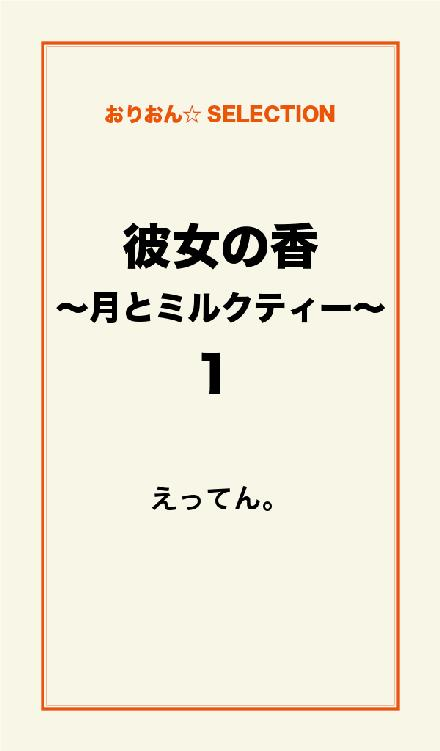
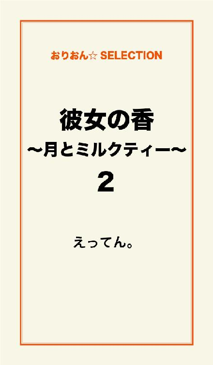
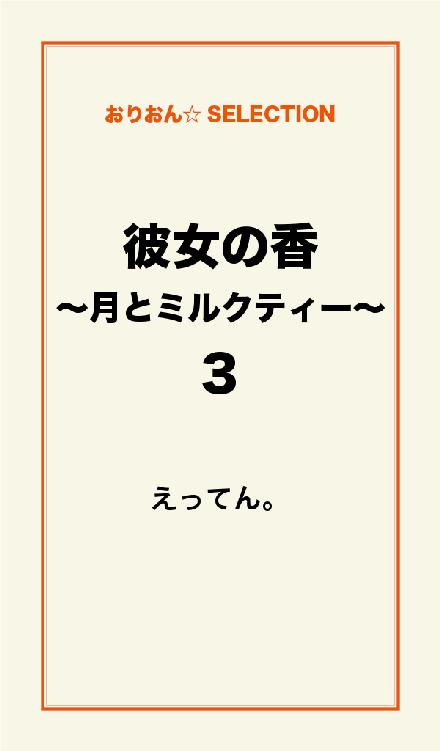

| 彼女の香～月とミルクティー～ | |
| えってん。 | |
この本は横書きでレイアウトされています。
また、ご覧になる機種により、表示の差が認められることがあります。

「あたし、啓太君と付き合ってるの......だから」
僕の前で俯き、嘘の悪びれを見せてそう言った。
「そう、分かった」
僕はそう伝えると、背を向けて夕焼けの中へ歩き出す。
「それだけっ！？」
それだけだよ？
背中にぶつけられる言葉に振り返る事なく、僕はただ夕日だけを見つめていた。
「愛介がそんなだからっ！ だからあたしっ......！」
僕の親友と浮気して、
別れたいんだろ？
「淋しかったのっ！ 愛介がなに考えてるのか分からないからっ！」
立派な理由だよ。
僕の考えてることなんて、自分にも分かんないよ。
「別れてやるから、もう吠えないでくれる？」
僕の言葉に傷付いた事が背中越しに伝わるが、僕はそれでも後ろは見ずに前へと進んだ。
後ろでまだ何か聞こえた気がしたが、きっとカラスに違いない。
あいつはカラスだ。
黒い体に黒い羽を持つ、真っ黒まみれのカラス......。
カラスの名前は田辺梓。
高校二年の夏、バンドを組んだのがきっかけで知り合い、付き合ってほしいと言われて付き合い始めたのだが、僕の方もけっこう好きだった。
そして今週、付き合って二度目の夏を迎えようとしていたが、カラスは僕の親友啓太と新しい夏を迎えるようだ。
何度もキスをし、幾度となく激しく体を繋げ合い、感じる部分も弱い部分も知り尽くしていたはずなのに、心変わりには気付かなかった。
そして、親友もその部分を知っていようとは、思いもしなかった。
だけど、不思議な事に僕の心は波立たなかった。
啓太と田辺にもそれほど強い怒りは感じてなく、ただ一つの何かが終わったという感覚だ。
「バンドは！？ どうするの！？」
辞めてやるよ。
答えない僕に、カラスはまだ答えを求めて叫んでくる。
帰ろう......。
カラスが鳴くから、もう帰ろう。
僕の名前は小出愛介（コイデアイスケ）。名前に愛があるくせに、この前フラれたばかりの十八歳。
無色......ではなく、無職......。
高校を出て大学に進学してみたものの、自分の居場所ではなかった気がして、すぐに辞めることを考えた。
が、
親や世間体を考えて、しばらくは通うことにしたのだ。
けど、
やっぱり違う気がして、田辺にフラれる三日前、大学を辞めた。
親は激怒......普通はそうだわな。
"大学は金の無駄"
そんな事言っちゃったら、怒りまくるわな。
だけど、わりとすんなり理解してもらえて、無駄金使われなくてよかったと納得された。
で、大学辞めて彼女もなくなって、てゆうか彼女はどーでもいいんだけど、そんな無色の僕に残った物はといえば、このギターだけ。
別に、プロのミュージシャンを目指しているわけではないけど、バンド仲間と毎晩のように駅前で歌っていた。
これからは、一人で弾く事になるのだが......。
場所も変えなきゃな。
"愛介は続けろよ。俺らが抜けるから"
僕が田辺と別れた日、啓太が電話で僕に言った言葉だ。
冗談じゃない。
愛介が可哀相だの、二人とも最低だな、などと、哀れまれて堪るか。
そんな中でギターなんぞ弾いてられるか！ 歌えるか！！
"いいよ、ちょうど一人でやろうと思ってたから"
と、何となくしゃくに触ったので、そう答えておいた。
啓太も、抜ける気などさらさらなく、取りあえず言っただけのはずだから。
それで、僕は一人になった。
連帯行動を主としていないため、一人でやる事には抵抗なかったが、つるんでいた連中と離れるとやはり少々淋しい気もする。
そんな僕だから、友達もめちゃめちゃ多いわけでもなく、深く狭いといった感じだ。
実際、その深いと思っていた親友に裏切られたわけだけど。
とにかくそんなこんなで、僕は一人で気分よく歌える場所を探しているのだが、なかなか見つからない。
あの場所が一番良かったのかもなぁ。
僕は大きく溜め息をつくと、肩に食い込むギターケースを抱え直し、信号が青になるのを待った。
ふと、強い視線を感じた僕は、引き込まれるようにそっちを見つめた。
ドクンッ！
思い切り心臓が跳ねるのを感じ、僕はそこから目を離せなくなった。
信号が青に変わり、僕の足は引っ張られるように歩き出す。
近付く。
どんどん近づく。
バス停のベンチに腰掛け、じっとこっちを見ている女性の前で、僕の足は止まる。
何か言わなきゃ、
変な奴だと思われる。
けど、僕は言葉を出す事が出来ない。
その女性も、僕に何も言ってこない。
どれだけそうしていただろう、きっと数十秒そこいらだろうけど、かなり長く感じた。
どうしよう。
何か......。
「キミ......それ弾けるの？」
想像より遥かに低い声が耳を掠め、僕はハッとなって頷いた。
「弾けます......」
それが、彼女との最初の会話だった。
「弾いて？」
「え？」
「何でもいいから」
何でもって......。
ここで？
バスを待つ人達に紛れて、自分がギターを弾く姿を想像すると、なんとなく可笑しい。
「......じゃ、じゃあ、弾かせて頂きます」
僕は何故か恐縮気味にお辞儀して、ギターケースを肩から下ろすと、中からギターを取り出した。
ギターを肩にかけ、何を弾こうかなと考えながらチューニングするが、もともとコピーをしない僕が弾く曲は、オリジナルしかない。
僕は最近作ったばかりの曲を弾く事にし、指を弾いた。
何の前触れもなくいきなり目覚め、朝焼けを見ながら作った歌だけど、僕はとても気に入っている。
自分でもびっくりするぐらい難しいコードばかりで、最初はこんなの何で作ったんだと不思議だったが、弾いていくうちに自分に馴染んでいく気がした。
いや、今もそんな気がしている。
人前で一人で歌うのは初めてなのに、僕は今までもずっと一人で歌ってきたように、何の抵抗もなく歌えた。
僕にしては甘い歌を歌い終わり、気分良くなった体に、あっちこっちから拍手が向けられた。
え？
いつの間にか周りには十数人程集まっており、僕はびっくりして激しく瞬きする。
何となく次の曲を待たれている気がしたので、とりあえず思い浮かんだ曲を弾いた。
オリジナルにも関わらず、集まった人達は最後まで聴いてくれた事にびっくりだ。
つるんで歌っていた時でも、ここまで聴いてくれた事がなかったので、正直僕自身かなり嬉しい。
「甘いね......」
歌い終えた僕に、ミルクティーを飲んだ彼女が最初に言った言葉は、その味なのか僕の歌に関してなのかよく分からない。
「飲む？」
彼女に差し出されたペットボトルを手に取り、
間接キス？
と、一瞬ドキッとしたが、そんなネンネでもないので、躊躇なく受け取った。
「すんません」
甘い......。
ミルクティーを一口飲んで彼女に返すと、肩から下がったままのギターを片付けた。
彼女の隣に腰を下ろし、ギターを足の間に挟むと、手持ち無沙汰になった手でファスナーをいじる。
「誰の曲？」
「僕です」
「へぇ、凄いね」
単発の言葉に、僕も単発で返す。
「いい歌、甘くて苦くて......いい匂い」
匂い？
ミルクティーと同じような感想だったが、僕は素直に嬉しかった。
「どうも」
照れ臭さを隠して御礼を言うと、僕は彼女の横顔をチラリと盗み見る。
一瞬、呼吸が止まってしまった。
絶世の美女というほどでもないのに、どこか引き込まれるその顔は、透き通るくらい真っ白で、まるで雪のようだ。
美人というより可愛らしい系の彼女は、僕から見てもスッピンだと分かる。
半袖からニョキッと飛び出した腕は、
モヤシ？
とかぶる。
丸顔にそのヒョロさが何ともミスマッチな彼女は、僕の目にはとても綺麗に見えた。
多分、信号待ちしてる時から......。
だから僕は......。
「何でそんな見るの？」
横向きだった彼女が僕に向き直り、年甲斐もなく普通にびっくりしてしまった。
「別に......理由はないです」
嘘つけ。
「なんだ、私の事好きになったのかと思た」
自分の事を〈私〉ときっちり言える彼女に、何故かドキリとしてしまう。
だから僕は、目が離せなかった。
歌っている時も、彼女から目を離せなかったんだ。
彼女の細い髪が僕の鼻を掠め、フワッと甘く届く。
「でもキミ、歌下手だね」
クスッと冗談めかしていう彼女に、僕の心はわし掴みにされそうだった。
「それはどうも」
彼女の少し茶色い目を見つめたまま、僕は言葉を返す。
月の光を受けた彼女の大きな瞳は、吸い込めるだけその光を吸収している。
「私、キミならいいかな......」
少し掠れた声で囁くと、その濡れた唇が僕の呼吸を飲み込んだ。
甘い......。
唇もキスも彼女の香も、全てが甘く僕の頭を支配した。
「じゃあ、またね。ありがとう」
じゃれるようなキスが終わり、何事もなかったかのように立ち上がると、彼女は月に向かって歩いて行った。
キミならいいかなって、
どういう意味だ？
僕は彼女の感覚が残る唇に手を這わせ、その華奢な背中を見送る。
それが、甘い残像を残した彼女との出会いだった。
蝉がけたたましく泣きわめき、何か心地良い夢を見ていた僕を無理矢理引きずり起こした。
「喋り過ぎだろ......蝉」
欝陶しく喋りまくる蝉にぼやきながら、枕元の携帯を見ると、着信が三件入っている。
「......トミー？」
トミーといっても外国人ではなく、僕の友人の一人で富永保、人科の雄である。
僕は親しみを込めて、トミーと呼んでいるのだ。
10時か。
日曜の10時は学生にとって微妙な時間だ。
着信が夜中の2時だから、起きているかは微妙である。
健全な僕が、
夜中の2時に起きてるわけないだろ。
汗ばんだ体を起こし、とりあえず着信だけでも入れておこうと、僕はトミーに電話することにした。
ブルルッ！
とその時、携帯が振動を始め、思わず体が跳ねた。
「ぬおっと、ビビッたぁ。トミー」
液晶に映し出されたトミーの文字に、何となく舌打ちし、僕は電話に出た。
「はい？」
『おっ、やっと出た。俺俺』
オレオレ詐欺みたい。
『富永だけど』
「分かってるよ。何？」
『ラブさぁ、先週のジレンジャービデオ録ってない？？』
ラブとは僕の事で、ジレンジャーとはトミーがいつも観ている深夜アニメだ。
かくゆう僕も、たまに観たりする。
ジレンマだらけの冴えない青年が、ジレンマを植え付けて世界を支配しようとする悪の組織と闘うアニメで、これがなかなか面白い。
大人向けのアニメなので、大人要素も有りである。
「録ってないし、そのラブって呼ぶのやめろよ」
『何で、いいじゃんラブ。愛には薄いけど......』
「うるせぇよ」
愛介の愛からラブと付けられたのだが、なんてネーミングセンスのない......。
「トミー、お前にはガッカリ」
とはいえ、富永だからトミーと名付けた僕もセンスに乏しいのだが。
愛を英語に置き換えたトミーの方が、捻った分まだセンス有りなのだろうか。
『てゆうか、お前何で大学来ないんだよ？』
え？
『......もしかして、気にしてんのか？ 啓太と......田辺の......事』
トミーが言いにくそうに言葉を詰まらせると、僕の反応を待つように沈黙を作る。
あ、
そういや言ってなかったっけ。
「大学辞めた」
僕の言葉にトミーが息を飲み、また暫く沈黙。
「おい、トミー？」
その時間と通話料が勿体なかったので、僕はどこかに飛んだトミーを引っ張り戻す。
まぁ、僕の携帯代に影響はないのだが......。
『そんなに、ショックだったのか？』
「は？」
『そりゃそうだよな。親友が彼女と浮気して、その上取られたんだもんな......傷付くよな』
「何言ってんだよ」
お前の言い方のが傷付くぞ？
全く傷付いてなどいなかったが、そんな言われ方をされると、不思議と傷付いたように思えてくる。
しかし、女に対してそこまでメンタル的に弱いと思われるのは、正直しゃくだ。
「そんなわけないだろ。バカかお前」
『いいって、俺ら友達だろ？ 隠すなよ』
「隠してないっつってんだろ、話聞いてんのかよ」
そんなんで大学辞めるって、実際どんだけ適当だよ。
『バンドもさ、ラブが抜けてから何かパッとしないっつーか、ギクシャクしてるっつーの？やんにくい』
まぁ、そうだろうな。
『つまんないよ、正直さ』
そっちが本題だったのかと、思わせるようなトミーのボヤキに、僕もつまらなさを認めた。
口には出さなかったけれど。
「今だけだよ、すぐ元通りになるだろ」
『そりゃあ、そうだろうけどさぁ』
今すぐこの状況から抜け出したいのか、トミーのテンションは下がりっぱなしだ。
『ラブはどうしてんの？ バンド離れてから』
「別にどうも、今のとこは場所探しだな」
『一人で？』
「まぁな、いきなりメンバーなんか見つからないだろ」
長くなりだしたので、僕はもう一度ベッドに寝転がり、汗ばむおでこを拭った。
『そっかぁ、俺も抜けようかなぁ......』
「はぁっ！？ なに言ってんのお前」
『マジでさ、ラブとやってた方が気持ち良かったし』
「その言い方、なんかやだ」
トミーの直球な言葉に照れ臭さを感じた僕は、茶化してごまかした。
『んだよ、真面目に言ってのに』
恥ずかしさを隠しながら言ったのだろう、トミーはふてくされ、舌打ちした。
「まぁ、お前らはお前らでやれよ」
僕の言葉にトミーの答えはなく、鼻息だけが耳に届く。
その後ドラマの話しやら何やらして、トミーとの電話を終えた。
「あー、なんかダルイ......」
ベッドに寝転がったまま、何となく目を閉じてみる。
蝉の鳴き声がやかましくなり始め、その音に合わせて僕の指が動く。
こいつら、わりといい音出す？
蝉に音楽性を感じた時、ドアがノック無しに開いた。
「かあさーん......」
「あ、ごめん。またノック忘れちゃった」
掃除機を持って現れたのは、いつも忘れたと言って部屋に入ってくる、僕の母だ。
「着替え中とか、取り込み中だったらどうすんの？」
体を起き上がらせた僕は、少し意地悪な質問をしてみる。
「取り込む！？ 何っ？ 何するつもり！？」
こうやって慌てることが、分かっているから。
息子が、男であるためにどうしても処理しなければならない事があるという事実を、受け入れたくないらしい。
「父さんは？」
「お店にいるわよ？」
僕の家は街角の小さな電気屋で、大型量販店の煽りをうけつつも、なんとか頑張っている。
昔は、僕に継いでもらいたいと思っていたようだが、このご時世だ、継いだとしてもすぐ店を畳まなければならなくなるだろうと、その望みを諦めたらしい。
実際、僕はこの有様だし。
「今日も出掛けるの？」
「いや、今日はバイトだから」
「そうなの」
そうなのだ。
本当なら、実家の仕事を手伝えばいいのだが、満足なバイト代を払えないという事で、僕は夜のバイトをしている。
といっても怪しげなバイトではなく、こ洒落たバーだ。
バイト代もよく、未成年の僕も働けて、店長も美人なので僕としてはウハウハなのである。
「もうお布団干しちゃっていいの？」
「うん。あ、掃除機は自分でかけるから」
布団を上げようとしている母親にそう告げて、僕は部屋を出た。
「お、今日は家か？」
出て早々、僕に声をかけて来たのは父で、頭にタオルを巻いてすでに汗だくだ。
ご苦労様です。
「今日はバイトあるから、それまでブラーっと出掛ける......と思う」
母親と同じ質問をしてくる父親に、わりとテキトーな返事をしておく。
「父さんは日曜も仕事？」
「おう、クーラー売りさばく時期だからな、休み返上だ」
すいません、
休みっぱなしで。
「じゃ、愛介君。俺はトイレ行くんで、失礼しますよ」
ごめんなさいねと言いながら、廊下の一番隅に消えて行く父親に、僕は申し訳なさを感じながら見送った。
「ご飯食べたら行こうかな」
バイトまでの時間、歌える場所を探しに行くつもりだった僕は、昼ご飯を食べてすぐに出掛けることにした。
僕の両親は、僕が大学を辞めた事を責めたりせず、特に就活もしていない今の状況にも、何一つ文句を言わない。
僕を信じてくれていると、何の迷いもなく言いきれる。
そんな両親だからこそ、大学も辞めることができ、こうやって自由にさせてもらえるのだ。
言いたい事は、山ほどあるはずなのに......。
僕だって、いつまでもこんな状態でいるつもりもない。
何かしようという気分にもなれない。
親友に彼女を持って行かれたからというわけでも、ただ怠けたいという事でもなく。
自分が何をやりたいのか分からないなんて、こんな状態僕だって嫌だ。
「何やってんだろ......」
温かな朝食を食べながら、沈み込もうとする心を何とか浮き上がらせた。
食事を食べ終えると、11時半というなんとも微妙な時間になっていたが、出掛けることにした。
着替えるため、部屋に戻った頃には母親の姿はなく、ベランダの柵に布団が礼儀正しく並べられているのが見える。
気分よく寝れそう。
干した後の布団の匂いが大好きな僕は、早く夜が来ないかと少し楽しみになってきた。
クローゼットを開け、シャツとジーンズを取り出し、ちょっと迷ってネクタイを掴む。
ネクタイと言っても、就活です、お見合いですといったカッチリネクタイではなく、ぶら下がってまーす程度のオシャレネクタイだ。
モード系とまではいかないが、僕はこのスタイルが好きで、Ｔシャツを着るより似合っていると、自分でもそう思っている。
だからといって、ナルではない。
バイトだし、ギターはいいか。
とりあえず場所探しとブラつくのが目的なので、ギターを留守番させることにした僕は、財布と携帯、鍵を持って部屋を出た。
「行ってきまーす、よ？」
リビングを覗いて声をかけた僕に、
「おう、気をつけてなー」
「真面目に働きなさい？」
と、夫婦仲良くお菓子を摘みながら、見送ってくれた。
僕は特に返事はせずに玄関に行き、お気に入りの靴を履いて外へ出る。
「あっつー」
今日も、惜しみ無く降り注ぐつもりであろう太陽は、うんと高いところまで昇っていた。
「時間もあるし、歩いていこっかなー」
僕の住んでいる町は、田舎でもなければ都会でもない、どちらかといえば普通といった微妙な所だ。
それなのにバスや電車の本数は多めで、ひっきりなしに走っている。
通学通勤、老人妊婦、そして子供達と、全ての人達のニーズに合っていて、非常によい。
何より、家のすぐそばにバス停があるというのは、免許取りたての僕にとって、有り難過ぎる事なのだ。
家に車はあるのだが、【小さな町の小さな電気屋さん。小出電気店】と電話番号が書かれた軽トラと、同じロゴが入ったバンしかない。
僕は、その小意気な車を転がせるレベルではないのだ。
まぁ、駅から徒歩10分という立地条件がそうさせないのだが。
バイトがない日は、しょっちゅう歩いて駅に行き、トミーや啓太達と演奏していた。
まだ一人になってさほど時間が経っていないが、何となく懐かしい。
啓太はベースでトミーはドラムなのだが、スタジオを借りない外の時は、啓太もギターだ。
トミーはといえば、タンバリンとマラカスをシャカシャカやっては腕がなまるとぼやいていた。
スタジオばかり借りていると、あっという間に散財してしまうので、外で出来ない時はトミーの家のガレージがスタジオだったのだ。
その中に、田辺がツインボーカルで入っていた。
彼女のために曲を書いたこともあったが、まさか啓太を想いながら歌われていたとは......。
我ながら、情けない。
これからは一人で歌うという事に、僕はどこか期待めいたものを感じていた。
んなこんなで駅に着いた僕は、とりあえず駅前にこだわらず、別の場所も視野に入れ、よさそうな場所を探し始めた。
この間も一通り見て回ったけれど、昼と夜とでは全く違う装いだ。
「あ、ここ......」
何となく足を運んだ場所は、あの夜彼女と会ったバス停だった。
夜見た時は気が付かなかったが、すぐそばには小さめの広場がある。
「なんか、いい感じ」
この辺りはオフィス街という事もあって、僕の中では視野に入れていなかったのだが、広場には木も植えられており、癒しを感じる場所だ。
「この辺りで働いてるのかなぁ」
と呟いてみたけれど、僕の記憶が正しければ、あの日の彼女はスーツをかっちり着こなしたＯＬふうではなかった気がする。
ほとんど顔しか見てなかったからなぁ。
あの夜以来、彼女とは会ってなかったけど、僕の頭の中に時折現れては、そのまま暫く居座っていた。
なぁんでだろ。
一目惚れとか安っぽいものではなく、ただ気になって仕方がない。
僕は彼女が座っていたベンチに腰を下ろし、彼女の視線に合わせてみた。
こんな感じかぁ。
そこから信号機の辺りをみながら、彼女がしたように僕を見てみた。
想像だけでは、ドラマのような映像だ。
「みぃつけたっ」
その声と共に、いきなり肩に手が乗り、柔らかめの黄色い声が僕の耳に届く。
振り向いた僕の目に映ったのは、どこかで期待していた彼女ではなく、
「あ、えっと......。野沢さん？だっけ？」
大学で五本の指に入ると噂の美人、野沢穂香だった。
「そーでーす。意外、あたしの名前知ってたんだ」
そう言いながら僕の隣に座ると、細長い足をくんだ。
「そりゃあね、指折り美人の名前ですから」
「それはどうも」
こんな軽口を叩き合うほど、仲がいいわけではない。
実際、話しをする事すら初めてだ。
「大学、来ないね？」
「あー、辞めたからね」
僕が他人事のようにさらっと言うと、野沢穂香は特に驚いたふうでもなく、そうなんだと返してきた。
知ってたってか？
「大学で会えないから、すっごい探したんだよ？」
「よくここ分かったね？」
「うん。さっきね偶然富永君に会って、小出君の事聞いたの。そしたらいろいろ教えてくれた」
トミーか......。
お喋りちゃんめ。
「なんか用だった？」
美人に探してもらって悪い気がしない僕は、サラっと用件を聞いてみた。
「うん。小出君、彼女と別れたんでしょ？」
トミー、
そんな事まで話したのかよ。
「有名な話しになってるわけ？」
「そこそこね」
どんなふうに話しが広がってるのか、想像するだけでうんざりする。
人の噂だ、いろんなものがくっついてるに違いない。
寝とられた上に、すごい修羅場の殴り合い、泣き付いたとかも考えられる。
うわー、
辞めてよかったぁ。
「で？」
「小出君、あたしと付き合わない？かな」
話しの流れから、何となくそういう話しになる気がしていた僕は、いきなりの申し出に特に慌てる事もしなかった。
「なんで？」
そして、僕から出た第一声が、それだった。
「なんでって、小出君の事前から結構いいなぁって思ってたから」
他の男ならすぐ飛び付く悩ましげな顔に、僕は引っ掛かる事はない。
嬉しい気持ちも、飛び付こうという衝動もなくはないが、どうしても聞いてみたかった。
「どの辺が？ 君とそんなに身長変わんないし、君ならもっと上でしょ？」
と。
残念な事に、僕は女の子としてなら大きい方なのだが、男子としては少々小振りな方なのである。
「身長とかは問題ないよぉ。なんかいいってゆーか？ カッコイイってゆーか？」
それはそれは、
どうも。
「裏でエッチな本とかいろんなの観てなさそうだし、アニメとかも観なさそうだし？ そーゆーの、清潔ってゆーか、オタク系じゃない爽やか系？」
それは微妙な返答ですが、全て疑問系なのは何故ですか？
結構な高評価に水を指すようで申し訳ないですが、僕は真っ当なホモサピエンスの雄です。
残念ながら、エッチな物の類はしっかり観ますし、アニメだってガッツリ観ますよ？
そして何より、立派なギターオタクです。
「そーなんだ」
「ぶっちゃけちゃうと、外見が大半なんだけどね？」
悪い気はしませんが、どうなんだろう、それ。
別に付き合ってもいいかなと思ったが、
「ちょっと考えさせて？ 君の事よく知らないし」
と、当たり障りのない答えをしておいた。
トミーが聞いたら、もったいないと叫びながら、のたうちまわっていただろう。
試しに付き合うとか、彼女がいないからといって取りあえず付き合うとか、僕の中には有り得ないのだ。
田辺と別れて心が波立たなかったからといって、気持ちが冷めていたとかではない。
田辺の事は、真面目に好きだった。
ただ、もう終わりを決めてしまっている相手に食い下がっても、どうにもならないし、どうにかしたいとも思わないのだ。
自分でも思うのだが、あまり感情が揺さぶられない。
田辺が言っていたのも、おそらくはそういう事なのだろう。
「やっぱ小出君って、他の子とは違うね」
「違うって？」
「あたしの知ってる男の子って、とりあえず付き合っちゃえーってノリばっかなんだもん。そうやって間を置く人、いないから」
それは気の毒に。
美人だから故なのか、そりゃ、この顔に付き合いたいと言われて、断る男は多くはないだろう。
とりあえずおいしいところだけでも、ガッツリ頂いておこうと思うのが、男の悲しい性なのだ。
「けどそういうとこ、わりと損しちゃうよね」
「ゴモットモです」
「あたしは好きだけどね？」
「物好きだね、君。カタブツちんちくりんなのにさ」
さらっと言ってはみたけれど、背が低いことはちょっと自分でも気になるところではある。
「確認なんだけど、あたしまだフラれてないんだよね？」
セミロングの髪を耳にかけながら、僕に斜め45°をきめてきた。
「まぁ、そう......かな」
「じゃあ、アドレス交換しよ？」
そうやって流れ作るのかぁ。
自然にアドレス交換を持ち掛け、断る理由を思い付かせないやり方に、僕は感心してしまった。
今度使ってみよーかなぁ。
なぁんて思ってはみたものの、僕にそんな芸当できるわけないのだが。
「これで、小出君のプライベートにお邪魔できちゃうね？」
そう言いながら携帯と携帯をくっつけるが、
「ごめん、僕の携帯赤外線ついてないんだ」
アナログ大好き人間の僕に、そんな物が付いた携帯など持っているわけない。
「びっくり。ますます興味深い存在だね？ 深く突っ込んだら色々出てきそう」
多分、ゲンナリするよ？
「携帯いじるけど、いい？ アドレス見るだけ」
野沢穂香は、すでに僕の携帯を開いて、メニューボタンに手をかけていた。
駄目って言ったら、どうするかな？
「どーぞ」
人に携帯をいじられるのは嫌いだが、僕はとりあえず承諾しておく。
断られないと分かっていたのか、野沢穂香は返事とほぼ同時にメニューボタンを押した。
機種の違う他人の携帯を、説明書無しで操作していく事が、僕の中では信じられない。
以前同じ携帯だったのか、余程慣れた作業なのか......。
おそらく後者だろう。
そして、自分の携帯に僕のメアドを打ち込むスピードは、ハンパない。
あっという間にすべての作業を終え、口半開きで見ていた僕の手の中に戻した。
「ありがとっ」
満足そうに立ち上がり、得意な角度で僕に振り返る。
「メールとワンコールするから、ちゃんと携帯に覚えさせてね？」
「あい、了解」
挙手して答え、携帯をポケットにしまった。
「じゃあ、またね？」
一瞬、あの夜の彼女とかぶり、僕の動きが鈍る。
じゃあ、またと言って背中を向けた彼女は、まるで月に帰っていくようだった。
しかし、目の前で踵を返した野沢穂香は、あの日の彼女とは似ても似つかなない。
自信満々な背中は、凜とした彼女のそれより弱く見える。
また会えるだろうか？
何故か僕は、彼女に無性に会いたかった。
彼女との接点であるこの場所で弾く事に決め、僕はベンチから立ち上がる。
ポケットの中で携帯が何か言っていたが、僕は確認する事なく歩きだした。
この場所とバイトの往復......。
これからは、そんな日常だ。
「待ちくたびれた」
それは僕が歌える場所を決め、ギターを持って訪れた最初の夜だった。
「え？」
「私、キミの事ずっと待ってたんだけど？」
彼女は初めて出会ったあのベンチに座り、膝の上で頬杖をついて僕を見ている。
小さな女の子のように。
僕は彼女の前に立ち、頭をかく。
「えっと、すいません」
一応謝ってから、何で謝ったのか分からなくなり、首を傾げた。
「これ」
彼女は、鞄の中からペットボトルのミルクティーを取り出して、僕に向かってグイっと突き出す。
「これ？」
「これで、また弾いてくれる？」
おだちんとでも言おうか、そのミルクティーでギターを弾いてほしいとの事だった。
「はぁ、いいですけど」
「本当！？ やったねっ」
彼女は体を弾ませて喜び、姿勢を正して僕を見つめる。
僕のギターをそんなにまで聞きたがってくれる事に、正直マジで嬉しい。
肩からギターケースを下ろしてギターを取り出し、いつものように音を整えていく。
なんか、緊張する。
そんな僕の動きを、彼女はずっと見ていた。
「あの......何弾きますか？」
ただじっと見ていた彼女は、ハッとしたように目を大きくする。
「あ、そっか。そうだよね」
うっかりと肩を竦めた彼女は、本当に少女のようで、
幾つなんだ？
と、思ってしまう。
今日初めて気が付いたのだが、彼女は笑うとそれはそれはキュートなえくぼが両頬に浮かび上がる。
こんなに印象的なのに、何故今頃気が付くのか不思議なくらいだ。
そしてそのえくぼが、彼女の年齢を余計に分からなくさせている。
年上だって事は、分かるんだけど。
今日もラフな姿の彼女は、チェックのチュニックワンピースにレギンスを合わせており、足元は可愛さと大人っぽさを兼ね備えたバレエシューズを履いている。
髪は簡単にまとめられていて、その装いは彼女によく似合う。
「こないだの曲、あれ弾いて？」
考えるまでまなくといった彼女の答えに、僕は嬉しくて笑ってしまった。
「了解」
僕はピックの角を指でこすって、彼女のリクエスト曲を受ける。
彼女の視線を受けながら、僕は指に馴染み始めた曲を弾き始めた。
弾き始めて暫くすると、この間と同じように人が集まり、僕の歌に耳を傾ける。
オリジナルの曲ばかりなのに、体を揺らして応えてくれたり、スローな曲には手拍子も入れてくれた。
僕は一曲弾いて終えるつもりだったが、今日も四曲ほど歌って終了した。
「お金取れるんじゃない？」
前回と同様に、彼女は前置きのない言葉で僕に話しかける。
「じゃあ、お姉さんくれます？」
ギターをケースにしまいながら、僕が返事を返すと、
「これ、あげたでしょ？」
そう言って、ミルクティーを差し出してきた。
「なるほど」
彼女の隣に並んで座んでミルクティーを一口含むと、その甘さにつられてクビグビ流し込んだ。
清々しい風が、歌い終わって熱くなった体を冷ましていく。
ふと甘い香が鼻をかすめ、髪が近くにある事に気が付いた僕は、彼女を振り返る。
ドキッ！
「絶対見ると思った」
そうやって笑う彼女は、大人の色気一杯で、でもいやらしくなく......。
僕は......。
僕は......。
キスしたいと、思ってしまった。
「キミの作る歌ってさ......」
彼女が何か言いかけた時、ポケットの中で僕の携帯が歌い出した。
彼女は言いかけていた言葉を中断し、電話に応じるように指で示した。
「すんません」
僕は彼女に軽く頭を下げ、ポケットから携帯を引っ張り出す。
誰だ？
液晶に浮かび上がっているのは数字だけで、アドレスに登録されていない相手からだった。
僕は気味が悪いと思いながらも、とりあえず電話に出る。
「はい」
『小出君？ あたし、穂香』
「あ......どーも」
野沢穂香からの電話に、何故か後ろめたさを感じた僕は、隣に座る彼女をこっそり見る。
『あれからぜーんぜん連絡くれないんだもん。あたしからしちゃった』
あ。
忘れてた。
『待ってたんだけどな』
「ごめん、何気に忙しくて」
『そっか、てっきり消されちゃったのかと思ってた』
消すどころか、存在すら忘れていた。
「で、何だろ？ 何か用かな？」
僕は早く電話を切りたかったが、それもあんまりなので、取りあえず用件だけは聞いておく。
『用じゃなきゃかけちゃいけない？』
「そんな事ないけど」
今はちょっと......。
『迷惑......だった？』
そうかもしれません。
「別にそんな事は」
野沢穂香の甘えた声は、違うと言わせるために作られたものだったが、分かっていても"そうです"とは言えない。
『今何してる？ もしかして歌ってた？』
「いや、今日はバイトだから」
僕は咄嗟に嘘をついた。
弾いている事を話せば、ここに来ると思ったのだ。
彼女とのこの時間を、邪魔されたくなかった。
『そうなの！？ ごめんっ、じゃあもう切るね』
「ごめんね？」
『ううん。じゃあまたね』
「また」
僕は携帯を折りたたむと、隣にいる彼女に向き直った。
「冷たいのー」
頬杖をついた彼女が、僕を見ながら呟く。
「女の子でしょ？ 声、漏れてた」
「あ、はぁ。まぁ」
僕は歯切れ悪く答え、携帯をポケットにしまった。
「彼女じゃないの？」
「違います。友達ってゆーか、知り合いってゆーか......」
野沢穂香との関係は、そんな微妙なものだ。
まぁ、話した事もないのだから当たり前なのだが。
「彼女いたら、こんなとこで一人で歌ったりしません」
「それもそうか」
あなたは？
そう聞きたかったが、何故か聞けなかった。
「さっき何か言いかけてませんでしたか？」
僕の曲に関して何か言おうとしていたことも気になり、僕は彼女に話しを振った。
「あっ、そうだった。えー、何だったっけ？」
「け？って聞かれても。忘れちゃったんですか？」
「忘れちゃった、ごめん」
おいおい、
大丈夫か？
テヘヘと笑いながらミルクティーを飲むが、
それ、
僕のです。
彼女との間接キスが、何故か僕の少年の部分を刺激する。
「そう言えばさ、この前ここでキミとキスしたね？」
「......しましたね」
甘いキスでした。
いきなり何を言い出すのやら。
「あんな事していいんですか？ 誰かに見られてたかもしれないですよ？」
「見たければ見ればいいんじゃない？ キミは気にするの？」
「別に、見られて困る相手もいませんし」
「私もいない。いたらしない」
彼氏、いないのか。
「何でしたんですか？ 見ず知らずの相手に」
「キミが私を見てたから」
ドキリとした。
普段、あまり心拍リズムを乱さない僕が、彼女にはよく乱されてしまっている。
「聞きようによっては、痴女みたいですよ？」
「うん、した後そう思った」
言った後で、赤らめた頬を両手で隠す姿は、僕よりも年下に見える。
こんなふうに照る彼女を見るのは、初めてな気がした。
幾つなのか聞いてみようかな。
「あ、思い出した」
頬を押さえていた手をパッと離して、すっきりしたような顔で僕を見る。
「キミの曲、やっぱり彼女に作ってあげたりしたの？ だっ」
思い出した言葉を、そのまま編集なしで口に出した彼女は、実に満足そうだ。
けど僕は、なんとなく痛いところをつかれた気分だった。
「そんな事も、まぁ、ありました......ね」
違う男を想いながら、歌われましたけど。
「さっきのもそうだった？」
「いえ、そんな曲を他の女性の前でなんて歌いません、てか弾きたくもないです」
そんな惨めな事出来るか。
「どうして？ 歌ってあげなきゃ、可哀相じゃない？ ずっと日陰って事でしょ？」
「多分作ってあげた相手が、別のとこで歌ってると思います。俺の親友と」
ちょっと、惨めったらしかったか？
「何かよく分かんない言い回しだったけど......察するに、キミは浮気されたって事だね？」
おっと。
「割とハッキリ言いますね？」
「ごめん、他に言い方わかんなくて」
少し肩をすくめて申し訳なさそうにするが、そのハッキリさに嫌な気がしなかった。
「いえ、情けない事に、寝とられたってやつです」
別に、何か慰めの言葉を貰いたかったわけじゃなかったけど、
「んー、それ情けないね」
そんな言葉が出るとも思わなかった。
「衣着せませんね」
「ね、着せないよね」
全くカチンとこないのは、何でだろう。
「寝とられるのは、ホント情けない。取った相手より、寝とられる方が悪い」
「何で？ そんな状態にさせたから？ 浮気するような不安とか与えたからって事ですか？」
「ブブー。じゃなくて、そんな相手を選ぶからよ」
彼女は指でバッテンを作り、僕の口元に近付けた。
「まぁ、私もキミと同じ口だから、偉そうなコト言えないんだけど」
そう言う彼女は、ちょっと残念そうな顔でため息をつく。
僕は彼女に彼氏がいないということに、内心喜んでいた。
「落ち込んでる？」
彼女の問い掛けに、僕は笑って首を振った。
「全くです」
「悔しくなかったの？」
「それもないです。ちょっとはムカついたかもですけど、そんな程度です」
特に心が乱されたわけでもなかったからなぁ。
「だからって、僕は別れた彼女の事を、本気で好きじゃなかったわけじゃないですから」
って、
何でこんな事言ってんの？
「......歌作るくらい、好きでしたから......」
それでも僕は、止められなかった。
長くつるんできた友達にも、話したことはないのに。
何でだろう、彼女に聞いてほしかったからか？
透き通るような彼女に、彼女の真っすぐな目に見つめられたいからなのか？
何か理由をくっつけようとしている僕の顔に、何かが触れたと思った時、今度は確実に何か分かるものが唇に重なった。
顔に触れるのは彼女の睫毛で、微妙に振動していてこそばゆい。
「......キミ、可愛いね」
短い一瞬のキスを止め、からかうように僕を見る彼女に、
やられっぱなしだと思うなよ？
僕は彼女の腕を掴み、離れようとする体を引っ張って、再び唇を重ねた。
ピクンと体を跳ねさせ、僕の腕から逃れようとする彼女を、逃がさないよう抱きしめる。
観念した彼女がキスに応じてくると、僕の体に強い刺激が走った。
「......不意打ち二回分のお返し、利子付きです」
離した唇を耳元に移し、少し掠れた声の僕が囁く。
彼女の顔を覗き込み、
覗き込み、
ウソッ......。
「やっ、やーーーーっ！ 見るなっ！ お願い、見ないでっ！」
僕の体を押し返す彼女の顔は、あの毒々しい真っ赤なウィンナーよりもっと真っ赤で、真っ暗闇ならきっと灯籠の役割を果たしただろう。
「うそ、なんっすかそれ。見せて見せて、ちょっと見たい」
「やだっ！見せないっ！」
僕に両手を塞がれた彼女は、俯いた顔をブンブン振って拒否するが、全くおかげがない。
「おねぇさん可愛いね」
僕の言葉がとどめを刺したのか、彼女は体の力が全部抜け落ちたようにヘニャヘニャになり、僕の肩にもたれ掛かって来た。
なるほどね、
やられ弱いんだ。
とか思う僕も、自分の行動にちょっと驚いている。
なにせ、こんなに大胆な事は、普段からあまりした事がないのだ。
「照れてる」
「照れてませんからっ」
彼女の頭をポンポン叩きながら、クスクス笑った。
会ってまだ二回目の女性に、こんなにも親しげにしたのは初めての事だった。
しかも、キスまでして......。
「不覚だわ......こんなとこ見せるなんて」
彼女が悔しそうに呟きながら、僕から体を離す。
ウィンナー顔はマシにはなっていたが、それでもまだ少しボイルされている。
甘い。
口の中に、まだミルクティーの味が残っている。
「ねぇ、歌とかってどんな時に作るの？」
恥ずかしさを紛らわすための問い掛けではなく、本当に知りたがっているようだ。
「どんな時......？ あー、えっと......そうだなぁ」
僕は曲作りしているときの状況を思い浮かべ、言葉にしやすそうな時を選ぶ。
けれど、微妙な事をしている時が多いことに気がついた。
アニメを観ているとき、大人の映像、雑誌を観ているときと、わりと陰気なイメージしか湧いてこない状況ばかりだ。
大人関係に至っては、画面に映ったちょっといいかも的な女子に対して、作ることもある。
後は、付き合っていた田辺......。
これは最悪......。
あ......。
後は何かないかと探していた僕の頭に、彼女にリクエストされた曲が思い浮かぶ。
あるじゃん。
そう、人に話すにはもってこいの、一番カッコよさげな状況が残っていた。
何ですぐに思い付かないのか......。
「あなたにリクエストしてもらった曲は、朝焼け見ながら作りました」
おセンチメンタルだと笑われるかと思ったけど、それしかなかったので、僕は素直に話した。
「あー、ね。だからあんなに綺麗なんだ」
納得したように頷く彼女に、僕はちょっとこそばゆい。
僕は自分の曲を、綺麗だと言われたことがなかったのだ。
ある程度の褒め言葉はいくつか貰ってはいたが、
「いい匂いだし」
その言葉も初めてだった。
「前も言ってましたよね、それ。匂いって」
「言ってたよね。よく分かんないんだけど、でもいい匂い。ミルクティーみたいな......」
彼女の髪の匂いのような......。
初夏の風が彼女の髪をさらい、気持ち良くとかしていく。
「あーー！ そうだっ！ 今日あれだよねっ！！」
「えっ、え？ 何？ 何ですか？ どれ？？」
いきなり大声を上げて立ち上がった彼女に、僕は面食らって激しく瞬きを繰り返した。
「何って！ ジレンジャーだよ！？」
あ、
あーね。
「知らない！？ キミ知らないの？？」
「いや、知ってますよ。てか、お姉さんあれ観てるんですか？」
わりとグロいシーンや、子供にはお勧めできないエロスな絡みを、彼女が観ている事が何故か罪深く感じた。
「観てるよー！もちろん！ 毎週楽しみにしてるんだからっ」
トミーが聞いたら、貴重な女性ファンの出現に、鼻の穴を膨らまして喜んだだろう。
「......な、何ですか？」
彼女が僕をマジマジ見ながら、丸く小さな顔を近付ける。
「キミさぁ、奈落に似てるよね？」
「えーー！ マジですかっ！？」
奈落って......
かなりビミョウなんですけど。
奈落＝ナラクとはジレンジャーの主人公で、事あるごとにウダウダ沈み込む陰欝なやつだ。一応ヒーローものなのでイケメンに描かれているが、行きずり女性と関係したり誰かから責められたりしたら、そのことを深く考えてしまうという少々厄介な性格である。
番組のコンセプトがコンセプトなだけに、仕方ないといえばそうなのだが......。
しかし、僕のどの辺がやつに似てるというのか。
彼はイケメンなのでそこには異議はないけれど、あのウダウダさとリンクされることには問題大有りだ。
「それ、軽くショックです」
「え？ 何で？ どうして？」
「何でって、かなり陰欝なやつじゃないっすか。てか、僕そんなにウダウダヤローに見えます？」
「あれは、ウダウダじゃなくて......憂い系？」
聞かれても......。
「キミもわりと儚げだよ？」
「儚げっ？ どこが？」
初めて言われた言葉に、僕は声をひっくり返して聞き返してしまった。
けっこうカッコ悪いが、儚げという単語のイメージが、上手く出来ない。
「見た目？」
何で疑問系？
「ギター弾いてる時なんて、なんかこう、キュキュウってなるよ？」
キュ？
キュキュウ？
なんじゃいそりゃ。
「ギターが弾けて、その上儚げなんて、女の子には堪んないけどな。謎めくとかって弱いから」
「そんなの聞いた事ないですけど？」
未だかつて、言われたことのない言葉を連発する彼女が、物凄く大人に見えた。
やっぱり、周りにいる女子達とは全然違う。
年上だからなのか何なのかは分からないが、違う視点で見る彼女に僕は甘酸っぱさを感じた。
「モテないの？」
「ハッキリ聞きますね」
けど、歯に衣を着せない彼女の話し方は、嫌いじゃない。
「全く、全然モテません」
「電話の女の子は？」
「全然っ......」
あ、
「まぁ、あれは......まぁ、はい」
野沢穂香から、告白のような物をされていた事を思い出した僕は、曖昧に頷いた。
「けど、それ以外は全くですよ？」
「それは、彼女いたからでしょ」
「えぇ～。いやぁ、違うでしょ」
「そうだって、まぁみてて？ 女の子達寄ってくるから」
この人は、
また適当な事を......。
「ギター弾いてるから？」
胡散臭そうな顔の僕に、彼女は得意げに頷いた。
「あと、儚げ」
「儚げねぇ......まぁ、そういう事にしておきます」
嬉しいんだかなんなんだか、取りあえずモテる要素らしいので、有り難くお言葉を頂戴しておいた。
「てか、何の話しでしたっけ？」
「あ、何だろ。何だっけ？」
彼女は本気で忘れてしまったらしく、オデコを押さえて考え込む。
可愛い人だな。
僕は本気でそう思った。
女の子女の子しているわけでも、可憐なタイプでもなく、どちらかというと活発ボーイッシュタイプの女性なのに、彼女は本当に可愛い。
少し纏わり付くような風が、彼女の髪をとかし、あらわになったオデコが少女さを感じさせる。
「もう夏だねぇ」
「ですねー」
街の雰囲気も匂いも、もう既に夏のもので、自分の中の活動的な部分を刺激していく。
「お祭りとか行くんですか？」
「行かない」
いつの間にか、また僕の隣に座っていた彼女が、足をブラブラさせながら答える。
「あんまり好きじゃないんだよね、あの雰囲気」
「どうして？」
「騒がし過ぎる。終わった後って、なんか淋しいでしょ？」
どうだろ......。
まぁ確かに淋しいといえば淋しいが、嫌というほどでもない。
祭の後の静けさというのだろうか、あの独特の雰囲気が嫌いなようだ。
「キミは？ 行くの？」
「今年は行かないです。多分。男同士でってのもなんか微妙だし、一人でってのも、別な意味で淋しいですから」
もともと、そんなにお祭り好きというわけでもないので、夏の一大イベントには入っていない。
「花火する？ 海で、若い頃みたいにっ」
名案とばかりに、キラキラした笑顔で提案する彼女に、
「僕、まだわりと若いです」
と、わざと意地悪く言ってみた。
すると彼女の頬がみるみる膨らみ、唇がツンっと尖っていく。
「あっそーですかぁーっだ！ どーせおばちゃんですよー」
実は弄られキャラである事を発見した。
「あははっ。まぁ、彼女が出来なかったら、考えてみます」
本当はやりますと二つ返事で返したかったが、彼女の拗ねる顔をもっと見ていたかった。
「こっちだって、彼氏が出来なかったらなんだからっ」
ハッキリとした約束をするより、どこと無くワクワクした。
「じゃあ、私はそろそろ帰るね」
立ち上がった彼女が僕の方を振り返り、月をバックに微笑んだ。
「やっぱりいいね、キミのギター。と、声」
不意打ちで褒め言葉を投げ掛けられ、ドキリとした僕に、今度は渋い顔でシワを寄せた。
「歌は下手だけど」
「そこで落としますか......」
うなだれた僕を構いもせず、彼女はまた月に向かって歩き出す。
「マイペースな人だなぁ」
僕はそう呟くと、残り少なくなったミルクティーを飲み干し、ピョンピョン跳ねるウサギみたいな彼女を見送った。
口の中は、甘いキスの味がした。
7月半ば、蝉は本格的に子孫繁栄に乗り出し、夜は夜で熱帯夜が続くという夏真っ盛り。
僕はいつものように、バイトのない日やバイトがあっても体に余裕がある日は、あのバス停でギターを弾いていた。
ギャラリーは、日増しに増えていっているような感じで、歌っていて気持ちがいい。
ただ弾きに行くだけでなく、彼女に会えればと何気に期待したりしているが、彼女は皆勤賞ではなかった。
別に毎回聴きに来て欲しいと頼んだわけでもないし、約束しているわけでもないので当たり前なのだが。
「小出君？」
バイトの休みの夜、ギターを持って歩いてると、後ろから呼び止められた。
「はい......えっと......」
誰だ？
どこかで会ったような会ってないような、振り向いた僕の前には、小柄な女性が立っていた。
「今、急いでる？」
「いや、別に......普通ですけど」
「よかったぁ」
カワイイけど、
誰......？
こんなにカワイイ子、面識あったら覚えてるはずなんだけどな。
「あたし、英文科の倉田杏子っていいます」
英文科......。
こう見えて僕も、一応英文科だったのだが......。
本気で分からない。
「講議に来ないけど、どうかしたの？」
僕が辞めた事をまだ知らないようで、心配そうに見上げてくる。
「あー、辞めたんだ」
「えっ！ そうなの！？」
「そうです」
「そうなんだ......辞めちゃったんだぁ」
残念そうに呟いた後そのまま暫く沈黙になり、急いでいるわけでもないが何となく着心地の悪さを感じた僕は、とりあえず用件を聞いてみることにした。
「で、何か用だった？」
僕の言葉にハッとなった倉田杏子が、突然顔を赤らめながら俯いた。
「いきなりでビックリするかもなんだけど......あたしと、付き合って貰えないかな？」
はい？
「えっ？」
君の事、
知らないんですけど？
「あたし、駅前でギター弾いてる小出君見かけてから、ずっと気になってて......」
そこで言葉を止めたが、それだけで十分話しは通じる。
「彼女さんと別れたばっかりなのは分かってるんだけど、でも考えて貰えないかな？」
どんなふうに広まってるわけ？
野沢穂香が言ったように、大学でちょっとした有名な話しになっているようで、僕はちょっとゾッとした。
付き合ってと言われたので、改めて倉田杏子を見てみるが、全く申し分ない。
顔も可愛いし、声のトーンも落ち着いているし、どちらかと言えば、野沢穂香よりは僕のタイプよりだ。
僕のタイプがどんな女性なのかは、自分でもピンとこないが......。
一番のポイントは、僕より背が低いという事。
これは大きい。
のだが......。
「......ごめん。今はそんな気になれないんだ。これからの事考えたいし」
僕が口にしたのは、全く正反対の言葉だった。
傷付けないように言葉を選んで、優しく言ったつもりだったが、断るという行為自体がすでに傷付けている。
倉田杏子の顔がみるみるしょぼくれていき、泣いてしまいそうになっていく。
その顔を見て僕が思ったのは、［悪い事をしてしまったかな］ではなく、［タイプよりではない］だった。
僕はすぐに泣いたり、泣き出しそうな顔をする女性は、あまり好きではない。
「そ......そっか、そうだよね......」
自分に言ったのか何なのか、蚊の泣くような声で呟くと、作り笑顔を浮かべて僕を見る。
「ごめんね？ 忙しいところ、呼び止めちゃって............」
「いや、こっちこそ、すんません......」
と、まぁ、僕も一応謝っておく。
「じゃあ......」
軽く会釈をした倉田杏子が、僕から逃げるように走り去って行った。
その背中を見送りながら、僕が思った事は、
人生初のモテ期？
だった。
田辺と別れてまだほんの少ししか経っていないのに、それを待っていたかのように二人の女性から告白をされた僕は、最初で最後のモテ期を迎えたようだ。
僕としては、気分がいいような悪いような......。
タイミングが悪いような......。
まぁ、人生とはいつもタイミングの悪いものなのだが......。
僕はギターケースをかけ直し、目的の場所へ身体を向けた時、前方から見慣れた顔が近付いて来た。
逃げれなさそう......。
「愛介」
僕に向かって真っ直ぐ向かって来たのは、取りあえず今は会いたくない人物だった。
「......おぅ」
啓太である。
「久しぶり......でもないか......」
でもないな。
何と言っていいのか分からない、と言ったような感じだったが、僕に用がるのは明らかだった。
「ちょっと、話せるか？」
言いにくそうな啓太に、嫌々ながらも僕は無言で頷き、歩き出した啓太の後に続いた。
「時間ないから、早めに」
ファミレスに入り、席に着いても無言の啓太に、僕は促すように言った。
「そっか......分かった」
とは言うものの、なかなか最初の一言が出てこない。
そこへ、啓太が注文した珈琲が運ばれ、その香ばしい香に僕も頼もうかと思ってしまった。
長時間いる気がない事を伝えるため、僕は何も注文していない。
まぁ、効果はないようなのだが......。
啓太は、砂糖も何も入れていないカップにスプーンを突っ込むと、何度も何度も掻き混ぜ始めた。
それはもうひたすらに。
ぐるぐるぐるぐる......と。
いい加減、うぜぇ。
「ってことで、帰るぞ」
別にもう少し待ってやってもよかったが、ぐるぐるスプーンがやたらに僕を刺激した。
抵抗する術を持ち合わせていない僕は、椅子から立ち上がってタイムオーバーを告げた。
「愛介っ。ちょっ、待てって」
ギターを持とうとした僕の腕を、啓太が凄い力で掴んでくる。
「痛いんだけど」
僕が溜め息混じりにそう言うと、啓太が慌てて掴んだ腕を離した。
何ビビってんの？
「じゃあ、早く話せよ」
勿体振るような話でもないだろ。
「......怒ってるよな。そりゃ......そうだよな」
いつも自信満々の啓太からは、想像できないしみったれ具合に、何故か僕がいじめているような気分になってくる。
「別に......」
怒っているのとは少し違う......。
「てか、その手の話しはこの前すんだだろ？ わざわざもういいよ」
僕はギターを引っつかむと、啓太の横を通り抜けた。
「待てよっ、愛介っ！ それじゃあ俺の気が......っ」
立ち上がった啓太が、ギターケースを引っ張って、僕の足を止める。
「お前の気持ちなんかどうでもいいよ。自分の事ばっか優先してんじゃねぇ」
振り返った僕が啓太を睨んで言い放つと、負荷のかかったギターケースに視線を移す。
「それまで取る気？ 離せよ......」
その言葉に、啓太の顔がうっと歪んでいく。
軽くなったギターケースを担ぎ直し、僕はゆっくりと店を出た。
なんであんなに冷たくあしらったのか、自分でもよく分からない。
前のように仲良しルンルンってわけにはいかないまでも、普通に話しくらいしてもよかった。
そうしなかったのは、自覚のないプライドなのだろうか......。
寝取った相手と話しなど出来ないという、意地？
終わった事に構ってられるかっ。
下らないことを考えるのはやめようと、僕は足早にバス停に向かった。
少し毒を吐く彼女に、何故か無性に会いたくなった。
だが、
彼女は来ていなかった。
「まぁ、約束してないし？」
僕は、残念な気持ちを正直に混ぜて呟いた。
肩からギターケースを下ろし、バス停のベンチに腰掛けて、中からギターを取り出す。
このギターは、父さんが粗大ごみ置き場から持ち帰ったもので、僕が買ったものではない。
加山雄三さんが、かっこよくギターを弾いているのをテレビで観た父が、将来あんな男になりたいと、ギターに目覚めたのだが、なかなか高くて手が出せずにいた。
母さんに頼んでも、どうせすぐに飽きて飾りものになるからと、いつも交渉は決裂。
そんな時、たまたまゴミを出しに行った父さんが、このギターを見つけたのだ。
天からの授かり物だと喜びまくっていた父さんを、僕は今でも忘れることが出来ない。
当時小学六年生だった僕より、遥かに子供らしかったのだ。
まぁ、拾って来た時の母さんの顔も忘れられないのだが......。
あのおっとり母さんが、般若になったのだから。
ともかく、拾って来たギターはとても弾けるような代物ではなく、きちんとお直しをしなければならない状態だった。
僕の想像だが、かなりの請求額だったのではないだろうか。
父さんが店員に値切っている姿は必死そのもので、聞き間違いでなければ言ってはいけない事を、口走っていたような気がする。
家内の形見です......とかなんとか。
しかしそんな嘘をついたにも関わらず、値段は下げられる事なくきっちり支払っていた。
そこまでしてやっと使い物にしたギターは、コードを覚えられない、上手く弾けないという理由で、数週間後には母さんの言った通り部屋の置物と化してしまった。
そして、その後を受け継いだのが僕だ。
ちょうど、夢中になれることを失っていた僕に、そのギターはしっくり収まってくれた。
小学校までは順調に伸びていた身長も、中学に上がる頃には伸びる意欲を無くしたようになっていた。
小さい頃から地元のクラブでやっていたバスケにも、中学に上がる頃には支障が出始める始末。
チビでも練習次第で何とかなったのかもしれないが、僕はあっさり挫折の道を選んだ。
けど、本気でバスケの道を歩もうと思っていた僕は、中学のクラブもバスケを選択していたので、気が乗らないまま三年間続けるはめになった。
中学の部活は一度入ったが最後、嫌でも三年間続けなければならない。
僕はその堅物さが不思議でならなかった。
自分に合っていないのなら、辞めて新しいのを探すべきなのに。
そんなこんなでバスケの道を諦め、僕はギターに打ち込むようになっていったってわけ。
しかも、思っていたよりずっとのめり込んだ。
「付き合いなっがー」
七年目かぁ。
改めて考えてみると、輝かしき青春時代には、いつも僕のそばにいてくれたのだ。
感情を歌に乗せて、一緒に泣いたり笑ったり。
「嫁さんみたいだな」
僕より生まれの早いこのギターは、さしずめ姉さん女房といったところだ。
ちなみに、僕が持ち歩いているこのギターはアコースティックギターで、電気仕掛けの方は家でお留守番。
トミー達とはアンプを持参で弾いたりもしたが、一人だとちょっと......。
それに、僕はこっちのが気に入っている。
使い込んだアコギは、深くいい音が出る。
僕がギターを弾こうと構えた時、
「ねぇっ、は......花火っ、しない？？」
キキィッという高い音と共に、息切れした声が聞こえた。
顔を上げた先に立っていたのは、鼻の穴を少し膨らませた彼女だった。
「え？」
「花火っ。乗って！」
彼女は、ママチャリのカゴから花火セットを取り出して僕に見せると、後ろを指差してお座りと合図する。
「そこに？？」
ハブステを付けていないようなので、荷台に座るしかなさそうだ。
「早く早くっ」
「無理でしょ......ギターありますもん」
とは言いながらも、僕はギターをケースにしまい、彼女の愛車にまたがってみた。
「あ」
背負ったギターの収まり具合は微妙だが、わりと問題なく座れた。
「しっかりつかまってっ」
そう言われて適当な場所を掴み、足を後輪タイヤを締め付けてあるネジに乗っける。
「行くよ？」
「どーぞー」
自転車はヨロヨロと動きだし、人混みを抜けて大きな車道に出ていく。
「どこ行くんですか？」
「海っ」
「マジッすか！？」
「何で？？」
ここからなら海までそう遠くはないが、それはエンジン付きの場合で、足漕ぎ二輪には当て嵌まらない。
恐ろしく時間がかかるわけじゃないにしろ、二ケツ自転車では30分は漕がなければならないのだ。
「途中で代わりますから、言ってください」
「大丈夫っ。まだまだ若い奴には負けませんから」
早くも息が上がりながら、お気遣いなくと付け加えた。
纏わり付くような欝陶しい風が、僕の頬をなでていくが、彼女の甘い香も一緒に届き、全然嫌な気はしない。
程なく、自転車は緩い登り坂に差し掛かり、同時にどんどんスピードが落ちていく。
「......代わります？」
僕の問い掛けにただ首を振って答えた彼女は、とうとう立ち漕ぎを始めた。
「おっ、頑張りますねぇ」
「負け......ません、から......」
何に？
自分の知る若い年上女性の中で、こんなにも必死に自転車をこぐ人などいない。
僕は可笑しくて、つい笑ってしまった。
「何......なに笑って......んの？」
ゼェゼェ言いながら、彼女が不服そうに尋ねてくる。
「いえ、別に」
彼女の細い体が、ギシギシいっているように見え、それがまた面白い。
ほっせぇ腰。
思わず手を回したくなるほど細い腰に、何となく見惚れていると、
「ギブゥー」
いきなり自転車が止まり、否応なしにそこから下ろされた。
「よろしくっ」
彼女が僕の肩を叩いて選手交代を告げると、自転車を預けて後ろに座る。
「えぇっ、ここで？」
「代わってくれるって言ったじゃない」
「言ったけど......」
言いましたけどっ。
僕は前方を見つめて、坂の頂上を探す。
まだおもいっきり途中ですが？
「押せばいいじゃないですか」
何もワザワザしんどい思いしなくとも......。
「......ガッカリ......そんなつまんない事言うんだね、キミ。興ざめ」
オーバーアクションでガッカリさを見せられた僕は、もうこぐしかなかった。
「分かりましたよっ、こげばいいんでしょうがっ」
「こげばいいんです」
僕はヤレヤレと溜め息をつきながら、肩からギターを下ろした。
「これ、背負ってください。邪魔でしょ？」
彼女の肩から落ちないようにぶら下げ、ちゃんと背負ってるようにと付け足す。
「任せて」
自信満々だが何となく危うい......。
「じゃあ、行きますよ？」
「どーぞ」
何でこんな事にと、僕は深く溜め息をついて自転車をこぎ始めた。
坂の途中からという事で、全くスピードもでない。
その上フラフラと蛇行し、酔っ払い運転もいいところだ。
「......っ、おもいっ」
ペダルが......と付け忘れた僕の頭に、軽い拳が飛ぶ。
「何だって？」
「おねー......さんっじゃ......ないです。ぺ、ペダル......」
「意味的には一緒じゃない」
背中にドスッと重みが加わり、今度は思いきり拳がめり込んだ。
このあたりから、最初に彼女と出会った時のクールなイメージは、どこかへ行ってしまった。
あと、もうちょいっ。
頂上が見え始め、僕は残りの力を振り絞るようにペダルを下へ押し込む。
この先は長い下り、汗でずぶ濡れの顔を冷やすには、ちょうどいい。
「つ、つい......た......」
ゼェゼェする息を整えながら、僕は片足を地面に付けて後ろを振り返り、彼女の肩を確認する。
ギターは落ちていない。
「ギター頼みましたよ？ 飛ばしますから」
僕が彼女に念を押して再びペダルに足を乗せた時、思いきりシャツを掴まれ、後ろへ引っ張られた。
「うぉわっ」
「待って待ってっ！ 交代っ」
「えぇっ！？」
交代ぃっ！？
坂道を登り切った後の楽しみを、横取られてたまるかと、僕は断固抗議する姿勢をとった。
「嫌ですよ！ このために自転車こいだんですからっ！」
「花火のためでしょ？」
彼女はすでに自転車から下り、僕の隣でサドルを狙っている。
「それもありますけどっ......」
「はい、どいて？」
小動物を追い払うようにあしらわれ、僕は彼女に渋々サドルを譲った。
「うわぁんお父さぁん、淋しかったよぉ」
そう言いながらギターを僕の肩にかけ、奪ったサドルにまたがる。
「なんか不機嫌？」
「............」
わざと何も返さず後ろに座った僕に、彼女が細長い腕を伸ばしてきた。
「よく頑張りました」
僕の頭をガシガシ撫でると、ドキッとするほどなまめかしい顔で笑った。
「じゃあ、しっかり掴まって？」
言い終えると同時に地面を足で蹴った彼女は、ペダルをこいでグングン加速していく。
「ちょっと......出し過ぎじゃないですかっ」
「全然っ」
噴き出た汗が一瞬で引いていくほどの強い風が、頬にぶつかる。
彼女はほとんどノーブレーキで坂道を下り、深いカーブをかなり危険な状態で曲がっていく。
「ブレーキっ、ブレーキっ！」
「どうしようっ、効かないよーっ！ 壊れたみたいっ」
なっ、
「マジっすかっ！？」
「嘘ついてどーすんのっ！ マジです！ マジだけど大丈夫っ。ハンドル切って砂浜突っ込むから」
おいおい、
突っ込むって......。
坂を下りきってすぐ右に曲がると、砂浜まで一直線に続く道に出る。
しかも凸凹下り道......。
「ううぅぅ～っ」
妙な唸り声を上げながら、彼女は肩をカチコチに固まらせてハンドルを切っていくが、怖くて堪らない。
「大丈夫ですか？」
「大丈夫じゃないかもしれない」
唸るわりに彼女は冷静だった。
かくいう僕も......。
自転車がプルプル震え、小石でも踏んだら転倒する勢いなのに、何故だかそんなに怖くはない。
絶対コケないという自信みたいな、なんとなく大丈夫みたいな。
「もうすぐ脇道ですから、そこまで踏ん張って下さい？」
僕が後ろから声をかけると、少しびっくりした彼女の肩が踊った。
「脇道？ どう関係するの？？」
彼女は強気な声を向けてきたが、怖い気持ちはバレバレだ。
「あの道、ボコボコでしょ？ ハンドル取られる危険もあるけど、道の悪さにスピード落ちると思いますから」
「ホントっ？」
「......多分」
「頼りないなぁっ」
知るかっ。
ハイスピード自転車はあっという間に脇道に入り、凸凹道を下っていく。
若干、若干だがスピードは落ちている、が、ハンドルが上手く操れない。
サドルのようなクッション性のある椅子ではなく、鉄剥き出しの荷台に乗っている僕の尻は、地面からの衝撃が直でくる。
「ってっ！」
大きめの穴に車輪が入り、自転車がバウンドした瞬間、鉄が僕の尻を叩く。
潮の匂いが強くなり、やっと着いたと安堵したのもつかの間、いい具合に落ちていたスピードが、再び加速を始めた。
「ちょっ、嘘っ......」
「なんでっ......」
道が、
道が中途半端な場所から綺麗に補正されており、スピードを落とす要因などこれっぽっちも残っていない。
なんかのバツゲームかっ！
「クッソっ、この靴気に入ってたのに......」
僕は両足を伸ばしてブレーキ代わりに地面へ押し付け、何度かそれを繰り返す。
「わっ......っ！」
自転車がぐらつき、彼女が小さい悲鳴をあげながら舵を取り直した。
スピードが落ちるかどうかは定かではないが、僕は取りあえずやり続ける。
海が目前に迫り、このまま砂浜に突っ込もうと体制を整えたが......。
ズザザザ......！
「キャッ......！」
「わっ！」
道路まで出て来ていた砂にタイヤが捕まり、ハンドルを取られた拍子に自転車が大きくバランスを取られた。
僕は肩からギターを下ろすと、自転車から投げ出される寸前に緑色の地面に滑らせる。
ドサッ......。
「っわっ！......ッイタ......」
「うぉっ......いてぇっっ！」
制御不能になった自転車からほうり出された僕たちは、砂浜まで続く草むらになだれ込んだ。
僕はすぐさま起き上がり、先程避難させたギターに駆け寄った。
「よかったぁ、無事だぁ」
中を確認すると、いつもの綺麗な姿でケースに収まっている。
僕は、無事に生還したギターを抱きしめ、安堵の溜め息をついた。
「ちょっとぉ、キミぃ？」
後ろの方でひっくり返った声が聞こえ、僕はハッとなって振り返る。
あ、
マズイ......。
「人間よりギターなんて......酷くない？」
「はいはい、すいませんです」
俯せになって憎らしそうに僕を見ている彼女は、ちょっと色っぽい。
僕は彼女のそばに座り、大丈夫ですかとご機嫌を伺った。
ブータレ顔で僕の手を掴んた彼女の手は、びっくりするほど冷たかった。
よっこらしょと少々おばちゃんっぽく立ち上がり、淋しげに横たわる自転車を眺める。
「怪我はないですか？」
「キミは？」
僕も彼女も、互いに怪我がないか確認していくが、幸い軽い擦り傷だけで、特に目だった外傷はなかった。
一応僕のブレーキもどきが役に立ったのか、自転車はスリップする手前でフルスピードからある程度の速度を落としていた。
「ぅわっ、花火飛んじゃってるっ」
どこかをぶつけたのか、彼女は足を庇いながら歩き始め、自転車を起こして花火を捜す。
「足痛むんですか？」
「捻ったのかなぁ、ちょっとね、でも平気。あっ、花火発見」
草むらに埋もれた花火を拾い上げ、こちらに向かって掲げた直後、彼女は何かに気が付いたように草の中を凝視する。
ん？
何だ？
僕は、何かあるのかと足を出すと、
「やだ、うそうそうそっうそー！」
そう叫びながら彼女が僕の方に駆け寄ってきた。
「へびっへびっへびぃーー！」
「えっ？蛇っ？」
逃げ方から、追い掛けられているのかと思った僕が、後ろを伺う前に彼女が僕に思い切り突っ込んで来た。
ドンッ！
「うわっ！」
「きゃっ！！」
ズサッ......！
彼女が体当たりで僕を押し倒し、二人でその場に崩れ落ちた。
「もーっ、なんですかぁ」
彼女の軽い重みを感じながら、僕は作りものの不服を漏らす。
こうやっているのは、全く悪くない。
すると彼女の肩が小刻みに震えだし、クククと不気味に笑い始めた。
「何？ 何笑ってるんですか？」
「ははっ、あはははははっ」
「もしもーし？」
僕の胸の上で笑い出した彼女は、止まる気配がない。
「な、何なんだろ。何でこんな、おかしいんだろ。ていうか、何、何やってんの私たち」
笑うのを堪えながらそう言われ、僕も何だか可笑しくて笑いが込み上げて来た。
「全くですよ」
あのフルスピードを思い返してみると、今ごろ体が震えてくる。
「あーもうっ、死ぬかと思ったー」
僕はおでこに手を当てて、噴き出る嫌な汗を拭った。
「あなたなんて、ヘビにまで追い掛けられちゃって。何やってんっすか？」
「ホントだよね......何やってんだか」
遅れてやってきた恐怖心と、自分の今の状態が可笑しくて仕方がない。
そしてそのまま、二人暫く笑いあい、横隔膜がおかしくなった頃彼女が僕の胸から降りた。
「笑ったぁ。久しぶりにこんな笑ったかも」
彼女は笑い涙を拭いながら立ち上がり、地面に転がった花火を拾って海の方へ駆け出した。
「自由人だなぁ」
僕はハイハイと立ち上がり、尻を払いながら下って来た道を見る。
「直すなら直す。しないならしないでさぁ......」
まぁ、直されてたらもっとヤバかったかもしれないけど。
「ちょっとっ！自転車はどうするんですかっ！？」
ほったらかしになった自転車を指差し、少し先を歩く彼女に呼び掛けた。
「忘れてたっ！」
クルッと振り向くと、慌ててこっちに向かってくる。
僕はギターを担いで自転車のそばに行き、ゆっくり引き上げた。
「傷付いてる？」
「んー、多分残念な結果です」
自転車を覗き込んであちこち見てみるが、大きな傷以外は暗くてよく見えない。
「可哀相な事しちゃったなぁ」
悲しそうな顔で自転車を眺める彼女は、まるで生き物を傷付けたようなしょげ方だ。
良く言えば純粋、悪く言えば大人になり切れていない女性......。
彼女はどちらだろう。
「取りあえず、あの辺に停めてある自転車と、一緒に置いておきますか？」
よく見る浅い草むらに数台の自転車が止められていた。
「そうだね、ギターも置いておく？」
「まさかでしょ、そんな恐ろしい事」
「大事なんだね。幸せなギター」
心なしか少し淋しげに呟くと、彼女は他の自転車の隣に自分のを並べて停めた。
「じゃあっ、いこっか」
こっちを振り返ってワクワクしている彼女の顔は、先ほどの淋しさなど少しも残っていなかった。
二人列んで砂浜に入り辺りを見回すと、何組かのカップルが海を見ながらイチャついて......意向のすり合わせをしている。
こんなとこでやるのか？
花火ではなく、アレを......。
人に見られるのが好きなのか？
すでにあっちのテンションが高いようで、なかなかいい鳴き声も聞こえる。
「こんなとこでやるんですか？」
当事者ではない僕にとっては、はた迷惑なだけなので花火の気分もやや削がれ気味だ。
「今更何？」
周りの痴情など全く気にならないのか、彼女は何も気にする事なく花火の封を解いていく。
「あっちに向かってロケット花火撃ったら、びっくりすると思う？」
彼女は袋からロケット花火を取り出して、悪戯っ子のように笑った。
「やってみますか？」
僕もその提案に異議なしと、ロケット花火を取り出して彼女のそれとご対面させる。
二人でニヤリと笑うと、袋の中のロケット花火を全て取り出して、砂を掘り掘り。
波打ち際の湿った砂で固定させ、全てのロケットをスタンバイさせた。
バッチリ照準を合わせると、いろんな意味で大変危険なので、微妙な方角にずらして流れ弾を装う。
「完璧？」
「完璧です」
いよいよ点火かと思うと、子供のように武者震いしてくる。
「はい」
「はい」
二人同時に相手に手を差出し、顔を見合わせる。
「はい？」
「はい？」
そしてまた、同時に首を傾げる。
僕に嫌な予感が過ぎったが、それは彼女も同じのようだ。
「ライターは？」
「僕、持ってませんよ？」
彼女は当然僕が持っていると思っていたようだが、もちろん僕は持っていない。
「何でっ？」
「何でって、ないですもん。僕タバコ吸いませんし」
「ウソッ！？？」
「ホントです。僕の身長見てください？ タバコなんか吸ったらますます縮んじゃいますから」
片手を水平さんのようにして、彼女の頭と僕の頭を行ったりきたりさせ、身長差のない事を伝えた。
「私も持ってないよ？？」
「マジッすか？？」
言い出しっぺのクセに？
「むぅぅぅ。ここまできて......悔しいっ」
その場にしゃがみ込んだ彼女は、導火線をいじくりながら唇を尖らせる。
僕も担いだギターをかけ直し、彼女の隣に列んで座った。
けっこう楽しそうな悪戯だっただけに、出来ないとなると強い消化不良を感じる。
「ねぇ」
「はい？」
「借りてくる？」
「は？」
彼女はチョロッと向こうを指差し、ハイテンションのカップル目掛けてグルグル回す。
「冗談でしょ？」
「本気で。美味しい料理目の前にして食べられないなんて、悔しいじゃない」
自分のせいでしょ。
「借りよっ。そうだそうだ、借りようっ。てゆうか借りて来て？」
「えっ？ 僕？ 何で僕ですか！」
「キミ、あの現場に女子を行かせる気？？」
「諦めたらいいじゃないですか」
彼女は僕の腕をグイグイ押して、向こうへ行かせようとする。
「お願いお願いぃっ」
「嫌ですって、冗談じゃないですよ」
二人で手を払い合いながらジャレてる姿は、はたから見ればこちらもイチャコキカップルだろう。
正直、少々楽しい。
払う手がだんだん互いの体をくすぐるようになり、僕の手が偶然彼女の首筋を撫でた時、彼女はくずぐったいような何とも言えない顔で立ち上がり、草むらの方へ逃げ出した。
「ヤダヤダ、駄目駄目っ！そこ駄目っ！」
彼女は首をガードしながら後ずさり、僕から一定の距離を取って警戒する。
「弱点ですね？ 逃げられませんよ？」
僕はにじり寄るような距離を詰め、一気に彼女へ突っ込んだ。
「やぁだぁー！」
僕に捕まり押し倒された彼女は、ゲラゲラ笑いながら体をよじる。
この状況は襲われていると誤解を生みそうだが、彼女の声からはただのジャレ合にしか取れないだろう。
それほど彼女は、笑い転げている。
「覚悟してください？ 僕、攻めますよ？」
彼女の上に跨がってマウントをとった僕は、映画のワンシーンのように、不敵な笑みを浮かべてゆっくりとギターを肩から下ろした。
「その顔やらしいっ！ 絶対別の事も含んでるっ！」
首をガードしている手を肩に移動させ、彼女は自分を抱きしめるように腕を回した。
「別の事って？」
僕がわざと意地悪で聞くと、
「その顔嫌！ 絶対分かってるっ。何周りに触発されてんのっ！？」
彼女は本気で照れながら、冗談を返してくる。
「お望みなら？」
「望まないからっ」
僕は両指をイソギンチャクのようにユラユラさせて、彼女の警戒心を煽る。
Ｓ男のようだが、
何か楽しい。
僕の指が彼女の首筋に向かってゆっくり下ろされると、彼女は覚悟を決めたように抵抗を弱め、海側へ顔を背けた。
その時、
彼女の体が別の意味で硬直し、同じ方向を向いたまま全く動かなくなってしまった。
何だ？
不思議に思った僕が上から彼女を覗き込むが、反応はない。
「おーい？ おねぇさん？」
彼女の上から降り、目線を合わせると、花火を仕掛けた辺りを一組のカップルが歩いている。
知り合いか？
僕がそう思った時、向こうのカップルの男性が彼女の視線に気がついて、こちらを向いた。
ほぼ同時に女性の方も気が付き、その場に立ち止まる。
「茅乃......？」
カヤノ。
潮風に乗って微かに届いた低い声は、間違いなく彼女の名前を読んでいた。
よく見ていなければ分からないほど、僅かに肩を震わせた彼女は、ゆっくりと体を起こした。
明らかに何かある。
どんなに鈍い人でも瞬時に伝わるほど、彼女から緊迫した空気が漂う。
彼女の名前を呼んだ男性が少し躊躇した後、重い足取りでこちらに歩いてくる。
僕は、座ったまま動かない彼女を引き上げ、足元のギターを肩からぶら下げた。
「やっぱり、茅乃か」
作り笑顔を浮かべて現れた男性の腕には、別の長い腕がわざとらしく巻き付いている。
何かを、敢えて誇示するように。
僕はギターを担ぎ終えた手を、何故か彼女の指に滑り込ませた。
どうしてそうしたのか自分でも分からなかったが、そうしなければいけない気がしたのだ。
彼女の指先が、震えているように感じたから。
そして、本当に震えていたから。
「久しぶりだな、茅乃」
「......潤一」
掠れた声で名前を呼ぶと、彼女は僕の手を強く握りしめた。
彼女の動揺が伝わってくる。
「久しぶりだね、お姉ちゃん」
「恵美......」
僕の中に、下品な想像が溢れる。
この緊迫感、そして男性一人に女性二人......。
お約束のように、血で血を洗う恋愛バトルが連想された。
「お姉ちゃんもデート？」
少し鼻にかかった声を出す妹は、彼女とはあまりよく似ておらず、一見すると妹の方が姉に見えるほど大人っぽい。
「なんか彼氏、若くない？ もしかして未成年？」
何も返さず黙ったままの彼女は、二人から目を逸らすように海を見つめている。
「初めまして、姉がお世話になってます」
僕の方に向き直って会釈し、上から下まで品定めした後、
「彼氏、すごい可愛い系だね？ コンパクトだけど」
と、微妙に侮辱を込めてきた。
「恵美、そんな言い方するな。失礼だろ」
失礼だろって言われる方が、失礼ですけど？
「申し訳ない、失礼な事を......唐突な質問なんだけど、茅乃とは長いのかな？」
いいえ、全然。
「どうでしょう、微妙です」
無愛想でもなく、感じよくというわけでもなく、僕はシレッと答えた。
「付き合って......るんだよね？」
僕と彼女を交互に見ながら、最後に何故か僕に答えを求める。
「そういう言葉で括るの、嫌いなんで」
肯定も否定もせず、業務用スマイルをプレゼントしてやった。
僕の答えを妹の方は気に入らなかったようだが、男性の方はサラっと受け流した。
そのまま嫌な空気が流れ、潮風のべたつきと一緒に体に纏わり付く。
早く帰れよ。
どの問いかけにもずっと無言を続ける彼女を、早く解放してあげたかった。
なのに......。
「君は、ミュージシャンなのかな？」
肩にかかったギターを指差し、僕に話しをふってくる。
「いえ、趣味です」
「ギター弾けるんだぁ。へえぇ、かっこいーい」
いちいちバカにしたような言葉を吐き出す妹に、僕は特に腹を立たせるわけでもなく、愛想笑いを贈ってやった。
妹の方はその態度が気に入らないようで、美人の顔がどんどん大変な事になってきている。
「あ、ねぇ潤一！ 今度のパーティー彼に来てもらわない？」
パーティー？
「いや、それは......」
「何でぇ？？」
「そんなの勝手に......迷惑だろ？」
「大丈夫でしょ？ お姉ちゃんの彼氏なんだし」
なんか、
嫌な空気......。
「お姉ちゃんにも招待状出すつもりなんだけど、あたし達結婚することになったの」
僕の手を握る彼女の手がピクンと動き、逸れていた目線が男性に向けられる。
男性はバツが悪そうな顔をするだけで、何も言わない。
「式はハワイで挙げるんだけど、その前に友達とか知り合いとか？皆を呼んで披露宴もどきするつもりなの、その時彼に何か弾いてもらったらいいんじゃないかなぁって」
僕には全く関係ないっしょ。
「もちろんお礼はするから」
見世物......。
そうしようとしている事は、明らかだった。
口から出る言葉からは、嫌がらせや敵対心しか感じられない。
陥れたがっていることが、嫌というほど伝わってくる。
「迷惑だろうから、断ってくれていいんだよ？」
この男性からは偽物の申し訳なさや後ろめたさが、欝陶しいくらい伝わってくる。
何なんだ？ 一体。
「彼女が望むなら、行きますけど」
僕は、やたらに挑戦的な目線を飛ばしてくる妹を見ながら、
「あなたが望むような結果が得られるかどうかは、分かりませんよ？」
と、出来る限りの虚勢を張り、意味深な言葉を投げ掛けた。
しかし、そんな僕の努力ももなんのその、妹の方は全くお構いなしといったところだ。
「場所は一応、駅裏の方のカラーズって店」
カラーズ？
マジで？？
よりにもよってあそことは......。
「まぁ、招待状にも書いてあるから」
僕に言っているのか、どっちに向かって言っているのか分からないが、この話し方では返事は必要なさそうだ。
「じゃ、あたし達はこれで。いこ？潤一」
「あぁ......じゃあまたな？茅乃」
頷いたような、頷いていないような......微かに首を動かして答えた。
二人が去った後も、彼女は一点を見つめたまま動かない。
僕は彼女の手を離すことが出来ず、何か言葉をかけようと頭を廻らせた。
けれど、こんな特殊な状況に出くわした事のない僕の経験値では、何一つ気の利いた言葉が浮かんでこない。
「ねぇ......？」
不意に彼女が口を開き、やはり前を向いたまま僕に問い掛けた。
「私達って、付き合ってたっけ？」
「いえ」
「だよね？」
僕の掌から細い指がすり抜け、空気だけをつかみ取る。
彼女は海目掛けて走りだし、履いていたスニーカーを脱ぎ捨てた。
そのままバシャバシャと海に入り、大声を出して叫びまくる。
おいおい、
あの人何やってんの？
「ちょっと......！？」
カヤノさんっ。
彼女の名前が判明し、"ちょっと"の次に付け足せばよかったが、出来なかった。
自分の意志とは関係なく知らされたからか、勝手に呼んではいけないと思ったからか......。
彼女が僕の名前を知らないからなのか......。
よくは分からないけど。
「何やってんですかっ！ 濡れますよっ！」
もう十分濡れてしまっているが。
彼女が散々叫びまくったせいで、周辺のイチャコキカップルは完全に冷めてしまったようで、彼女を睨みながら立ち去っていく。
僕は砂浜と草の境界線辺りにギターを置き、スニーカーと靴下を脱いでゆっくり彼女に近付く。
満足いくほど叫んだのか、彼女は立ち尽くしたまま月を見上げていた。
近寄りがたいと思いながらも海に入り、彼女の隣に列んだ僕は――
びっくりした......。
月の光を浴びた彼女は、息を飲むほど真っ白で、その光と同じ色だった。
カグヤヒメ......。
キザだとも、カッコつけだとも思わない。
本当に、そう思ってしまったんだ。
泣く。
彼女の透き通った瞳は、いつ涙を流しても可笑しくないほど、濡れて輝いていたから。
僕はその時のために自分の取るべき行動と、かけられそうな言葉を探した。
「すっごいヤな女でしょ？ 妹」
彼女から出て来たのは涙ではなく、強気な台詞だった。
僕は言葉探しをやめ、遠慮がちに頷く。
「......はぁ、まぁそうですね。正直嫌いなタイプです」
「私もキライ」
クシャッと顔を歪ませた彼女は、心底そう思っているようだった。
どうやら彼女は、お姫様タイプではないらしい。
「キミ、来なくていいよ？」
彼女は細長い足で水をかき、波と遊ぶ。
「どういう形にしろ、僕その場にいる可能性高いです」
意味が理解できない彼女は、僕に怪訝な顔を返してくる。
「駅裏の？カラーズ？」
「そう言ってたね」
「僕、そこでバイトしてますから」
「あぁ、ね」彼女の顔がそう言っていた。
「恥かかせちゃいますよ？ 僕、バイトですから」
僕も彼女の足に合わせて波を払い、バイトという立場に感じるもどかしさを込めていく。
「キミ、私と付き合ってるの？」
「いいえ」
「じゃあ、心配ないでしょ」
何となく、胸が疼いた。
確かに付き合ってはいないし、友達という感じでもないし......知り合いともなんか違う。
けどなんか嫌だった。
彼女が好きだからとかではなく、否定的な言葉が嫌だった......から？
「向こうは付き合ってるって思ってるみたいだし」
「それは向こうが勝手にそう思っただけじゃない。私の事より、むしろキミの方が心配」
「何でですか？」
「いろいろ聞かれちゃうよ？ 何でバイトなんだーとか、ホントに付き合ってるのかーとか、私との関係あれやこれやとね」
「バイト以外の事はあなたがきっちり否定して下さいよ」
彼女はニッコリ笑って首を振ると、
「行かないかもしれないから、否定してあげられないなぁ」
と、あっさり言った。
何言ってんだ。
「行けよコラ」
僕は普通に突っ込んでしまった。
「気がのらなーい、行きたくないし」
「身内でしょうが」
「ホンットつまんない事言うよね、キミ」
唇を尖らせて僕を見ると、今度はイーっとして歯を剥き出した。
綺麗な歯並びだ。
こんな話をしているにも関わらず、そんな事を思ってしまうほど綺麗に並んでいる。
「元カレだからですか？」
ちょっと個人的過ぎるかと思ったが、サラっと聞いてしまっていた。
知り合って間もない相手に話せないのか、彼女は黙ってしまった。
「......溜めますね」
長いだんまりの後、取りあえず僕はお伺いをたててみる。
「グサッときたもんで」
彼女はストンと腰を下ろし、揺れる海面に指を遊ばせる。
「濡れますよ？」
「私、妹に取られちゃったんだよね」
遊ばせていた指を沈めると、両手で砂を掬い上げ、ゆっくり海に戻す。
「マヌケでしょ......？」
「それに関しては、僕も人の事言えませんから」
僕だって、取られたわけだし。
「気が付かなかったんだよね、全く......何も......」
そう、
気が付かなかったのだ。
疑いもしなかった。
身近な人物に、こうも簡単に裏切られるなんて。
僕は親友、彼女は妹。
彼女の方が、傷は深いだろう。
「気が付いてたら、何か変わってたんでしょうか」
答えを求めるでもなく、揺れる水面に向かって呟いた。
「結果は......多分変わらない。遅かれ早かれ......。けど、罪だわ......」
「罪？ 浮気が？」
僕の返しに彼女は黙って首を振ると、すくった砂を手の平で握りしめた。
「見抜く事が......罪」
痛みが走ったように目を細めた彼女は、折り曲げた指をゆっくり開いていく。
そこには、小さな貝殻が月の光を反射させてキラキラ光っていた。
「あげる」
どういう意味かと尋ねる前に、彼女は上から見つめる僕に、腕を伸ばして差し出してくる。
僕はその小さな貝殻を受け取ると、ありがとうと呟いて暫くながめていた。
薄紅色の貝殻は、彼女の唇と同じ色で輝いている。
同じ味がするのだろうか。
「パンツびしょびしょ」
ロマンチックのかけらもない言葉が聞こえ、僕は彼女に目をやると、気持ち悪そうに顔をしかめながら、僕を見上げていた。
「当たり前でしょうが」
僕は貝殻をポケットにしまい、引き起こそうと腕を取る。
「生意気だぞっ、多分年下のくせにっ！」
「っうわっ！」
「キャッ！」
僕だけを海に沈めようと腕を引っ張ったのだが、バランスを崩して自分も一緒に倒れ込み――
ガッ！！
「ひぃったぁーひぃ！」
キスではなく、僕に唇を噛まれてしまった。
「おっもっーひぃ」
波打際の浅いところで、上から僕に押し潰された彼女は、負傷した唇を押さえながら、グエッと唸る。
「何するんですか、あなたはっ」
僕は体を起こし、じんじん痛む歯と唇を押さえた。
「すっごいカッコ悪い」
ブハッと吹き出した彼女が、そのままゲラゲラ笑い出し、僕もつられて笑った。
今日という日は、一体なんて日なんだ。
でも、悪くない。
「コンパクトだってさ。ちょっと酷いよね」
彼女は下から見上げ、僕の鼻の頭をチョンっとつつく。
「んね、失礼しちゃうわっ」
女の子を真似た僕に、彼女はキモイと笑って寒そうに身を縮めた。
キモイ言うな。
「キミ......、未成年なんだよね」
「多分......ですね」
彼女は下から僕を見つめ、頬に手を添える。
潤む瞳と赤くなった唇が、僕に近付く。
「マズイかな......」
「いいでしょ、多分」
何がマズくてマズくないのか、多分二人とも分かっていない。
分かっているのは、ただキスしたいという事だけ。
彼女の唇に触れたい。
彼女もきっとそう。
ゆっくり彼女の唇が重なり、望んでいたことに体が喜ぶ。
肌を重ね合わせているわけでもないのに、それと同じ喜びを感じた。
塩水で濡れ、ミルクティーなど飲んでいない彼女の唇は、やはりとろけるほど甘かった。
このままどこかで、一つになりたい。
普通なら、そうなってもおかしくない状況と感情だ。
濡れた服から、互いの温度と衝動を感じるのだから。
けど、そうはしたくない。
そんなふうにはしたくなかった。
特別な想いを抱いているわけでもないのに、激しいキスをしてしまう。
甘いキスをしたくなる。
こんな激しいキス、本気で好きになった相手とも、した事がない。
背中に回された彼女の腕が首に巻き付いた時、少し大きな波が僕らを襲った。
「うぇっ......」
唇を離して、二人同時に嫌な声を出すと、海水で苦くなった唇を拭う。
「しょっぱっ」
「しみるっ」
「キミに傷物にされちゃった」
「えっ？」
そんな激しくしたか？？
「歯刺さっちゃうなんて、ついてない」
「あ......」
なんだ、そっちか。
自分の勘違いが、ちょっと恥ずかしい。
「とか言いながら、けっこう激しかったっすけど？」
「えっ！？」
キスの感想が恥ずかしいのか、彼女は両手で顔を隠した。
やっぱり、
攻められるのは苦手なんだ。
「自分だってそうじゃないっ」
両手を少しずらして僕を見ると、そのまま横へ流していく。
僕は立ち上がりざまその手をとり、彼女を起き上がらせた。
もしやと思って彼女の胸元を見てみるが、下にキャミソールか何かを着ているようで、下着の線は写っていない。
「キミの方が......なんだからねっ！」
肝心なところは飛ばした台詞を残し、彼女は先に海から上がった。
僕はネクタイを外してシャツを脱ぎ、絞れるだけ海水を絞り出すと、彼女の後を追う。
「取りあえず、マナーって事で」
彼女の肩に後からシャツをかけた僕は、自分の靴を取りに行く。
「とっちゃん未成年」
トッちゃん坊やって事なのだろうか。
意味の分からないぼやきが聞こえ、後を振り向くと、僕のシャツを着た彼女が濡れた髪を絞っている。
ドキリとする光景だ。
月がそれを更に煽る。
「化粧とか大丈夫なんですか？」
彼女のそそる仕草から意識を逸らせようと、僕はどうでもいい話題をふった。
「問題ないよ？ 眉しか描いてないから。多分落ちてると思うけど」
「マジっ？ 見せて？」
学生時代に、女子達が必死で取れた眉毛を隠していたことを思い出した僕は、彼女のそれを見てみたくて、靴下を振り回しながら駆け寄った。
「やだっ、ちょっ、寄らないでっ？ なに？」
「どんな感じになってんのか、ちょっと見せてくださいよ」
眉に両手を当てて隠し、僕から逃げようと後退りを始める。
「やっぱマロみたいになってるんですか？」
「違う、なってない」
「じゃあいいじゃないですか」
「違うからダメッ」
そこまで隠されると、見たい気持ちが増してくる。
僕は嫌がる彼女を捕まえて両手を剥がすと、眉をじっくり観察した。
「なんだ、普通の眉じゃないですか」
「だっ、だから言ったじゃない」
「だってあんなに拒絶したら、絶対大変な事になってるって思うじゃないですか」
月が薄い雲に隠れ、彼女の顔が隠される。
僕と彼女は、言葉を出さないまま動かなくなり、薄暗闇の中で見つめ合った。
何でいきなり、彼女とこんな雰囲気になるのか分からなかった。
急激に二人の仲が進展していく時の、あの感覚に似ている。
雲が切れ、彼女の顔に光りが戻ると、それを待っていたように口を開く。
「今日はありがとう。いろいろと......助かった」
特に何か返すでもなく、ただ笑って答える僕に、彼女はニッコリ微笑んだ。
「万能だね、この手は」
何の事についてか、言われなくてもその言葉で理解できた。
「役に立ったみたいで、よかったです」
彼女の手を握ってよかった。
彼女も望んでいたのだ。
「風邪引いちゃう。帰ろ？」
彼女は僕の指から摺り抜け、先程照準を定めたロケット花火を解除していく。
"見抜くことが罪"
その姿を見ていた僕に、何の前ぶれもなく彼女の言葉が思い出され、僕は答えを探った。
見抜く事がどうして罪なのか、僕には分からない。
傷付いているのに、どうして更に自分の立場を弱くするのか。
以前彼女が言ったように、そんな相手を選んだからという事なのだろうか。
「ちょっとキミっ、手伝って」
ぼんやり突っ立っているように見えたのだろう、彼女はちょっと不機嫌に僕を呼んだ。
「ハイハイ」
いつか答えが分かるだろうと、僕はその言葉を頭の隅に寄せ、出番のなかったロケット花火を片付けた。
こいつの出番、
もうないな。
波打ち際付近にセットしたロケット花火は、導火線からなにまですっかり湿っていた。
「お前、最近モテすぎだよな」
次の日、溶けるような暑さの中、トミーがアイスを食べながらボヤキを入れてくる。
「過ぎでもないだろ」
コンビニの入口付近に腰を下ろした僕とトミーは、二つ目のアイスを食べ終えようとしていた。
「人数の事じゃねぇよ、質だよ、質」
「あっそ。どうでもいいけどトミー、バイトさぼってていいのかよ」
美しい、二色のストライプ柄の服に身を包んだトミーは、只今バイトの真っ最中。
「自分でサボらせといてよく言うよ」
「サボらせてねぇだろ。ただ客として来ただけですけど」
部屋でギターを弾いていた僕は、この暑さのせいで無性にアイスが食べたくなり、どうせコンビニに行くならと、トミーがバイトしている店まで足を伸ばしたのだ。
アイスを買って、溶けないうちに食べようと座り込んだ時、トミーが三百円の高級アイスを持って現れたのだった。
おそらく、告白云々に対する当て付けだったのだろう。
なかなかに可愛いヤツである。
「野沢さんいいよなぁ、倉田さんも捨て難いけど......俺は野沢さんかなぁ」
トミーが最後の一口をほうり込み、遠い目をしながら何か想像している。
絶対あっちの想像だ。
ヤバイ、ヤバイぞトミー。
「で？ どっちと付き合うんだよ」
ごみ箱に空になった箱を投げ込み、興味津々に聞いてきた。
「どっちって......てか、トミー。何でその話知ってんの？？」
僕は、野沢穂香の事も倉田杏子の事もトミーには話していない。
大学が休みの今、どこからそんな話を仕入れてくるのか、僕は不思議でならない。
野沢穂香の方は、多分一部で拡がってる話だろうから出所はまぁいいとしても、倉田杏子なんか昨日だぞ？
「倉田さんは本人、たまたま昨日ここ来てさ。お前の事聞かれたんで出没しそうな場所、テキトーにあげといた」
「トミー......」
「別にいいしゃんかよー。お前がギター弾いてる場所教えたわけじゃねーんだし。てか、教えてもらってねーから知らないし」
僕は、あの場所でギターを弾いている事は、誰にも言っていない。
トミーには教えてもよかったのだが、何となく邪魔されたくない感があった。
僕が弾いているあの場所は、僕の事を知らない人間ばかりだ。
トチッても誰もカバーしてくれないし、付き合いで聴いてやろうってヤツもいない。
今は、そんな中で弾くのが楽しい。
もしそこに、知った人間を入れてしまったら、そのいい緊張感がなくなってしまう。
そして、彼女との時間も。
あの場所に知り合いが増え、彼女のいる場所を脅かしてしまったら、きっと自分は場違いだと感じ、そうなったら多分彼女はもう来ない。
それが嫌だった。
一番嫌だった。
彼女が時々吐く毒を、僕は気に入っている。
あの会話の流れや空気も、居心地がいい。
だから誰にも教えていないのだ。
野沢穂香に見付かった時、正直ヤバイと思ったが、あんな場所で弾いていると思わなかったのか、あれから来ていない。
「まだ本決まりってわけじゃないから、今弾いてる場所」
コンビニ限定、トミーにウニウニ巻いてもらったソフトクリームを食べ終えた僕は、言い訳程度に答えた。
「まぁ、何でもいいけど。早く答え出してやれよな、もう夏だし」
夏？
夏が関係あんのか？
「倉田杏子さんの方は断った」
「えっ！？」
「野沢穂香さんの方は、考え中......？ っていうか、保留？」
「"考え中？ 保留？"って、何で疑問系だよ。何棚上げしてんだお前っ！何様のつもりじゃいっ！」
トミーが両手を広げて僕の頭に襲いかかり、髪をぐしゃぐしゃ掻き回す。
「やめろよトミー！」
「お前なんかこうしてやるっ！」
と、前髪だけをしっかり七三に分けた。
さすが店長おすすめワックス、がっちりシチサン分けがキープされている。
「あーぁ、俺もドラムじゃなくて、ギターかベースにすりゃあよかったかなぁ」
そうぼやきながら、ガックリ肩を落とす。
それでも多分、
お前は今のポジションだ。
そのプチメタボを何とかしないかぎり、ギターをやってもベースをやっても、トミーはプチメタボトミーのままだ。
口に出してもよかったが、今度は激しいキュウイチ分けにされそうだったので、止めておいた。
が、
「ラブなんかチョーちっせぇのにさぁ、ギター弾いてるだけでかっこよく見えんだもんなぁ」
あー、
言っちゃったね、トミー。
トミーは言ってはいけない事を言ってしまったのだ。
僕はトミーの柔らかいお腹に指を置き、力を込めて思いきりひねってやった。
「いぃってぇっっー！」
「トミー！許さんっ」
「止めろー！ラブやめてぇー」
「１６６センチはオチビじゃないよな？ ごめんなちゃいは？」
「ちびじゃないです、ご、ごめんなちゃい」
「もっとかわいく？」
「ご、ごめん、なちゃい？」
あまり可愛くないけど、まぁいっか。
僕はトミーのお腹を解放して、ついでに優しくさすっておいてやった。
「......この腹、ちょっとあれかなぁ」
「ちょっとあれだなぁ」
「ラブのはいい感じだな？」
「そちらさんよりはね」
服の上から互いの腹を突き合い、その質感を比べる。
はたからみたらかなり気持ちの悪い光景だろう。
僕の腹がトミーと同じだったら、多分あっち系だと思われたに違いない。
「てかラブ？前髪やばくね？」
トミーに言われて髪を触ると、先程分けられた髪をワックスがしっかりキープしていた。
「あ、忘れてた」
僕は両手でクシャクシャやって、とりあえず適当にまとめた。
「野沢さん、どうすんの？」
「さぁ、どうなんだろ。結構思い付きっぽいんじゃね？」
実際、野沢穂香とは頻繁に連絡を取り合っているわけでもなく、付き合う以前の問題だ。
「なぁラブ？ 違うよな？ 田辺の事......啓太......の......」
「関係ないよ」
僕は、トミーの言葉をぶった切ってやった。
まさか、まだそんな事を考えていたとは。
田辺に未練タラタラだなんて、とんでもない。
未練なんぞあるかっ。
「ただなんとなく付き合う気になれないってだけ。野沢穂香さんの事もよく知らないし、このまま付き合ったら下心見え見えだろ」
それらしい言葉を並べてみたが、まぁ間違ってもいない。
「ラブ？ なんかブルってないか？」
「ん？ あぁっ、携帯だっ」
僕は尻ポケットから携帯を取り出し、相手を確認しないまま電話に出た。
「はい？」
『あ、もしもし小出君？ あたし、誰だか分かる？』
耳に届く少し高い声に聞き覚えはあるが、誰かは分からない。
「えーっと......」
誰だ？
『......すっごいショック......正解は、野沢穂香でした』
あっ。
言われてみるとそんな声だった。
そうそう、確かこんな声。
てゆうか、このこういう感じが多発する僕たちって、縁がないんじゃないだろうか。
野沢穂香から連絡がある日は、何故か慌ただしく対応することが多く、相手を声だけで認識しなければならない状況がほとんどだった。
そしてそれが出来るほど、僕の頭に野沢穂香の声はこびりついていない。
「あー、ごめん。切れる前に出ようと思って、相手確認しなかったから」
『ホントはコール一つ前に切ろうと思ってたんだけど、切らなくてよかった』
「あぁ、そうなんだ」
携帯から聞こえた女性の声に反応したトミーが、口パクで「女？女？野沢さん？」とやかましい。
僕は片手をプラプラさせて追い払うが、やり方を間違えたのかトミーが読み違えたのか、ドカッと携帯に飛び付いてきた。
こんなとこ、知ってるやつに見られでもしたら、それこそヤバイ。
『今話せる？ 大丈夫？』
「大丈夫、話せるよ」
話せるけど、
状況がヤバイ。
「ちょっ、トミー重い」
もたれ掛かってきたトミーを押し退けて、場所を変えた。
トミーがケチーとむくれたが、ケチではない。
『トミー？』
「あ、富永。今あいつのバイト先来てて」
『なんだ、富永君か。誰かと思っちゃった。なぁんか小出君って、いっつも忙しくしてない？』
というより、
タイミングがあってないが正解かな。
「いやぁ、どうだろ」
『そうだよ、電話するといっつも何かしてるか、どこか行ってるかだし』
まあ確かに。
『てことで、夏祭り行かない？』
どの言葉が"てことで"に繋がるのかは分からないが、前置きなんかはどうでもいいみたいだ。
「夏祭り？ いつの？」
『えーっ！ 知らないの！？』
「ごめん、知らない」
『明日だよぉ？』
明日ってか。
急ですな。
"彼氏が出来なかったら"
ふと、この前聞いた彼女の声が、頭に響く。
あれって、祭だっけ？ 花火だっけ？
てゆうか、あの人自分で言ったこと忘れてるよなぁ。
強引に花火決行したし。
まぁ、ライター忘れるっていうポカ付きだったんだけど。
『もっしもーしっ。小出君？ 聞いてるぅ？』
「あぁ、ごめんごめん」
どうしようか。
てか、彼女とも約束したわけじゃないし、彼女の存在を気にする必要もないんだけど......。
なんか後ろめたい。
『もしかして、誰かと約束しちゃってる？』
「いや、してないけど......」
『じゃっ、決まり？？ 決まりだね！』
あ、
「分かった」
決まっちゃった。
『じゃあ、また夜電話するね』
「了解です」
じゃあねぇと軽い声が聞こえた後、電話は切れた。
僕が携帯を畳んでポケットにしまい、溜め息混じりに後ろを振り向くと、
「のわっ、びびったぁ。トミーっ」
トミーが真後ろに立っていた。
「デート？ 野沢さんと？」
「いや、デートってゆうか、祭。明日の」
トミーは羨ましそうにいいなぁと呟きながら、どこから持ってきたのかほうきでその辺を掃き始めた。
なんとなく淋しげに見えたので、誘ってほしいのかと思った僕は、声をかけてみることにした。
「トミーも一緒に行くか？」
呆れられるだろうと思いながら口にした台詞は、やはり予想以上に呆れられた。
というより、ムカつかれた。
「なにが楽しくて、他人のデートに付いてかなきゃなんねーんだよ」
デートじゃないが、
まぁ、そうだろうな。
「あーあ、ちょっとモテるからってよぉ」
だから、
別にモテてなんかない。
僕の人生の中では最大のモテ期であったとしても、一般的にはこんなのモテてるうちには入らない。
拗ねるトミーに、何かかける言葉がないかと探していると、店の中から制服を着た中年男性が出て来た。
「富永君、そろそろ戻ってくれないかな？」
物腰のいい男性が、忙しくなり始めた店内を指差して、トミーを呼び寄せる。
新米のおじさんかなと思ったが、左の胸元には店長と刻まれたネームプレートが、美しく光っていた。
こんな事で大丈夫なのか？ トミー。
「じゃあ、帰るよ」
「おうっ、じゃあなラブ。明日頑張れよ」
お前こそ、バイトをもっと頑張れ。
僕に手を振ったトミーは、悪びれる様子もなく店長に会釈すると、ダラダラと店の中に入って行く。
それでいいのか店長。
僕は陽射しが照り付ける中、湧き出る汗を拭いながら家路についた。
明日の夏祭り、美人と一緒に行くというのに、僕のテンションは上がらず、当日になってもまだ下がりきったままだった。
「夏祭りに行くの？」
「うん、トミー達と」
玄関を出ようとした僕に、母さんが興味津々で聞いて来たので、ひやかされるのを避けるため嘘をついておく。
「なんか淋しいわね、男同士なんて」
「向こうで女探すから問題ないよ。じゃあ行ってきます」
「えっ！？ それってナンパ？ 愛介？ ナンパってこと！？」
本気でアタフタしていたが、僕は気にする事なく元気一杯外に飛び出して見せた。
多分今頃、父さんの所へ駆け込んでいるだろう。
台詞まで想像がつく。
あなたぁ、愛介が、愛介がぁ......とかなんとか言ってるんだろうなぁ。
まったく、どこまでおぼこいんだか。
あんなんでよく僕が出来たなと、不思議で仕方がない。
だから僕は一人っ子だったんだろうなぁと思いながら、野沢穂香との待ち合わせ場所へ向かった。
午後7時ちょっと過ぎ、すでに人で溢れ返っている中、僕は人混みを避けながらようやく野沢穂香の元へ辿り着く。
「ごめん、お待たせ」
「ううん、あたしも今来たとこだから」
両手を合わせて、ごめんなさいをする僕の目に飛び込んで来たのは、ゴクリとするほど色っぽい浴衣姿の野沢穂香だった。
「似合いますか？」
確実に、自分が物凄く色っぽい事を分かっている言い方だったが、
「はい、とてもよくお似合いです」
と、素直に答る。
その答えしかない事を分かっていた野沢穂香の顔は、とても満足そうだ。
淡い紺色の生地に、大きな朝顔柄の浴衣は、少し色黒の肌にもよく馴染んでいる。
そしてうなじが、これまたヤバイ。
吸い付いてくれと言わんばかりに剥き出された首筋には、後れ毛が絶妙なラインで流れており、思わず指ですくってみたくなる。
そして、この後の何かを期待させられてしまう。
これだけで、野沢穂香にフラフラ行ってしまいそうだ。
田辺と付き合っていた頃も、祭の時は浴衣を着ていたが、ここまで刺激的な物ではなかった気がする。
もちろん可愛かったし、それにそそられて致した事は事実だが、別れた今野沢穂香と比べてみると、唸らずにはいられない。
「じゃあいこっか」
「そうだね、取りあえずなんか食っていい？ 腹減ってて」
屋台向かって歩き出す僕の腕を、野沢穂香がそっと掴んで来た。
「はぐれちゃうから」
そう言いながら、あっという間に指と指が絡まされ、からだがピッタリくっつく。
いきなりですな。
薄い浴衣のうえから野沢穂香温度をもろに感じ、下着のラインまで伝わってきそうだ。
大学の誰かに見られたら、ソッコーで付き合ってるって広まるだろうな。
「すごい人だね」
「何気に毎年人集まるよね」
毎年行われる商店街の祭なのだが、どこから沸いて来たのかと思うほど人が集まってくる。
アーケードの両サイドには屋台が所狭しと軒を連ね、なんとも言えないいい匂いを存分に放つ。
アーケードを抜けた先に広い空き地があるのたが、そこが花火を見るポイントになっている。
海から上がる花火は、建物も山も何も邪魔するものがない空き地からはかなりの迫力で、それはそれは絶景なのだ。
もう一つの絶景ポイントはこの先にある小さな神社で、空き地から少し離れた路地の一番奥にあるのだが、薄気味悪い場所にあるので穴場中の穴場になっている。
「野沢さんそれだけ？」
出来たてほやほやの焼きそばを二つも抱えた僕とは正反対に、野沢穂香はフランクフルト一本だけという身軽さ。
「浴衣キツイから、これだけで十分」
フランクフルトを掲げて微笑む姿に、僕は不埒な想像をしてしまった。
浴衣パワー恐るべし！
「食べ歩きもなんだし、ちょっと早いけど場所取りついでに空き地行かない？」
「いいね、そうしようか」
飲み物とデザートのりんごアメを買い足して、僕たちは空き地に向かった。
「ぶどうアメもあるんだ？」
「すっごいおいしいんだよー？ それ食べたら半分こしようね？」
りんごアメを買った店で、野沢穂香は一緒に並んでいたぶどうアメを買っていた。
「僕のりんごアメも食べる？」
「もちろんいただきますよ？」
何となく、しっくりいきだした......かな？
話していれば流れを掴めるもので、僕は野沢穂香との共通点を探す事にした。
屋台から流れる数々の誘惑にふらつきながら、僕たちはまだ誰もいない空き地に入り、競争率何百倍のベンチに腰を下ろす。
「早速で申し訳ないですが......食べていい？」
「どーぞっ。あたしも食べちゃうよっ」
言い終えると同時に、持っていたフランクフルトをかじり、唇に付いたケチャップを舌で拾う。
僕の頭はヤバイ路線に入りかけ、ピンク色に染まる寸前で焼きそばの蓋を開けた。
「二つとも食べるの？」
「無性に焼きそば食べたくて、食べる？」
「それはいらない」
僕はいただきますと手を合わせて、違和感アリアリの焼きそばを頬張った。
焼きそばには欠かせないアオノリが、僕の買った物にはかかっていない。
「ごめんね？ 勝手にアオノリ抜いちゃって......」
フランクフルトをちびちびかじりながら、野沢穂香が甘い声を出す。
「まぁ、正直びっくりしたけど......歯に付かれたらやりようないし」
あはははと笑って見せたが、何すんだといったところも半分ある。
僕が焼きそばを二つ頼んだとき、隣にいた野沢穂香がいきなりアオノリ抜きをオーダーしたのだ。
「アオノリ付いてたら、シリアスな場面でも笑っちゃうし、付いてるよってなかなか言い出しにくいし」
というのが理由らしい。
まぁ、それはそれで納得できるけど、やっぱり物足りない。
「そっちはソレ美味しい？」
ケチャップが唇に付くのを避けるためか、一口一口がやたら小さい。
「美味しいよぉ」
あの人だったら、
そんなのお構いなしなんだろうなぁ。
周りの事など全く気にせず、フランクフルトに噛り付く彼女を思い浮かべると、知らずと笑いが込み上げてきた。
「なぁに？」
いきなりニヤつき出した僕が気持ち悪いのか、野沢穂香が怪訝な顔で僕を見る。
「別に、確かにアオノリ付いてたら、気になって大口開けて笑えないなぁと」
「でしょ？」
いつの間にフランクフルトを食べ終えたのか、野沢穂香はぶどうアメを頬張りながら得意げだ。
僕も笑って返し、ミルクティーを口に含む。
彼女に会ってからは、飲み物を買うとなるとミルクティーをチョイスしてしまう。
今頃何してるかなぁと考えながら、空き地の出入口を見ると、花火の開始時間が迫っているのか、ゾロゾロと人が集まってきていた。
「そろそろ始まるのかな」
「試し打ちも終わったし、もうすぐじゃないかな？」
「早く始まらないかなぁ。あたし花火大好きなんだぁ」
一瞬で陽が落ちたのかと思うほど急に辺りが暗くなり、隣で喜ぶ野沢穂香の顔がハッキリ見えなくなっている。
「犬とかってやたら嫌いだよな、花火」
「そうそう！ 雷とかも」
フワッと甘い匂いが届いたが、いつもの甘さとは違っている事に何となくひっかかった。
「はい、どーぞ？」
下から見上げる形で、僕にぶどうアメを差し出す。
その角度と距離は、どう見てもあーんと口を開けさせようとしている。
「あい、どーも」
暗闇なので視線を集める心配もないし、美女からのありがたいお勧めなので、ここは遠慮なく頂いておく。
「お、んまい」
「でしょ！？ 美味しいよねっ！？」
口に入って来たぶどうアメは、思っていたよりジューシーで、パリパリの水飴となかなかいいコンビネーションである。
「じゃあもうイッコね？」
二つ目のぶどうアメが口に投入された時、ひゅるるるっと甲高い音が月夜に響いた。
「あっ、花火始まった」
僕に体を向けていた野沢穂香は、夜空に咲き乱れた花火に向き直り、離れていた指を僕の指に絡ませる。
僕は片手でペットボトルの蓋を開けて、残りのミルクティーを飲み干した。
「キレーだね」
そう言って僕の肩に頭を持たせかけ、大きな瞳で見つめてくる。
そして花火の群れが音を立てて舞い上がると同時に、野沢穂香の唇が僕の唇に触れた。
ドォーンッ......。
花火の振動とリンクした野沢穂香の心臓が一度大きく跳ね、浴衣を通して僕の腕に伝わる。
僕は驚くでもなく、重なる唇の動きに合わせて応えていく。
花火が弾け、夜空が赤く染まっても、そのまま暫く唇を重ねていた。
ぶどうアメとミルクティーの甘さが混ざり、味的には美味くなかったが、野沢穂香の唇自体は最高の質感だ。
けど、
何かが違う......。
僕の求める甘さと、柔らかではなかった。
美人からのキスを受け、散々応えまくって何を言っているんだとシバかれそうだが、何かが足りない。
やがて、野沢穂香が唇を緩め
「......アオノリ付きだと、こんな事出来なかったカモ」
と、僕の耳元で囁いた。
いろんな事をやり慣れている。
野沢穂香に対する、僕の率直な感想だ。
クスッと笑った野沢穂香は妖艶で、そして――
僕のタイプではない。
どんな女性を求めているのか分かっていなくても、求めていない事は分かる。
この場で"君とは合わない"と断る事も出来るのだけど、あんなキスをした後でそれはちょっと......マズイよな。
自分が男である事が、情けなくなってくる。
てゆうか、僕ってこんなだったか？
好きでもない女性と、簡単にキスするような節操無しだったのだろうか。
そんな僕をよそに、野沢穂香が満足そうに腕に絡み付く。
「あれっ？穂香！？」
少し大きめの声で名前を呼ばれ、ピクンと体を弾ませた野沢穂香が振り返る。
「あ、友美っ？」
「やっぱり穂香だった」
大学の友達だろうか、男と来ていたその子が野沢穂香に駆け寄ってきた。
「穂香浴衣じゃんっ。張り切っちゃってぇ」
「まぁねぇ、お祭りですからぁ」
「お目当て君とデート初だし？」
「ちょっ、友美っ！ そーゆーこと言わないでよー」
野沢穂香的にはＮＧだったのか、人差し指を立てながらシーッシーッと声をひそめさせる。
大胆なくせにそこはＮＧなんだなと、女子の不可思議さに僕は首を傾げた。
「小出君だよね？ 英文科の」
「......まぁ」
元ですが......。
「あたしも一緒だったんだけど、覚えてないよね？」
「あー、うん、覚えてないデス。すんません」
「やっぱり？ ちょっとムカつくけどまぁいっか」
この子はわりと、あけすけなタイプのようだ。
挨拶もそこそこに、連れの男を紹介しないまま、野沢穂香と込み入った話しをし始め、残された彼氏と僕は居心地の悪さに愛想笑いを浮かべるしかない。
全く知らないもの同士残され、この場をどうすればいいというのか。
野沢穂香と付き合っているのなら、例え知らなくても友達の彼氏だかにだってフレンドリーにするが、今はその必要もない。
「野沢さん？ 飲み物無くなったから買ってくる。何かいる？」
僕は二人の話しの合間を見てそう告げると、私も行くと言い出した野沢穂香を制止させた。
「話しながら待ってて？」
そう言って空き地を後にした。
彼氏君、一人で頑張れ。
えっ、行くのかよという彼氏の顔が、ちょっと可哀相だったが。
付き合ってまだ日が浅い事が、まる分かりだった。
悪い事したかなぁと思いながらも、僕は屋台に向かって人混みを掻き分ける。
歩きながら花火を見ているため、なかなか進まない。
「別に何って飲みたくないんだけどなぁ」
すぐに戻る事もないので、ゆっくり回れなかった夜店巡りでもしようかと、辺りを見回した時、
ドキンッ！
僕の心臓が、大きく跳ねた。
あれ......。
三軒向こうのお好み焼き屋台に、一際輝いて見える浴衣姿の女性が立っており、僕はその場に固まってしまった。
そんな僕に気が付くはずもなく、その女性は屋台から離れていく。
僕は地面から足を剥がし、人をかわすこともせず女性を追い掛ける。
浴衣を着ていても分かる。間違いなく彼女だ。
名前を呼ぼうとしたが、彼女を名前で呼んだことがなかった僕は躊躇してしまった。
彼女は上手く人混みを避けながら、ずんずん前へ進んでいく。
「っと、すいませんっ」
彼女に気を取られていた僕は、前から来た人に思いきりぶつかってしまい、目を逸らした間にその姿を見失ってしまった。
「僕なにやってんだ？」
ここまで必死に追い掛ける必要があるのかと思いながらも、消えてしまった彼女の姿を探す。
もし彼女が花火を見るためにこの先に行ったのなら、行き着く場所は一つしかない。
僕は空き地の先にある神社に目的地を定め、ガンガンぶつかりながら距離を詰めた。
空き地の前を通りがてら三人の様子を盗み見たが、暗闇と人だかりでよく見えない。
そんな事はどうでもいいと、人の姿が一気に減った道をダッシュして、彼女の後を追った。
こんな薄気味悪い道、
よく平気で通れるよな。
商店街から近くの林に抜ける小道の途中にあるせいで、明かりがなければ全く全く前が見えない。
見た事もないような得体の知れない虫もいるし、花火がなければ僕だって寄り付きたくない。
それなのに彼女は......。
もし本当に来ているなら、なんと男前なのだろう。
僕には彼女の女の子女の子していないところが、新鮮だった。
鳥居をくぐり、境内に入った時、一尺玉が夜空に弾け、備え付けられたベンチに座る彼女を映し出す。
ドォーンッ......。
花火が打ち上がる音と一緒に、僕の心臓も弾む。
花火の光りに照らされ、白く浮かび上がる姿に、僕は息を飲んだ。
屋台で買ったお好み焼きを食べる姿は、僕がさっき想像した物とは全く違っていた。
野沢穂香の浴衣姿が、頭から薄れていく。
思わず力が入った僕の足元で、小枝が小さな悲鳴を上げると、花火が散った後の静かな空気に響いた。
「あ......」
その音に気が付いた彼女が、僕の方を見てびっくりしたように口元を隠す。
「どうも、こんばんは」
何となく邪魔をしてしまった気になり、僕は恐縮気味に声をかけた。
「偶然ですね」
どう考えても偶然ではない状況だが、言葉は勝手に飛び出した。
彼女は人差し指を僕に向けて、ちょっと待っての仕草を作ると、そばにあったペットボトルをグイッとあおる。
「びっくりしたぁ、何でここにいるの！？？」
さっきの彼女とは打って変わって、目をまるくして驚く姿は幼い子供に見えた。
「あなたこそ、何でこんな所に一人でいるんですか」
よく考えなくても危険極まりない。
「ここ結構穴場中の穴場なんだよね、だぁれもいないから邪魔されずに花火見れるんだっ」
大きな花火と一緒に、彼女の笑顔も咲いた。
「だからって、危ないじゃないですかっ。浴衣って結構危険率高いんですよ？」
「そう......なの？」
「そうですっ」
どんだけ無防備じゃいっ！
小さな花火がパラパラ落ちる音が、風で微かに揺れる木々と重なる。
「キミは？何でここにいるの？」
お好み焼きを頬張りながら尋ねる仕草が、僕の目には不思議と色っぽく映った。
「あなたが屋台にいるのが見えたので」
僕は彼女の様子を窺いながら近付き、追い払うつもりがない事を確認して、隣に腰掛けた。
間近で見る彼女は、遠くで見るより一段と艶っぽく、大人の女性であることを改めて認識させられる。
耳の横で軽く纏められた髪が、うなじに軽くかかる感じは生唾ものだ。
薄明かりの中、真っ白な浴衣に真っ赤なボタンが眩しく映え、いつもはすっぴんの頬は薄く色づいている。
彼女が手に持つペットボトルには、いつものミルクティーが入っており、飲み込むたびに聞こえる音が、僕の鼓動を速めていく。
今まで見た中で、一番色っぽい。
「最初から一人で？」
「キミはキスしてたね」
ドォーンッ......。
分かり切った事を聞いた僕に、花火ではなく爆弾的言葉が落ちてきた。
もしかしなくても......。
「見て......ました？」
「バッチリ」
花火に照らされた僕の顔は引きつりもいいところで、さぞかし面白いことだろう。
「遠くからだったけど、すっごいいい感じだったよ？」
彼女のあっけらかんとした言葉が、ムカついた。
正直、かなりムカついた。
彼女に嫉妬してほしかったのか、そんな間柄でもない事は分かってるのに、カチンときたのだ。
どんな事にもわりと冷静だと思っていた僕にとっては、珍しい事だった。
「あれ？ 見ちゃいけなかった......とか？」
黙ってしまった僕に、彼女は両手で口元を被って覗き込んできた。
透き通るような瞳に、僕と花火が映る。
見ちゃいけないわけではないが、見られたくはない。
「そうじゃいですけど......でもないような......」
「何？ どっち？」
「どっちっていうか......」
「珍しく歯切れ悪いね」
こんなふうにペースを乱される自分は、嫌いだ。
「......ねぇ、怒んないで聞いてくれる？」
「さぁ......それは聞いてみないと」
僕の返答などお見通しだったのだろう、彼女は言葉を選ぶふうに首を傾け、花火を見ながら問い掛けた。
「私とのキスって、キミに何か影響してる？」
真っすぐ見つめる瞳には、僕しか映っていない。
影響は、かなりしている。
現に、野沢穂香とのキスがものすごく後ろめたい。
どちらとも付き合っていないのだから、別にどちらとどれだけキスをしても、いいのではないかと思ったりもするが、そうじゃない気もする。
よく分からない。
「影響ないわけないじゃないですか」
僕も彼女を見つめ返して、自分こそどうなんだと力を込める。
「キミ、男の子なんだから気にしなくていいんだよ？」
はぁ？
「男の子って、感情なくても出来るでしょ？ キスとか、もっと先のいろんなコト」
一体、どこの男どもと間違えているのか......。
そんないい加減な奴らと僕を一緒にしないで欲しいが、客観的に見れば僕もそう取られても仕方ない事をしている。
いい加減な思い付きでやってる奴らとは、もちろん感情的な部分では違うけど、説明出来ない以上は同じなのかもしれない。
「さっきの彼女と付き合ってるなら、この先気の向くままにってのは止めなきゃいけないけど、付き合ってないなら、彼女と私のポジションに大差ないでしょ？」
大差あるでしょうが。
「それ、あなたも僕を好きみたいに聞こえますけど？」
一拍置いた彼女が、あっ、そっかと頷き、何やら別の言葉を探しているが、それが僕にはひっかかる。
男子は感情抜きで出来る発言は、裏を返せば女子はそうではないという事だ。
じゃあ、あなたは？
となってしまう。
だから僕は、
「あなたこそ、どうなんですか？」
聞きたくなった。
「何で僕と、キスなんか？」
僕とどう違うのか、僕とどう同じなのか。
僕を見つめる真っすぐな瞳が、何度目かの瞬きをした後、彼女は小さく息を吸った。
「キミとキス、したかったから」
ドォーンッ......。
花火が真剣な彼女の顔を、はっきりと写し出し、その表情に僕の心臓がドキリと音を立てる。
予想していなかった答えに戸惑う僕に、彼女はこう付け足した。
「キミと、甘いキスがしたかったから」
反則だ、そんな答え。
彼女は多分、僕と同じ。
とりあえずやっちゃえとか、そういういい加減さは抜きで、この人と今キスがしたいという想いなのだ。
好きだからとか、付き合いたいからとかではなく、ただキスがしたい。
けれどそれが、いい加減な気持ちとどんなふうに違うのかは、説明できない。
"惹かれている"と、"好き"が違うように、あやふやだ。
でもあの時、甘いキスをしたかったのは本当だ。
僕は、彼女と甘いキスがしたかった。
花火がフィナーレを向かえ、夜空を激しく跳びはね回る。
僕は、彼女の細い腕を掴んで引き寄せ、艶っぽい唇にそっと舌を這わせた。
ピクンとなった彼女の唇が開き、舌に触れる。
甘い刺激が走った。
彼女の腰に腕を回し、今度は唇と唇を合わせ、その甘い味を喰らう。
僕の熱い衝動に、花火がシンクロするように夜空を駆け回り、けたたましく喜びの音を出す。
彼女が僕に応え、僕が彼女に応える。
さっきのキスとはちがう。
野沢穂香とのキスとは、全く違っていた。
やがて花火が終わり、僕もそれに従うように彼女を解放すると、濡れた唇を指でなぞる。
「いい加減な感情でやるやつと僕とは、違います。一緒にしないで下さい」
まるで説得力がない言葉は、彼女の頭上を越えていくような気がした。
「......曖昧だね」
彼女はそう言って微笑むと、僕の頭をポンポンっと叩いて立ち上がる。
「じゃあ、また」
無邪気な笑顔を残し、彼女は月の光に向かって歩き出した。
僕は何も言わずに見送り、痺れる唇に手を当てて、彼女の感覚を確かめる。
野沢穂香とキスした唇と、彼女とキスした唇は違う気がした。
そのまま暫くそうした僕は、背もたれに深く体を預けて夜空を見上げ、耳の奥で鳴り響く音に意識を飛ばす。
「最低だな......」
自分でも何に対してか分からなかったが、その言葉は今の僕にピッタリ当て嵌まっているように思える。
僕は、唇の痺れが治まるまで、そのまま夜空を見上げていた。
"曖昧だね"
耳鳴りと一緒に彼女の言葉が聞こえ、その上手い言い表し方に、僕は苦笑した。
確かに、曖昧だ。
野沢穂香との関係も彼女との関係も、いくら自分の中では違うと言っても、結局のところ曖昧なのだ。
彼女とのキスがどんなに甘くても、それは変わらない。
その違いが説明できない以上、曖昧は所詮曖昧なのだ。
僕は何度か大きくため息をつくと、すっきりしない気持ちのまま野沢穂香のもとへ向かった。
心地よいライトと音楽が店の中に充満し、僕が適度にバイト疲れを覚えた頃、店長が僕を呼び寄せた。
「小出くーん、もう上がっていいよー」
「はーい」
テーブルに散らばったグラスや皿を集め、カウンターに持っていく。
「ごめん、もうすぐ上がるから」
「はいはーい」
カウンター席に座った野沢穂香に、片手を挙げてごめんなさいをしてみせる。
夏祭りの夜、野沢穂香とキスをし、自分の中の曖昧さと対峙してから三日ほどが過ぎていた。
祭の日の翌日から、野沢穂香とは毎日会っているような状態で、昼間はどこかに出掛け夜はそのままバイトに行くといった様子だ。
当然、あのバス停には行っていない。
そして、僕の中にも少しだけ変化が起きていた。
野沢穂香との事をしっかり見極めるべく、付き合えるのかそうでないのか、前向きに考えるようになっている。
もちろん、答えはまだ出ていない。
野沢穂香がどう感じているかは分からないが、キスしたからといって付き合っていると、思ってはいないだろう。
......思わないで欲しい。
なんだか自分が、女心を弄ぶ悪い男に思えてくる。
そうではないと、信じたい。
「毎日毎日仲いいわねぇ。かわいい顔してやるじゃなーい、小出君」
「だぁかぁらぁっ。違いますって！ 大学が同じだったって言ってるでしょ」
グラスをしまう僕の背後から、店長がいらないちゃちゃを入れてきたので、野沢穂香に聞こえないように、声を落として否定する。
「照れちゃって」
「照れてないですからっ」
「はいはい、分かった分かった。そういう事にしておきましょ」
絶対分かってない言い方で頷きながら、僕の手の中に何やら忍び込ませて来た。
「使って？」
おだちんかなぁ？ とあつかましい事を思いながら、手の平を見る。
おいっ。
「店長？」
「エチケットエチケット。遠慮なくどーぞっ」
エチケットって......あなた......。
僕の手の中にあったのは、正しく男としてのエチケット、明るい家族計画......アレである。
「かーのじょっ。お待たせしましたっ。小出君お返ししまーす」
そう言いながらブイサインをして、テーブル席があるフロアに向かって行った。
あの人は全く、何を持たせるのか。
てゆうか、こんなもんいつも持ち歩いてんのか？
僕はヤレヤレと溜め息をつくと、足元に転がしてあるバイト専用鞄にそいつをしまった。
「もう帰れるの？」
カウンターを覗き込む野沢穂香に見つからないよう、僕は急いでファスナーを閉める。
「帰れる。お待ちどうさま」
壁にかかったタイムカードを押し、注文を取っている店長に軽く手を挙げると、野沢穂香をドアまで誘導して外へ出た。
店長がニヤニヤしながら見送ったことは、言うまでもない。
「退屈じゃない？ バイト終るまで待ってるなんてさ」
「全然？ 小出君観察してるから楽しいよ？」
観察っすか。
「けど終ってからだと時間も取れないし、待ってもらってもどこにも行けないしさ、つまんないだろ？」
「もしかして、迷惑？」
「いや、迷惑とかじゃないけど」
来てる意味あるのか？
少し先を歩き始めた野沢穂香を見ながら、僕は首を傾げた。
後を追うように歩き出した僕の後ろで、閉まったばかりのドアが開き、中から店長が出て来た。
「よかった、まだいたっ」
「店長、どうしたんですか？」
体半分店に残した店長が、お客にすいませんと謝りながら僕を見ると、少し申し訳なさそうに顔をしかめる。
「来週なんだけどね？ 小出君の休みの日に一件貸し切りパーティーが入ってるんだけど、人手足りないから出てもらいたいの」
パーティー？
すぐにピンと来た。
あの二人のパーティーだ。
「分かりました」
出ないわけがない。
僕は快く承諾した。
「ホントー！？ 助かるぅ！ 休出手当て出すからねっ」
「期待してますー」
「じゃあ、お邪魔しましたぁー。お疲れ様っ」
「はい、お疲れ様です」
店長が店に入ったのを確認してから、先で待ってる野沢穂香に向き直る。
「ごめんっ、待たせてばっかで」
「ううん、忙しいんだねバイト」
「嬉しいことにね」
肩を並べて歩く僕の手に、温かい手が絡み付く。
お約束というか、祭の日以来歩く時は手を繋ぐようになっていた。
「小出君、お腹空かない？」
「空いたかも」
少し騒がしいお腹に手を当てながら、今から行けそうな店を探ってみる。
「この時間じゃ、ラーメンか牛丼屋くらいだけど......嫌だよね？」
「うーん、ちょっとイヤかも」
分かっていた返事だとはいえ、そう返されるとかなり困ってしまう。
「10時過ぎかぁ。微妙な時間だなぁ」
本当に中途半端な時間で、どこかに行くことも出来ないし、開いてる店も居酒屋やおおざっぱ系の店しかない。
未成年なので、僕たちが行ける場所は限られてくる。
「野沢さん家は大丈夫？ 昨日も遅くなったし」
「バイトだって言ってあるから大丈夫」
バイトが終るのが10時、そこからなんやかんやで野沢穂香を家の近くまで送り届けると、0時近くになってしまっていた。
いくらなんでも女の子を一人で帰らせるわけにもいかないので、一緒にバスに乗って行くのだが、付き合ってもないのに何でこんな事と、正直疑問だ。
それにこんな事しょっちゅうやっていたら、財政的に厳しい。
「じゃ、ファミレスで軽く食べて帰ろうか」
僕の提案に野沢穂香からの返答はなく、何か間違えたかと唇を噛む。
「......もう帰るの？」
いや、
だから軽く食べてって言ってるでしょ？
「はぁーあぁ......つまんないのぉ」
小さく溜め息をつき、聞かれないように呟いた台詞を、僕はバッチリ聞いていた。
だったら、別の奴と遊んでくださいな。
思わず口から出そうになったが、僕は聞こえなかったふりをして、ファミレスに向かって進路をとった。
駅から5分と離れていない場所にある、少し高めのファミレスに入った僕たちは、向かい合わせに座ってオーダーする。
「小出君、食べないの？」
アイスティーしか注文しなかった僕に、野沢穂香が眉を寄せて尋ねてきた。
「やっぱり食べてたら遅くなるし、野沢さんも毎日あんな時間じゃマズイでしょ」
バイトで疲れてるせいもあるが、夜中に送り届ける事に少々嫌気がさしていたのだ。
万が一親に見られでもしたら......。
考えただけでもゾッとする。
「大丈夫だって言ってるのに」
「じゃなくてさ、僕が嫌なんだ。遅く帰る女の子は好きじゃない......」
と、そこまで言って後の言葉を飲み込んだ。
"送っていくのも気が重い"
などと言ったりしたら、意味なく喧嘩を吹っ掛けてしまう。
けれど、それだけでも十分だったようだ。
野沢穂香の顔が一気に不機嫌になっていき、テンションの下がり具合が目に見える。
「ごめん、言い過ぎ」
さすがにちょっと厳しい言葉だったかと、僕は一応謝っておく。
そのタイミングで注文したものが運ばれ、取りあえず場繋ぎしようと口を付けた。
「小出君って、なんか謎だよね」
オレンジジュースを飲みながら、野沢穂香が淋しそうに呟く。
「え？」
「気分悪くしたらごめん。けど、なんか壁を感じるっていうか、何考えてるのか分からないとこあるっていうか」
"何考えてるかわからない"
別れ際、田辺が言い放った言葉が引っ張り出されたように僕の頭の中に現れた。
田辺に言われるならまだしも、つい最近話をし始めた人に言われたくはない。
「ごめん。けど僕はこういう性格だから」
女ってやつは、どうしてこうも自分をさらけ出してほしい生き物なんだろうか。
大体自分はどうなんだ？
相手にさらけ出してるのか？
さらけ出す事が、そんなに必要な事なのだろうか......。
僕は自分の周りにいる女性陣の顔を思い浮かべ、その一人一人を分析した。
昔から付き合いのある同級生達、自分の事を決してオーナーと呼ばせないオチャメな店長、そして自分の母親......田辺はもちろん除外。
しかし、どのメンツを思い浮かべても、僕にそんな事要求するような人達ではない。
そして気がつく、そういう要求をするのは、僕に気のある女性だけだと。
彼女はどうなのだろう。
最終的に思い浮かべるのは、やはり彼女の事だった。
彼女はどう思うのか......。
そういえば来週のパーティー、行かないかもとか言ってたけど、どうするつもりなのだろう。
まさか、本気で来ないわけじゃないよな？
「ねぇ小出君？」
僕の思考がズレ始めだした時、野沢穂香が言いにくそうに僕を呼んだ。
「ん？ 何？」
「今はどんな感じか、聞いてもいいかな？」
「どんな感じって？」
「彼女欲しいなモードに、なってきてる？」
もしかして、
返事欲しがってるのか？
「あー、ごめん。まだ欲しいモードじゃない」
この答えは予想外だったのか、野沢穂香の顔が驚きに変わっていく。
「けど、君の事はちゃんと見ようとしてるから」
とどめを刺したらしく、野沢穂香はもうドン引きもいいところだ。
「あたしが告白した時と、状況変わってないって事！？」
苛立ったような、信じられないといったような、何とも難しい顔で僕を覗き込むと、そのまま暫く固まっている。
「変わって......ない」
「ウソ」と微かに呟いて、椅子の背もたれに体を深く預けていった。
「じゃあ、何でキスしたの？」
え？
「それは......」
君からしてきたんだろ？ とは、とても言えない。
野沢穂香とのキスに意味を持たせないよう、どんなにキスするタイミングや流れになっていようと、あの日以来キスはしていない。
「普通はもう付き合うって感じになってない？ キスもしたし毎日会ってるし......こういうのって付き合う流れにいかない？？」
確実な裏をと取りたかったのだと、分かった。
野沢穂香の中では、もう僕と付き合っていたのだ。
言葉にしていなくても、あのキスが僕の返事だと思っていたらしい。
まさかそんなタイプだったとは......キスしたくらいでそう結び付けるとは思っていなかった。
野沢穂香のいかにも男慣れした一面が、僕に軽いイメージを植え付けていた。
「ごめん......」
謝るしか出来ない。
「傷付けるって分かってて言うよ？」
でも言っておかなければいけないことは、きちんと伝えなければ。
「僕にとってこの間のキスは、ただ雰囲気だけだった。君からのキスに応えただけ......好きだからじゃなく」
自分でも耳を疑うような台詞だ。
本当に僕が言っているのか？
「あたしには全く興味ないって事？」
「そうとも違う。全く興味ない人とはキスなんて多分しないし、君の事はちゃんと考えてる......」
「......うん」
「ただ、あのキスでどうこうっていうのは......ない」
決まりだ......。
僕は人の心に付け込んで弄ぶ輩と、変わらない。
「それでも君は、僕と付き合いたいって思う？」
こんなわけ分かんないヤツ、やめとけ。
流れでキスするんだから、多分流れでやっちゃうよ？
店長からの明るい家族計画、使っちゃうかもしれないよ？
僕にそこまでの度胸があるかどうかは別として、据え膳喰わねばの状態に陥った時、正直言って辞退できる自信はない。
「ごめん、こんな言い方......」
そのまま沈黙が流れ、僕たちのテーブルだけやたら重い圧力がかかる。
恐らくマイナスオーラがガンガンに出ていて、見える人には申し訳ないほどグロイ色だろう。
こんな空気の中一人にするのはどうかと思ったが、
「ちょっと席外すよ？」
僕はいない方がいいと思った。
野沢穂香は何も言わず、ただ黙ってグラスの水滴を見ているだけだ。
僕は席を立って野沢穂香の横を通り、そのすぐ後ろにあるトイレに向かった。
自分の顔がどうなっているのか、一刻も早く確認したい。
どうしようもない悪いヤツの顔か、はたまた色男気取りの顔か......。
トイレに入るなり、備え付けの鏡に自分の顔を映してみる。
が、
いつもの僕だった。
悪い顔でも男前気取りの顔でもない、少し渋い顔だがいつもの見慣れた僕が、鏡の中にいる。
ホッとした。
本当に嫌な顔になっていたらと、ヒヤヒヤしていたから。
内面も映る鏡なら、多分一瞬で目を逸らせただろう。
いや、その逆か？
自分にも分からない内面を見られるのなら、隅々まで見たかもしれない。
僕は全開にした水道の水を顔にかけて、気分を切り替えた。
もちろん完全には変わらないが、幾分かはマシだ。
ペーパータオルで顔を拭き取り、テーブルに戻ろうとトイレを出た時、壁の向こうから野沢穂香らしき声が聞こえ、僕はその場で足を止めた。
邪魔するのもなんだし、トイレで待っていようとした僕の耳に、野沢穂香のものとは思えない声が聞こえた。
「マジでウザイ」
いつものトーンより数段低い声でそう吐き捨てると、今度は明らかに僕に対してだと分かる言葉が飛び出す。
「ギターとかなんかいい感じだし、あたしも彼氏と別れたばっかだったからテキトーに遊ぼうと思ってたのに、逆に遊ばれたって感じ。すっごいムカつく」
一気に冷めた。
盗み聞きなんて最低だとは思ったが、野沢穂香が吐き出すそれ以上に最低な言葉を、聞いてみたかった。
「めちゃめちゃ好きだったわけじゃなかったけど、それなりには好きだったよー」
僕がいることも知らず、野沢穂香は本音を口にする。
「まぁ、今はほとんど意地っていうか、このままじゃ引けないってゆーか？ だってあたしが付き合いたいって言ってんのに、どんだけしぶってんのって感じ？」
これ以上は、さすがに聞くに堪えない。
――終了。
「相手変えようかなぁ、あっちにしとけば......」
席に戻った僕を見て、野沢穂香の顔が瞬時に固まった。
「......続けなよ」
僕は残りのアイスティーを飲み干し、野沢穂香の顔をじっと見据える。
「ご、ごめん、もう切るね」
固まった顔のままそう言って、野沢穂香が電話を終えた。
さっきより重い空気がのしかかっているが、僕にではなく野沢穂香にだけだ。
「あの、小出く......」
「終わりでいいんだよね？」
「え？」
僕は鞄から財布を取り出し、小銭を取り出す。
「ウザがられながら一緒にいる気ないんで」
アイスティーの代金を机に置くと、鞄を持って席を立った。
「割り勘ね」
自販機のジュースでもコンビニのジュースでも、とりあえず野沢穂香の分は僕が全部出していた。
けど、もう出してやるいわれはない。
ケチだと言われようがなんだろうが、最初からそんないわれはなかったのだ。
「小出君っ、ま、待ってっ」
「待たないよ」
掴みにきた腕をかわすと、野沢穂香の顔が思い切り傷ついたものになった。
「必要ないと思うけど、一応答えだしとくよ」
「答え？」
「欲しがってたでしょ？」
女の子相手に酷い言い方はどうかとも思ったので、少し控えめにしておいた。
「君は僕のタイプじゃないから、付き合いたくない」
が、それでも野沢穂香の自尊心に衝撃は与えただろう。
ムカついた......そんな感じの顔だった。
「じゃあ、気をつけて帰って？」
最後にそう告げ、僕は店を出た。
あーあ、
何なんだいったい。
うまい話には、裏があるという事なのだろうか。
馬鹿みたいに飛び付かなくてよかった。
美人だからとかスタイルがいいからとか、一緒にいるときの優越感で、安易な選択をしなくてよかったと、心底思う。
まさかあんなふうに思っていたとは。
女の恐ろしさを見たような気がする。
全員があんなのではないだろうけど、まぁいい勉強にはなったかな。
けど、野沢穂香が言ったあの言葉は本当だろう。
"何考えてるか分からない"
田辺も、別れ際に同じような事を言っていた。
きっと、女性が僕に抱く感情だろう。
彼女も、そう思うのだろうか。
僕から見れば、彼女も不思議な人だ。
「キミとキスしたかったから......か」
花火の光りを受けながら言った、彼女の言葉を思い出した。
そしてあの時のキスの味も。
「なぁんか、ジレンジャーに似てるかも」
あそこまでウダウダではないにしろ、女性問題で悩む辺りは似ているような気がしてくる。
こんな事彼女に話したりしたら、またナラクに似てるとか言うんだろうなぁ。
ダラダラと歩きながら家路につき、玄関に入った時にはもうすぐ0時を迎えようとしていた。
取りあえず何か食べようと台所に行き、僕は空きっ腹に食べ物をぶち込んだ。
満腹になったお腹を押さえて自室に入った僕は、ベッドに頭から体を預けた。
どっと疲れたって感じ。
ズボンのポケットから携帯を取り出し、首に巻き付くネクタイを緩める。
携帯に覚えさせてまだ間もない名前を呼び出し、消去の文字を液晶に浮かび上がらせた。
消去しますかと聞いてくるので、僕は迷わずイエスを押して野沢穂香との繋がりをなくす。そのまま寝返りをうって、窓から差し込む月の光りに視線を移す。
青白い月が、真っ暗な僕の部屋を優しく照らし出して、幻想的な雰囲気を作っている。
その月の光りに、僕は彼女を思い出した。
明日来るかな。
ここ二、三日行っていないが、彼女はどうだったんだろう。
握っていた携帯をベッドに転がし、部屋に立て掛けたアコースティックギターを取る。
何か一曲弾けそうだと弦を弾いた時、思っていた以上に大きな音が出て、慌てて手を止めた。
かっこわるぅ。
いつもかっこいい場面でバシッときめられない、小出愛介君だ。
僕は電気を通していないエレキの方に持ち替え、音を出す。
電気さえ通っていなければ、アコースティックギターより音は小さいので、両親を起こすこともない。
けれど、雰囲気には全く合わない軽い音が出て、僕のテンションも下がっていく。
「あ、そういえば今日って」
僕は散らかった床の上からリモコンを探して、テレビの電源を入れると、チャンネルを合わす。
深夜番組特有のマイナーＣＭが流れ、その後画面いっぱいに、
【ジレンジャー】
の文字が飛び出す勢いで現れた。
「あの人も観てるのかな」
毎週楽しみにしていると言っていた彼女を思い出し、僕は何故か可笑しくて笑えた。
僕はジレンジャーを観ながら、うだうだ奈落と自分を比べてみる。
ここ最近、好きかどうか分からない女性とキスしまくり、その事に対して理由をくっ付けようとしていた僕と、画面の中で頭を抱えて悩む彼と、よく似ていた。
まぁ、彼の方は一線を越えていたのだが......。
だったらするなと言いたいところだが、僕も人の事は言えない。
テレビを観ながらギターを弾き、ジレンジャーと自分を比較しながら歌詞を作り、出来上がったのは僕のテーマソングのようなものだった。
人前で歌うことはないであろう曲を、頭から通して歌ってみると、意外にいける。
普段絶対使わないフレーズ、［俺についてきな］や、［夕日が俺を呼んでいる］など、昭和の香ぷんぷんの歌詞が、妙に面白い。
アコースティックギターで弾いたら、さぞかし雰囲気たっぷりだろう。
この曲にタイトルをつけるとしたら、これだろう。
今の僕を言い表す言葉。
【ジレンジャー小出、女難の相】
これしかない。
僕は、ルーズリーフに走り書きした歌詞の上にタイトルを書き入れ、一つの作品として仕上げた。
そして何度も何度も出来上がった曲を歌い、女難の相が薄れますようにと、ひそかに願掛けをしたのだった。
僕にとって、野沢穂香との出来事は、その程度だったのだ。
〈２巻につづく〉

次の日、朝方までテーマソングを歌い続けたせいで、夕方になっても曲が頭から離れなくなっていた。
もっと別の意味で、頭から離れない曲を書きたいといった感じだ。
ギターケースを担いで出掛けようとした時、ベッドの上で携帯が鳴り響いた。
「あ、持ってくの忘れるとこだった」
普段あまり鳴らない携帯なので、持ってても持っていなくてもどうでもいいのだが、現代病なのか持っていないとちょっと不安である。
短く鳴った後すぐに黙り込んだところをみると、どうやらメールのようだ。
僕は携帯を掴んで開き、相手を確認した。
「誰だ？」
メモリされていない相手らしく、英語と数字の羅列だけが表示されている。
首を傾げながらメールの内容を確認すると、誰からのものか判明した。
（小出君？ 昨日はごめんなさい。昨日の事謝りたいの。会って話したいんだけど時間ない？）
別に謝ってもらわなくてもいいんだけど。
別に傷付けたわけでも傷付けられたわけでもないので、会って話す必要はない。
返事を返そうと思ったが、その必要もないかと考え直して携帯をポケットにしまった。
その直後、再び携帯が鳴り響いた。
もしかして電話かけてきたのかと一瞬怯んだが、逃げるのもどうかと思ったので電話に出る。
『早くでろよなぁラブぅ』
相手が野沢穂香だと思い込んでいた僕の耳に届いたのは、間抜けた声のトミーだった。
「なんだ、トミーか」
『何だとか言うなよな』
安心した拍子に出た言葉に、トミーがぶーたれる。
「はいはい、で？ 何か用か？」
『おう、今平気か？』
「あぁ、大丈夫。何で？」
『野沢さんと一緒だったら悪いかなぁと』
あぁ、ね。
「一緒じゃない」
『あぁそうなんだ。何で？』
何でって......何だよそれ。
『てゆーかさ、この前の祭どーだったんだよ？ 何かした？ もしかしてもう付き合ってんのか！？』
見切り発信したトミーを止めるべく、僕は落ち着けよと言葉を割り込ませた。
「終わった終わった。断った」
............。
『なぁにぃぃぃぃー！』
もったいぶって間を空けたトミーが、鼓膜が破れるほどの大声で叫んだ。
「うるさいよトミー」
『あぁ、ごめん。悪い......てか、どういう事だよっ！？ お前野沢さんフッタのか！？』
「うーん、まぁそんな感じ？」
『何だよそれ、ハッキリしないな』
そりゃあ、フルとか以前の問題だからなぁ。
「休み明けたらまたどっかで聞けよ。悪いけどトミー、ちょっと急いでるから切るぞ？」
『えっ！？ ラブ？ 嘘だろっ？ おいっ......』
プッ、プーップッープッー......。
許せ、トミー。
きっと今頃怒ってるんだろうなと思いながら、携帯をしまい部屋を出た。
進んでしたい話でもなかったし、本当に急いでいた。
僕の口から聞かなくても、どうせトミーまで回る話しだし。
どう伝わるのかは知らないが......。
「行ってきまーす」
居間でくつろいでいる両親に声をかけ、玄関に行こうとすると母さんが険しい顔で出て来た。
「愛介？ ちょっと待って」
「何？」
「あなた夜中にギター弾いてたでしょ」
あ、マズイ......。
「ごめん、起こした？」
「そうじゃなくて、何なのあの歌」
「え？ 歌？」
「そう、歌。いつも歌ってるカッコイイ歌はどうしたの？ まさかあんな妙な歌演奏しに行くんじゃないわよね？」
それは、【ジレンジャー小出、女難の相】の事ですか？
「俺は好きだぞー。昭和の香を感じた」
親指突き出して好評価をするのは父さんだが、酒のせいでハイなため、信憑性に欠ける。
「まさか、歌わないよ」
「ホント？ ホントよ？ あの歌だけはやめてね？」
そんなにダメか？ ジレンジャー小出......以下略。
「分かったよ。じゃあ、悪いけど急ぐから」
トミーをあしらったのと同じように話しを終わらせ、僕は玄関へ足早に向かった。
にしても、あの歌があそこまで不評だとは......何かショックだ。
僕の状況や心情を上手く表現出来て、けっこう気に入ってはいるが、やっぱり人前では歌えないなと、ジレンジャー小出は封印することにした。
「ちょっと早いかなぁ」
時刻は6時半ちょっと過ぎ、とはいえまだ十分明るいため出掛けるには早いような気になってくる。
取りあえずはゆっくり歩いていけば、着く頃には少し暗くなってるだろう。
別に明るい中で弾いてもいいのだが、少し暗がりの方が気分が乗る。
歌が下手なら、ムードでカバーしなければ。
僕はバス停を通り過ぎると、頭の中でジレンジャー小出を歌いながらいつもの場所へ向かった。
ゆっくり歩いては来たが、辺りはまだ明るくてまだ弾き出すには早い。
それに、彼女がまだ来ていない。
毎回決まった時間に来ているわけではないが、来る時は暗くなりはじめる頃にここで座っている。
僕は、いつもガラガラに空いているベンチに座って、彼女を待つ事にした。
座って待つこと数分、珍しくミニスカートを履いた彼女が道の向こう側に現れ、レギンスを重ねていなければ丸見えだろうという跳びはね方で、僕の目の前に到着した。
「やっ！」
軽く挨拶をした後、手提げの中からお決まりとなったミルクティーを取り出し、僕に突き出す。
「別に毎回いいですよ？」
すぐに受け取らない僕に、彼女は首を振って否定した。
「見返り無しなんて、ダメ」
「僕が勝手に弾いてるだけなのに」
と言いながらもペットボトルを受け取り、僕はありがとうと掲げる。
彼女は満足したように笑い、僕の隣に腰を下ろす。
土曜の夜ともあって、通行人達はせわしなく往来していくが、僕たちは時間が止まったようにぼんやり空を眺める。
そんな僕たちを、バスの運転手が迷惑そうな顔で見ていく。
そりゃそうだろう。乗らないならでかい顔してベンチに座るな、なにやってんだお前らって感じだろう。
「いいかげんバスの運転手に怒られますかね？」
「さっきの人、やたら睨んでたよね」
「ですよね」
そしてまた、会話が止まる。
いつもの彼女の間合いと同じだが、なんだか違うような気がした僕は、もしかしたらパーティの事で悩んでいるのかと、話しを振ってみることにした。
「あの......行くんですか？ パーティ」
が、いきなり振りすぎた。
来週の事聞きましたとかもっと前置き付けれたものを、何をいきなり飛び越えてるんだか。
それでも彼女は気を悪くしなかったらしく、僕に笑顔を向けていた。
「キミ、その日はバイトなの？」
「はい、バイトです......店にいます」
「......そっか」
彼女は暫く黙り込み、唇に指を当てて何か考えてるように首を傾ける。
やがてその手を鞄に移し、中から大きめの封筒を取り出した。
招待状でお馴染み、正方形でごつめの白いやつだ。
「結婚......するんだって」
僕に封筒を差し出しながら、どこか淋しそうに呟いた。
「のようですね......」
僕は中を観るわけでもなく、その封筒を見つめたまま返事をする。
「まだ迷ってて......決めてないんだよね」
それってやっぱり......。
「まだ、忘れられないからですか？」
言った瞬間、しまったと思った。
そんな事まで聞ける間柄ではないのに、僕は調子に乗って何を言い出すのか！
でも聞いておきたかった。
以前、元カレだからかと聞いた時の彼女の反応は、まだ未練があるからというより、本当に傷ついてたという感じっだった。
けど、本当のところはどうなのだろう。
やはりまだ未練が......。
「キミはどうなの？」
「は？ え？」
突然ふられ、何の事か分からなかったが、すぐに思い当たる。
「いえ、まったく」
いい事か悪い事か、田辺には全く未練はない。
けれど、ある程度時間を共有してきたのだから、情というものは残っている。
だからといって、激しく胸を締め付けられるだとか、田辺を想って気分が暗くなるとかといった事ではない。
彼女はそうではないのだろうか。
「ハッキリ答えが出るっていいね」
私は答えが出ていませんと、言っていた。
「ちょっと複雑っていうか、ドロドロっていうか？ 昼ドラになりそうな感じ」
「昼ドラ？ なんすかそれ」
「えぇ！ キミ昼ドラ知らないの？？」
さっきまでのトーンとは打って変わって、彼女の声が耳鳴りを起こしそうなほど大きくなった。
「いや、知ってますけど、観た事ないってだけで」
「ホントに！？ 一度も観た事ないの！？」
そんな驚く事かよ。
「まぁ、母さんが観てるのを掠めたって程度なら」
毎日毎日、昼の1時頃になると居間のテレビを占領し、なんだかんだぶつくさ言いながら観ている。
一度チラ見した時は、昼間から激しく合体しているところで、こんなの放送していいのかとびっくりした。
母さん的に、テレビのナニは平気らしい。
親と一緒にいたのですぐに退散したが、なかなかに刺激的なシーンだったので、鮮明に覚えている。
その昼ドラ枠が打ち切りで一本無くなり、30分だけになってしまったと、悲しそうにしていた。
「勿体ない！！ なぁんで観ないのかなぁっ」
「勿体ないって......言われても」
特に観たくないというか、あのドラマで観るべき部分といえば、合体シーンぐらいしかない。
「じゃあ今度、ビデオ貸してあげる！ 面白いから嵌まるよっ！」
「えぇっ？」
別にいらないし、
多分嵌まらない。
「キミ、母さんって呼ぶんだね」
「な、なんすか？」
何かいけなかったかと、僕は少し構え気味に答える。
「男の子っておふくろとかって呼ぶんだと思ってた」
元カレはどうだったんですか？
聞いてやろうかと思ったが、止めておいた。
「人それぞれですよ、僕の周りも母さんが多いし」
おふくろの方が少ないくらいだ。
「僕なんだね、俺じゃくて」
やたらと呼び方に興味を持つので、僕も聞いてやることにした。
「あなたこそ、あたしじゃなくて私なんですね」
あたしねぇとか、〇〇ねぇとか自分の名前を呼ぶ女性ばかり見てるので、［私］と言える彼女が素敵に見えていた。
「ずっと僕なの？」
僕の問いかけなど無視で、彼女は自分のペースで話しを進めていく。
「そうですねぇ、あー、けど友達真似て俺って言った事ありましたけど、僕にはしっくりこないっていうか」
「ふぅん、そうなんだぁ。なんか優しい男子って感じだね」
「けど迫力に欠けますよ？」
「どうして？」
「喧嘩してても、なんか弱々しいっていうか」
例えば"僕にどうしろって言うんだよ"より"俺にどうしろって言うんだよ"の方が断然迫力あるわけで。
だからってそんな時だけ"俺"って言うのもどうかと思うし。
「いいじゃない、迫力なんかなくたって。正しい事言ってるなら、言い方がどうだって説得力あるじゃない。迫力より説得力でしょ」
「そんなもんですか？」
年の差だろうか、それとも性別の違いだろうか、彼女の落ち着いた考え方は僕には新鮮だ。
「そんなもんじゃない？ それに、迫力ならいろいろあるし？」
「どんなです？」
「精神的な形でやり込めるなら、俺より僕の方がなんとなく怖いよ？ キミみたいな甘いマスクなら逆に精神的な方がいいかもね」
一体なんの指導なんだ？
いつの間にか本題から大きく外れ、僕が聞きたかった事からすっかり別の話しに変わってしまっている。
マイペースというか、何と言うか......。
彼女といると調子が狂って振り回されてしまうが、でも全く嫌じゃない。
むしろ楽しいと思え、そんな彼女に惹かれそうになってしまう。
僕は彼女から目を逸らすように視線を変え、横断歩道の向こうを見る。
指先がピクンと動いた。
知っている顔が二つ、信号待ちをしながらこちらを見ている。
来るな。
頼むから、来ないでくれ。
信号が青に変わり、二人は間違いなく僕の方へ向かって歩いてくる。
「知り合い？」
僕の視線と、向かってくる二人の気配に気が付いた彼女が、こそっと尋ねた。
「......まぁ」
パッとしない僕の表情に何かを感じた彼女は、それ以上は突っ込まず、二人に目線を移す。
横断歩道を渡り僕の前に立った二人が、隣に座る彼女を気にしながらも僕を見てくる。
「よぅ......愛介」
先に口を開いたのは、啓太だった。
「おぅ......」
僕は、この間と同じような受け答えしかできない。
「愛介は今、ここで......弾いてるのか？」
ベンチに持たせかけたギターケースを見ながら、啓太が言葉を詰まらせて言った。
「ってわけでもない」
僕の声が低かったからか、強張った顔のまま黙り込んだ啓太は、次の言葉を探しているようだ。
それは一緒にいる田辺も同じようで、しきりに何か言葉を探しているのが手に取るように伝わる。
居心地の悪い沈黙が暫く続いた後、啓太が一歩後退り、
「じゃ、じゃあ......」
と、ぎこちなく手を挙げる。
僕は内心ホッとしながら頷き、無愛想に「あぁ」と頷く。
まだ会いたくない二人だったため、早々に退散してほしかった。
二人が背中を向けて立ち去ろうとした時、
「ちょっと待ってっ！」
ややひっくり返り気味の声がストップをかけた。
田辺でも啓太でも、もちろん僕でもない声の持ち主は、隣でずっと様子を見ていたマイペースの女性だ。
いきなり知らない声に呼び止められた啓太と田辺は、ビクンとなりながら振り向いた。
「待って待って、帰らないでっ」
何やらかす気だよ。
「え？ あの......」
そう言われても愛介は帰って欲しそうですが......と、啓太と田辺の顔は間違いなくそう思っている。
「ごめんね、勝手に横入りして」
「いえ、別に......」
「あなた達、彼に話したい事あるんでしょ？」
「えっ？？」
二人は僕の顔を見ながら頷き、廊下に立たされた生徒のようなシュン太郎になっている。
「じゃあ、逃げてないで話せば？」
「......でも......」
まるで、僕がそれを拒絶したような空気になったが、別に悪い事したかなとも思わない。
あの二人が話したい事と言えば見当付いてるし、聞いたところで、だから何なんだといった感じだ。
向こうが誠意を見せたら、僕もそれなりに何かを見せなければならなくなる。
謝られたら、もういいよとなってしまう。
実際"もういいよ"だが言ってやりたくないし、もっと良心の呵責に悶えろと思っている。
「言いたい事あるなら、早く言えよ」
知らない人の前で、お前の彼女寝取ってごめんなさいって、言ってみろよ。
啓太は僕から離れた距離を縮め、真っ直ぐ僕を見てくる。
僕もその目線に合わせて、啓太を見る。
が、やはり啓太は何も言わない。何も言えない。
「だからいいっつっただろ。お前らもう帰れよ」
啓太が困ると分かっていて、わざと言ってやった。
こんな事を言えば、更に言い出しにくくなる事も、先延ばしになる事も分かっていたのに。
そしてまた沈黙になり、重い空気が降りて来た時、それを払いのけるようにパンッと両手を打ち付ける音が響いた。
「ビーチフラッグやらない！？」
もちろん、そうしたのは彼女だ。
「何言ってんですか、あなたは」
何でこの状況でビーチフラッグになるのか、彼女の唐突な思い付きには驚かされてしまう。
「なんかギクシャクしてるから、そっちのが切り出しやすいかなぁと。勝った方が話せるの」
「別にいいですって。特に話したいわけでもないですから」
「えっ！？ そうなの！？」
何でそんなに驚くんだというくらい、彼女の目が丸くなり、何度もシパシパする。
「私、てっきり話したいんだと思ってた」
ドキリとした。
"何でそんな事言うんだろう"ではなく、"何で分かったんだろう"と......。
突き放す言い方しかしていないのに、どうして分かったのだろうか。
僕自信、半信半疑な事なのに。
二人からきちんと謝ってもらいたい。
いつからそうなって、どうしてそうなったのか、僕の事は考えなかったのか......。
話したくない気持ちもあるが、聞きたい事が沢山ある事もまた、事実だった。
「そっか、話したくなかったのか」
意気消沈した彼女が、啓太達の方に向き直り、どうする？ と首を傾げる。
「......やります」
え？
その声に、視線が一同に集中した。
答えたのは啓太ではなく、田辺だった。
「......梓？」
啓太が田辺の顔を見つめ、驚きを隠せないように田辺の名前を呟く。
「俺も......俺もやります」
女にそんな返事をされたら、男の啓太はさすがに断るわけにもいない。
そして、
「キミは？ どうする？」
僕も。
「いいですよ」
断るわけにいかない。
「じゃあっ、早速いこっか」
そこのコンビニまで行くような軽さの彼女が、先頭切って歩き出す。
まさか、海までの距離を歩くつもりなのか？？
彼女を除く全員の顔が引き攣った時、一台のバスが停留所目掛けて走ってくるのが見えた。
「バスのがいいかな？」
呑気な彼女の問い掛けに、全員揃えたように頷く。
バスが止まり、大きな溜め息をつきながらドアが開くと、彼女は僕の手を取って真っ先に乗り込む。
「あのっ！」
バスに片足が乗った時、田辺が彼女を呼び止める。
「二人っ、付き合ってるんですかっ？」
おそらく二人ともずっと聞きたかったのだろが、何で今？ というタイミングだ。
彼女が当然のように口にしたのは、どこかで聞いたことのある台詞だった。
「そういう言葉で括るの、好きじゃないの」
僕があの時言った言葉は、彼女が言うと何だかすごく大人の匂いがした。
言われた方は釈然としないだろうが、ふつうに付き合ってると言われるより、重みがあるようなそんな不思議な感覚。
「あなたはいつも、突然ですね」
それぞれ椅子に座り、当然隣に座った彼女に、僕は苦笑しながら呟いた。
「そう？ かな」
自覚はないようだ。
まぁ、そうだとは思ったけど。
「スッキリ出来るなら、それでいいじゃない」
「あなたはどうなんですか？」
「キミの事でしょ？」
じゃあなくてさ......。
この人は、わざとなんだか何なんだか......。
そしてバスは、あの緩く長い坂道を登りだし、僕たちが死ぬ思いで下ったデコボコ坂道ではなく、海水浴場にあるバス停で停まった。
僕らは順にバスを降り、浜辺に向かって歩く。
「こんなとこまで来て話す事でもない気がする......しかもビーチフラッグまでして......」
「なぁによ、ビビってんの？？」
そう言われると、ちょっと心外。
「何でビビんなきゃなんないんですか。全勝で返り討ちです。喋らせませんから」
「それじゃあ意味ないでしょ」
「あ......」
ごもっともで。
この前来た時と全く同じで、あちらこちらではカップル達が燃え上がっており、ビーチフラッグが出来る状態ではない。
「じゃあこの辺で」
そう言いながらしゃがみ込むと、彼女は砂山を作ってどこから拾って来たのか木の枝を突き刺す。
そして足でケンケンしながら線を引き、スタートラインを作る。
僕と啓太は靴と靴下を脱いで、線が引かれた場所へ向かった。
「これ、ちゃんと持ってて下さい？」
僕は担いだギターケースを彼女に預け、俯せに寝転んだ。
「何でこんな事......」
さすがに女でスカートの田辺を交える事は出来ないので、僕と啓太のガチになった。
「愛介......俺」
「僕に勝ってからだろ？」
何か言いかけた啓太を止め、砂の上で組んだ腕に顎を乗せる。
「位置についてー！ よーいっ」
彼女が声を上げると、僕と啓太が意識を集中させた。
「ドンッ」
その声と同時に体を起こし、海に向かってダッシュする。
「ダーーッ！」
叫んだのは啓太で、先に立ち上がった僕の手を悔しそうに見あげてきた。
「勝ったから、僕が話す番だよな？」
枝を元の場所に突き刺して、まだしゃがんだままの啓太を見下ろす。
「お前ら二人、お似合いだよ。裏切り者同士でさ」
僕は田辺の方を向き、嫌味を込めて聞こえるように声を張る。
田辺の顔は見えないが、視線を戻した僕の目は、啓太の渋くなった顔をとらえた。
そして何か言おうと口が開いたのを、僕が睨んで止める。
「お前、勝ってないだろ？」
そしてまた元の位置に戻り、涼しい顔で見ている彼女を見上げる。
「僕、アドレナリン全開気味だから、結構やなやつになりますよ？」
「どうぞ？ 先になってくれた方が、気が楽だし」
それは、パーティー来るって事ですね？
思わずポロッとか、それとも分かってて言ったのか、とにかく彼女の答えは聞けた。
そばで様子を見ていた田辺を見ると、僕から目を逸らすように俯く。
そりゃ、見れないわな。
再び位置に着いた僕と啓太は、"ドンッ"の合図で走りだした。
何度も何度も......。
しかし、小枝を取るのは僕ばかりで、啓太はその度に僕からの蔑んだ視線を受けなければならなかった。
「お前らとは、もう関わりたくない」
その言葉を最後に、僕はもう何も言わなかった。
言いたい事は、それだけだったから。
聞きたいことは沢山あっても、言いたい事はもうない。
はぁはぁと息が上がった僕たちは、よれよれになりながら俯せになり、呼吸を整える。
「次で、最後だから......」
何も喋らせてもらえてない啓太は、異議ありと体を起こす。
「お前、勝てないじゃん。いいかげん、付き合ってらんねーよ」
欝陶しそうに言い捨てられた啓太は、何か考え込むように俯き、合図も待たずにいきなり小枝目掛けて走り出した。
「っざけんなっ！ 啓太っ！」
僕はすぐさま後を追い掛け、すでに小枝を取った啓太の腕を掴む。
「またそれかよっ！ どこまで卑怯なんだよっ！」
そのまま砂浜に突き飛ばした。
「そうだよっ！ こうでもしなけりゃ勝てないっ！」
あぁっ！？
その開き直りにカチンときた僕は、啓太の上に跨がり、胸倉を掴む。
「卑怯な手ぇ使われたもんの身にもなってみろよ。同じ相手におんなじ事やってんじゃねーよっ。馬鹿かお前っ」
久しぶりにどうしようもない怒りが込み上げて来た。
田辺から別れを切り出され、啓太との事を打ち明けられた時ですら何とも思わなかったのに。
今頃になって、悔しさと苛立ちが溢れ出す。
「こうしなきゃ、俺はお前に勝てない。前からずっと......お前には勝てなかった」
「何だよそれ、何の事だよ」
僕は胸倉を掴む手をゆるめ、下から見上げてくる啓太を見据えた。
僕たちの様子を見ていた二人も、そろそろと近付いてくる。
「高校の時から、お前には敵わなかった。身長以外......」
コイツ......。
ケンカ売ってんのか？
啓太は緩くなった僕の手を振り払い、つかみ取った小枝を海に投げ捨てる。
「走りも勉強も......好きな子も......ギターも」
ギター？
「知らなかっただろ？ 俺、ずっとギター弾いてたんだぜ？ お前のギター聴くまで」
知らなかった。
啓太はずっとベースをやっていたと思っていた。
「正確には両方。けど、どっちつかずとか嫌だったから、どっちかに決めたいと思ってた」
いつの間にか啓太から下りていた僕は、砂の上に座り込む。
「決まったよ。お前のギター聴いて、ソッコーで諦めさせられた」
啓太は溜め息をついて唇を噛むと、悔しそうにこう続けた。
「本当はギターの方が好きだった。けど、お前のギターに合わせて弾くのは気持ち良かった。だからまぁいっかって......けど、良くないものもあった」
僕の隣で立ち止まった田辺を見つめて微笑むと、
「梓は、諦め切れなかったんだ」
「啓太......」
啓太の田辺を見る瞳が、優しい。
こんな啓太は見た事がなかった。
「ずっと好きだったんだ。愛介が付き合う前から......ずっと」
それは田辺も知らなかった事らしく、吐く息でわかる。
「愛介が何考えてるか分からない、愛介の気持ちが伝わらないって、何度も何度も相談されて、俺なら、そんな不安な想いさせないって、心の中でずっと叫んでた」
"何考えてるのか分からない"
あれは、その場で言った言い訳なんかじゃなかったんだ。
田辺の不安、そのものだった。
「愛介には悪いと思った、けどそうやって泣いてる梓見てたら、どうにもならなくなってた。愛介が泣かせるなら、俺が止めてやるって」
「それであたし、愛介を裏切ったの......」
僕の隣に座り込んだ田辺が、苦しそうに目を閉じて呟いた。
「ごめんね、愛介。ホントにごめん......」
ごめんなさいと、二人は何度も何度も繰り返す。
「もういいよ」
僕の声にビクンと肩を上下させた二人が、恐る恐るこっちを見る。
「許すとかじゃなくて、その謝まんのもういい」
「愛介......」
「て事で、僕はもう帰ります」
えっ？っと驚く二人に、僕は何の躊躇もなく背を向けた。
「愛介っ！？」
「話してもらっても、何も変わらないよ」
普通なら、ぎこちなくでも笑って落着の場面だが、僕からすればそれは甘い。
「僕にも原因があるにしろ、許す材料にはならないし、多分許さない。こんなお涙頂戴で終わらせられない」
僕は細い肩に預けたギターを、自分の肩にかけ直す。
「自分ばっかり傷付いたなんて思うなよ。傷付く大きさは違っても、僕だって真剣だった」
自分の気持ちを伝えるべく、後ろを振り返って田辺を見つめた。
「田辺......僕だって真剣に想ってたよ。ちゃんと好きだったんだ」
何故か、田辺の顔が傷付いた。
その顔から目を逸らした僕は、隣にいた彼女の手を取りバス停に向かった。
それは、言葉にして改めて感じた気持ち。
今はもうない感情だが、確かに存在した切ない想い。
こんな形でなく、もっと早くに伝えていれば、何か違っていたのだろうか......。
いや、
同じだ。
前に彼女が言ったように、遅かれ早かれ終わっていた。
僕に田辺の不安を見抜く力がない限り、どんなに想いを打ち明けようと、変わらない。
「笑っていいですよ」
すっと黙ったまま、手を繋いでいるのが堪えられなくなった僕は、不機嫌に呟いた。
「どうして笑うの？」
彼女は本当にそう思ったらしく、僕の顔を覗き込んで尋ねて来た。
「うだうだ言って、結局許せなかったし、あんなみっともないとこ......」
語尾がだんだん薄れていく。
「笑わないよ」
バス停に着いた僕たちは、誰も座っていないベンチに腰を下ろし、月の光りを反射させる海を見つめる。
「好きだったんだね、彼女の事......すごく」
「もっと怒った方が、よかったのかなぁ。殴ったりとか」
「キミには無理じゃない？」
「どうして？」
「そういうハードボイルドじゃないでしょ？ キミ」
そりゃあまぁ、そうだけど。
そういう感情剥き出し人間だったら、もっと色々楽だったかもしれない。
「許すとか許さないとかじゃなく、話せた事はよかったんじゃない？」
「どうですかねぇ、よかったって言えばよかったけど......結局は意味がなかったような」
「キミは何か変わると思った？ 何か変えたかったの？」
変えたかったわけじゃない。
ただこのままじゃダメだと思ったからだ。
いつかは二人と、きっちり話しをしなければいけないと思っていた。
けど、今日彼女がいなければ多分逃げていただろう。
どうして？
ショックを受けたくなかったからか？
自分にも否があると知らされたくなかったから？
「許さないといけないですよね、やっぱり」
潮風が心地いいせいか、少しだけオセンチになっている自分が可笑しい。
「無理ならいいんじゃない？」
ニッコリと笑って答える彼女に、返す言葉は一つだけ。
あなたは、どうなんですか？
でも聞けない。
許せていないと言われたら、多分僕はその気持ちに便乗してしまう。
だったら僕も......と。
許す努力をするより、きっとずっとマシなはずだ。
そうなんだと、なかば言い聞かせるように結論付け、僕は光り輝く水面に視線を走らせる。
「あっ、そういえば、アイスケっていうんだねキミ」
ふと、彼女は思い出したように尋ね、何だか嬉しそうに僕を見る。
「そうデス」
「どんな漢字？」
「平凡です。愛してるの愛に、芥川龍之介の介......」
その時、一瞬彼女が目を見開いたように見え、何かマズイ事言ったかと、言葉尻を細くした。
「......愛してるの愛？」
「はい......そう、ですけど？」
「ステキだね。そう言えるの」
は？
え？
「何が？ 普通じゃないですか？」
彼女は穏やかな顔で首を振ると、僕を真っすぐ見つめて眩しそうに目を細めた。
「大方の人は、愛情の愛とか、愛らしいの愛って説明する。愛してるの愛なんて、そんな温かい言い方しない」
「そう......なんです、か？」
彼女はそうだよと言って、繋いだままの手に力を込める。
手が繋がっていた事を、僕はすっかり忘れてしまっていた。
すると、突然彼女がクスクス笑い出し、肩を上下にゆする。
「何ですか？」
「私たち、順番ちぐはぐだね」
「何の？」
「名前、自己紹介後回しでキスの方が先なんて」
「です、ね」
そして、僕も笑った。
でも、改めて名前は聞かなかった。
彼女も名乗らない。
「よく考えたら、危ないよね私たち」
「よく考えなくても危ないですよ」
名前も何も知らない初対面の人間とキスなんかして、自己紹介以前に危なすぎる。
曖昧な僕たちが曖昧に笑う背中に、低いエンジン音が届いて、彼女は後ろを振り返った。
長い髪が、僕の鼻先で揺れる。
程なく、バスが唸りながら動きだし、排気ガスと砂埃が宙を舞う。
「乗らないんですか？」
「乗らないよ？」
えくぼが二つ、彼女の頬にくっきり浮かび上がり、堪らなくその窪みに触れたくなった。
「あの二人、あっちから帰ったのかな？」
デコボコ道の方を指差し、絶対見えないのに遠くを凝視する。
「他のカップルに紛れて、おんなじ事やってるんじゃないですか？」
ハッとなった彼女は両手で顔を被い、見つからないように体を縮めた。
「あんなとこから、見えるわけないじゃないですか」
その姿が可笑しくて可愛くて、僕は笑わずにはいられない。
そして恥ずかしそうに小さくなる彼女を、思いきり抱きしめたかった。
僕はいつの間にか離れてしまった彼女の手を取り、ギュッと握りしめた。
「今日は、ありがとうございました」
僕は、改めて彼女への感謝を口にする。
彼女のおかげで、逃げずにいられた。
「避けて通れない事だから」
ありがとうなんていらないよと、彼女は笑って答え、僕の鼻を摘んだ。
その時、僕の携帯が静かな空間に鳴り響き、彼女と二人ビクンと体を弾ませた。
「っびっくりしたぁっ。と、すいません」
ポケットをまさぐりながら謝る僕に、彼女はどうぞと電話に出ることを促す。
僕は恐縮したように肩をすぼめて、電話に出た。
『もしもし？小出君？』
携帯から聞こえる声は、まだ頭に記憶されたもので、あまり聞きたくないものだった。
野沢穂香。
急いででたからとはいえ、相手を確認せずに出てしまった自分のポカに、舌打ちする。
「......何？」
けれどもう遅い。
いきなり電話を切る事など、出来るはずもない。
『ごめん、電話なんかして......メール、返事なかったから......』
「もう話すことないと思うし、気にしてもないから」
僕は声をひそめるでもなく、でも彼女の反応を気にしながら答える。
多分これも、避けて通れないこと。
『でも、誤解されたままなんて嫌だったから』
誤解って何だよ。
「この前聞いたのが本当の事だろ？」
『じゃなくて、あたしの気持ち』
「それもこの前聞いた」
何が言いたいんだよ。
『小出君の事、好きじゃないみたいに言ったけど、あれは友達に対して強がったっていうか』
野沢穂香プライド？
『もう、付き合えるって思ってたから......今まで、そうだったから......』
それは、美人であるが故のセリフ。
気付いたときからずっと、欲しいものを手に入れて来たから言える事。
けど、僕はそうじゃなかった。
野沢穂香の思うようにはならなかった。
その事が、野沢穂香に違う闘争心を抱かせてしまったのだ。
だから、僕とは合わない。
『今更だけど、もう一回考えてくれない？ あたしの事......』
ただ執着してるからじゃなく？
「僕と？」
『あたしの事見て欲しい』
美人のプライド、捨てるって事？
けど、
「僕も今更なんだ」
『え？』
自分以外の気持ちを考える余裕はない。
僕は隣にいる彼女を見つめ、自分の中に芽生え始めた感情と向き合う。
多分、僕は彼女に惹かれている。
多分、この先加速し始める。
「好きな人がいる」
僕は彼女に聞こえるように、野沢穂香ではなく彼女にそう言った。
『......そう......』
「ごめん」
何の反応も見せない彼女は、ただ真っすぐ前を見ている。
「じゃあ」
そして、僕は一方的に電話を切り、自分の言った言葉を思い出す。
"好きな人がいる"
僕の気持ちを表す言葉ではなかったが、そうなる気がする。
「来週、キミいるんだよね？」
電話を終え、ポケットに携帯をしまった僕に、彼女は前を見ながら問い掛ける。
「いない方がいいですか？」
意地悪に返した僕に彼女は笑って答え、腕を軽くこずいた。
全ては、避けて通れない。
彼女が辛い過去と向き合うのも、その結果を受け止める事も。
僕が彼女に惹かれていく事も、もう避けては通れない事......。
彼女の流れる髪を眺めながら、僕は走り出した心の音を聞いていた。
【本日貸し切り】
店のドアにかけられたプラカードを見ながら、僕はパーティー用の制服に着替える。
「あと30分もしないうちにいらっしゃるからねー」
店長が僕たちバイトにそう声をかけると、テーブルの最終確認を行う。
僕やそのほかのバイト陣は、食器やナプキンペーパーなどのチェックを、入念にしていく。
ホントに親しい人しか呼ばないんだなぁ。
狭いとまではいかないが、決して広いとは言えない店は、二十人以上入ればおそらくパンクしてしまう。
誕生日パーティーや結婚記念日のパーティーなら数はこなしているが、披露宴を兼ねたパーティーは経験がない。
一応小規模な披露宴オッケーとうたってあるので、年間わりと利用されているようだ。
それについては納得出来る。
一言で言えばアメリカンクラシックな内装は、古きよき時代のアメリカな感じで落ち着く。
アットホームなパーティーにしたい人達には、かなりの好評価だ。
僕たちの制服もそういう意味では、なかなかいい演出になっている。
アットホームな中にカッチリスーツは浮きすぎかなと思いきや、これが結構いい感じだ。
高級感が少しだけ漂っているというか。
僕がお皿の汚れチェックをし終えた頃、店のドアが開いて落ち着いた声が中に響く。
「こんばんは、柏木です」
来た。
「いらっしゃいませ、柏木様。お待ちしておりました。本日はおめでとうございます」
柏木潤一に、八幡恵美......。
二人の名前が貼付けられたコルクボードが、店の入口に立て掛けられており、僕は事あるごとに眺めていた。
「今日はよろしくお願いします」
正装でバシッと決めた二人は控え目にお辞儀をし、店の中をグルリと見回して満足そうに頷く。
「いいお店ですね」
「ホント、思ったより当たりだね」
妹の方は、誰に対してもあんな話し方のようだ。
「ありがとうございます。では、お料理の方の確認お願いします」
店長が近くにいた僕を振り返り、カウンターの上を指差す。
「小出君？ 悪いんだけど持ってきてくれる？」
二人の視線が僕に集中し、同時に見覚えのある顔に動きが止まる。
「キミ......この間の」
僕がメニューとお手拭きを持って二人のそばに行くと、柏木潤一が確認を取る。
僕は無言で頷いてお手拭きを二人に渡し、メニューを店長に差し出す。
「お知り合いですか？」
その様子を見ていた店長が、僕と二人を交互に見ながら尋ねると、柏木潤一が頷いた。
「えぇ......」
歯切れの悪い返事に店長は笑顔で返し、二人をテーブルに誘導する。
「では、こちらへ......小出君？ お水お願い」
「はい」
僕は、失礼しますと頭を下げて、カウンターに向かった。
二人に水を運んだ時、何か言われるかと少し警戒したが、店長と細々した最終確認に没頭していたので、面倒な会話をしなくて済んだ。
それから暫くして、話終えた二人が僕の元へこようとした時、最初の出席者が店に入って来た。
助かった。
ウェイターとして店にいる以上、二人を裂ける事など出来ないが、取りあえず今は寄り付かれても困る。
二人との接点が、まだ来ていない。
早くも出席者達で一杯になろうとしているのに、肝心な彼女の姿が見えない。
もしかして来ないつもりなのかと、僕はコッソリ店を出て薄暗い通りを見回す。
あと5分もしないうちに、パーティーが始まってしまう。
僕は段々焦りを覚え、意味なくその辺をうろうろした。
同じ場所を暫く往復した後、目の前の路上に人の影が現れ、僕は何の迷いもなく駆け寄った。
「あれ、どうしたの？ そんな慌てて」
彼女は少したじろいだように僕を見ると、眉をひそめて首を傾げる。
「どうしたのじゃないですよ、遅いじゃないですか。もう始まりますよ」
当事者の彼女より、関係のない僕が慌てている。
「それで様子見に来てくれたの？ 私が来ないんじゃないかって？」
彼女は肩にかかったショールを羽織り直し、僕の腕をコツンとこずく。
「優しいね」
薄紅がかった唇が緩み、色付けされた目元がそれに合わさる。
いつもと全く違う彼女に、僕の心が大きく弾んだ。
「遅れられないでしょ？ 行きますよっ」
僕は彼女の手を取って店まで足早に向かったが、手なんか掴む必要なんてなかった。
けど、そうしなければ彼女が入って行けない気がしたから。
守られるだけの女性じゃないのに。
でも、どうしてもそうしたかったんだ。
腕に触れた彼女の指が、びっくりするくらい冷たかったから。
彼女は手を掴まれたまま黙って店の前まで来ると、さりげなく僕の手を解いた。
「みんなに質問攻めになっちゃう」
そして少し重厚なドアを開けて、中に入っていく。
僕も彼女の後に続き、出し忘れになっているプラカードを、外側のドアにかけた。
店の中はすでにお祝いモード全開で、後は音頭を待つばかりといったところだ。
やがて、一番奥のテーブルに着いていた柏木潤一が立ち上がり、用意されたシャンパングラスを手に持つ。
「えー、皆さん。本日はお忙しい中お集まり頂きまして......」
と、乾杯の音頭を取ろうとした時、
「そんな堅苦しいのどうでもいいから、さっさと飯食わせろー！」
周りからヤジが飛ぶ。
そんな事が出来るのも、互いの親や上司などを呼んでいないからで、集まったのは全員友人ばかりだからだ。
柏木潤一は苦笑しながら友人を見て、やってくれるなと、口パクで言った。
「というわけなので、すっ飛ばします、乾杯っ！」
用意していたであろう言葉は全て頭からおっぽりだし、和んだ空気の中パーティーが始まった。
それから暫く食事や雑談タイムが始まり、僕らはお酒や水をそそいだり、なんやかんやと、慌ただしくなった。
「キミ、その服似合ってるね」
早くも頬を赤らめた彼女が、トロンとしながら僕に言う。
もう酔ってんのか？
「あなたこそ、よく似合ってます」
先に言おうとしていた言葉を横取りされ、社交辞令的な感じになってしまった事が悔しい。
ラフな格好しか知らない僕には、こんなカクテルドレス持ってたんだと言ったところだが、そのドレスはとてもよく似合っている。
淡い紺色のドレスは少し光沢があり、彼女の体のラインに合わせてその光を変化させているため、裸より色っぽい。
裸は拝ませてもらってないが......。
肩紐無しであらわになった胸元には、薄いグレーのショールが軽く乗せられいる。
スリット部分からは、なまめかしい細い足がチラチラ見え、生唾ものだ。
まとめきれなかった後れ毛が、首筋を通って鎖骨に流れ込み、肌をくすぐる。
そのラインに沿って、指を這わせたくなってくる。
いつもは化粧っけのない顔には、控えめな色付けがされており、僕の知っている彼女とはまるで別人だ。
「じゃあ、適当に楽しんで下さい？」
彼女にそっと耳打ちして、空いたグラスにワインを注ぐ。
「そうする」
僕は業務用の会釈を残して、カウンターに戻った。
山積みにならないうちにと、流しにぶち込まれた食器達を洗いながら、彼女のテーブルに視線を飛ばす。
打ち解けるでもなく、無視するわけでもなく、本当によそ行きの顔だけを作って同じテーブルの招待客と話をしていた。
ウザそう......。
全く知らない人達と同じテーブルに座るなんて、考えただけで肩が凝りそうだ。
ホントにギター弾かされるんだろうか......。
プロのミュージシャンならいざ知らず、主役の二人と何ら関係のない僕がいきなりギターなんか弾き始めても、招待客からしてみればなんでじゃ？ というところだろう。
上手いのか上手くないのかも分からない僕のギターに、どう反応しようかと渋い顔をされるのは目に見えている。
正真正銘の見世物だ。
けど、今更断れない。
本気かどうかは分からないが、ここで断れば彼女が恥をかいてしまう。
それに僕にだって意地がある。
一旦引き受けたのだから、やり遂げるという意地と、弾くからには全員唸らせてやるという闘争心があるのだ。
音楽をかじっている人間の悲しい性というか、人にもよるんだろうけど......。
なので、一応事前にオリジナル以外の曲も用意してある。
ギターを弾き始めた頃、練習するのに弾いていた曲と、祝いの席に相応しそうな曲。
弾きたいような弾きたくないような、何とも複雑な心境だ。
「ではっ、空腹も満たされたところで、ここからは余興をお楽しみくださいっ」
友人代表だろうか、小太りの男が席を立ち、それに合わせて店のスタッフが素早く動く。
ちょうど店の真ん中の壁から、スライドショー用のスクリーンが用意された。
結婚式でおなじみの、あれである。
観たいか？ と思わずにいられない二人の生い立ちなどのスライドショーが始まるのだ。
「二人の知られざる過去をご覧くださーいっ」
高々と手を振り上げると同時に照明が落ち、オルゴールメロディーと共にスクリーンに映像が映し出される。
赤ちゃんの頃の写真から始まり、小学生時代から中高時代に移っていく。
その中には彼女の幼い頃も混ざっており、今と比べてむっちりした小学生の彼女はなんか可愛い。
高校生の頃になると、あの頃の肉はどこへ逝ったのかというほどスラッとなっていて、今の彼女と変わりない感じだ。
妹のほうはというと、彼女とは違って時代の流れに逆らわず、その頃の流行りに染まりきっていた。
だが流石は姉妹、あまり似ていない二人でも、所々彼女と共通したところもある。
まぁ、妹の方になんか全く興味ないんだけど。
でも、こんなものを観なければならない彼女は、逃げ出したくてたまらないだろう。
やがて程よく盛り上がったスライドショーが終わり、場の空気は一気に怠さで被われる。
ある程度楽しんだ後の、あのけだるさだ。
そして、また暫く雑談が始まり、各々席から離れてうろつき回る。
この時を待ってましたとばかりに、男性陣が彼女の周りに群がり始めた。
主役の事などそっちのけといった感じだ。
本気で嫌がってる。
最初は一応笑顔を作ってはいたが、一向にテーブルから離れていかない男どもに、彼女の顔が段々引き攣り始めた。
助けた方がいいのか？
僕が空いたお皿を下げる口実でテーブルに近付いた時、
「では、次の余興ですっ！」
と、彼女の妹が席を立ち上がった。
僕はいよいよきたかと、声のほうへ顔を向ける。
「皆さんっ、あそこにいるバイト君にご注目くださーいっ」
その声に、全員の視線が一斉に僕に集中する。
なんて紹介の仕方だ。
「彼、実は姉の彼氏なんですが、なんとミュージシャンなんですっ！ プロじゃありませんが」
いちいち癪に障る言い方だなぁ。
「その彼がわたしたちのために、歌ってくれるそうなんですっ！」
"そうなんですっ"て、
あんたが言い出して押し付けたんじゃねーかよ。
妹の何とも馬鹿にしたような紹介で、周りからは"いいぞいいぞ"と祭り上げる気満々の声が飛ぶ。
ちらりと彼女を見やると、両手を合わせて謝るポーズをしていた。
僕は軽く頭を振って答え、壁に立て掛けてあったギターを取り出す。
「じゃあバイト君っ！ 早速聞かせてもらいたいんだけど、いいかなぁ？？」
僕がギターを持ってスクリーンの前に向かうと、欝陶しいお囃子が始まった。
「バッイート！ バッイート」
その声にイラっときながらもスクリーンの前に立ち、アコースティックギターを肩からかける。
「只今ご紹介にあずかりました、バイトの小出です」
マイクがないので、一応声を張っておく。
「早速歌わせていただきますが、その前に店長。勝手な事してすいません」
店長には弾くかも知れないことは言っていなかったので、取りあえず謝っておいた。
予定外の事に少し慌てていた所をみると、やはり二人からは聞いていなかったのだろう。
しかし状況は把握したようで、快く承諾してくれた。
まぁ、駄目とは言えないのだが。
柏木潤一の方は知らないが、妹の方はいきなり言って僕を焦らせたかったのが見え見えだ。
そうはいくか。
「お二人からは何もリクエストされていないので、僕が勝手に相応しそうなのを選びました」
僕はいつものようにピックの角を擦って弦の上を滑らせ、音を慣らす。
「あなたのオリジナル、聞かせてもらえる？」
僕は用意した中から無難な曲をチョイスして、コードやらなんやらを思い出している途中の割り込み。
性格なのか企んでいるのか、いちいち人を陥れようとするやり方に、舌打ちしたくなる。
「誰も知らない曲ですよ？ いいんですか？」
「いいよ、みんなもそっちの方が楽しめるし」
面白がるの間違いだろ。
僕が嫌な女だとげんなりしたとき、柏木潤一が嫁（予定）の腕を掴んで窘めるように首を振る。
なんか、やる事遅いんだよな、あの男。
初めて合った時もそうだった。
人に対して、しかも姉や初対面の人間相手にあの辛辣な物言いは、婚約者であるならもっと前に止めさせなければいけないのに、少し様子を見すぎる。
わざとなんだろうか......。
それとも、強く出れない理由でもあるのだろうか......。
僕の中に余計な詮索心が見え始めた。
それに、あの妹。
何であんなに姉に敵意を燃やすのだろうか。
自分の方が恋人奪った立場なのに......。
「では、リクエストという事なので、僕のオリジナルを......」
ラッキーとでも言おうか、カバーよりオリジナルの方が断然やりやすい。
彼女にいつも弾いている曲が、この場面では一番相応しいように思えるが、こんな席で弾くなんてお断りだ。
という事で、僕は何曲かあるハッピーエンドでスローな曲に決めた。
どうせたいしたことないだろう......。
ザワザワする中、そうやって見ていた連中が曲が始まるやいなや、シーンと静まり返った。
おちょくられたままなんて、冗談じゃない。
バイトの小出をなめるな。
変なスイッチが入ったのかもしれない。
歌いだしてから妙にテンションが上がってしまって、アドレナリンが駆け巡る様子まで見えそうだった。
スイッチだけでなく、彼女が見ていたから。
僕も彼女を、見ていたから。
彼女に、彼女だけを見つめて歌い、僕はいつもよりずっと想いを込めて歌った。
情熱的に、熱く......熱く。
"歌、下手だね"
また言われるかもしれないけど。
ふと、彼女の口元が緩み、僕に優しい笑顔を向けた。
その瞬間、僕の体が更に熱くなり、まるで気持ちを受け入れてもらえたような感覚に陥る。
"君に触れていいのは僕だけ、そう僕だけ......この世で僕だけなんだ"
そう歌い締め括って歌い終えると、ギターの音が完全に無くなるまで、誰も何も言わなかった。
ギターの余韻が消えて程なく、割れんばかりの拍手が店の中を埋め尽くす。
「ありがとうごさいました。お二人ともお幸せに」
僕は一礼してお礼を言うと、思ってもいない口先だけの祝いの言葉、二人に送った。
肩からギターを下ろし、仕事に戻ろうとした僕に、冷やかしやヤジではないアンコールの声が飛んだ。
「もう一曲、もう一曲なんかやってくんない？」
一人の男性が、僕におねだりポーズで言ってくると、周りからも同じ声が湧く。
「すいません、この一曲だけで失礼させてください。僕も仕事が残っていますので」
僕はもう一度ペコリと頭を下げ、カウンターに戻った。
手が震えている。
断ったのは仕事が残っているからだけではなく、震える手のせいでもあった。
いろんな感情と興奮が入り乱れ、それを僕の指が敏感に反応したのだ。
「驚いた」
僕がギターをしまい、また少し一杯になりかけの洗いものを片付けようとした時、カウンターの向こうから不服そうな声を投げ掛けられた。
「バイト君、上手いんだ。ちょっと意外」
僕の何から意外なんだ？ ギターが下手そうな顔でもしてるのか？
「ご期待にはそえられなかったようで」
僕は嫌みも込めて言ってやる。
「結果的にはよかったんだろうけど、あたし的にはイマイチ？」
そんな嫌味などお構いなしといった感じだ。
「じゃあ、僕的には大満足です」
「どういう意味よ」
特に返さず意味深な目線だけを送る僕に、かなり不機嫌な目付きで返して来た。
「ところでさ、ホントに付き合ってんの？」
カウンターに乗り出すように覗き込み、からかいたくて堪らないのか、好戦的である。
「いけませんか？」
社会的にはいけません。
きっと、そうやって攻め込んでくるとは思ったが、僕はあえて言ってやった。
けど、
「お姉ちゃんはバイト君、好きじゃないよ？ 好きにはならないと思うな」
返ってきたのは、もっと悪質な言葉だった。
「聞いてるでしょ？ お姉ちゃんと潤一の事」
いいえ、
全く。
「あっ、その顔！ へーえ、ふぅん。聞いてないんだぁ」
そんな顔をしてないつもりではいたが、自分では分からない、もしくはカマをかけられたか......。
「じゃあ、教えてあげよっか？」
「別にいいです」
あんたの口からは聞きたくない。
と付け足したかったが、強がってるのがまる分かりなのでやめた。
「元カレだったのは知ってるでしょ？」
「だから、いいって言ってる......」
「婚約してたんだよ」
え？
「二人、婚約してたの」
血の気が引いていくのが分かった。
「別れたのは、結婚式当日」
これ以上は聞きたくない。
「だから、お姉ちゃんは忘れられないの、潤一の事」
無意識に、彼女を見てしまう。
「だから、バイト君の事も愛せない」
今でもやっぱり、
忘れられないのか......。
「何でそんな事、いちいち言うんですか？」
怒りで声が震えるのが分かる。
「ぶち壊した張本人が、何言ってんですか？ 姉の婚約者奪っておいて」
「心外ね。奪ってなんかない。向こうも来たの。無理矢理引っぺがしたんじゃない。結果が分かってて、それでも潤一があたしの所に来たの」
似てない......。
こんな女、彼女とは全く似てない。
大きく開いた胸元は同じでも、中身が違う。
真っ白なドレスを着ていても、中身は真っ黒だ。
「一つ言っとくけど、お姉ちゃんの事嫌いとか憎いとか、そんな子供じみた事じゃないから」
赤く濡れた口から吐き出される言葉に、胸が悪くなってくる。
「あたしはただ欲しかったの。潤一の事、欲しくて欲しくて堪らなかったの。だから、自分の物にしたの」
こんな女......。
「嫌いです......僕あなたの事、結構嫌いです」
僕の本音に、表情一つ変えず、
「奇遇だね、あたしもバイト君の事、かなり嫌いだわ」
そのまま振り返り、自分のテーブルに戻って行く。
僕は、その勝ち誇ったような背中に、グラスをぶつけてやりたくなった。
白いドレスを、真っ黒にしてやりたくなった。
"欲しかったから"
ほしけりゃ、何やってもいいわけじゃねぇだろ！
僕は握り潰してしまいそうなグラスをシンクに戻し、彼女の方を見る。
"行く必要ない"
そう言ってやればよかった。
こんな席に引っ張り出された彼女を思うと、心が痛い。
「忘れられないんですか......」
なんて事聞いたんだ、僕は。
忘れられないに決まってる。
捨てられたんだ、結婚式当日に......しかも、自分の妹の所へ行ってしまった。
今すぐにでも、この場所から連れ出してやりたい。
いても立ってもいられず、彼女の所へ行こうとした時、柏木潤一が席を立つのが見え、そして僕に近付いてくる。
殴れたらどんなにいいか。
「こんばんは」
僕の前に現れ、シレッと挨拶すると、カウンター席に腰を下ろした。
僕は会釈だけを返し、一度洗った食器をまた洗い直す。
「素晴らしかったよ、ギターと歌」
「どうも」
「本当に弾いてくれるとは思わなかったよ」
「一度決めた事はやり遂げる主義なんで」
僕の含みを込めた言葉に、柏木潤一は苦笑いを浮かべ、ネクタイを少し緩めた。
「大人だね、君は」
馬鹿にしてんのか？
「あれは、茅乃に作った歌なのかな？」
馬鹿はお前だ。
「まさか、そんな大事な曲こんな席で歌いませんよ」
僕は努めて笑顔を浮かべ、二度目の濯ぎをする。
「そっか、そりゃあそうだよね」
少し沈黙した後、柏木潤一はばつが割るそうな顔を浮かべ、言いにくそうに口を開く。
「茅乃......何か言ってたかい？」
「何かって？ 何をですか？」
なんでだろう、
僕よりずっと年上なのに、うんと年下に感じる。
「いや、別に......」
「妹の方からは色々聞きましたけど」
それ聞きに来たんじゃねーの？
「やっぱりか、何を話したのか聞かなくても分かる。恥ずかしくて逃げ出したい気分だな」
また逃げんのかよ。
「君には、最低な男に見えてるんだろうね」
「ですね」
柏木潤一が何か言いかけた時、後ろの方で彼を呼ぶ声が聞こえた。
「潤一！ こっち戻ってー？」
そろそろお開きなのか、全員落ち着きなくうろうろしている。
「じゃあ、戻るよ」
僕は、カウンターから立った柏木潤一に笑顔で返し、グラスを乾燥機にしまう。
「あぁ、そうだ。ギター、ありがとう。いい思い出になったよ」
振り返りながらそう言うと、やたら姿勢を正して戻って行った。
思い出にはならないだろ。
ふと強い視線を感じ、その先を見ると、彼女が僕を見つめていた。
僕はグラスに水を注いでカウンターを離れ、彼女の席に持って行く。
「大丈夫ですか？」
少し飲み過ぎた感のある顔を覗き込み、水を差し出した僕は、全ての意味を込めてそう言った。
「多分年下のくせに、やる事いちいち大人びてるよね、キミ」
酒の力も相俟って、彼女の毒の吐き方に絡みがまざっている。
「僕お開きになったらすぐに上がりですから」
「だから何？」
「どこでもいいですから待ってて下さい。送って行きます」
彼女はいい具合に赤くなった頬を摩り、頭を振る。
「大丈夫っ。一人で帰れるから。タクシーだってあるし」
「いいから、黙って送られてください」
そこまで酔ってないにしろ、こんな色っぽい状態で一人になんて出来るかっ。
「生意気な年下」
了解したという事だろうか、嫌だと言い張らないところをみると、送られることにしたようだ。
「じゃあ、ちゃんと分かるところで待ってて下さい？」
「探させちゃおっかなー」
「分かるところで！」
最後に念を押してテーブルを離れた僕に、彼女はお世辞にも可愛いとは言えないブータレ顔で見送ってくれた。
僕がテーブルを離れると同時に、柏木潤一が奔放に動き回る招待客を呼び寄せる。
「えー、皆さん。一旦お席にお戻り下さい」
全員が席に戻った所で、主役の二人が仲良く並んで一例。
「皆様、本日は私達二人のためにお集まり頂き......」
「柏木っ！ もうそういう堅苦しいのやめろって！」
お開きの挨拶をしようとしたところで、またもや茶々が入る。
ドッと笑いが湧いた所で、全員荷物をまとめだす。
「結局用意した挨拶も最後まで言わせてもらえなかったわけですが、取りあえずこれでお開きということで、皆さんどうもありがとうございました」
二人は慎ましやかにお辞儀をして、締め括る。
顔を上げた二人に、各々一言二言声をかけ、順に店を出ていく。
店の出口では、スタッフ達が引き出物的なお土産を付けて送り出した。
僕が行くまでもないし、店長に少し早く上がらせてもらえるように頼まなければならないので、お任せすることにした。
「店長」
二人に挨拶をし終え、カウンターに戻って来た店長を捕まえる。
「おっ、バイオリニストー」
「ギタリストです」
わざとなのかなんなのか、ボケをかました店長に、しっかり突っ込んでおく。
「小出君があんなにギター上手いなんて、知らなかったなぁ。ちょくちょく店で弾いてもらおうかなぁ」
本気で考えてるようなので、その件は後日改めて詰めたいところだ。
「ありがとうございます。で、ちょっと相談が」
「何？」
僕は拝むように両手を合わせ、顔の前に構えた。
「すいませんが、もう上がらせてもらえないですか？ 彼女......飲み過ぎたみたいなんで、送っていきたいんですけど」
両手はそのままで、まだ席に着いたままの彼女をチラ見する。
「いいわよ、もともと小出君休みだし」
「マジッすか？ 助かりますっ」
よかったー。
「てゆうか、あの人が彼女だったんだねー。あたしはてっきりあっちの子かと思ってたぁ。騙されたわ」
人聞きの悪い。
「騙してませんよ、最初から違うって言ってんのに、店長が勝手に思ってたんじゃないですか」
「そうだっけ？」
そうっすよっ！
「まぁ、いいじゃない。て事でお疲れっ！ 早く送ってってあげて？」
そう言うと引き出しの中から何やら取り出し、僕の胸ポケットに差し込む。
まさか......。
僕は絶対そうだと確信してポケットに手を突っ込み、覚えのある感触に溜め息をついた。
「店長......これ、いらないですから」
取り出して返そうとする僕の手を押し戻し、激しく首を振った。
「貰っておきなさいっ」
そして強引にポケットに捩込ませ、その場から逃げていく。
「二つもどうするんですか......」
前回のもあるっていうのに......。
僕は、頭が出ている明るい家族計画をポケットに押し込み、カウンター奥の小部屋に向かった。
ここは従業員の着替えスペースで、ロッカーだけしかない。
といっても、たいていの場合店の方で開店前に着替えるのが殆どなので、ここで着替えをする事は常ではなかった。
着ているものを脱ぎ、ハンガーにテキトーにかけて終了すると、急いで店へ戻る。
「お先でーす」
と、フロア全体に声をかけて彼女のテーブルへ向かうが、
いない。
彼女が座っていた席は既に空席で、まだ片付けられていないグラスだけが残っている。
「あの人は......ホンットにっ」
ったくっ！
もしかして先に帰ってしまったのかと思い、僕は立て掛けてあったギターを担いで店を飛び出した。
「......何考えてるの？」
出て直ぐだった。
店の裏から微かな声が聞こえ、僕は間違えようのないトーンに体を向ける。
誰と話してんだ？
明るくない彼女の声から、相手は簡単に予測できる。
男の方か女の方か......。
「こんな事言い出して、ごめん」
次に聞こえた声で相手が分かり、僕は足を止めた。
男の方だ。
すぐに連れ出したいのに、足が動かない。
何を話しているのか、その先の言葉を聞きたかった。
"忘れられないの、潤一の事"
僕の頭に嫌な声が響き、その声が僕の体を固定させる。
彼女に言われたわけでもないのに、彼女が僕に言ったように感じた。
だから、次の言葉が知りたかった。
「忘れられないんだ......茅乃の事......」
まるで彼女への答えのように響く。
「もう一度、やり直せないか？」
ドクンッ......。
僕の鼓動が、驚くほど低い音を立てて唸る。
応えるな......。
「茅乃じゃなきゃ駄目なんだ。僕には、茅乃しかいない......」
殴ってやりたい。
彼女が答える前に。
「あなた、結婚するのよ？ 私の妹と、私を裏切って......あなたは結婚するんでしょ！？」
彼女の声が、震えている。
「今ならまだ間に合う」
何が間に合うんだよ。
またやるのかよ......おなじ事......。
「おっさん、好き勝手言ってんじゃねぇよ」
これ以上聞くと、殴り掛かってしまいそうだった。
僕の声に驚いた二人が、体を弾ませてこちらを見る。
「離せよ」
僕は彼女の腕を取り、それに絡まる指を睨む。
「盗み聞きかい？」
鼻で笑ったような声で僕に言うと、彼女の腕を掴む指に力を入れる。
「嫌でも聞こえる。てか、離せって言ってるだろ？ この顔見ろよ、どう考えても嫌がってんだろ」
「君の力が強すぎるんじゃないのかな」
反対に僕の指を睨み返し、彼女を自分に引き寄せた。
「ちょっ、止めてっ」
彼女は彼の腕を振り払い、自力で脱出。
「もっと強引に引き戻してよっ」
そして僕に駄目だしした。
こんな状況で駄目出しする彼女に、少々引いてしまう。
彼女は強く掴まれた腕を摩りながら、僕を睨んだ。
睨む相手......違うでしょ？
そこで、柏木潤一が吹き出した。
「何ですか？」
「あははは、ごめんっ、可笑しくてつい」
あぁ！？
「二人のちぐはぐさが滑稽で」
笑いを納めた柏木潤一が、勝ち誇った顔を浮かべ、彼女を見る。
「二人、特別な関係じゃないんだろ？」
次に僕を見た後、やっぱりねと呟いた。
「だったら君には関係ない。大人の話しだ、外してもらえないか？」
カチンときた。
何が大人の話しだ。
やってることは子供と一緒だろうが。
あれも欲しいこれも欲しい。
いらないから捨てる、目移りするから覚悟を決められない。
そんなワガママ通して堪るかっ！
「はいそうですかってわけには、いかないんですよ。柏木さん」
虚勢を張る必要もなかった。
相手は子供だ。
ただのワガママ小僧。
「君は、自分がこの場に何の関係もないことが分からないのか？」
「潤一、いい加減にして」
「茅乃も人が悪い。こんな子供をその気にさせるなんて、大人のやる事じゃないだろ？」
「ほっといて、それこそあなたに関係ないじゃない」
彼女がきつく睨むが効果はない。
「なんでもいいけど、とりあえずここを離れて、どこか違う場所で話し合おう」
パシッ！
僕は、彼女の肩に乗せようとした柏木潤一の手を、思いきり払いのけた。
「いい加減にしろよ、この駄々っ子が」
その瞬間、柏木潤一の顔に緊張が走り、次に僕を上から睨み付ける。
「暴力？ いかにも子供って感じだね」
「あのさ。なんか勘違いしてるようだけど、あなたも相当子供だから」
痛いところを突かれたのか、柏木潤一の顔が険しくなった。
恐らくは、人に言われて一番嫌な事なのだろう。
特に、僕みたいな子供には。
「君こそ、勘違いしてないか？ 君は大人じゃない、ただの子供だ」
「ガキですよ？ 大人だなんて言った覚えありませんけど」
「いいから、君は引きなさい。関わるとろくな事にならないよ？ 大人の恋愛は、子供の遊びとは違うんだ」
どこまでも大人ぶるってか？
「じゃあ教えてくれよ、どの辺が大人なのか」
僕は彼女の腕を引き寄せ、細い腰に腕を回した。
「あんた、捨てたんだろ？ 新しいおもちゃに手ぇ出して、いらないからってこの人捨てたんだろ？ そんな奴に何の権利もないんだよ」
自分の言葉が、彼女を傷つけるつもりがない事を伝えたくて、彼女を抱く手に力が入る。
「どんな大事の物も、簡単に捨てたらあっさり他の誰かに拾われるんだよ！」
彼女が僕を見るのが分かった。
僕は見つめ返すでもなく、目の前の子供を睨み付ける
「僕が拾ったんだ。僕は捨てたりしない。大事な物は絶対捨てたりしない」
柏木潤一がやってられませんと鼻で笑うと、馬鹿にしたように僕を見下げる。
「だから子供だと言ったんだ。それは何も知らない子供だから言える事なんだよ？ 世の中に絶対はないんだ」
諭すような言い方が、僕の神経を逆なでする。
「それって、ただの言い訳じゃね？ そんな言い訳が通るなら、僕は子供のままでいい。少なくとも僕は、あなたのようにはならない。なりたくない」
僕は彼女の体を誘導して、道路側に向きを変えさせる。
「引くのはそっちの方です。あなたはこの人を捨てた代償として、一生無くしたものの大きさに苦しめばいい」
そしてその場から、彼女を連れ去った。
彼女の腕を引いて、逃げるような足取りで裏道に入り、興奮気味の気持ちを押さえ込む。
彼女は何も言わず僕に引っ張られながらついてくる。
僕は怒っていた。
こんな簡単に手を取られ、のこのこ後をついてくる彼女に、何故か物凄く苛立っていた。
柏木潤一が相手でも、こんなふうに手を取られていたのかもしれない。
あの場に僕がいなかったら、今頃は柏木潤一と一緒に......。
そう思うと、胃の辺りが熱くなってくる。
「何やってんですかあなたは」
そんな気持ちが、言葉に出てしまった。
「何でもっとしっかり断らないんですか？」
「キミが割り込んで来たからじゃない」
しかし、僕より彼女の方が怒っているようだ。
「いい加減、痛いんだけど。手」
不満全開の口調だったが、僕は力を緩める事なく前へ前へ歩く。
「人の事物扱いしないで。捨てるだの拾うだのって、冗談じゃないから」
手を引っこ抜こうと若干の抵抗を始めたが、全くおかげがない。
「それに、キミがいなくても私はちゃんと断ってたっ」
「どうだか」
その返答にムカついた彼女が、僕の腕を力いっぱい振り回す。
僕は足を止め、ゆっくり後ろを振り向いて、彼女を見つめる。
「あなた、男見る目ないですよ。なさすぎます」
「何でそんな事っ、キミに言われなくちゃならないの！？」
本気で気分を悪くしたのがよく分かる。
そう変わらない高さから、僕を睨み付けてきた。
酒が回って赤くなった頬は、怒りも混ざってどんどん赤くなっていき、潤んだ瞳は涙が出そうなほど震えている。
「あなた、まだあんなやつの事忘れられないんですか？」
掴んだ腕がしなるのを感じ、僕は少し力を緩めた。
「関係ないでしょっ！」
緩んだ僕の指を振り切り、彼女は掴まれた手首を胸元へ抱え込む。
関係なくないだろ。
「彼は、またあなたを捨てますよ」
「......分かってるわよ」
「それでも、戻るんですか？」
「だから、戻らないって......言ってるでしょ？」
「じゃあ何ですぐに断らなかったんですか！」
「頭が......上手く......」
言い終える前に彼女の体がグラ付き、その場に崩れ落ちる。
「えぇっ？ ちょっ、何？ どうしたんですか？」
いきなりへたれ込んだ彼女を抱き抱え、取りあえず熱がないか確かめてみるが、酒のせいで体が熱くなっていて判断できない。
「キミが、ガンガン歩くからっ！」
「え？」
「......すごい、気持ち悪い......」
彼女は胸元を摩りながら僕の肩に頭をもたせ掛け、深い呼吸を何度も繰り返す。
もしかして、
この人。
「呑めない人なんですか！？」
彼女の背中を摩りながら顔を窺うと、変な汗をかいた額が低い位置に落ちる。
「......悪い？」
「悪い悪くないじゃないでしょうがっ！ 何で言わないんですか！」
「キミが......すごいスピードで、歩くからでしょ！ 酷い事まくしたて、ながらっ」
吐き気を我慢しながら、彼女は途切れ途切れに応戦する。
「じゃなくて、パーティーで！ 呑めないなら呑めないって、何で言わないんです！」
「呑まなきゃ、やってらんないでしょっ」
最後に僕の胸をゲンコすると、一山越えた彼女が僕を見る。
「言っとくけど、未練だとか、忘れられないからとかじゃないから」
僕の心を読み取ったように、彼女が念を押す。
「キミなら分かるでしょ？ いい別れ方じゃなかったから、いろいろと引っ掛かる部分が多い事」
確かに、
それは分かる。
僕だって啓太と田辺の結婚式何ぞに呼ばれ、普通でいられるかと聞かれたら、おそらく答は否だ。
それは好きだからとか、未練があるからではなく......上手く言えないが、行きたくない。
何せ、二人から話があると言われて逃げたくらいだから。
「潤一の事は、何とも想ってない」
ただ、と付け足して彼女が立ち上がり、僕はフラつく体を支える。
「いろいろ......昼ドラ的別れ方だったから」
笑った顔は、誰が見ても作り笑いだ。
酔いが回っているからだけではなく。
「また昼ドラですか？ 好きですねぇ」
僕は苦笑しながら鼻を擦り、大通りの方に体を向けた。
柏木潤一からまくためにこの道を選んだが、このままではタクシーはおろか、バスにだって乗れない。
「大通りまで歩けます？ タクシーかバスに乗りましょう」
彼女は酔った頭をブンブン振って拒否する。
「乗れない......」
「乗り物は、余計酔っちゃいます？」
「じゃなくて......お金、ない」
この人、ホントに大人かよ
「大丈夫です。持ち合わせありますから」
僕は溜め息混じりにそう言って、背中を確認する。
が、すぐにその違和感に気が付く。
ギターケースが張り付いている背中に、あるべきはずのものが、一つ足りない。
「すいません......」
「なに......？」
「店に鞄置いてきました」
引き攣り笑いで告げた僕に、
「えーーーー！ 嘘でしょーー！」
と、街中に響きそうなほど大きな声で叫び、その激しさに弱った頭を抱え込む。
「う゛ぅ、痛い......」
「何やってんですか」
僕は子供を慰めるように頭を撫でてやり、どうしたものかと考える。
今から戻れば、店はまだ空いているから荷物を取りには行けるが、彼女を一人こんなとこに残せない。
「店まで戻れます？」
「......行けない......」
だよな......。
彼女的にも困った状態だが、僕的にも非常に困る。
彼女の家まで歩きで送って、一体どれだけ時間かかるんだ？
帰りも歩きで、店閉まるまでに戻って来れるのか？
普段なら閉店3時で余裕だけど、貸し切りの今日は早目に閉まってしまう。
店長がいつまでいるか分からないし......連絡取りたいけど携帯鞄だし。
結構参った......。
鞄がなければ家に入れない。
彼女に携帯借りようか......。
駄目だっ。
そんなぶざまな事出来ないと、いらないカッコつけ野郎が顔を出す。
「じゃ、ちょっと低いですけど、僕の腰にしがみついてください。支えますから」
よれた彼女が僕の腰に腕を回し、体重を預けてくる。
「腰に手ぇ回しますから、触りますよ？」
「さっきは勝手に触ったくせに」
「口の減らない人ですね、塞ぎますよ？ キスで」
「また今更......今更君。キミはイマサレンジャーだね」
「くっだらないっ。はい行きますよ」
彼女の腰を支えて歩き出した時、またも体がガクンと傾いた。
「キャッ......」
「ぅわっ......」
どうやら、酔いのせいではないらしい。
「うぁぁ......ヒール折れた。キミのせいだ」
こんな不安定な靴で、全力歩行させたからだ。
なんてこった。
「歩けませんよね、これ」
「歩けませんよ、これは」
文無し＋酔っ払い女＋追い撃ち＝？
僕は立ち上がって、肩に担いだギターを彼女にかけると、その前に背中を向けてしゃがみ込んだ。
「何？」
「負ぶさってください」
答はおんぶ。
「本気でっ？」
彼女は恥ずかしそうに顔をしかめながらも、ギターケースの紐をしっかり握りしめる。
「まさか、お姫様抱っことか言わないですよね」
「言ったら、する？」
「しません。早く乗ってください」
彼女は失礼しまーすと断りを入れ、僕の背中に重なった。
「ギター落とさないで下さいよ？」
「キミが私を落とさなければ大丈夫」
「絶対落としません」
ギターをか、彼女をか、どう取られてもよかった。
「家の近くまで送りますから、道教えてください？」
はーいと更に体重をかけて来たが、全く重くなく、それより背中に当たる胸の感触が気になってならない。
スリットが入ったドレスから、どれだけ足が剥き出しになっているのか、考えただけでヤバイ。
さすがにうずうずなんてしてこないが、何となく恥ずかしいので、早く送り届けるのが無難だろう。
「キミ、結構間抜けなんだね。鞄忘れるとかって、ありえないでしょ」
「自分だって財布忘れたくせに。考えられませんね」
「生意気......ホンット生意気っ」
僕の肩を激しく揺すりながら、彼女が悔しそうに唸る。
「ちょっ、危ないですからっ、暴れないでくださいっ！ ってか、めちゃめちゃ元気だし、あなたホントは酔ってないんじゃないですか？」
「さぁ、どうでしょう？」
そういう彼女の息が僕の頬を掠め、アルコールの香を届けた。
酔うというより、気持ち悪いが殆どなんだろう、悪い酔い方だ。
呼吸は荒いし、背中に伝わる鼓動は早過ぎる。
僕とは違った理由で......。
「今日のギター......いいね、あれ。私も歌ってほしぃ......」
暫く歩いて、僕がずり下がった彼女をジャンプして背負い直した時、思い出したように呟いた。
「いいですけど、高いよ？」
「......キミ、ホントにつまんない」
「あっそーですか、で？ これは？ どっち？」
目の前の別れ道で止まり、指示を仰ぐ。
「面舵いっぱーいっ！」
「......だから、どっち？」
「あー、つまんない。右です右右」
彼女の足で馬のように蹴られた僕は、おんぶなんてやめりゃーよかったと、今更後悔した。
「風......気持ちいいねぇ」
背中に乗っかった彼女は、汗だくの僕などお構い無しで、いつもと違う高さの景色を楽しんでいる。
けど、夏の夜に吹く風は僕の濡れた額を優しく撫でていき、ひんやり気持ちがいい。
「キミ、私の事好きなの？」
いきなりだった。
それまで何か関連する話しをしていたわけでもないのに、彼女はいつも以上に唐突な言葉を投げかけて来た。
けど、僕は焦るでもなく、隠したいわけでもなく、どちらかといえば彼女に知っていてもらいたかった。
「......好きです......多分」
だから僕は頷いた。
"多分"は、僕的にはご愛嬌だ。
彼女はクスッと笑うと、僕の頭におでこを乗せて
「はっきりしないね」
と茶化した。
"あなたは？"
僕の口からは、その言葉は出なかった。
今は聞かなくてもよかったから。
答が同じじゃなかったら、この覚えたばかりの感情が行き場をなくしてしまう。
だから、もう少しこのままで。
それから僕たちは道を確認する事以外、何も話さなかった。
ふと足元を見ると、薄暗い中に彼女の白い足が揺れているのが見える。
足のつかない椅子に腰掛けたように、プラプラ揺れていた。
その振り子のような動きに、僕の身体も揺れそうになってくる。
聞かなくてもいいと思った心も、だんだん揺れ始めだす。
彼女の中に僕がいるのか、それともいないのか......。
今聞いたらどうなる？
聞かなくてもいい事だ。
その二つが行ったり来たり、僕の中で揺れ始めた。
聞きたい......。
聞きたくない......。
そんな想いが心の奥で、揺れる......揺れる。
止まれなくなったように、揺れていた。
一体どれくらいの時間歩いたのか、彼女の住むマンションまで送り届けた後、僕の腕はパンパンで指も足もどの部分も笑いまくっていた。
「上がってって？」
彼女を降ろして帰ろうとした時、僕のシャツを掴んだ彼女が呼び止める。
本当は、部屋の前までなんて送るつもりじゃなかったのだが、やはり少しの距離でも裸足でなんか女性を歩かせられない。
嫌じゃなかったらと確認を取って、ここまでおんぶして来たのだ。
「もう帰ります。こんな時間に上がるのはちょっと......」
僕は丁重にお断りを入れたが、シャツから指が離れる気配がない。
「......知りませんよ？ 僕、変な気起こしますよ？」
「そしたら叫ぶ。ここ手抜き工事マンションで壁薄いから、筒抜けよ？」
隣の部屋を指差して、彼女が冗談を言うと、おぼつかない手で鍵を開けた。
「じゃあ、ちょっとだけ。お邪魔します」
「いい子だね」
玄関の壁にあるスイッチを押し、真っ暗な部屋に明かりを入れた。
ここから見える感じでは、普通の２ＬＤＫ。
マンションになんて入る機会がなかったから、一般的なものがどういうのかは知らないけど、ドラマや漫画でみるような、そんな造りの部屋だ。
彼女は少しヨレながら先に奥まで入り、一通り電気を点けていく。
「......お邪魔します」
僕はボソッと呟き、靴を脱いで上がり込んだ。
いたってシンプル。
それが第一印象だった。
田辺の部屋しか入ったことはなかったが、僕が想像する女性の部屋や田辺の部屋とは全く違っていた。
あちらこちらに、可愛い小物やぬいぐるみが置かれている事もなく、部屋には必要なものしか置かれていない。
意外というより、彼女からはどんなイメージもなかったので、どんな部屋でも違和感はなかっただろう。
例え、しっちゃかめっちゃかになっていたとしても。
部屋の角にギターケースを立て掛け、その隣に突っ立っていると、後ろの方でドアが開き、彼女が出て来た。
「窓の外見てみて？」
「え？」
振り向いた僕の目に映ったのは、めちゃめちゃ普段着、というより家着の彼女で、着古した感がバレバレのノースリーブのワンピースだった。
てか、着替えんの早っ。
「ここの窓から、あのバス停がちょっとだけ見えるんだ」
窓のそばに移動した彼女が、網戸に入れ替え、部屋に外の風を入れる。
僕も彼女の隣に並び、外を見た。
「あー、ほんとだ。けど、なんか微妙に木が邪魔ですね」
僕たちがいつも座るベンチに、マンションの敷地内に植えられた木が、うまい具合に入り込んでいた。
「まぁ、ここからキミを覗き見するなら邪魔だね」
「した事あるんですか？」
彼女は僕に向き直るとニヤッと笑って答え、また窓の向こうに視線を移した。
お世辞にも可愛いとは言えないが、なかなかいい顔をしている。
「向こうからも、こっちって見えるのかな」
「どうだろう......この木が微妙じゃない？」
邪魔くさそうに木を指差し、木で隠れた場所を見る。
「まぁ、見えたとしても人物確認出来ないほど離れてるから、覗きとかは無理だよ？」
「しません」
彼女はあっそーですかっと軽くいなすと、リビングの真ん中にあるソファに腰を落とし、お尻から少し離れた場所を片手でポンポン叩いた。
どうやら、「おすわり」のようだ。
僕は開けたままになっていたカーテンを閉め、彼女の隣に座った。
ピーッ――。
小さく高い電子音と共にいきなり照明が落ち、さすがに僕もびっくりして体をピクつかせる。
「何っ？ 停電か？」
隣の彼女は全く慌てるでもなく、僕の滑稽さに肩を揺らしながら上にのしかかって来た。
ドキッ！
「何......ですか？」
多分、声が掠れている。
「リモコン」
「え？ ちょっ......」
ドキッとなった僕の尻の方をまさぐり、
「キミのリモコンじゃなくて、照明のリモコン」
彼女は笑いながら、長方形のリモコンを僕の前で振って見せた。
どうやら僕の尻がリモコンの全消ボタンを押したらしい。
それにしても、僕の分身と照明のリモコンを同じ土俵に上がらせるとは......。
今更ながら、こんな女性は初めてだ。
彼女はそのまま仰向けになり、僕の膝の上に頭を乗せて寝転んだ。
「電気点けないんですか？」
「十分明るいじゃない」
そう言いながら、僕のネクタイに指を巻き付かせて遊ぶ。
月と街頭の混ざった光が部屋に注ぎ込まれ、照明よりその姿を鮮明に映し出しそうだ。
その光は彼女にも惜しみなく注がれ、体の凹凸をはっきりさせる。
首筋のライン、鎖骨の窪み......。
この光で彼女の心の中も映し出してほしいと、本気で思った。
「もう、大丈夫ですか？」
「大丈夫だって言ってるでしょ？ しつこいんだからキミは」
酒の事を聞いたつもりだったのだが、彼女の中では違ったようだ。
「未練なんてないんだから。恵美とそうなってたって聞いた瞬間、一気に冷めちゃって」
ネクタイを激しく揺する姿は、強がってるように見え、凄く痛々しい。
「知ってる？ 浮気の事知らされたの、結婚式当日だよ？」
微かに、知ってます。
「妹さんに少しだけ、聞かされました」
「......あの、お喋り」
ホント嫌な女と、彼女は憎らしそうに舌打ちし、顔をクシャッとさせる。
「にしても、そんな日にわざわざ言うなんて、相当ですよ？ 神様の前だから罪の意識に苛まれたんでしょうか」
僕は暗く沈んでしまわないように、少し冗談めかして言ってみた。
「あー、違う違う。直接じゃなくて、間接的な？」
「え？」
彼女はネクタイを鼻の下で振って、何事もないように言った。
「恵美、自殺しようとして、だからバレちゃったみたいな？」
本当に人事のようだった。
聞いてる僕の方が、大きな衝撃を受けたくらいだ。
手に入らないなら、死んでもいいという事なのだろうか......。
そこまで人を好きになった事がない僕には、全く想像もつかないことだった。
「潤一が言う事だから、ホントかどうかは分かんないけど、恵美とは一回だけだったって」
「回数じゃないでしょうが」
少し厳しい声が彼女を驚かせたのか、遊んでいた手が止まる。
「だよね......」
言うつもりはなかったのか、"だよね"が殆ど聞こえない。
「私、行かなかったんだ......病院。恵美が運び込まれたのに、行かなかった」
彼女は僕を通り越して。遠くの方を見つめ、言葉を探す。
「教会にいた。みんなを追い出して、自分の借りた時間分、ずっと教会のヴァージンロードで座ってた」
あの頃を振り返るように記憶を飛ばす彼女が、そのままタイムスリップしそうで、怖くなった僕は、
「......何考えてたんですか？」
と、引き止めた。
僕の声に呼び戻された彼女が、悲しげに笑って首を振る。
「何も......なぁんにも考えてなかった」
「......どうして？」
質問攻めかと思ったが、彼女は気にする事ではいように、またネクタイをいじりだす。
「分かんない。ただそこに居たかったから」
考える気力もなかったという事だろうか。
「惨めでしょ？ 白いドレス着た女が、座り込んで動かないんだもんね」
「不気味か」と付け足して苦笑する。
その顔が痛くて、僕は彼女に......キスをした。
それ以上何も言わせたくなくて、白いドレスで座り込んだ彼女が、僕の中にとても小さく入って来たから、だから僕はキスをしたんだ。
その唇を塞ぎたかったから。
言葉も呼吸も飲み込むように、優しく......。
フワッと香るアルコールの匂いも、全然嫌じゃなかった。
その香で、僕も酔えればと思ってしまう。
「......ごめん」
短くキスをした後、僕は何て言っていいか分からず謝った。
「どうして、謝るの？」
下から真っすぐ見つめてくる瞳は、月の光を反射してキラキラ輝き、吸い込まれそうになる。
彼女は、見惚れて動けない僕のネクタイを引っ張り、唇を重ねた。
お酒が入っているからだろうか、彼女の舌が熱い。
苦い味がするかと思ったキスは、いつもと変わらず甘く、いつも以上に酸っぱい。
彼女の指がネクタイから離れ、僕の頬を通って首に回される。
ゾクゾクっと体が毛羽立ち、僕の体が震えた。
僕が彼女を抱き抱えて体制を変えようと動いた時、
――ドンッ！
「んあぁっ」
「うわぁっ」
格好悪く、二人してソファから落ちてしまった。
「あはははははっ！ いったーいっ」
彼女の笑い声に、つられた僕も吹き出す。
「あははははっごめ......すいませんっ」
僕は笑いながらそのままゴロンと床に寝転がり、夜空を見上げる。
「カッコわりぃ......」
「ホンット、カッコ悪いねぇ」
彼女がからかい口調で僕に被せ、追い撃ちをかけてきた。
二人で並んで空を見上げ、互いの呼吸を感じていると、彼女が僕の手にそっと自分の指を乗せる。
「優しいね......キミ」
「何ですか、急に」
僕は彼女の手を握り返し、ポンポンと弾ませた。
「もう一つ、聞きたい？」
「何を？」
月を眺めていた彼女は僕の方に顔を向け、指が絡んでいない方の手で僕の鼻をつっつく。
「私、キミの事知ってたんだ」
え？
「えぇっ？」
思いもしなかった彼女の告白に驚いた僕は、体を起こして上から覗き込む。
驚くことを予測していたのか、彼女の顔は得意げだ。
「やっぱり驚いた」
「驚きますよっ。驚くでしょ普通。僕とどこかで会ってました？」
興味津々に食いついた僕が面白いのか、笑った顔が元に戻らない。
「会ってない。私がキミを見たってだけ」
「いつ？？」
彼女の言い方は、一度どこかで見たとか、すれ違ったとかいった感じではなさそうだ。
けど、僕の方は彼女と会った記憶などない。
もし、田辺と付き合っていた頃だとしても、彼女と会っていたら忘れるはずがない。
田辺には失礼だけど、こんなに記憶に残る女性を、覚えていないなんて有り得ない。
じゃあ、いつ？
「二年前の今くらいかな......多分。あそこのＭ駅の前で、その頃歌ってたでしょ？」
二年前といえば、その場所で確かに歌っていた。
まだ田辺とも付き合う前で、いい感じにつかず離れずな状態の頃だ。
「けど、他にも大勢いましたよ？」
今でもそうだが、女一人に男三人というグループなんか珍しくもなんともなく、日替わりで同じような連中が歌っていた。
僕たちもその中の一組で、人数が多い時なんかは歌う事すら出来ずに、そのまま帰ったりもしばしば。
その中で、彼女は僕を見ていたというのだろうか。
「キミの声は忘れないよ......忘れられない」
青白く浮かぶ彼女の首筋が素早く脈打ち、少し緊張しているようにも見える。
「正直に白状するのはしゃくだけど、キミの声と歌に、どれだけ励まされたか」
「そこは正直でいいじゃないですか」
「そしたらキミ、付け上がるじゃない」
「僕、あなたに付け上がった事ないですから」
ホントに生意気と言いながら、彼女が僕の胸元をゲンコした。
「んで？ 何であなたはあんな場所で、歌なんて聴いてたんですか？」
「その頃だから、私が潤一と別れたの」
「え？」
聞かなければよかった。
僕はまたも、彼女の傷口をこじ開けるような真似をした。
「ごめん、いいです。話さなくて」
彼女に辛い過去を振り返らせる事は、もうさせられない。
僕は自分の言った言葉を取下げ、彼女の記憶辿りを止めさせた。
けど彼女は、首を振って僕に笑ったんだ。
「今更でしょ。あとちょっとだから、話させてよ。気持ち悪い」
そんなふうに簡単に言える彼女が強いのか、それとも強くいようとしなければ折れてしまうからなのか......。
でも彼女は、無理しているようにも見えない。
「あなたが、辛くないなら」
「辛かったら話さない」
僕は、起こした体を再度床に預け、彼女と同じ月を眺めながら、細い指を掴んだ。
「今でこそ平気でいられるけど、あの後暫くは自分で自分をコントロールする事が出来なかった。仕事続けていくつもりだったから、あんな醜態さらした後も毎日会社に行かなきゃいけなかったし。想像できる？ 毎日哀れみの目で見られて、大丈夫？大丈夫？って言われ続けるのよ？」
発狂寸前だったと、彼女は苦笑しながら付け足した。
本当にその寸前だったのだろう、彼女の震えた声がそれを証明していた。
「毎日そうされると、本当に自分は可哀相で哀れなんだって思い知らされた。友達からもいちいち気を使われて落ち着かないし、息抜きにって出掛けても、腫れ物に触るみたいに扱われて......忘れるどころじゃなかった」
その顔は本当に嫌そうで、毎日うんざりしていた事が如実に分かる。
「忘れる事よりそっちの方が大変だったくらい。何で思い出させるのよ！ いいからほっといて！ 私は平気なのって、何度も叫びそうになった。もちろん忘れる事が簡単だったわけじゃなかったよ？ すごく愛してる人だったから」
"愛してる人だったから"
僕にもいつか言ってくれる日がくるのだろうか、"愛してる"と......。
彼女からの愛を欲しいままにしていた柏木潤一が、恨めしくもあり、悔しいことに羨ましいとさえ思ってしまった。
「当然、家族もメチャメチャ。一人暮らしじゃなかったら、今頃おかしくなってたかもね」
そりゃそうだろう、どこに行っても柏木潤一から逃れられないんだから。
「そんなこんなでむしゃくしゃしてる時、たまたまあの駅に行ったの」
心なしか、彼女の顔が明るくなった気がした。
「そしたら、キミがいた。今と変わらない甘い声で、歌ってた......」
彼女は僕の方を見つめて、繋いだ手を強く握り返して来る。
「まるで私にだけ歌ってくれてるみたいだった」
あなたのために歌いました......そう言いたくて堪らなかった。
そんなふうに言えたらどんなによかっただろうか。
「泣くのを我慢しないで......僕がそばにいてあげる......いらなくなったら捨てればいい......忘れる事は罪じゃない......僕がそばにいてあげる......」
どこかで聞いた事のあるフレーズに、ドキッとした。
彼女が掠れた声で言ったのは、僕が作った歌の歌詞だったから。
あの頃よく歌っていたバラードで、ガンガンにがなり立てる音に掻き消されそうになりながら、雑音に負けないよう熱く歌いまくっていた曲だった。
「......歌詞まで覚えてるんですか？」
「ガツンときたから」
彼女は僕の手を繋いだまま胸元に手を置き、
「ここに、ガツンときた」
と、微笑んだ。
「それから毎日通った。キミの歌が聴きたくて、キミの声が聞きたくて、キミの言葉に癒されたくて」
嬉しかった......というより、驚いた。
自分の歌が人の心に響いていたなんて、思ってもいなかったから。
歌いたくて、自分の素直な気持ちを表現したくて作った曲が、人の心を癒していたなんて......。
「きっかけは多分キミの歌。無理してないって思ってることが無理してたんだって......無理しなくていいんだぁって、楽になれた。早く忘れてスッキリしたいって気持ちが焦らせていた事も、全部受け止められた」
彼女の規則正しい鼓動が僕の手に伝わり、僕の鼓動もそれに重なる。
「......自然に忘れられた？」
愚問だと分かっていた。
けど、聞かずにはいられず、柏木潤一の存在がどんなふうに薄れていったのか......。
彼女の中に柏木潤一が消えた事を、僕はこんな時だというのに確かめたかったのだ。
「彼が恵美とそうなってた事を聞かされたとき、ショックよりも冷めた気持ちの方が強かった。怒りなんかよりも先に......。その時点で恵美に敵わないと思った」
どうして？
「死ぬなんて最終的な手段を取れない自分は、恵美より想いが少なかったのかもしれない......。私の邪魔をしたのは、未練とかじゃなくて情......かな」
死ぬ死なないで気持ちの大きさなど計られたら、たまったものではない。
彼女を好きだが、死ねるかと聞かれれば迷わず首を振る......多分。
けど、情なら分かる気がする。
それは、僕が田辺に感じた物と同じだろうか。
「......この前海で会ったときは不意打ちで、かなりみっともなかったけどね」
何となく、あの時の違和感が納得できる気がした。
柏木潤一のばつが悪そうな態度も、妹の方にやたら気を遣う事も、自殺未遂が絡んでいるからだ。
今まで、下手な事をして妹を刺激しないようにしてきたのだろう。
なのに、今になってなんであんな事。
「バカだよ、あの男は......」
「バカだよね......」
僕の苛立った言葉に、彼女が笑って答えると、こっちに向かって寝返りをうった。
「どうするんですか？ 彼......また来ますよ？」
彼女に指を遊ばれながら、僕も向き合うように寝返りをうつ。
「来ると思う？」
「来るでしょ、当たり前じゃないですか」
「じゃあ......」
指で遊ぶのを止めた彼女は、僕の胸に指を突き付けて真顔になる。
「キミ、私と付き合える？」
繋がらない問い掛けに、僕の頭は一瞬困惑するが、すぐに言葉を理解した。
答えをもらえるということなのか？
けど、"付き合える？"とはどういう事だ？
付き合う事に何か前提があるような言い方に、僕の眉が真ん中に寄って行くのが分かった。
こんな私と付き合える？ 他の男を忘れ切れない私と、付き合う自信ある？――そう言いたいのだろうか。
けどそうじゃなかった。
彼女の言いたい事は、そうじゃなかった。
「夏の間だけ......夏が終わるまでの間だけ......」
僕の予想していなかった言葉だった。
「はい......？ どういう事......ですか？」
「この夏が終わったら、私たちも別れる」
何で？ 何じゃそりゃ。
「試しに付き合うって事でもなく？」
「......でもなく」
「僕を除外するのも勿体ないしって、事でもなく？」
「でもなく」
どういう事か全く理解出来ない僕に、彼女は更に言葉を繋いでいく。
「私、多分キミの事すごく好きになる。このままだったら確実に......」
「だったらどうして......」
「でも、キミとのその先は見えない。二人の未来も想像できない。多分ないんだと思う」
そんな事分からない！
そう言えない理由はただ一つ。
自分もそう思うからだ。
「でも、私は今キミと一緒にいたい。今だけキミを好きでいたい。綺麗な別れ方をしたい」
一緒にいたいから付き合って、その先どうしようもなく惹かれ合ったとしても、この夏で終わり。
僕に、そんな付き合いが出来るのかどうか。
そんな事より何より、僕も彼女と一緒にいたいということが全てだった。
「それでもキミは私と付き合える？」
だから僕は、
付き合いたいと思った。
「あなたといたいです」
この夏だけでも......。
僕は彼女を抱き寄せて見つめ、さっきまでの関係とは違うことを瞳を覗き込みながら確認する。
どちらからともなく顔を近付け、互いの唇を重ねた。
唇が自然に彼女の首筋に移り、僕は少し体重をかけて体を床に押し倒す。
彼女の吐息が聞こえ、僕の理性が切れそうになる。
僕が一瞬躊躇した時、彼女の唇が再び僕の唇を塞いだ。
「潤一の事......気にしてる？」
躊躇の原因を悟られ、僕は苦笑いしかできない。
「心の中に誰かがいたら、キミとそうなりたいとは思わない。潤一の事を追い払うのはキミの方だよ？」
僕は彼女の細い手首を掴んで耳元で固め、真っすぐに見つめた。
「次キスしたら、止めてほしくても僕本当に止まりませんよ？ いいんですか？」
「その時は大声だすから」
「そしたら、僕との事も終りですよ？」
「......生意気、ホントに未成年？」
少し拗ねた感じの彼女は、ぷうっと唇を尖らせ、下から睨んでくる。
そんな彼女が可愛くて、僕は尖った唇を指でなぞった。
「酔ってたからとか言わせませんよ？ 全部」
「......キミ、いくつなの？」
「未成年です。この秋、十九......」
「未成年なんだ......」
「未成年ですよ？」
光りを集めた瞳が僕を捕らえ、艶めく唇が呟く。
「ヤバイかな......」
そう言いつつも、彼女の指が僕の髪をすくい、瞳も唇も僕を誘ってくる。
「そんなの......今更です......」
「キミは......」
「もう......黙って」
何か言いかけた彼女の唇を、言葉と呼吸ごと塞ぎ、僕はブレーキを外した。
彼女のワンピースを脱がせると、すぐに真っ白い体が現れ、絹のような肌触りに僕の体が興奮する。
キスをしながら、彼女が僕のネクタイを解いていく。
急にエロティックな感情が噴き出し、僕は更に激しくキスをした。
今まで女性に服を脱がせてもらった事はなく、そのことが僕を刺激する。
僕の指先が彼女の感じる部分を捜し、彼女の指が僕のボタンを探りながら外していく。
それはもう、甘美なまでの興奮剤。
ぶっちゃけ、田辺しか知らない僕の体は、彼女の良質な手触りにはしゃぎまくっていた。
なにもかもが初めての事だった。
彼女の愛撫も、僕の愛撫も、それを受けることも感じることも、全て......。
別れることが分かっているからだろうか、一つ残らず吸収しようと、体が勝手に動いていく。
彼女も同じで、僕の愛撫を受けた後は必ずそれに返してきた。
彼女の体も熱くなっていくのが、僕の肌にがんがん伝わってくる。
「......っつ！」
熱くなりすぎた彼女の唇が、僕の首筋に強く吸い付き、噛み付かれた。
僕の体がビクンと跳ね、それが面白いのか彼女は上から挑発するように笑っている。
「この......肉食」
とは言うものの、僕の体はそれにものすごく痺れていた。
下から見上げる彼女は、月の光りを受けて妖艶に映り、どんな彼女の姿よりなまめかしい。
僕は彼女の体を支えて押し倒し、彼女と同じように首筋に吸い付いて、噛んでやった。
「っん......あっ......」
彼女から甘い悲鳴が漏れ、僕の耳に熱い呼吸が届く。
僕は早く繋がりたくて逸る気持ちを押し止め、彼女の体を眺めた。
僕の知らない大人の体......。
「何でそんな見てるの？」
ほてりを隠せない彼女が、少し恥ずかしそうに聞いてきた。
「見せて......見たい」
柔らかな体を唇でなぞる僕に、彼女からは何も返事がなかったが、代わりにくぐもった声で応えた。
「......っつっ」
今度は、僕から小さい悲鳴が零れる。
感覚の渦に溺れてどうにもならなくなった彼女が、さっきとは反対の首筋に噛み付いたのだ。
「......食べないで......下さい」
「私だけ......食べられるなんて......しゃくだ......から」
自分こそ散々食べまくってるくせに。
息も絶え絶えに呟いた彼女が、それでもしっかりと甘いやり取りを吸収しようとする。
貪欲に......貪欲に......。
敏感に反応する彼女は、恥ずかしさと悔しさを隠すためか、時々意地悪な攻撃を仕掛けてくる。
こんな時でも、強がっちゃって。
そんな彼女が可愛くて可愛くて、僕は汗で光る首筋にそっと噛み付いた。
フッと喉を鳴らした彼女が、僕の首に腕をわましてしがみついてくる。
彼女の呼吸と鼓動を聞きながら、熱い体を交わらせていく。
熱く......。
熱く......。
どこまでも、熱く......。
僕の体も心も、彼女で溢れてしまっていた。
白い体が月の光りに溶けてしまわないよう、僕は強く強く彼女の体を抱きしめた。
「......これ、絶対赤くなってる」
隣で、肩を上下させながら深い呼吸をする彼女に、同じく息を荒げた僕が呟く。
僕はジンジンと疼く首筋を指でなぞりながら、キスマークとは違う噛み付きマークを想像する。
「見せて？」
僕の方に寝返りをうった彼女が、首筋に指を這わせ、自分が付けた印を確認した。
「赤くなってるっぽいけど、なんか色っぽい......」
ソファから引ったくった膝かけを二人で半分こしていたが、彼女が身を乗り出した拍子に腰から滑り落ちた。
流れるようなラインに、僕の下半身が首筋とは違う疼きを感じた。
また食うぞ？
僕は彼女の体を引き寄せ、ずり落ちた膝かけを今度は多めに被せる。
「凄い......そそられるかも」
そういう彼女の首筋にも、微妙な形の印が刻まれていた。
彼女の唇が僕の首筋に振れ、舌が微かに動く。
「噛み付かないで下さい？」
終わったばかりでさすがにマズイだろうと、僕は衝動を隠すために茶化して言うのが精一杯だった。
そんな僕を笑うように、彼女はそのまま歯を立てる。
「ったく、言う事聞かない人ですね」
僕は掛けたばかりの膝掛けをひっぺがし、彼女の上に覆いかぶさる。
「知りませんよ？ 覚悟してください？」
「そっちこそ、さっきみたいにはいかないから」
"いかない"？ それはどっちの意味でなんだと思いながら、僕は彼女の唇に噛み付く。
温かい光が僕たちに降り注ぎ、先の事など何も考えられなくなるような気分になってくる。
二人の限られた時間を照らし続けてくれるような、そんな月の光だった。
「キミの名字......コイデ......君だったっけ？」
次の日、店が開く時間まで彼女と過ごし、僕がそろそろ行こうと靴を履いていると、彼女が思い出したように尋ねてきた。
お互い自己紹介していない事に、今頃気が付く。
「小出愛介です。八幡茅乃さん」
僕が、昨日覚えた彼女の名字を付けて名前を呼ぶと、彼女は何で知ってるのかと眉を寄せた。
「八幡恵美の姉でしょ？」
そこで、彼女はあっと納得し、ゴロゴロし過ぎたせいだと言わんばかりに自分の頭を小突く。
実際、僕もかなり頭が回っていない。
あれから、今までずっとリビングでゴロゴロしていたおかげで、頭と体が重くて仕方がない。
といっても、ずっと彼女と繋がっていたからではなく、彼女お勧めの昼ドラを観さされていたからだ。
二回体を繋げ、僕の体に満足感と眠気が押し寄せてきたとき、彼女がいきなり観ると言い出した。
明日観させてもらいますと流した僕に、"じゃあ今すぐ帰れ"と鬼のような台詞が突き刺さり、もう観るしかなくなったのだ。
しかし、観始めるとこれがなかなかに面白く、昼ドラならではの展開の早さが、僕のリズムにマッチした。
そして意味なき結合。
突っ込み所満載の内容に、彼女の解説がプラスされ、気が付けばすっかり嵌まってしまっていた。
そして今しがた、キリのいいところで終了したのだ。
また今度、続きを見せてもらわねば。
というわけで、居眠り以外は一睡もしていない。
「じゃあ、また。お邪魔しました」
「またね、気をつけて」
二人で軽く手を振りあい、僕は玄関のドアを開けて外に出た。
むぅっとする空気が、重い頭と体に負荷をかけていき、歩くのも嫌になってきそうだ。
つくづく、鞄を忘れたことが憎々しい。
マンションを出て陰から出ると、思ったより暑くなく風が気持ち良く吹いていた。
室内の方が風が通らない分、暑くじめっと感じる。
店はどっちだったかとキョロキョロしていると、
「左っ」
僕の背中に答えがぶつかる。
びっくりして振り返り、彼女の部屋に目を向けると、ベランダに彼女が出て来ていた。
「どーも、誰かお見送り？」
「キミしかいないでしょっ、小出愛介っ」
何でフルネーム？
「健気ですね」
からかって言った僕に、「うるさい」と冷たい返しが飛んでくる。
正直めちゃめちゃ嬉しくてくすぐったくなった僕は、もう一度手を振って左の方向に体を向けた。
「小出愛介っ！」
またもフルネームで呼ばれ、僕は苦笑しながら振り返り、ベランダから身を乗り出す彼女を見る。
「何ですか？ 八幡茅乃さん」
「今日の夜、待ってる？」
ん？ 待ってる？
僕が？ あなたが？
何となくしっくりこない問い掛けを、僕の勝手な解釈で受け止め、大きく頷いて見せた。
「待ってて、一眠りしたらまた来ます」
どうやら解釈はあっていたようで、彼女は乗り出した体を元に戻して頷き返し、犬か何かを追い払うようにシッシッとやる。
かぁわいくねぇ。
あっさり部屋に戻ってしまった彼女に少し淋しさを覚えながら、僕は今度こそ振り返る事なく店へ向かった。
「店長？」
ドアを開けてコソッと中を覗き、カウンターの店長をみやる。
「あれ？ どうしたの？ 小出君今日休みでしょ？？」
思ってもみなかった僕の登場に、驚いた店長がカウンターから出てきた。
「ちょっと忘れ物を......」
「忘れ物............って？ あっ、もしかしてっ！」
「あっ、やっ、違いますっ」
店長が思い出したものといえばあれしかなく、僕はその先を言わせないように素早く否定した。
「何でもいいけど、お疲れだねぇ」
何でか知ってるその言い方に、昨夜の事をほじくられては堪らないので、僕はあはははと適当に返しておく。
「て事で」
言いながら、僕はカウンター下に入って店長の隣に列び、いつも置いてある場所を探る。
「あっ、小出君。疲れてるとこ悪いんだけど、時間あるよね？」
「えっ？」
ないです。ある訳無いです。
取りあえず帰って寝たいです。
何で疲れてるか知ってるくせに、意地悪な事を。
「いやぁ、ちょっと......」
はっきり断るわけにもいかないし、上を見るとスカートの中が見えるので、俯いたまま言葉を濁す。
「すぐ戻ってくるから、お願いね」
「えっ、ちょっ、店長っ！？」
そんな思いも虚しく、有無を言わさずといった感じで、店から出て行ってしまった。
なんてこった。
バイトの連中はどうした！
何でまだ来ていないのかと時間を確認してみたが、開店までまだ一時間近くあったので、納得だ。
「あー、眠い」
カウンターから顔を出し、そのままそこに突っ伏すと、遠慮がちにドアが開く音が聞こえた。
「すいません、まだ準備中で......」
顔を上げた僕の前に現れたのは、怠い体が余計に怠くなる人物......。
「どうも、バイト君」
八幡恵美......彼女の妹だった。
「どうも」
「そんな嫌な顔しなくたっていいじゃない」
隠すことを忘れてしまった僕の嫌な顔を、八幡恵美は即座に突く。
「お一人で、どうされました？」
「バイト君と話しがしたかったから、いるかなぁと思って寄ったの」
僕とねぇ。
「共通の話題には心当たりありますけど、したい話しではないですね」
僕の知らない彼女の事なら、自分で探っていくから聞くまでもないし、柏木潤一絡みのゴタゴタなら昼ドラだけで十分だ。
疲れてるときに、リアルなドロドロなんかノーサンキュー。
「バイト君ってホント嫌いなタイプ」
「だったら、無理に話しに来なくてもいいですから」
怠いせいもあって、自分でも邪険な言い方だと思う。
「バイト君、なぁんにも聞いてないみたいだったから、教えてあげようかなって」
バイト君バイト君って、いちいち上から。
「自殺未遂までして手に入れたのに、わりと野放しなんですね」
八幡恵美が苛立たせる存在なのと、疲れて気分が悪いせいで早く終わらせたい僕は、遠回しではなくいきなり核心をつく。
僕の言葉に八幡恵美が険しい顔になる。
どうやら、いろんな意味で墓穴を掘るタイプのようだ。
「へえーぇ、お姉ちゃん話したんだ」
「聞きました。だから特にあなたから聞きたい事ないですから」
僕は特にやる必要のなかったグラスを拭くという作業をやり始め、忙しさをアピールして八幡恵美を追い返そうとした。
けど、
「潤一、お姉ちゃんとこ行ったんだ？」
何かやらかすかもしれないと分かっていたのだろうか、八幡恵美は予測済みといった感じだ。
「来てませんが、ここ出てすぐに寄り付いてました」
本当は言うつもりはなかったが、この先うろつかれて僕と彼女の短い付き合いを邪魔されるのは我慢ならない。
「さっさと籍入れないと、彼あなたから逃げますよ？」
悔しいけれど、早くそうしてほしかった。
僕と彼女の夏が終わってしまう前に。
それまでに籍を入れてくれなければ、僕にはもう手出し出来ない。
「あたしに予防線張ってほしいの？」
「まさか」
籍入れろっつってんの！
「潤一の事、気になる？」
「あなたは気にならないんですか？」
「バイト君とお姉ちゃんが好きあってれば、潤一の事なんか気にならないんじゃない？」
本当にムカつく女。
自分が言ったんだろ？
彼女が柏木潤一しか愛せないって。
「それとは問題が違うでしょうが。目障りか目障りじゃないかでしょう？」
「信じ合ってれば問題ないんじゃない？」
僕を言い負かそうとしてるわけ？
あんたじゃ力不足だよ。
「分からない人ですね、あなた」
僕は欝陶しそうに小さく舌打ちしてから、これみよがしに溜め息を吐き出した。
「例えば、彼の前をお姉さんがチョロチョロしたら？ 昔の事があるから気にせずにはいられないでしょ？ 好きあってるからとか関係なく目障りでしょ？ だからあなたはここにいるんでしょ？ 僕に探り入れてほしくて来たんじゃないんですか？」
図星？
八幡恵美は何か反論できるような言葉を探しているが、ここに来た理由を僕に言い当てられ、何も浮かんでこないようだ。
「探り入れる相手違いますよ？」
「え？」
言わないのが大人なのだろうが、僕はそこまで大人じゃない。
目の前にある障害物を取り除く事にしか、頭が回らない。
なんとかして欲しいのは、僕の方かもしれない。
「よりを戻したいそうです。あなたを捨てて」
こんな事をバラしてしまった僕を、彼女は嫌いになるだろうか。
「こんな所に来てないで、彼を見張っていた方がいいんじゃないですか？」
けど、僕は余計な事なんか何も考える事なく彼女といたい。
「どういう事よ、お姉ちゃんがそう言ったの？」
「いいえ。僕、彼が言っているところを聞きましたから。今なら、あなたを捨ててお姉さんの所に行くのはまだ間に合うそうですよ？」
八幡恵美の表情がみるみる変わっていき、血の気が引いた顔に背筋が寒くなる。
「言っときますけど、彼女にはその気はありませんし、あなたに知らせたのは、悲劇を繰り返さないためです。彼女が余計な事に気を削がれないようにするためです」
「お姉ちゃん、断ったの？」
「当たり前じゃないですか。彼女はあなたと違います」
自分が姉の婚約者を奪った事を、少しは恥じているのか、八幡恵美の顔が渋くなっていく。
「でも、納得はしていないようだったので、彼は諦めてないようですけど」
僕の率直な疑問。
「あなたたち、ちゃんと想いは通じ合ってるんですか？」
仕方なしの結婚......。
八幡恵美が同じ事をしないように、結婚するしかなかったんだ。
だから、八幡恵美も僕の問い掛けに答えられない。
そしてそれは、柏木潤一が今回本気で彼女を奪おうとしているという事。
八幡恵美が同じ事をして、前回と同じ結果にならなくても、最悪を迎えたとしても......。
八幡恵美には分かっていたんだ。
自分が愛されていないこと、柏木潤一が彼女を忘れられずにいる事を。
八幡恵美の彼女に対するこの敵意や、人を上から見る態度は、ただの虚勢なのかもしれない。
そうしなければやってられないのだろう。
愛のない結婚なのだから、強気でいなければ折れてしまう。
けどそんなこと、自業自得だ。
「そんな事、あなたに関係ないじゃないっ！ 答える必要もないわっ」
そうとしか言えないよな。
「僕には関係ないし、言う必要もないですけど、婚約者のコントロールくらいはしてください？」
八幡恵美の顔が、怒りと恥ずかしさで真っ赤になっていく。
「あんたに言われる筋合いないわよっ！」
大声で怒鳴り、僕を鋭く睨み付けると、その場から逃げるように飛び出して行った。
「はいはい、そーですか」
疲れているところに疲れる話しをしたせいで、僕の体力は一気にＥペタになってしまっている。
僕は大きく溜め息をついて蛇口を捻り、そのまま体に水を流し込んだ。
頭がフラフラする。
さっさと帰りてー！
そう叫ぼうとした時、再び店のドアが開いた。
「まだなんか用......」
八幡恵美が文句を言いに戻って来たのかと、鼻で笑って顔を上げた僕に届いたのは、八幡恵美の声ではなかった。
「こんにちは、小出さん......ですよね？」
見た事もない男性がドアの前に立っており、僕に向かって浅い会釈をする。
誰？
「はい、そうです......けど......」
僕も会釈して返すが、かなり怪しんでるふうなのがまる分かりだろう。
「昨日は素晴らしいパーティーでした」
昨日の客か。
高そうなスーツを身にまとい、がっしりした体格の男性は四十代半ばといったところだろうか、品のよさがその立ち居振る舞いに滲み出ている。
「どうも、ありがとうございます」
「特に、あなたのパフォーマンスが最高によかった」
「はぁ、それはどうも」
何なんだ、このオッサン。
腹の探り合いという感じではなかったが、何となく居心地が悪い。
男性はカウンターに近付き、僕の目の前に立つと、懐から名刺入れを取り出して中から一枚抜く。
「申し遅れました、私スターミュージックの津田と申します」
僕に名刺を差し出しながら自己紹介し、キリッとした笑顔を向けた。
僕は受け取った名刺に視線を移し、印刷された文字を見る。
スターミュージック......。
ん？
スターミュージック！？？
僕は流し読みから凝視スタイルに変更し、もう一度よく見てみた。
そこには確かに、スターミュージック代表取締役、津田進と記載されている。
代表取締役？？
そんな偉い人が、一体僕に何の用があるというのだ？
「もうすぐ開店でしょうから、用件だけ申し上げますが」
怪訝な顔で名刺を見ている僕に、津田さんは立ったままでここに来た理由を告げる。
「あなたを、誰もが羨む歌手にしたい」
え？
突然の事に言葉が出ない僕に、津田さんは更に言葉を繋げた。
「プロとして、うちからデビューしませんか？」
え？
プロ？ デビュー？
言葉の意味は理解できるのに、頭がついていかない。
「今すぐ返事はしなくていいです。あなたの将来の事ですから、じっくり考えて下さい。あなたの音楽と人生を、私に預けるという事を考えてみてもらえますか？」
こんな状態の人間など、見まくってきているのだろう、伝えるべき事を無駄のない言葉で端的にまとめて、呆然とする僕に提示した。
「......はぁ、はい。分かりました」
僕はそう答えるのが精一杯だ。
「では、今日のところはこれで、またこちらに伺います」
津田さんは軽く頭を下げると、何やら別れの挨拶をして店から出て行った。
ちょうどその時、店の裏口が開く音がし、息を切らせた店長が入って来た。
「ごめんねぇ、小出君。お待たせー」
買い物袋を抱えた店長が店の方に移動し、カウンターの上に荷物を置いても、僕は何の反応も返せない。
「あれ？ 小出君？ どしたの？」
いつもなら、荷物を置いた時点で仕分を手伝う僕だが、全く動けない。
そんな僕を変に思った店長が、手を洗いながら様子を窺ってくる。
「おーいっ、小出くーん？ ただ今戻りましたよっ」
店長が指を弾いて飛ばした水滴でハッとなった僕は、慌てて店長に向き直った。
「すいません店長、もう帰っていいですか？ 限界なんで」
「ごめんごめん、もちろんもういいよ。ありがとう」
「じゃあ、すいません。失礼します」
僕はそそくさと名刺をしまい、ギターケースと鞄を担いで店長にペコッとお辞儀する。
「若いからって、あんまり無理しちゃダメよー。猿じゃないんだから程々にねー！」
店長のからかいに応じる余裕などなく、反応したかどうかも分からないまま店を出た。
僕の頭は混乱しまくっていた。
寝てないせいもあって、何かを考えられるほど頭が働かない。
僕がデビュー？
プロ？
僕のギターで？ 僕の歌で？ 下手なのに？
ダメだ......。
フラフラする。
とにかく、寝よう。
僕はちょうど目の前に現れたバスに向かって、縋るように駆け出し、ドアが開くと同時に乗り込んだ。
恐ろしくけだるい揺れに、何度も意識を飛ばしそうになりながら、バス停まで持ちこたえ、金額通りの金を入れたかどうかも分からないままバスを降りた。
もうすぐ横になれる。
もうすぐ横に......。
「愛介っ！！」
なれなかった。
家に帰るなり、僕が帰宅した音を聞き付けた母さんが、物凄い形相で駆け寄って来た。
「ごめん......母さん......」
「愛介っ！ 今までどこにいたのっ！？ 連絡もしないで何やってるの！ 母さん何度も電話したのよ！ 何ででなかったの！？ どうして連絡してこなかったの！」
頭......痛い。
キンキンした声が僕の脳天を直撃し、割れそうだ。
「母さん......悪いんだけど先に......寝かせて？ ホントごめん......」
僕は懇願するように頭を垂れると、母さんを押し退けて家に上がる。
「愛介っ、待ちなさいっ」
余程心配したのだろう、こんなに食い下がってくるのも珍しく、立ち去ろうとする僕の腕を激しく掴んだ。
家に帰らないときでも、必ず家からの電話を受けていた僕が、突然なんの連絡も無しに外泊したのが原因なのだが。
「いいじゃないか母さん。愛介だって男なんだから、外泊くらいするだろう」
この雰囲気の中、脳天気な声を挟んだのは父さんで、だらし無い格好をしたまま居間から出て来た。
「おぅ、色男。やるじゃないか」
この人、ホントに空気読めないんだから......。
「お父さんっ！」
「はいはい、そんな怒んなよ、愛介だって彼女と離れられない夜だってあるだろう。なぁ？」
今じゃなくても、僕にはふらないでほしい。
「彼女っ！？ 女の子っ！？ 愛介っ、女の子と一緒だったの！？」
顔面蒼白になった母さんが、少しふらつきながら僕から離れる。
男女のナニに疎い母さんの、見当違いな妄想が始まる前にとどめを刺そうと、僕は思考回路を停止させる言葉を放った。
「僕はもう、女の子と大人の真似事ができるんだよ？ だからそんな夜だってあるんだ」
母さんが放心するのは分かっていた。
そして、母さんは予測通りに放心状態。
僕はその隙をついて部屋に入り、ずっしり重い荷物を床に転がすと、ヨレヨレとベッドに倒れ込んだ。
なんだか久しぶりに横になった気分だった。
今まで散々ゴロゴロしていたくせに。
僕は磁石に引っ張られるように瞼を閉じ、目の前を真っ暗にした。
"......んっ......あっ......"
いきなり彼女の声が聞こえ、僕は慌てて目を開ける。
ヤバイ......今頃思い出した。
体が突然彼女を思い出したがり、眠るところではなくなってしまった。
彼女の柔らかい体の感触と熱い吐息、彼女の中にいた自分がリアルに思い返される。
「寝かせてくれぇ」
初めてそうなった時のような感動と興奮に、なんでかすごく笑えた。
今頃なぁんも考えずに寝てるんだろうなぁ......。
そう思うと凄く不公平に感じ、自分ばかりが相手の事を想っているのが面白くない。
実際僕の方が彼女を想っているので、仕方ないのだが。
僕はゴロンと寝返りをうって、何気なくポケットに手をやった。
薄い紙切れの感触に津田さんの事を思い出し、そのまま名刺を引っ張り出す。
コレ、ホントなのかなぁ。
にわかには信じられない事に、どうしても真剣に考えることが出来ない。
何度か名刺を眺め、本当かなぁ、かつがれてるのかぁと考えているうちに、僕の意識がフェイドアウトした。
もともと二、三時間寝たら起きるつもりだったが、それはあくまでも自分から起きるというのが前提だ。
枕元で、けたたましく携帯が鳴り響く事は当て嵌まらない。
誰じゃいっ！！！
僕は叫びたい衝動を抑え、枕元の携帯を引っつかむと、相手を見ずに電話に出た。
『あ、ラブぅ？ 俺ー』
耳に心地良くない声は、言うまでもなくトミーのもので、僕は答える気にもなれず、敢えて黙ってやる。
「..................」
『あれ？ もしもし？ ラブラブ？』
トミー......。
『もっしもし？ 俺だよ富永だけどっ！』
「......分かってるよ」
僕は思いきり下がったテンションで、ルンルン気分のトミーに答えた。
『何だよラブ、元気ないな。夏バテか？』
「......寝てないんだよ」
『何で？ 何やってたんだよ？』
「何？」
『え？ 何って何？』
「用件、何なんだよ？」
『あー、用件か。忘れるとこだった』
トミー......。
あっはっはっはと笑うトミーに少々イラッとなりながらも、一応用件だけは聞いておこうと次の言葉を待つ。
『今暇かなーっと思って。久しぶりにラブと合わせたいなーと』
なかなか悪くない。
おとぼけトミーにしては上出来。
なんだけど、
「悪い、先約有り」
『そっかぁ......まぁ、急だったしなぁ』
本気で残念そうなトミーに、僕はもう一度ごめんと付け足した。
『夏休みだし、啓太も田辺もいない日ってけっこうあるから、休み中にでもまた誘うよ』
「......あー、ごめん。それも無理だわぁ」
『え？何で？』
大学辞めてバイトだけの僕が何をそんなに忙しぶるのかと、そういいたげな感じだ。
「理由はまた今度話すけど、取りあえずこの夏終るまでは体空かない」
『何それ。お前今何やってんの？』
理由を話してやりたいのはヤマヤマだけど、トミーが僕と彼女の関係を理解するとも思えない。
『てか、夏の終りっていつだよ？』
トミーに言われて気が付いた。
ただ呪文のように夏の終わり夏の終わりと唱えていたが、夏の終わりって一体いつだ？
学生で言うなら夏休みが終わるまでなんだろうけど、夏休みがない僕たちの夏の終りって、いつ？
「......さぁ、分かんない。いつだろ」
自問自答するように答え、トミーに疑問的締め括りで返す。
『知るかよっ、そんな事っ』
「だよな」
そして少し沈黙した後、僕の方から「じゃあまたな」と言って電話を切った。
暫くぼんやりする頭を放置してから、携帯の時計を確認する。
「もうこんな時間？？」
トミーに早めに起こされたと思っていたが、意外に時間は進んでおり、時刻はすでに8時を廻ってしまっていた。
「急がないと」
彼女との時間を一分一秒も無駄に出来ないと、僕は慌てて下に下り、昨日からの汚れを落とすべく風呂に入る事にした。
烏の行水より行水だろうというスピードでシャワーを浴び、部屋に戻りがてら母さんの様子を見ようと居間を覗いたら、父さんと仲良く居眠りをこいている。
父さんはともかく、多分母さんはあまり寝られなかったのだろう。
「すんません、今夜も微妙です」
僕は片手を挙げて拝み、置き手紙しておこうと部屋に戻った。
机から紙とペンを取り出し、真剣さが伝わるように丁寧に書いていく。
〔二人へ
今夜も出掛けます。
泊まってくるかもしれません。
でも心配しないでください。
じゃあ行ってきます。
愛介〕
箇条書が冷めた感じをかもしだしているが、僕にはコレが精一杯だ。
作文も歌の歌詞も普通に書けるが、どうも手紙の類とは相性が悪い。
これから暫くこんな毎日かもしれないと書き足そうと思ったが、余計な心配を煽るだけなので止めておいた。
自分の中ではイケてる服に着替え、両サイドのポケットに携帯と財布を分けてつっこみ、布団に埋もれていた名刺を探し出してコレもポケットにしまう。
ギターはお休みかな。
僕は最後に力作メモを取り、部屋を出た。
居間に近付いても二人が起きている気配はなく、起きていなくてよかったと内心ホッとしながら中に入り、メモをテーブルの上に置く。
小声で行ってきますと呟いて、音を立てないように外に出ると、見付からなかった事に安心している自分に笑えた。
今日は来ないんだなと思っているかもしれないので、今から行くことを知らせようと携帯を取り出す。
が、
「......しらねぇし」
一体どういう付き合いなんだ？
そう言うしかない。
この時代、相手の連絡先を知らない付き合いなど有り得るのだろうか。
しかし、互いのフルネームを昨日始めて知った僕らなら、それもまた有りなのかもしれない。
「ちゃんと入れとかなきゃなぁ」
僕は役に立たなかった携帯をポケットに差し込み、彼女のマンションに向かった。
今時珍しい、オートロックではないマンション。
それもなんだか彼女っぽくて口元が緩むが、防犯上かなりの不安を感じる。
大丈夫なのかなぁ、あの人......。
などと彼女にすれば余計な心配をしながら部屋の前までいく。
ピン......
ポーン......。
呼び鈴を押して暫く、ドアの向こうから鍵の外れる音が聞こえ、ほぼ同時に扉が開いた。
「遅いっ」
いらっしゃいでも、付き合い始めたカップル特有のハニカミ笑顔でもない、真顔の抗議が僕に入る。
「いつまで寝てるかなぁ」
「めっちゃめちゃ急いできましたよ？ すきっ腹だけどご飯だって食べて来てないんですよ？」
ぐうぅぅぅぅ......ぅ。
言葉にした事でスイッチが入ったのか、ずっと静かにしていた腹の虫がいきなり騒ぎ始め、僕のフォローをするように大きな音を出す。
「すごい音」
「でしょ？ かなり飢えてますよ？ こやつは」
「私の残りでよかったら食べる？」
「もちろん頂きます。てゆうより頂かせてください」
「味の保証はしないわよ？」
「今なら何でも食べられます」
「失礼ね......それ」
僕の意地悪な返しに、彼女の眉がキュッと寄り、おでこに可愛いシワが寄った。
「......あの」
「何？」
「入れてもらっていいですか？」
敷居を挟んでテンポよく会話するのも面白いが、そろそろ入れてもらいたい。
「そっちが早く入らないからっ」
招き入れるのを忘れていたのだろう、彼女は恥ずかしそうに場所を空け、ぶっきらぼうに僕を中へ入れる。
「お邪魔します」
「ねぇっ」
靴を脱いで上がりかけた僕に、鍵を閉め終わった彼女が呼び止めた。
「はい？」
「ギターは？」
目を懲らさなくてもないことは一目瞭然なのだが、それでも彼女は僕の周りを窺う。
「あ、持ってきたほうがよかったですか？ あんまり時間ないんでいらないかなと」
「この後どこか出掛けるの？」
「いいえ、帰るまで何時間もないでしょ？」
「ふーん......」
ん？
僕の横を通り抜ける彼女の横顔が、おもしろくなさそうに見えた。
「帰らないでほしいですか？」
僕は彼女のモヤシみたいな手を掴み、出来るかぎりの意地悪を装って問い掛ける。
「いたいなら、どうぞ？」
素っ気なく言うと、僕より数段意地悪く笑って僕の手を擦り抜けていく。
居てほしいって言えよな。
僕は苦笑しながら彼女に続き、クーラーの効いたリビングに入る。
「すぐ用意するから」
「ゆっくりで大丈夫ですよ？」
キッチンで支度を始めた彼女に声をかけ、ちょうど始まったばかりの映画を観る。
「ゆっくりするまでもない」
いい匂いが立ち込めない中、用意を済ませたのか早くもキッチンから出て来た。
「はい、どうぞ」
僕の前に出されたお盆には、冷たいお茶に漬物、お葱と鰹節が乗ったご飯、そして醤油。
ネコマンマだ。
猫チャン大好きネコマンマが出て来たのだ。
予想していなかったネコマンマの登場に度肝を抜かれていると、彼女はおかずとしては全く似つかわしくない物をその隣に添えた。
ピザである。
「お昼の残り」
お昼に宅配してもらったピザが、どうやらメインディッシュのようだ。
「味の保証はしないけどって、別にいらないですよね？」
「あれって言うのが決まりでしょ？」
決まりかぁ？？
この人のこういうところが、僕的にはかなりのツボである。
「あなたもネコマンマとピザのセット？」
「そう。他になにもなかったから」
付き合い始めの男に、最初に出した料理がネコマンマなんて、彼女くらいなんじゃないだろうか。
「もしかして食べ合わせとか気にする人？」
ナイスミスマッチな御膳を眺めて止まっている僕に、彼女が怪訝な顔でこっちを見る。
「いえ全然」
そういう事ではなくて。
「あっ、鰹節嫌いだったとか？」
「いえ好きです」
そういう事でもなく。
あなたのセンスにびっくり仰天ですなど言えず、このままだと気に入らないのかと聞かれそうなので、そろそろ食べたほうがよさそうだ。
「じゃぁ、有り難く頂きます」
僕は両手を合わせて拝み、醤油をさしてネコマンマに箸を入れた。
懐かしい香が鼻を掠め、クラブに持って行ったお弁当を思い出す。
一口入れると、一気に悪ガキの頃がフラッシュバックする。
「うんまー。懐かしい」
久しぶりに食べたネコマンマに舌鼓を打つ僕を、彼女は頬杖をついて眺めていた。
僕はそのまま休む事なくネコマンマをがっつき、あっという間に平らげた。
もちろんピザも。
「ごちそうさまでした」
「お粗末さまでした」
ペコペコし終えた後、彼女が御膳を持ってキッチンに向かい、後片付けを始める。
何となくこそばゆい。
新婚みたいなどと乙女チックな事を考えている間に、片付け終えた彼女が僕の隣に座る。
彼女と話したいこと、聞きたいことが山ほどあるはずなのに、不思議と言葉が出てこない。
「今日、店に妹さん来ました」
なのに、話したい事とは別の言葉が零れる。
「それで？」
「昨日の事話しました」
気を悪くしたかと彼女を見るが、表情は何も変わる事なく指先を見つめていた。
「嫌......でした？」
「どうして嫌なの？」
「勝手に話したし、そういうの嫌かなと」
「別に。嫌なら多分口止めしてる」
彼女はフッと笑って僕を見ると、それにねとつけ足して、今度は嫌そうに笑った。
「言いたくなるでしょ？ あの妹相手だと」
確かに。
「まぁ......ですね」
僕は苦く笑って答え、鼻の頭を掻く。
「逃げたでしょ？ 最終的に」
妹の行動パターンなどお見通しなのだろう、彼女はざまあみろといいたげにほくそ笑む。
意地悪なえくぼが可愛い。
「いらつき全開な態度とちゃって、言い過ぎたかもなんですけどね」
「いいんじゃない？ むこうはイヤミ言うつもりだったんだろうから」
「それは......どうなんでしょう......」
「絶対そう。あの子そういうの大好きだから」
まぁ、いやらしい話し方しか聞いた事ないのは確かだ。
初対面にも関わらず、僕に対してコンパクトサイズと言うあたり相当きている。
「言っとくけど、寝とられたとかそういうゴタゴタは関係ないからね？」
八幡恵美ヘの自分の態度の事を言っているのだろうが、そんな事言われると裏読みしてしまいそうになってしまう。
「さぁっ、昼ドラっ！ 昼ドラ観る？ 観るでしょ？？」
彼女はソファの上からリモコンを取り出し、テレビとビデオの電源を入れる。
「あっ、ごめんっ、ちょっと待って。もう一個報告」
「報告？ 何？」
僕はポケットに突っ込んだ名刺を取り出し、彼女に差し出す。
「何これ、スター......ミュージック......」
どこかで聞いた事あるような顔をした後、彼女はもう一度食い入るように覗き込んだ。
「スターミュージックって！？ あれ？ あの、あれの事？」
その驚きようは僕より大きくて、ちょっと面白い。
「そこの社長の顔なんか知らないから、ちょっと怪しいっつーか、なんというか......」
二人で名刺を見つめ、印刷された文字を隅から隅まで読み返す。
「社長が来たの？」
「本人はそう言ってました」
「どこでキミの事知ったの？ どこかで見たの？」
「いえ、昨日の招待客だったみたいです......」
「昨日の？」
彼女の視線が名刺から僕に移り、不安げな顔を隠し切れない様子で見つめてきた。
「やっぱり、そう思います？」
歯切れのよくない口調の僕に、渋い顔をしたまま頷く。
「ごめん......水指すようで申し訳ないんだけど、ちょっと拭い去れない」
「いえ、僕も......そうじゃないかなぁと......」
ぼんやりした頭がスッキリし始め、物事を整理出来るようになった頃、僕の中に嫌な可能性が芽生え始めた。
柏木潤一。
津田さんが本物かどうかは、柏木潤一の存在から疑うまでもないということが分かる。
柏木潤一がどのような人間かは知らないが、自分の人生で重大なプライベートの場に、偽物の肩書を持った人物を連れてくるだろうか。
おそらくないだろう。
女に対してだらしがなかったとしても、自分が社会的に恥をかくような、自分を大きく見せるような事はしないような気がする。
すぐバレるような格好の付け方などしないはずだ。
そうなれば、津田さんは本当にスターミュージックの社長で柏木潤一とも親しい間柄。
そこで引っ掛かるのは......。
「柏木さん......絡んでるのかな」
彼女は何も言わずにただ頷いた。
「キミが話して？ 私が言ったら自惚れ女もいいとこ」
彼女の言い方から、僕と同じ事を考えてるのが分かる。
「プロデビューさせてやるから、別れろってやつですかね？」
しかしそこまでするのだろうか。
それこそ恥さらしだ。
それとも、津田さんとは別で動くつもりなのだろうか。
例えば、津田さんが本当に僕をデビューさせたいと思っていたとして、その事を自分のいいように持っていこうとしている......。
彼女が大人の女性というのは、思いの外影響力が強い。
そこを利用するつもりなのだろうか。
「とにかく、今の段階じゃ何とも言えないわね」
彼女は名刺を僕に戻し、溜め息混じりに呟いた。
「もし次に連絡来たら、会って詳しく話聞いてみれば？」
そうしなよと僕の肩に手を置き、ポンポン心地よくリズムさせる。
僕は笑って頷き、ポケットから財布を取り出して、今度はそこに名刺をしまった。
「よーっし、昼ドラっ！ 昼ドラ観よっ！」
切り替えはやっ。
「このあたりから面白くなってくるんだよねぇ」
「それ昨日も言ってましたけど、結局今日の夕方まで同じ感じだったじゃないですかぁ」
僕はソファにもたれるように背中を預け、足を伸ばして画面を観る。
彼女も同じ形で隣に座り、ＣＭをすっ飛ばすためにリモコンを手元にスタンバイさせた。
程なく、昼ドラならでわの雰囲気がテレビから漂い、男女の一悶着が始まる。
「昼まっからホントにヘビーな内容ですよね」
「有り得ない設定だよね」
「じゃあ何で観るんですか？」
「自分の方がまだマシだと思いたいから」
柏木潤一との事をリンクさせているのだろうか。
僕が神妙な面持ちで彼女を見ると、嫌な笑みでこっちを見ている。
「なんちゃって」
なんちゃってじゃないだろ。
「そんなわけないでしょ。無茶な設定が面白いから」
何がホントなんだかこの人は......。
その言葉一つ一つに、柏木潤一が絡んでいるのではないかと、気を揉む方の身にもなってほしい。
こっちもいじめてみたくなる。
「設定と言えば、僕とあなたの設定も昼ドラ向きじゃありませんか？」
この夏だけの付き合い。
僕的にはかなりドラマ的な設定だし、昼ドラでなくて十分月９でもいけそうだ。
「むいてない。そんな安っぽい設定じゃないでしょ？ それともキミはそんな安っぽい設定にしたいの？」
いじめるどころか、返り討ちにあってしまった。
「いいえ......まさか」
僕は苦笑しながら首を振り、彼女の指に自分の指を重ねる。
それから暫くドラマを観ていると、彼女が僕の肩に頭をもたせかけてきた。
「怒ってたりする？」
彼女から珍しく弱気な声が聞こえ、僕は繋いだ手に力を入れた。
「何に？」
「私たちの設定」
「別に、怒ってなんかいません。怒ってたら来ないでしょ？」
夏が終わるまでという僕たちの設定に、全く何も感じていないわけではないが、怒りとは違う。
嫌だという気持ちは強くあるが、怒りとは似ても似つかない。
ただ......。
「夏の終わりって、いつですか？」
終わる事を覚悟しようにも、その時が何時なのか分からないとなればやりようがない。
分かったとしても、覚悟なんて出来るかどうか分からないが、知らないよりは知っていた方がいい......多分。
彼女にも分からないのだろう、返事がない。
「夏休みの終る今月末？」
言葉にして改めて気が付いた。
もう7月なのだ。
もし末までなら、もう後一ヶ月もない。
頼むから頷くなっ！
「んー、それは違う気がするかな」
僕は恐ろしく長い溜め息をつきそうになり、空気が零れる寸前のところで止めて、静かにゆっくり吐き出した。
「なんだろ、秋刀魚が美味しくなってから？」
「それ完璧秋じゃないですか？」
「そっか、そう......か」
「暑くなくなってからとかですか？」
いや、それはちょっと分かりづらいか......個人差大きいし。
自分で言ってダメ出し。
彼女も考えているのか、なかなか口が重い。
それにしても変な感じだ。
付き合い出して間もないというのに、別れを何時にするか相談するなんて、なんてカップルなんだろう。
「あ......」
僕が切なくなるのを待っていたのか、心に隙間風が吹いた頃、彼女が口を開いた。
「蝉は？」
「蝉？」
「そう、蝉。蝉が鳴かなくなった頃......？」
それもまたあやふやだが、日にちを決められない僕たちには、一番分かりやすいのかもしれない。
あの所構わずギャーギャー騒ぐ蝉が鳴かなくなったら、例え意識を集中させていなくてもすぐに分かる。
「蝉......」
「余計分かりにくいかな」
「......いえ」
僕は彼女に向き直って微笑み、その細い体を思い切り抱きしめた。
「蝉が、鳴き終わる頃......ですね？」
彼女は僕の背中に腕を回し、コクンと小さく頷く。
「分かりました」
蝉が鳴くのを諦めたら、僕は嫌でも彼女を手放さなければならない。
愛しくて、切なくて、胸が締め付けられるような想いをくれる彼女を、抱きしめることが出来なくなる。
「痛い」
知らない間に抱きしめる腕に力が加わっており、僕の胸に押し当てられた彼女が抗議してきた。
「変な設定にしたお仕置きです、受けてください」
僕は力を緩める事なく抱き続け、嫌だと叫びそうななるのを必死で堪える。
彼女の甘い香が、シャワーを浴びた後の匂いと一緒に脳天を直撃した。
暫くそうした後、潰れそうになった彼女を胸から離し、髪が張り付いた頬に手を当てた。
「手荒くしますけど、文句は無しですよ？」
僕は彼女に強くキスをし、そのまま床に押し倒すと、自分の欲望をぶつける。
夏が終わるまで、彼女を感じ続けたかった。
僕たちの期限は、どんなに嫌だと泣き叫ぼうと、蝉が鳴き終わるまで......。
彼女と付き合い始めて二週間が経過し、僕の生活は家と彼女のマンション、バイト先から彼女のマンションとの往復の2パターンになっている。
往復といっても、彼女の部屋に泊まり、平日は出勤と一緒にマンションを出て、休日は次の日の日中くらいに帰って仮眠を取ってまた部屋へ、といった感じだ。
そして女々しくも僕は、彼女との時間を優先するために、バイトのシフトを極端に減らして貰ったりしている。
彼女は当然反対したが、あなたがそうさせたのだと詰め寄ったら、凄い睨みを効かせて勝手にしろとふて腐れていた。
今日も当然のように、彼女からの連絡を待っている。
その姿は忠犬ハチ公のようだ。
彼女の携帯番号とメアドをゲットしたのはついこの間で、待ち合わせに使っているあのバス停で彼女が男に絡まれそうになったからである。
"しっかり連絡取り合えるようにしましょう"
こうしてやっとこゲットしたのである。
そんな事でもなければ、教えてもらえていないような気がするのは、何故だろう。
「あれからおと沙汰無し？」
彼女からの連絡を受け、忠誠を誓った臣下のように、僕は急いで向かった。
そしてそんな僕に、彼女が腕を奮って実験的レシピのご馳走を用意してくれている。
彼女はごそごそと何か作りながら、キッチンから僕に問い掛けた。
「二週間くらい経つ？」
「どうだろ、でもなんもないって事は、やっぱり担がれただけですよ」
僕に沙汰をよこさないのはスターミュージックの津田さんで、あの日以来何のアクションも仕掛けてこない。
そっちこそ、柏木潤一からは何もないんですか？
なんて事、僕の口から言えるわけもなく、彼女が何か言わないかぎり、そういう話にはならない。
僕は持参したミルクティーを呷り、出たくてウズウズしている言葉ごと、胃の中へ流し込んだ。
部屋のテレビは相変わらず昼ドラで、もうすぐクライマックスを迎えようとしている。
「なんか、焦げてません？」
ミルクティーの匂いに混ざって、向こうの方から不穏な匂いが漂ってきた。
「オコゲと焦げは、違うよね？」
なんですって？
「焦がしたんですね？」
それもハンパなく。
この匂いは、ちょっと焦げたからそこだけ取り除いて食べようレベルではない。
完全にマルコゲの匂いだ。
「コンビニいこっか」
彼女は、コゲコゲの力作を容赦なくごみ箱にぶち込み、結構な笑顔でそう言った。
僕はやれやれと溜め息をついて立ち上がり、鞄から財布を抜き取る。
いつもは持ち歩かない鞄だが、今日はバイトと間違えて持ってきてしまった。
「あれ、何か落ちたよ？」
キッチンから出て来た彼女が、床を指差し覗き込む。
僕がその指につられて床を見ると、そこには真四角のあやしい物体が落ちていた。
店長からのプレゼント、
明るい家族計画。
慌てて拾い上げようとした時、彼女の長い指が僕より早くそれを掠う。
「こんなの持ち歩いてるんだ......キミ」
彼女はマジマジ見た後、ニヤリと笑って僕を見る。
女性が持つと、どうしてこうもいやらしく見えるのだろうか。
「持ち歩いてませんっ。貰い物ですっ！ 女性がそんなもの持たないで下さい」
僕は彼女から明るい家族計画をひったくり、また鞄に眠らせる。
「ふーん、いきなりそんな紳士みたいな事言うんだね。私とは一度も使ったことないのに」
その直後、彼女が勝利者のように笑った。
何故なら、僕の頭がフラつくほど青ざめ、瞬時に沸騰して真っ赤に茹で上がったからだ。
「いやっ、それはっ、わざととかじゃなくっ、いきなりの衝動に勝てないというか......」
そう、僕は大罪を犯してしまっていた。
男としてあるまじき行為......。
明るい家族計画抜きの......ナニ。
やるぞっと意気込み、最初からそのつもりなら持ってくる。
けれど、ここに来る時はそうなろうと思って来るわけではないので、いわば丸腰で来てしまっているのだ。
そしていつも、彼女の甘い存在に負け、いたしてしまっていた。
しかし、いくら突然の衝動で、僕の下半身がコントロールを無くしてしまったとしても、恋人の部屋に来るのならひそかに常備しておかなければならない必需品。
女性ではなく男性が用意しなければならない、愛情表現の一つ。
"大切に想っています"そう伝える事の出来る物を、僕は自ら放棄していた。
これじゃあ、ただやりたいだけの男どもと変わらない。
神様っ！ 茅乃様っ！ ごめんなさいっ！ すいませんっ！ 申し訳ありませんっ！
「今後......気をつけます」
何を言っても言い訳に過ぎず、僕は深く頭を垂れて体を曲げ、三つ指をついて謝った。
「......よかった」
え？
彼女の言葉の意味が分からず、僕は頭だけ上げて下から彼女を窺う。
彼女は何故か、安心したような顔で僕を見ていた。
「まだちゃんと少年なんだ」
ますます意味が分からない。
どこをどう見ても子供だろ。
エチケットフル無視のマナー違反、猿かお前はと言わざるをえない。
「キミ、いっつもシレっとした顔してるから、そうやって衝動に負けちゃう危うさがあるんだなぁって、安心した」
彼女のそういう物のとらえ方が、僕には眩しくて堪らない。
本質を見るというやつなのだろうか、細かな事ではなく、ありのままの姿を見る......。
迂闊な事は出来ない。
軽口とかの類ではなく、真面目に。
多分、彼女は見抜いてしまう人なのだ。
上っ面ではなく中身の大切な部分を、僕の挙動一つ一つをしっかり見れる人。
「まだおもいっきり子供ですから」
「だね、大人のエチケット忘れちゃうくらいだもんね」
「蒸し返しますね」
彼女はおほほほほと笑ってドアに向かい、僕もその後を追った。
「財布、忘れないでくださいね？」
僕はパーティーの夜、彼女が財布無しで出掛けた事を持ち出して、からかい口調で言ってやる。
「キミのそういうとこ、すっごいつまんない」
彼女はうっかり忘れそうになった財布を、カウンターの上からこれみよがしに掴み取った。
「冗談ですよ、僕出しますから」
「結構よっ！ お子ちゃまになんかに出してもらえなーい。あ、おごってあげようか？ 僕ちゃん？」
彼女はしてやったりという顔で振り返り、可愛く首を傾ける。
「マジで？ ラッキー！ おごってもらおっ」
予想と違う答えだったのだろう、あからさまに嫌な顔になっていく。
「......すっごいつまんないっ」
彼女はフンッと背を向け、荒々しく靴を履いて僕を置いたまま部屋を出た。
「自分だって十分少女のくせして」
僕は肩で笑いながら、彼女の後を追う。
たまに見せるそんな彼女が、結構好きだったりする。
マンションからすぐのコンビニに行き、時間的にも少なくなってしまったお弁当の中から、お腹が喜びそうな物を選ぶ。
僕があれこれ迷っているうちに、ささっと決めた彼女は、先にレジへと商品を持っていく。
僕はその隙にお弁当コーナーを離れ、日用品ゾーンへ移動した。
買っているところなら抵抗ないが、選んでいるところなど見られたくはない。
違いが分かるのかと聞かれても困るし、分かると思われるのはもっと困る。
コンビニで買う事ですら、かなりの抵抗があるというのに。
僕はスタンダードな物を選んでまたお弁当コーナーへ戻り、一番量の多いお弁当を持ってレジへ向かう。
彼女が雑誌を読んでいるうちに会計を済ませ、隣に列ぶ。
「お待たせしました」
「はーい、じゃあいこっか」
雑誌を元に戻し、僕たちは列んで店を出た。
店の外に出るとムッとした空気が体に纏わり付き、中との温度差にエコはどうなってるんだと本気で心配になる。
歩き出して暫く、あのバス停がチラッと見え、彼女と初めて会った時の事を思い出した。
あの時は彼女と僕がまさかこんな事になるなんて、夢にも思わなかった。
何でだろう、つい最近の事なのに、ずっと昔の事のように思える。
クールだと思った彼女は、ちょっぴり抜けてて、どこまでもマイペース。
「ナンパかと思いましたよ」
バス停の方を見ながら、僕がからかい口調で彼女を見た。
「そっちが勝手に近寄って来たんじゃない」
「あんな見られてたら、吸い寄せられるでしょ」
「そんなに見てないでしょ」
ん？
なんか、照れてるっぽい？
「そう言えば、僕の事知ってたくせに、ギター弾けるのかとか言ってましたよね？」
「言ったっけ？そんな事」
彼女はしらばっくれるようにそっぽを向き、公園から目を逸らす。
下手くそなオトボケだ。
「あの時僕がいて、びっくりしました？」
「べっつにぃ」
ビンゴ。
僕の思い込みでいさせてください。
あなたが、僕を見て驚いたから、だから僕から目が離せなかったんだって。
「食べたらギター弾いてくれる？」
少し先を歩く彼女が、こちらを振り向いて笑う。
「いいですよ」
僕も彼女に歩調を合わせ、隣に列んでマンションに入った。
「そんなに食べるんですかっ？？」
テーブルの前に座り、彼女の買ったものを初めて見た僕は、声をひっくり返してしまった。
「食べる......けど、何でそんなに驚くの？」
普段から大食いな彼女だが、今日のはまた凄い。
お弁当のパック一つだけだと思われたレジ袋には、おにぎり二個にサンドウィッチ一つ。
あとデザートのイチゴ大福。
見ているこっちが胸やけしてくる。
「よく入りますよねその体に」
僕は自分の包みを解き、割り箸を二つに割った。
「キミは少食なんだね」
「普通ですから」
そして二人でいただきますをして、あーでもないこーでもないなど言いながら、食べ始めた。
もぐもぐ食べる彼女は本当に子供そのもので、とても美味しそうに食べる人である。
「ごちそうさまでした」
僕より少し遅く食べ終えた彼女は、レジ袋に手際よくゴミを入れ、僕の分とまとめてキッチンに持っていく。
「これ、どうぞ」
ギターを構えた僕の前に、彼女が冷蔵庫から出したばかりのミルクティーを差し出した。
いつもの弾き賃、おだちんである。
「どーも」
僕は笑って頷き、受け取ったミルクティーを一口含んだ。
「歌う？」
「歌ってほしいですか？」
「うーん、歌がないとしまらないしね」
「歌下手だけど？」
「歌、下手だけどね。キミ」
っとに意地悪な人だ。
「ヒドイ事言いますよねぇ」
僕は苦笑しながら指をならし、指先に意識を集中させて弦を弾いた。
「............何これ」
僕が歌い始めてすぐ、彼女は笑いを堪えるように呟く。
それにはお構い無しで歌い続けていると、彼女は堪え切れなくなった息を笑いと共に吐き出した。
「ちょちょちょっ、止めて止めて、何？ 何なのその歌？？」
彼女は僕の手を弦から離し、無理矢理ストップさせる。
「何って、ジレンジャー小出、女難の相」
「嘘っ、テーマソング！？」
ころころ笑いながら僕を覗き込み、うんと答えるのを待っているようだ。
「のようなものです」
「女難の相って？」
「まぁ、いろいろありまして」
彼女は自分の事かと思ったようだったが、僕の表情から違うと察して大変だねと頭を撫でてきた。
「なんか、濃い夏になりそうです。いろんな意味で」
「それは私にとっても同じ。一生分の夏かもしれない」
ドキンッ！
その言葉に、僕の心臓が大きく跳ね上がった。
僕と同じくらい、この夏を特別だと思ってくれている事が嬉しくて、踊り出したいほどだ。
「大袈裟なんですから」
嬉しすぎて、茶化すような事しか言えない。
そして、意地悪な事しか口にできない。
「僕たちの付き合いって、一生の中のほんのちょっとの時間ですよ？ もっと長い、いい恋が出来た特別な夏があっただろうし、これからだってあるでしょ？」
この夏がどんなに特別でも、きっといくつかの夏を越えれば、そんな淡い想いも薄れて失くなる。
彼女の中からも、きっと。
「......キミにとってこの恋は、いい恋じゃない？」
「え？」
彼女の言葉があまりにも悲しげで、僕は何も返すことが出来ない。
何を言っても、嘘のような気がした。
「キミの中では、長く続く恋が、本物？」
僕は首を振って否定し、彼女の瞳を覗く。
強い女性だと思っていた彼女が、今にも泣きそうなくらい弱々しい。
「......ごめん」
僕は彼女の腕を引っ張って抱きすくめると、子供をあやすようにゆっくり髪を撫でる。
「そういうつもりで言ったんじゃないですから」
彼女の呼吸が不規則になり、溢れ出ようとする涙を堪えていることが伺えた。
自分が不安に押し潰されそうだからって、彼女までそうさせるなどあってはならない。
「短くても、一生ものの恋があると思う」
彼女がか細い声で唸り、僕は抱きしめた腕に力を込めた。
「ごめん......っ」
謝ることしか出来ない僕に、彼女が静かに首を振る。
短くてもいい。
身も心も焦がす事が出来るなら、それは誰にとっても素晴らしい恋。
気持ちが冷めているのに、ただダラダラ付き合い続けるよりずっといい。
僕と彼女の恋が、蝉のように儚く散っていったとしても......。
長く続く恋がいい恋と、誰が決めた？
けど僕は、いつまでも蝉が鳴き続ければいいと、思っていた。
体感温度80度といっても言い過ぎでもないような暑い中、僕は啓太や野沢穂香と一悶着あったファミレスに向かっていた。
といっても、あの二人とまたごたつこうというのではない。
いわくつきの店だが、今日は揉め事など一切なく出られるはずだ。
出させてもらいたい......。
「いらっしゃいませぇ、お一人様ですかぁ？」
鼻から抜けるような声で、ウェイトレスが僕を出迎える。
「あー、えっと、待ち合わせで」
店の中を見回しながら答える僕に、奥の方から手を振る男性の姿が見えた。
ウェイトレスもそれに気がついたらしく、手を伸ばして僕をその席へ案内していく。
「やぁ、小出君。悪いねわざわざ」
「いえ、僕は別に。津田さんこそお忙しいのに、わざわざすいません」
そう、僕をこの店に呼び出したのは、暫く音沙汰なかった津田さんだった。
音沙汰がなかった間、店に顔を出してくれたそうなのだが、僕は殆どシフトが入っていない状態なので、話がしたくても出来なかったらしい。
「いや、仕事だからね」
津田さんは落ち着いた仕草で答えると、ちょうど水を運んで来たウェイトレスからメニューを受け取る。
「好きな物頼んでくれていいから」
おごり？
僕にメニューを差し出し、自分は珈琲を頼んで水をすすった。
「お昼早かったんで、ちょっと小腹すいてて」
まさか会社の社長が、自分の分を払えなどとは言わないだろうと、僕は遠慮なく大盛りポテトフライとソーセージのセットを注文し、アイスティーもプラスした。
注文を受けたウェイトレスが、お辞儀して席を離れると同時に、津田さんの顔がビジネスマンの表情に切り替わる。
「じゃあ、本題に入るよ？」
僕は渇いた喉を潤そうと、水を一口含んで生唾もろとも流し込んだ。
「はい、あ、でもその前に、僕から質問なんですがいいですか？」
「勿論。どうぞ？」
まるで軽い促し方に、僕の緊張も和らぐ。
「立ち入った事聞きますけど、もし気を悪くされたら言ってください」
僕はそう前置いて、この話を進めるにあたってどうしても振り切れない事について、話すことにした。
「柏木さんとは、どんな間柄ですか？」
ぶしつけ極まりないとは分かっているが、迂遠な言い方など思い付かない僕は、疑問に思っていたことをストレートにぶつけた。
「柏木君？ 彼とは友人だよ？ 仕事絡みで知り合ったんだが、仕事以外でも親しくさせてもらっている」
僕の関連性のない質問に、最初は眉を寄せた津田さんだったが、過不足なく答えてくれた。
どうやら、記事に書かれた事は本当らしい。
ここに来る前、僕は津田進が本物かどうか、ネットでいろいろ調べて来たのだ。
社長の顔など載せていないだろうなと思いつつも、もしかしたらと思い、ホームページにアクセスしてみた。
何の事はない。
そこには僕が見た津田さんの写真が載っていた。
隠すどころか、ご丁寧に誕生日まで載せており、僕はデビューすることになったら誕生日プレゼントを買わなければならないのかと、早くも懐具合を心配するはめになったのは、言うまでもない。
津田さんが本物だと分かったところで、彼が世間ではどのような評価を受けているのか調べようと、毒舌だと名高い有名人メッタ斬りサイトへ飛んだ。
【真実と焼肉をこよなく愛する、ダンディズム】
彼の顔写真と共にでかでかと記載されていた。
何のこっちゃと思いながら読み進めていくと、早速毒全開。
オヤジギャグを飛ばすらしい彼への笑いセンスは、かなりの酷評で読んでるこっちが胸に突き刺さるほどだ。
しかし、それ以外は否の打ち所がないほど優秀な人物らしい。
品行方正、何事にも真っすぐ正直に向き合う姿勢には感心させられる......。
などなど、毒舌サイトのくせに甘口評価のオンパレードだった。
彼がやり手の社長だという事が分かってすぐ、僕は店長から津田さんの伝言を受けたのだ。
「もしかして、柏木さんから僕の事何か言われたからとか......ですか？」
彼女の事とか、言えない部分が多いせいで、質問内容が唐突もいいところだった。
「柏木君に小出君のデビューを頼まれたのかと言う意味だとしたら、答えはノーだし、それは私に失礼だ。私は公私混同しない。全く見込みのない物に投資はできないからね」
ホッとした。
この件に柏木さんが絡んでいないなら、もう迷うことはない。
「すいません。ただそういう事なら僕的にはちょっとキツイなと......」
「男として、哀れみの類は強く影響受けるからね。小出君の疑問も分かるよ」
僕たちの事を知らない津田さんは、僕がいつまでも結果が出ない事を気に病んでいると取ったらしく、一切の刺を無くした言葉で答えてくれた。
まるでハズレだったが、その心配りは有り難い。
僕と柏木潤一との関係を聞かれたりすれば、勢い余っていらない事まで話してしまいそうだったから。
「じゃあ、この前のパーティーでって事ですか？」
そのタイミングで僕たちが注文した料理が運ばれ、良いのか悪いのか空気の流れがぶった切られる。
「ごゆっくりどうぞぅ」
営業スマイルを惜しみ無く浮かべ、ウェイトレスが席を離れると、津田さんは早速珈琲を啜った。
「食べながら話そう。その方が話しも弾む」
どうぞと手を差し出され、僕はアイスティーを一口飲んだ後、揚げたてホコホコのポテトフライを放り込んだ。
「小出君の事は、実を言うともっとずっと前から知ってたんだよ」
「え？」
てっきり、店で初めて僕の歌を聴いたんだと思っていた僕は、ポテトフライを食べるために開けた口を、別の意味で開き続けた。
前からって、
もしかして
「駅前で歌ってたるのを、何度も聴かせてもらった」
やっぱり。
「けど、最近見かけないから、どうしたのかと思ってたんだ。あのバンド無くなったのかい？」
「え？ いえ、あるはずです。僕が抜けただけなので......」
やってないのか？ あいつら。
「そう......か。音楽センスも君と彼女のハーモニーもとてもよかったんだけどなぁ」
残念そうに呟き、またまた珈琲を含む。
抜けた理由を聞かれたらどうしようと思っていたが、そこには特に興味はないらしい。
「バンドが無くなってしまったんだと思って、ガッカリしてたから、あのパーティーで小出君を見た時は大人げなく興奮したよ」
年甲斐もなくと付け足し、フッと笑った。
僕はといえば、嬉しくて堪らなかった。
彼女の時はびっくりばかりが大きかったけど、津田さんが僕を知ってくれているのが嬉しすぎる。
その道のプロが認めてくれたのだから。
「歌は全部君が？」
「はい、アレンジなんかは一緒にやる事もありましたけど」
「そう、いい歌を書くね。小出君は」
「ありがとうございます」
そこでふと気が付く。
"歌下手だけどね"
その辺はどうなのだろう。
歌が下手でもいいのだろうか。
もしかして、僕はただ歌を提供するだけで、実は歌えないんじゃないのかも？
けどデビューって言ってたし？
ここは、きちんと事実を把握しておかねばならない。
「あの津田さん......」
「はい？」
僕は覚悟を決めて津田さんを見つめ、重い口をこじ開ける。
「僕、歌下手ですよね？」
津田さんは一瞬動きを止めて僕を見ると、口元を思い切り緩めた。
可笑しくて堪らないというわけではなく。
ほんわかという感じに。
「正直に？」
「はい」
僕は汗ばみ始めた手を握りしめ、睨むように津田さんを見据えた。
「......ものすごく上手いというわけではない、けど下手でもない」
曖昧だなぁ。
「けど、その不完全さが君の作る歌をより際立たせている」
「えっ？」
「小出君のルックス、甘い声、そしてギターが君の武器だ」
武器。
「勿論、歌唱力が上がったとしても、それは変わらない。その歌唱力と共に小出君の音楽センスも上がっていくのだから」
"上がっていくのだから"
何の疑いもなくそう言い切られ、僕は言いようのない高揚感を覚えた。
けどそんな思いとは別のところで、僕の中には大きな不安もある。
それは、一人でやっていくこと。
今更何を言う、一人で歌っていくと決めたんじゃないのかと、もう一人の僕が毒づく。
けど、それは自由に何の計算もなくやるという事。
歌いたいものを歌い、やりたいようにやっていくということなのだ。
けど、プロになったらそうはいかない。
自分のやりたい事だけじゃ、誰も付いて来てはくれない。
これからは商品として消化されていくのだから......。
客のニーズに応え、必要とされるものを作る。
そんな機械的な事が、僕に出来るのだろうか......。
その期待に応える事が出来るのだろうか......僕の音を知らない、寄せ集めの仲間で......。
甘えだという事も、それがプロだという事も分かっている。
けれど......。
僕は、ついこの間まで一緒にやってきたトミー達の事を思い浮かべ、楽しかった記憶を辿る。
僕の音を共有出来るのは、やっぱりあいつらだけなのかもしれない。
「取り敢えず、一度音録りをしてみよう。君もどんなものか知りたいだろうし」
「......はい」
「どうした？ 何か引っ掛かる事でも？」
軽快な返事ではなかった事に、眉を寄せた津田さんが、心配そうに僕を見る。
「いえ......ただ、知らない人と音を合わせるのが、ちょっと心配というか、不安というか......僕が足を引っ張らないかと......」
うっかり生意気な事を言ってしまったかと心配になったが、津田さんの顔はそうでもないようだった。
「小出君がどうして前のバンドを抜けたのかは知らないけれど、もし君に蟠りがないなら、彼らと一緒にという事も難しいことではない」
「一緒に......？」
あいつらと......また？
「厳しい事を言うが、使い物にならなかったら一緒にというのは無理だ。最悪君だけという事になる......その時、君達に溝が出来なければいいのだが」
津田さんは残りの珈琲を飲み干し、少し渋い顔で僕を見る。
「その前に、君が彼らに言い出せるかどうか......かな？」
今まで色んな人間関係を目の当たりにしてきたのだろう、僕がバンドから抜けた理由も、何となく見当もつくというものだ。
男三人に女一人、分かりやすい設定なんだけど......。
「......お時間貰えますか？」
「勿論、決まったら連絡くれればいいから」
津田さんはそう言って伝票を掴み、姿勢正しく立ち上がる。
「僕払いますから」
あんまりそんな気はなかったが、一応マナーとして言っておく。
「経費経費」
津田さんは伝票をピラピラ振って、白い歯を見せて笑った。
「すいません、じゃあ遠慮なく。ごちそうさまです」
ラッキー。
「君はゆっくり食べていけばいいから。じゃ、連絡待ってるよ」
「はい、近いうちに必ず」
津田さんは笑って頷いて、店を後にした。
僕はすっかり冷めてしまったウィンナーに噛り付き、頭の中を整理する。
まず頭浮かんだのは、柏木潤一の事だった。
彼が絡んでいないことに堪らなく安堵し、深い溜め息と共に頭をテーブルへもたせかける。
彼が絡んでないなら、変なゴタゴタもなく自分の音楽を津田さんに預けられる。
けど、
僕の気持ちを揺れ動かすのが、トミー達の事だった。
自分一人で津田さんのところに行けば、何の問題もないのだが、僕の中に連中と歌っていた時の事がありありと思い出されたのだ。
田辺と啓太があんな事になっていなければ、今でも多分一緒にやっていたはずだし、例え田辺と普通に別れていても変わらず弾いていただろう。
自分でも情けなくなってくる。
二人の事をなかった事になど出来ないくせに、それでも自分の音楽を共有出来る唯一を望んでしまう。
自分が大人になって割り切れたらどんなに楽か......。
けど一番厄介なのが、 自分の意地だ。
あんな奴らにおいしい思いをさせて堪るかと......。
人間の一番醜い部分が、ちらほら顔を見せる。
僕は、氷が溶けて汗まみれになったグラスを手に取り、一気に飲み干した。
「っとに、陰欝なやつ......ジレンジャー小出ってか」
僕はポケットから携帯を取り出し、声が聞きたくて堪らない人の名前を呼び出す。
「渇入れてくれるかな」
その前に、仕事中だったって怒られるだろうな。
何となく店から出る気がせず、僕は携帯を見つめたまま彼女の仕事が終わるのを待った。
「うわっ、びっくりしたぁっ」
仕事を終えてクタクタになった彼女が、階段を上り切った直後、部屋の前に座り込んだ僕を見て、目を剥いて驚く。
「どうも、お疲れ様です」
「何？ どうしたの？」
毎日来ているので、そんなに驚かなくてもというところだが、いつもはしっかり待ち合わせているので、僕がいきなり現れたら驚くのも無理はない。
部屋の前に座り込んでいたりしたら、誰だって驚く。
「なんか話がしたくなったんで」
「ふーん、まぁとにかく上がって？ 回りから変に思われる」
相変わらず冷たい事で。
彼女は鞄から鍵を取り出し、急いでドアを開けた。
「何？ 話って」
冷たいお茶をテーブルに置き、ソファの前に座った彼女は、一息つく間もなく僕に問い掛ける。
「今日、会ってきたんです。スターミュージックの津田さんに」
僕を見る彼女の瞳が、ピクンと動く。
「柏木さんは絡んでないようです。はっきりとは聞けませんでしたけど、彼に頼まれたとか彼が持ち掛けた話ではないです。僕の音楽を利用される事はないです」
彼女の顔が安堵の表情に変わったが、僕はこんな時なのにその理由を聞いてみたくなる。
柏木潤一とのゴタゴタに巻き込まれずに済んだからなのか、僕の音楽が活かされるからなのか。
「よかった。キミの音楽が形になるんだね。おめでとう」
答えが聞けた。
彼女は僕の音楽が認められたことを、本当に喜んでくれた。
「ありがとうございます」
「あっ、じゃあお祝いしなくちゃね。美味しいものでも食べに行こうか」
「ちょっと、ちょっと待ってください。まだ続きがありまして」
跳ねるように立ち上がった彼女の腕を掴み、僕はもう一つ解決しないモヤモヤがある事を伝える。
「何？」
彼女は僕に引っ張られるまま座り直し、怪訝な顔で尋ねた。
僕はトミー達の事を話した後、自分が抜け出せないあの負の感情を打ち明け、どうしたらいいか分からない事を素直に全部話した。
「......許せないなら、一緒にやるべきじゃないと思うんですけど......あなたなら、どうしますか？」
僕の話を黙って聞いていた彼女は、一瞬僕から目を逸らせ、今度は強く見返してくる。
「私の意見を、ただの意見として受け止められる？」
「え？」
彼女は諭すような声でそう言うと、言いにくそうに唇を噛んだ。
「答えが出なくて焦った結果、手近にあった私の答えに飛び付いてほしくない。君が悩む邪魔はしたくないから」
意地悪で言っているのではない事が、ひしひしと伝わって来るのが分かる。
彼女には何でもお見通しなのだ。
僕が悩んで悩んで、悩み抜いても答えが出なかった時、参考としてもらった彼女の答えを、自分の答えとして出してしまう事を。
私なら許すと言われたら、許す事の出来ない自分はどこまで小さい人間なのかと、落胆してしまうだろう。
彼女は僕に、中途半端な気持ちで音楽を続けさせてほしくないのだ。
「いえ、やっぱり聞かないでおきます」
その答えに満足したのか、彼女は優しい笑顔を僕にくれた。
「よしっ、じゃあ、お腹も空いたことだし、お祝いいこ？」
彼女は僕の腕を掴んで立たせ、はしゃぐように玄関に向かう。
「今日は私のおごりだから、何でもリクエストしていいわよ」
珍しく気前のいいことを言われ、僕はウキウキ気分で前から食べに行きたいと思っていた店を思い出す。
「じゃあ、海の近くにあるフレンチ」
「却下。高すぎる」
何でもっつったじゃん。
「じゃあじゃあ、あそこは？ 中華っ！ 商店街の近くの」
「微妙に高い。てゆうか、中華がいいの？ フレンチがいいの？」
玄関に向かいながら、当然とも言える質問を投げ掛けられる。
「じゃあ、ファミレス行こうっ。あのバス停に近い方の。中華だろうがイタリアンだろうが和食だろうが、なんでもあるし。ねっ？」
マジっすか？
ついさっきまでいたのに？
しかし、ファミレス行きはほぼ確定し、僕たちは列んでマンションを出た。
「ムシムシするね」
「ですねー」
けど嫌ではない。
このムシムシと暑い日が続き、蝉が泣き続けている限り、僕たちは一緒にいられるのだから。
けれど湿った空気は僕の頭に入り込み、答えを出そうとする僕を阻止するように、ねちこく纏わり付く。
そして時間の感覚を無くした蝉の声が、それを煽る。
"そんなの人生のうちでほんのささいな事だろう。俺なんかもうすぐ死ぬんだぞ？ それに比べりゃ、ほんのささいな事だろう"
そう言って鳴いてるように聞こえた。
〈３巻につづく〉

8月半ば、夏本番真っ盛りを迎え、いよいよ蝉の鳴き止む日を意識し始めた頃、僕と彼女の間にも変化が起き始めていた。
といっても予定より早い別れの予感や、ぎすぎすしだしたとかではない。
離れたくないという想いが、止まらなくなってきたのだ。
僕だけでなく、彼女の方も。
口にこそ出さないが、仕草や表情、それから彼女の鼓動から伝わる動揺、自惚れではなくそのどれを取っても、離れなければならない日を恐れているようだった。
"別れたくない"そう言えればどんなにいいか。
けれど、彼女にそんな事言えない。
僕とは先がないと言い切った彼女に、彼女との未来を思い描く事の出来ない自分に、そんな事言えない。
彼女は僕との結婚なんかは望んでいないけれど、いっそ望んでくれればと思うことがある。
でもそこで、きっちり受け止めることが出来るのかと聞かれれば、多分出来ない。
高校出たて大学中退の僕が、どうやって彼女の人生に責任を持ってやれるだろう。
今の中途半端な僕には、正直荷が重すぎる。
そして、彼女が望まない。
一緒にいたいのと、人生を約束するのとは別なのだ。
柏木潤一の事がどうとかではなく、僕とはないということだ。
『今日は外周りから直帰できるの、だからこのまま帰るんだけど、キミ今忙しい？』
彼女からの電話を受けたのは、1時半をちょっと回った昼ドラ時間、僕が父さんの仕事を手伝っているときだった。
「大丈夫です。僕も用意してすぐに行きます」
在庫チェックを頼まれており、それももう殆ど終わり。
じゃあ後でと電話を切って、残りいくつかをチェックし、僕は店にいる父さんのところへ向かう。
「父さん？ 終わったよ？」
机の前でレジロールをセットしていた父さんが、僕に振り返りってニカっと笑った。
「おぉ、サンキュー愛介。母さんあれだから助かったよ」
「在庫表、ここ置いとくよ？」
「おうっ。ご苦労さん」
いつもは母さんのやる仕事なのだが、例にもよって昼ドラタイムなので、家業ほったらかしなのだ。
2時まで頑張れ、父さん。
僕は汗と埃まみれの体を洗い流そうと、一旦シャワーを浴びて自室に入る。
服を着て、再度下に下りた時には母さんも店の方に戻っており、声を掛けると夫婦揃って僕を送り出してくれた。
外に出ると、物凄い熱い空気が体を取り囲み、シャワーを浴びてスッキリした体も一瞬でグダグダにされてしまう。
まだ蝉鳴いてる。
毎年、うるさくてうんざりしていたのに、今は蝉が鳴いていることが嬉しくて仕方がない。
もっと鳴き喚け、もっともっと......一生。
僕は心の中でそう唱えながら、彼女のマンションへ向かった。
「急だったのに、早かったね」
お風呂上がりだった彼女は、少し濡れた髪を一まとめにし、石鹸の香を漂わせながら僕を出迎える。
「当然でしょ」
「キミ、なんかいい匂い？」
彼女は僕の首筋の方に鼻を寄せ、僕の香を確かめだした。
「そっちこそ、すっごいそそられるんですけど？」
僕も彼女の首筋に顔を寄せ、シャワー浴びたての香を吸い込んだ。
「男にこの匂いは反則なんですけど」
そう言いながら、僕の唇は彼女の首筋を這っている。
「......昼間から？」
彼女は荒くなった呼吸で僕の耳元に囁き、逃げるように体をよじらせた。
「そんな香、させるからですよ」
僕は彼女の腕を掴んで壁に固定させ、唇を重ねる。
こんな事ばかりしていて、いいのだろうか......。
彼女の部屋へ来る度に、肌を重ねている気がする。
もっと沢山話して、笑って、他に彼女とやりたいことがあるはずなのに......。
体だけでなく、心を繋げたいのに。
肌を重ね合わせるだけの愛情表現なんか、安っぽいだけだと分かっている。
なのに、心も体も彼女を求めて止まらない。
一つになりたいと叫んでる。
離れたくないと叫んでる。
ずっと一緒にいたいと、伝えずにいるのは、もう無理なのかもしれない。
「......ごめん......」
繋がりが解け、僕の口から出た言葉はその三文字だった。
「どうして......謝るの？」
彼女は息を荒げながら、上気した頬で見上げてくる。
「......こんな、僕......」
自分でも言いたい事が分からず、言葉にならない。
けど、欲望任せに彼女を抱いた事でも、激しく繋げ合わせた事に対してでもない。
ただ、彼女の意志など無視したような気がしたのだ。
「そうやって謝るの、私に対して失礼だから」
彼女はそう言って笑うと、僕の頬を指先で突いてニッコリ笑った。
そして僕を優しく抱きしめる。
どうしてそんなに笑っていられるんだ。
あなたは......夏の終りが怖くないんですか？
僕と離れることが......。
僕が彼女の細い体を折れるくらい抱きしめた時、部屋中に軽い電子音が鳴り響く。
ピーン......ポーン。
二度。
僕たちはビクッとなって玄関を見据え、二人同時に吹き出した。
「びっっっっくりしたぁ」
長く溜めた彼女が、僕の肩に体を預けて力を抜く。
「ってか、ヤバかったぁ」
例え最中であったとしても、ドアを開けられるわけでもないので、何も焦る事はないけど、人に見られてマズイ事をしている時は、意味なく焦ってしまう。
「取りあえず服着なきゃ」
彼女と僕は、急いで散乱した服をかき集めて下着を着ける。
最後に彼女がキャミソールを被った時、玄関のドアが開く音が聞こえ、僕たちは跳びはねるように立ち上がった。
「潤一っ！？ 来てるの！？」
靴を脱ぎ勝手に上がり込み、真っ直ぐ僕たちに走り寄って来たのは、
「恵美......」
八幡恵美だった。
「ちょっと、勝手に上がってこないで？」
彼女はゆっくり立ち上がって、八幡恵美を睨むように見る。
「鍵、空いてたけど？」
なぬっ！？
「鍵掛けてなかったんですか！？」
「みたいだね」
みたいだねって......。
いろんな意味で危険過ぎる。
「空いてるからって、勝手に上がっていいわけじゃないでしょ」
鍵の掛け忘れが恥ずかしいのか、解けた後だからか、彼女の頬は薄紅色だ。
「潤一、来てる？」
「は？ 見れば分かるでしょ？ 来てない」
八幡恵美のバカげた質問に、彼女は下らなさそうに答え、乱れた髪を整える。
「隠してるんじゃないの？」
はいそうですかと、引くに引けない八幡恵美は、お決まりの台詞を吐く。
「くだらない。何で隠さなきゃいけないの？ いいからさっさと帰って」
「ここ以外、考えられない」
何だかいつもの嫌な態度ではなく、少し覇気のない八幡恵美は、切羽詰まった顔をしている。
「ここ以外って、まだ仕事の時間じゃないんですか？」
午後の４時、柏木潤一がどんな仕事かは知らないが、会社員は当然まだ働いているのでは？
「潤一は今日、休みのはずなの」
だからって、何でここに来ると思うんだ？
「恵美、どうでもいいけど帰ってくれない？ 彼の顔見れば分かるでしょ？ 取り込んでるのよ」
何で僕っ！？
彼女は僕の顔を指差し、ほんのり赤い頬をつつく。
八幡恵美はばつの悪そうな顔をした後、不服そうに鼻を鳴らして玄関に向かう。
けど、なんか変な感じがした僕は、八幡恵美の後を追った。
「待ってください」
僕の声に足を止め、ゆっくりと振り返った顔は、やはり暗い。
「何？ 忙しいんでしょ？」
聞いてほしい、そんな顔をしている。
「どうしてここにいるって思うんですか？」
「はぁ？」
そして、僕の問い掛けで表情は一変険しくなった。
「バカにしてんの？ 知ってるんでしょ？」
「え？」
知ってるって何を？
僕はリビングで突っ立ったままの彼女を振り返り、何の事かとうかがう。
「何をですか？」
嫌な予感がする。
何か爆弾発言をしそうな、そんな予感がする。
「ホントに知らないの？ 彼、お姉ちゃんに話しに来てないの？」
僕を飛び越えて、後ろにいる彼女に言葉をぶつけた。
「何の事？ 話したいならさっさとして」
執拗なまでの冷たい声に、僕の方がドキリとしてしまう。
「別れるって言われたのよ......婚約は解消するって」
投げやりな言葉が、部屋中を埋め尽くしていく。
「お姉ちゃんと......お姉ちゃんじゃなきゃ駄目なんだそうよ？」
まるで他人事のように言って退ける八幡恵美が、嫌いなタイプとはいえちょっと可哀相に見える。
「だから何なの？」
なおも突き放す彼女の口調に、八幡恵美はすでに泣きそうになっている。
「何って、バイト君の前で言ってもいいの？」
それでも、自分にあるだけの虚勢を振りかざす。
「言えば？ あなたの勝手な思い込みに、信憑性があると思う？」
「どうだろ。バイト君が言いたくても言えない事、あたしが暴露しちゃうよ？ 後で恨まないでよ？」
「くだらない人間のために、自分の気持ちは使わない。恨んでもらえるなんて思わないで」
今まで聞いた事のない冷めきった声に、僕の心は動揺を抑える事が出来ない。
「じゃあ、遠慮なく言わせてもらうけど、お姉ちゃんバイト君の事ちゃんと好きなわけ？あたしに潤一取られて、そのあともずっと引きずってたお姉ちゃんが、この子を好きだとは思えない。稼ぎもないバイト君なんか」
蔑んだ視線が僕に向けられ、そして見下すように顎をしゃくる。
僕は恥ずかしさと情けなさで、二人の顔を見る事が出来ない。
八幡恵美の言った台詞は、僕の中にひそかに存在していたもので、誰かに触れられたくない部分でもあった。
それをこんな女が引っ掻き回しに来るとは......。
「バイト君なんて、潤一がお姉ちゃんをもう一度欲しくなるようにするための道具なんじゃないの！？
潤一がプライド高いの知ってて、わざと潤一より低いの選んだんでしょ！？」
低くて悪かったな。
「あんな男なんかとって思わせるために、嫉妬させたいだけなんでしょ！？ お姉ちゃんだって忘れられないんでしょ！？ 潤一の事、今でも愛してるんでしょ！？」
愛......ときましたか。
「潤一がやり直したいって言った時も、本当は直ぐにでも飛び付きたかったんじゃないの？ 今だってそうなんじゃないの！？」
自分の言いたいことを撒き散らし、息が上がった様子の八幡恵美は、多分後一言でも何か言えば泣く。
目元も、口元も、震えまくっていた。
「......だから？ 何が言いたいの？」
多分それ以上に、泣きたいのは彼女の方だろう。
「潤一は渡さない。お姉ちゃんになんか渡さない！ どんな事してもっ......」
そこで、堪え切れない涙が、頬を伝って床に落ちた。
「また自分の命使うんだ。それしか出来ないの？」
「お姉ちゃんに関係ない！」
「じゃあ何で来たのよ。関係ないなら来なきゃいいじゃない」
「お姉ちゃんには分かんないっ！ いつもなんの苦労もしないで、欲しい物手に入れて来たお姉ちゃんなんかにあたしの気持ちなんか分かんないのよっ！」
わぁっと泣きながら、八幡恵美は彼女の懐に飛び掛かった。
「ちょっ......」
その勢いは、人を刺してもおかしくないほどの威力に見え、僕は焦って後を追う。
「取らないでっ......！」
しかしその直後、八幡恵美は彼女の体に縋り付きながら床に崩れ、か細い声で叫んだ。
「あたしには潤一しかいないのっ！ 彼が......彼を愛してるのっ、だからっ、お願いっ！取らないでっ」
鳴咽混じりに泣き叫び、命乞をするようにしたから見上げる。
「お姉ちゃんは一人でも平気でしょ？ 潤一と別れた後だって、ずっと平気だったじゃないっ。一人でだって生きていけるじゃないっ」
何て勝手な事を......。
一人で平気な人間なんているわけない。
彼女がどんな思いで過ごして来たと思ってる。
嫌いだこんな女。
僕が思い切りひっぱたきたくなった時、彼女が八幡恵美の胸倉を掴んで自分の足元から引きはがす。
「勝手な事言わないで。あんたこそ、私の何がわかんのよ」
彼女は胸倉を掴んだまま相手を立ち上がらせ、自分の目の前に固定させた。
「あんたに分かったような事言わせない。言う資格なんてないのよ？ 私があれからどんな思いで過ごして来たと思ってんの？ 同情されて哀れまれて......毎日毎日忘れようとしても、忘れさせてくれない......。それがあんたに分かる！？」
彼女の声は、泣いていた。
目の前で大粒の涙を流す八幡恵美よりも、涙を流さず堪える彼女は、もっとずっと泣いていた。
「自分の後始末くらい、自分でしなさい」
そのまま床に突き飛ばし、帰ってと言い放つと背を向けてベランダに出ていく。
僕はへたれこんだ八幡恵美に手を伸ばし、腕を掴んで起き上がらせ――
パンッ。
思い切り弾き飛ばされてしまった。
「触んないでっ！」
あっそうですか。
僕だって嫌々じゃいっ。
僕の手と親切を突っぱねた八幡恵美は、自力で起き上がり、彼女が消えたベランダを睨む。
「バイト君だって、お姉ちゃんが潤一の事忘れたなんて思ってないんじゃない！」
まだ言うのかよ。
ベランダに向かってそう噛み付くが、彼女からは何も反応はない。
「可哀相だね、バイト君も。同情しちゃう」
今度は僕に向かって強がりを言うと、何が気に入らないのか凄い勢いで睨んで来た。
なんかその同情、
皮肉ですね。
けど、
「同情されるような付き合いじゃないので、いらないお世話です」
僕は少し体を移動させて、帰る路を空ける。
「バイト君、多分お姉ちゃんに捨てられるよ......」
「僕、物じゃないんで」
僕の態度が気に入らない八幡恵美は、大きく舌打ちしながら目を細めた。
「お姉ちゃんそっくりな嫌な男。やっぱり嫌いだわバイト君」
「またまた奇遇ですね。僕も物凄く嫌いです」
僕は八幡恵美が帰るより先にベランダに出ると、うずくまって小さくなっている彼女の隣に腰を落とす。
程なく、荒々しくドアが閉まる音が聞こえ、八幡恵美が帰ったことを知らせた。
「帰りましたよ」
入道雲を見上げながら呟く僕に、彼女は黙って頷く。
「二階なのに、結構いい風入りますね」
「......キミ、気遣ってる？ 私の事」
「いいえ、別に。嫌いでしょ？ そういうの」
そして暫く沈黙が落ちる。
「酷い言い方したと思う？」
彼女がその沈黙を静かにこじ開け、僕に問いかけた。
「誰？ 彼女？ あなた？」
「......私」
「さぁ、どうでしょう......妥当だとは思いましたけど？ 酷い言い方したって後悔でもしてるんですか？」
「まさか......」
彼女は複雑な顔をしながら、苦笑して否定する。
「やらずに後悔するよりも、やって後悔する方がって......あるじゃない？」
「うん」
「後悔するなら、どっちもやらなきゃいいのよ。後悔なんて、自分の無力さに対するただの言い訳なんだから」
あなたは後悔したことないんですか？
聞かなくても分かる事だった。
なかったわけじゃなく、そうならないようにずっと気を張って来たのだ。
「だから、キミと別れる事も、後悔しないよ？」
彼女は僕をまっすぐ見据え、潤んだ瞳でそう言った。
僕は彼女を抱きしめ、何度も頷きながら頭を優しく撫でていく。
「聞かなかった事にして？」
「ん？ 何を？」
「そう決めてるのに、嫌だって思ってる。キミと離れる事を、止めようかって思ってる自分もいる」
「......うん」
じゃあ、別れなきゃいいじゃん。
そう思っても、言えない。
言っても多分変わらないし、変える事は出来ないから。
「キミも、後悔しないで？ いろんな事、言い訳しないで？」
最後に、お願いと付け加えて、彼女は僕にしがみついてきた。
彼女の泣きそうな声が、僕に刺さる。
離れたくないと言った彼女の言葉は、僕の迷いと決意を切り裂く声だった。
"トミー、話しがある"
次の日、トミーに電話した僕は、第一声そう言って啓太と田辺を富永家に呼び出してもらった。
悩んで悩んで散々悩みまくった結果、やはり答えがでず、僕は素直に自分の音楽の未来を選んだ。
言い訳しないために、後悔しないために。
「ラブ？ さっきから黙って何だよ？ お前が呼び出したんだろ？」
集まってどれくらい経ったのか、何も話さない僕のせいで、場の重い空気が全員にものすごい圧力をかけている。
「もしかして、あの話し蒸し返すとかか？ だったら止めろよ？ ラブには悪いけど、もう済んだ事だろ？ ラブだって何とも思ってないっつってたじゃん」
押し潰される前に打破しようとしたトミーが、焦り全開でまくし立てる。
「違うよトミー。そんな話しじゃない......何ていうかちょっと切り出しにくいってゆーか......」
出だしのいい言葉が思い付かない僕は、トミーに軽く首を振った。
「何だよ、早く言えよ。心臓に悪い」
少々メタボがかったトミーには余計負担がかかるのか、やたらと心臓に手を当てている。
「......あのさ、僕......デビューする事になりそうなんだ......スターミュージックから」
ボソッと小声に近い音量だったが、全員には伝わったようだ。
みんな、固まってしまっているから......。
「え......？ デビュー？ 何......どういう事？ スターミュージックって？ え？」
中でも一番混乱しているのはトミーで、単語を上手く繋げていない。
僕は津田さんと会ったいきさつや、この間津田さんとした話しなどをトミー達に伝えた。
「すげぇじゃんっラブっ！」
真っ先に喜んでくれたのはトミーで、啓太と田辺はどう反応していいのか分からない様子だ。
「ありがとうトミー......で、こっからが本題」
僕は深く深呼吸し、テーブルの上のミルクティーを飲み込むと、声のトーンをわざと低くして話した。
「一緒に......やらないか？」
三人は、再び凝固。
「......え？」
そして最初に口を開いたのは、啓太だった。
「俺達もって、お前......それ......」
「いいの？ あたし達......」
啓太も田辺も、裏切った自分達も入っているのか信じられないのだろう、現実離れした話しに目が泳いでいる。
「マジでっ！？ 俺もいいの！？ 俺も一緒にデビューって事！？ またラブとやれんの！？」
喜び満載テンション上がりまくりのトミーが、理解した言葉をもう一度確認した。
「頼むよ、トミー」
僕が頷いて答えると、我慢ならなくなったのか、意味の分からない雄叫びを上げながらドラムへ向かう。
そして、興奮乱舞。
「二人は......どうだ？」
トミーのめちゃくちゃなドラムをＢＧＭに、僕は二人に答えを求める。
二人の答えも出ているが、引っ掛からずにはいられないあの事が、返事をさせない。
「......お前は、いいのか？ 俺達と......出来るのか？」
「あたし達の事、許せないでしょ？ 愛介そう言ってたじゃない......」
ドラムの音が、その場の緊張を煽るように激しくなっていく。
僕はそこから立ち上がり、ドラムのそばへ行くと、取り込み中のトミーの手を掴む。
「トミー......うるさい」
全員の視線が集中し、トミーが恥ずかしそうに肩を竦めると、周りから緊張の解けるような笑みが零れた。
「......僕は二人に、今までみたいな仲良しオーラ放って付き合う自信はない。だから居心地悪いと思うよ......トミーも含めて......」
僕は三人を順に見回し啓太で止めると、睨むような視線ではなく、覚悟を問い掛ける目線を向けた。
「それでも......そんな僕とでも、また一緒にやっていけるか？」
心臓の音が聞こえるんじゃないかというほど静まり返り、二人は僕を見たまま動かない。
時計の針が、やたらに遅く感じる......。
「......愛介がいいなら、俺が断る理由なんかない」
啓太が笑ってそう言った後、
「あたしも......愛介がいいなら......また、一緒にやらせてほしい」
田辺も泣きそうな顔で頷いた。
僕たちがニッコリ微笑みあってというところで......。
「ぃやったーーーーいっ！！！」
トミーがまたドラムをめちゃめちゃに叩き始め、雰囲気ぶち壊しである。
でも、それは全く嫌ではなかった。
離れてから少ししか経っていないのに、なんだかとても懐かしい。
古巣に戻ったという感じだろうか。
「じゃあ、僕から津田さんに連絡して時間作ってもらうよ」
全員分かったと頷き、ホッとしたように笑った。
一気に緊張が解け、重い空気が晴れると、各々自分の椅子に深く背中を預ける。
「......デビューかぁ......」
「デビュー......だよ」
「なんか、信じらんない......夢みたいだね」
先にその感覚を味わっていた僕は、みんながそうやって放心するのが可笑しい。
「けどトミー、テストして使い物にならなかったらアウトだぞ？ お前はドラム叩いてるとこ観てもらってないんだし、一番怪しい」
意地悪のつもりで言った僕の言葉に、マジビビリしたトミーが、慌ててドラムの前に座る。
「おいっ、お前らもなんかやれよっ！」
トミーがスティックをブンブン振り回して促すと、僕らは笑いながら腰を上げた。
「何笑ってんだよっ、ラブなんて弾くつもりだったんだろっ！」
ご明答......。
一緒にやれる事を期待していた僕は、話しがまとまった後、みんなと音をあわせようとギターを持ってきていた。
「啓太はそれ使えよ」
啓太は何の話しか分からなかったので、ベースを持って来ていなかったが、トミーの家に置いてある予備のベースを肩からかける。
「なんか久しぶりだね」
「この倉庫でやるのどれぐらいかな？」
「大袈裟じゃね？ そんな時間経ってないだろ」
とは言いながらも、僕の指は喜びすぎで武者震いしていた。
「なぁなぁ、どれやる？」
トミーが待ちきれないようにドラムを叩きながら、曲の選択をせまるが、そのリズムはすでに決まっている。
「富永もう決めてんじゃん。それでいいよ、な？ 愛介」
「そんなにノリノリじゃ、嫌なんて言えないし」
啓太と普通に話すのも久しぶりな僕は、仲直りした直後の気恥ずかしさで必要以上に口元が緩む。
チューニングしながら、いつもの立ち位置につく。
両隣には、もう前とは違ってしまった田辺と啓太......。
それでも、このポジションは僕のものだ。
トミーがリズムを取り、それに合わせて弦を弾く。
楽しくてたまらない。
気持ち良くてたまらなかった。
後悔しないために覚悟したことは、僕にとってベストな選択だったんだ。
啓太のベースも、トミーのドラムも、田辺の声も、なにもかもがしっくりいっていた。
「やっぱ、こうじゃないとな」
一曲全力で歌い終え、言いようのない満足感に包まれた僕が、独り言のように呟く。
「だよな」
トミーも啓太も田辺も、三人は笑って頷いた。
「......俺らが......ぶち壊したんだよな......」
啓太が神妙な面持ちで頭を垂れ、ベースをにぎりしめる。
「愛介......俺」
「止めろよ、啓太」
暗くなり始めた空気を割いたのは、トミーだった。
「そういうの、言ったって意味ないだろ。二人がラブを裏切った事は事実で、もう変えられない。言われたラブだってどうにも出来ないだろ？ 感情なんだから」
トミーの言葉に、全員目を剥いた。
「トミー......お前」
恥ずかしそうにスティックをいじるトミーに、
「珍しく、マトモ」
「どうしたんだよ、富永......」
「ホント......なんか怖い......」
みんなが茶化す。
「っんだよっ、お前らっ！ だいたいなぁ、啓太の見境のなさが原因なんだぞっ！ もうちょっと悪びれとけよなっ」
ムキになったトミーが、スティックを啓太に突き刺し真っ赤な顔でむくれた。
「お前がすんなっつったんだろ？」
「うっせぇっ！ だいたい啓太のせいで、全く活動できなくなったってのに、何なんだよその言い草っ」
そうだった。
その辺の話しも聞こうと思ってたのだ。
「お前ら何でやらなくなったんだよ」
僕が肩からギターを下ろし、アンプの上に腰掛けて三人を順繰りに見ていく。
「何でって......」
啓太の顔が沈み、ばつが悪そうにベースを撫でる。
それは、啓太がどうしても言いたくない時によく見る仕草だが、ちょっといつもと違う。
「啓太が言えよな、乱したバツだ」
トミーがだんまりを決め込んだおかげで、僕の方は気になってしょうがない。
「何だよ、早く言えよ......もしかして僕が原因なのか？」
まさかそんなはずはないだろうと言ってみたが、啓太の表情は肯定していた。
「お前に決まってんじゃん」
マジ？
けど、抜けなきゃならない理由を作ったのはそっちであって、そのせいで出来なくなったとか言われても、僕には知ったことではない。
「分かるだろ。お前が全部曲作ってたんだ、お前が抜けた後お前抜きでなんてやれるかっ。自分達の曲ですって顔、出来るわけないだろ！ 弾くもんないんだよ」
啓太は更に言いにくそうな顔になり、何度か口を噛む。
「それだけじゃないでしょ？ 啓太君？」
トミーが指で器用にスティックを回し、早く言えと急かす。
何だ？ まだあるのか？
「何だよ啓太」
啓太は悔しそうに顔をしかめ、僕に向き直る。
「お前がいなきゃしまらねーんだよ、しっくりいかねーのっ！ お前あってのバンドなんだよっ！」
と吐き捨てるように言い放ち、これで満足かとトミーに噛み付く。
「よくできまちた」
スティックをたたき合わせて拍手しながら、赤ちゃん言葉で啓太を褒める。
いつもからかわれ役のトミーからそんな遊ばれ方をされ、啓太はむくれていたが、何となく満足そうにも見えた。
「愛介が柱だったんだよ、このバンド」
田辺が僕の前に移動し、手を差し出す。
「全力で頑張るから、認めてもらえるように、四人でデビュー出来るように、あたし頑張るから」
今まで見たことのない田辺の眼差しが、痛いくらい僕に降り注ぐ。
「おぅ......頑張ろう」
田辺の手を取りガッチリ握手を交わすと、啓太もトミーも僕に駆け寄る。
「誰ひとり欠けないようにしようなっ」
「あたりまえだろっ！」
そして僕も立ち上がり、全員手を重ね合わせて円陣をくむ。
「よっしゃーーーーっ！ やるぞーーーー！！！」
おーーーーっ！と気合いを入れて程なく、誰もが重大な問題に気が付いた。
「......そう言えばさ、バンド名なんだっけ？」
トミーが最初にその問題を口に出し、全員が固まる。
バンド名に関しては特に必要ないという理由で、後回しにしていたのだが、今の今までそのことさえすっかり忘れてしまっていたのだ。
「また......決めなきゃな」
「だね、何で今頃って感じだけどね」
そんな自分達が何だか可笑しくて、僕は思いきり吹き出してしまった。
「何笑ってんだよラブ。お前が名前なんか必要ないとか言うから、今まで名無しだったんだぞ？ わかってんのかよ」
「ホントだよ」
そして、全員で爆笑。
こうやってまた笑いあえることが出来るのが、嬉しくて可笑しくて、止められない。
ゲラゲラ笑うほどでもないのに、全員で笑いまくった。
腹がよじれるほど笑った後、景気付けにコーラで乾杯して解散した。
わだかまりが丸でなくなったわけではないが、いつか無くなる気はしている。
『うまくいきそうだね』
解散してすぐ彼女に電話をして、今日の事を話した。
黙って聞いていた彼女は、話終わった僕に優しくそう言って微かに笑う。
「あなたのおかげです」
「......どうして？」
「あなたがあの時、何も言わなかったから」
僕に縋り付くものを与えなかったから。
「言い訳するなって言ってくれたから」
『どっち？ 言った事と言わなかった事と』
「両方です」
あの時彼女の答えを聞いていたら、多分僕はその答えに便乗していただろうから。
『私が言っても言わなくても、キミはちゃんと自分の答え出してたよ』
かもしれない、でも彼女の力も大きく作用していたのは確かだ。
後悔はなしで、言い訳しないようにと僕の心に残してくれたのは彼女だ。
他の人が同じ事を言っても、多分意味はなかったと思う。
『これから忙しくなるね』
どこか淋しげに、そして楽しそうに、彼女がそう言った。
「今から行きます」
『分かった』
彼女が電話を切るのを待って、僕も電話を切る。
僕は彼女のマンションに進路を取り、足早にバス停に向かった。
外の空気は相変わらず纏わり付いていたが、僕の心はそんな事を感じさせないほど清々しい。
こんなふうに物事がうまくいった時は、何もかも全てがうまくいくような気がする。
もしかしたら、彼女とのこれからだって......。
つくづく女々しい奴だと情けなくなってくるが、思わずにはいられないほど気分のいい夜だった。
人間とは業の深い生き物だ。
トミー達と話をした夜、彼女の家に行った僕はその場で津田さんに電話をし、翌日のバイトの日に店で会う約束をした。
「なんかめちゃめちゃ緊張する」
当日店に集まった僕たちは緊張もいいところで、水を飲んだり煙草を吸ったりうろうろしたり、各々落ち着かない。
トミーなんかは、見ているだけで具合が悪くなるほどミックスジュースを飲みまくっている。
僕はといえばやはり落ち着かず、携帯を開いては閉じ開いては閉じの繰り返し。
"仕事が終わったら、私も行くから"
そう言って今朝一緒に部屋を出た彼女は、まだ来ていない。
携帯いじりは、まだ来ない彼女のせいでもあるのだが。
「おい富永、もう止めとけよ。さっきからミックスジュースばっかり、気持ち悪いよ」
店長にもう一杯オーダーしようとしたトミーを、啓太や田辺が激しく制止させる。
「しょうがねぇだろ？ 緊張すんだからさ」
「だからってミックスジュースばっか飲み過ぎなんだよ」
「もうやめなってば、顔色だっておかしいし」
確かに、青いのか赤いのか分からない。
酒ではなくミックスジュースのバカ飲みを、こんなに必死に止める姿など見たことはなく、真剣そのものの三人がおもしろ過ぎる。
「トミー。それ以上飲んだら、プチメタボが立派なメタボになるぞ？ そしたら女子のファンなんか付かないぞー」
僕の言葉にピタリと動きを止めたトミーは、店長に向き直ってオーダーし直す。
「すいません、僕にカルピスを」
一緒だよ、トミー......。
僕とその場にいた店長含め、誰もがそう思っただろう。
何故、ミネラルウォーターかストレートティーの類を頼まないのか。
僕たちが全員そう思った時、店のドアが軽快に開いた。
「いらっしゃませ」
店長の声に合わせて、僕も一緒にハモってしまう。
「こんばんは」
振り向いた先に立っていたのは津田さんで、パリッとカッコよくスーツを着こなしている。
「待たせてしまって申し訳ない。会議が長引いてね」
津田さんは片手を上げて拝みながら、規則正しい速度で僕たちの前に立つ。
僕たちもつられて立ち上がり、何度もペコペコしながら津田さんを迎える。
「そんなにかしこまらなくていいから、楽に楽に」
津田さんが笑いながら椅子に座ると、僕たちも遅れて座り直した。
「こんばんは、いらっしゃいませ」
僕たちが席に着くタイミングで、店長が津田さんに水を運んできた。
「社長、この子達の事、よろしくお願いします」
そして深々と頭を下げる。
「やめてください店長、頭なんか下げないで。まだ本決まりじゃないんだし」
僕は慌てて立ち上がり、頭を下げる店長の肩をつかんで、ゆっくり元に戻す。
「任せて下さい。有名にしてみせます」
店長に答えた津田さんが、今度は僕たちの方を見てニッコリ笑い、鞄から冊子を取り出した。
「今日私がここに呼ばれたのは、そういう事なんだよね？」
津田さんの目が僕たちを順々に見て回り、四人でウェーブするように頷いていく。
「はい、この四人でお願いしたいと思ってます」
僕はこの四人で。
「分かった。じゃあまずこれに一通り目を通してくれる？」
津田さんはさっき取り出した冊子を、僕たちに一部ずつ渡して、更にボールペンを並べる。「そんなに緊張しなくていいよ。本契約じゃないから」
渡された冊子の最後の方を見ると、そこには同意書と書かれた用紙が挟まれてある。
「仮契約までもいかない、軽いものだ。本契約する際は、親御さんも交えて話をする。君達はまだ未成年だしね」
「未成年だってどうして......？」
僕言ったっけ？
「それくらい分からなくて、社長なんかやってられないよ？」
最低それくらいの目がないと、人を見抜けないということなのだろうか、この人にかかれば考えていることまで読み取られてしまいそうだ。
「この書類には、主に弊社の概要や契約に際しての法的な事から、今後の予定などをかみ砕いて載せてある。専門家抜きでも分かるように」
そう言われて中身を見てみると、確かに突き放すような法律用語などは極力抑えてあり、構えなくてもスラスラ読める。
「この同意書も契約書も、弁護士に見せてもらっても構わない。寧ろ見せてもらって、分からないところを補ってもらった方がいいくらいだ」
それだけ、砕けた内容にしてあるということなのだろう。
僕たちは何度も何度もページをめくるが、多分誰も内容など見ていない。
ただ次の言葉が見つからないから、無意味にページを動かしているだけなのだ。
その空気を読んでか、津田さんはいつの間にかカウンターに戻っていた店長に、珈琲を注文した。
「ということなんだけど、これ見ていく前にまず自己紹介的なのを軽くお願い出来るかな？」
とそこへ、こっそり店のドアが開き、全員がそちらに集中する。
「やってます？」
顔を覗かせたのは僕の待ち人、自分に集まる視線も全く気にする事はない彼女だった。
僕らの放つ特殊な空気が、彼女を足止めしてしまったのか、すんなり入れなかったようだ。
「勿論、開いてます。いらっしゃいませ」
店長が笑って頷き、彼女を中へ誘導する。
僕は彼女に低く手を挙げ、彼女と面識のある啓太と田辺は一応軽く会釈した。
彼女は一まとめにして頷き、カウンター席に腰を下ろす。
そんな一連の動作に全く気がつくこともなく、トミーだけは熱心にページをめくっていた。
どうやら、こいつだけは真剣に読んでいたらしい。
「あ、じゃあ僕から」
仕切直しという事で、僕から自己紹介する事にした。
「えと、ボーカルとギターやってます。小出愛介です」
と言ってみて、そう言えばフルネームで津田さんに挨拶するのは、初めてなんじゃと思う。
まず最初にやって然るべきなのに。
「アイスケ......？ 漢字は？ どう書くの？」
メモを録っていた津田さんが僕に尋ねる。
「えっと、愛してるの愛に......」
そこで、以前彼女に言われたことを思い出し、背中越しに彼女の気配を窺う。
愛情の愛って言えばよかった。
カウンターに向かって背を向けた僕に、彼女は今頃笑っているはずだ。
「介は普通に、あれでいいの？」
「はい、芥川龍之介さんの介です」
「いえ、スケベェのすけです」
いきなり茶々を入れて来たトミーの腹に、僕はチョップをお見舞いしてやった。
「了解、スケベェのすけだね」
「違います！ 龍之介さんの介です」
サラサラ書き出す津田さんに、そこはしっかり突っ込んでおく。
「じゃあ次、君いこうか」
そう振られたトミーは若干緊張気味で、背筋がピッシーと伸びている。
「はいっ、えっと、トミー富永です」
一拍おいて、メンバーから大きな溜め息が漏れた。
トミー......。
やっちゃうんだね、君は......。
滑舌よく答えたのは名前ではなくあだ名で、そして本人はまだ気がついていない。
「トミー......？君？」
津田さんは、どこをどう見ても純日本人のトミーを見つめ、実は外国人だったのかと眉を寄せた。
「はい、いえっ」
そこで気が付いたトミーが、両手をグルングルン振り回して否定する。
「すいません間違えましたっ！ と、富永ですっ！ 富永保です！ ラブにはいつも、トミーって呼ばれてまして」
ラブとか言うな！
「......ラブ？」
案の定食いついた津田さんに、トミーが自慢げに名付けたあだ名を連呼した。
「ラブですっ！ 愛介っ！ 愛からラブって付けました」
余計な事言わなくていいんだよ。
「でも呼んでるのはコイツだけで、全く浸透してませんからっ。なっ？ そうだよな？」
そのあだ名も引き継がれては困るので、僕は他の二人にも助けを求めたが、笑いを堪えるのにイッパイイッパイなようだ。
「ラブに、トミー......と」
津田さんは書き込んだ名前の隣に（ラブ）（トミー）と添えた。
そしてあだ名も引き継がれることに決定したようだ。
トミー、お前って奴は......。
多分彼女も今頃笑ってる。
「じゃあ、次は君」
啓太に視線を移しながらも、顔は笑いを堪えているようだ。
「ベース担当の南啓太です」
「南啓太君ね......君あだ名は？」
「えぇっ！？ いや、特にありません......けど」
「そう、ないのか......付けなきゃいけないね」
えぇっ！
残念そうにメモを取る津田さんが、今度は田辺に顔を向け、白い歯を見せて笑う。
「じゃあ、最後に君だね」
「はい、田辺梓です。コーラスやってます......あだ名ありません」
何故かあだ名がある事が、普通のようになってしまっていた。
「君もないのか......じゃあ、後で詰めるとしようか」
あだ名を付けられるとしても、多分僕よりまともなはずだ。
「そう言えば私の自己紹介がまだだったね」
津田さんは慣れた手つきで名刺を取り出し、僕の分まで手渡ししてくれた。
「津田です。どうぞよろしく」
「こちらこそ、よろしくお願いします」
そこで一段落着いたと踏んだ店長が、遅ればせながらで珈琲を運んできた。
そして僕たちの前には、冷たいアイスティーが用意される。
「サービス」
そう言ってペコッとすると、またカウンターに戻って行った。
御礼を言いそこねた僕たちは、店長の背中にすみませんと呟いて、乾いた喉を潤す。
「あ、肝心な事を忘れてた。バンド名聞いてなかったね」
あ。
「あー、はい。バンド名......はですね......実は、ないんです」
僕がそう言って少し間が空いた後、
「えっ！？ ないっ！？ ないの？」
これにはさすがに驚いたのか、津田さんは初めて慌てた姿を見せた。
「はぁ、あの、特に必要ないかなと、意外に付けるの難しいというか......」
僕の変わりに告げた啓太が、手持ち無沙汰になった指でグラスを掴む。
津田さんもカップを手に持って珈琲を啜ると、僕たちもつられてアイスティーを啜った。
「じゃあ、それも早急に決めるとして、まず今後の予定いいかな？」
「はい」
そうして、冊子を見ながらとりあえずの流れを確認していく。
音録りの予定が今月末で、もしかしたらギターを一人増やすかもしれないということになった。
ギターが一人増えるということに多少の不安があるものの、このメンバーでやるなら心強い。
それより気になるのは、今月末の音録りの方だ。
今月末......もしかしたら夏の終わりが訪れるかもしれない、今月の終り。
僕の心は複雑だ。
早く聴いてもらいたいという思いと、ずっと時間が止まってほしいという思いが交錯する。
「キミ......ラブなんだ」
空のグラスを下げようと、お盆を取りにカウンターへ入った僕に、彼女がからかってきた。
「私も呼ぶ？」
「結構です」
名前でさえ呼ばれたことないのに。
彼女が僕を呼ぶ時は決まって"キミ"だ。
けど僕も人の事言えない。
僕も彼女を"あなた"としか呼んでおらず、名前で呼んだ事はないのだから。
名前で呼び合うと、情が移ってしまうからなのかもしれない。
「もう終わったの？」
盆を持ってテーブルに戻ろうとした僕に、彼女が聞いてきた。
「多分今日はもう終りです」
「そうなんだ」
「今日はバイト入ってるんで、遅くなりますけど」
待ってて下さいと言おうとして、途中で止めておく。
「分かった。終わったら連絡して？」
「どうして？ 僕に会いたいから？」
少し意地悪したくなったから。
「違うわよ、何となくいつも来てたから」
あ、
慌ててる。
「終ったら連絡しますから、寝ないで待ってて下さい？」
彼女がフンッとそっぽを向いた時、トミーがこっそり席を立ってこっちにやってくるのが見えた。
「どうした？ オーダーか？」
何となく声をかけにくそうなので、僕から振ってやると、トミーが彼女を見ながら口をもごもごさせる。
「いや......」
「もう終り？」
「いや、まだ。なんかあだ名決めてる」
やっぱり決めるんだ。
「じゃ何だよ、水？」
もうバイトが始まっていた僕は、冷えた水をグラスに注ぎ、トミーに差し出す。
「ちがくてさ、ラブ......知り合いか？」
トミーは彼女の方を見ながら、小声で聞いてきた。
最初店に入って来た時もそうだが、僕と彼女が親しげに話していたのでトミーとしては気になるところだろう。
「まぁ、ね。この人は八幡茅乃さん」
僕はトミーから彼女の方に体を変え、トミーに紹介する。
「で、こっちがトミー」
彼女はニッコリ笑ってトミーに向き直り、小首を傾ける。
こんなかわいい仕草、僕だって滅多に見せてもらえないのに。
「こんばんは、八幡です。よろしく」
「ど、どうもっ、トミーですっ」
彼女の可愛さにビッシーっと背中を伸ばしたトミーは、明らかに緊張しており、またも自分の名前を言う事が出来なかった。
よほどトミーの愛称がお気に入りなのだろう。
まだ何か言いたそうなトミーが、僕と彼女を交互に見回し、最後に僕で止めた。
「......付き合ってるのか？」
お約束の台詞が零れ、僕と彼女は顔を見合わせる。
「そういう言葉で括るの、好きじゃないから」
そして同時に、お決まりとなった言葉をトミーにくれてやった。
「じゃあ、バイト終ったら......」
僕が言い終わる前に店のドアが開き、店長が出迎えの言葉をかける。
回りの客達が何の反応も示さない中、僕だけが入って来た空気に体を強張らせた。
その固まった僕の顔を見た彼女が後ろを振り返り、カウンターに乗せた左手をピクつかせる。
柏木潤一......。
「おぉ、柏木君。来たのか」
津田さんが席を立ち、柏木潤一の隣に並ぶ。
「こんばんは、津田さん。話しはまとまりましたか？」
話し？
明らかにこちらを意識した声のトーンで、まるで僕に話し掛けているようだ。
彼女が僕に向き直り、どういう事かと言いたげに眉を寄せる。
彼は今日の事知ってたのか？
僕の中で血が騒ぐ。
ここはバーだ、柏木潤一が店に来たって何等おかしくはないが、あの言い方はただ飲みに来たわけじゃない。
「あのイケメン、知り合いかなぁ」
なにも知らないトミーが脳天気な声を出す。
「富永君っ。ちょっとこっちへ」
バイト中の僕に気を遣った津田さんが、手招きしながらトミーだけを呼び寄せ、後の二人も隣に立たせる。
それで答えが出た。
「何もやらかさなきゃいいけど」
僕と同じく、柏木潤一が店に来た理由が、軽く一杯ではない事が分かった彼女が、不安げに呟いた。
「何もないですよ。パーティー招待客の前で下手な事も出来ないでしょ」
心の底からそう言い切れなかった僕は、不安を煽る事は避けようと、彼女に笑顔を向ける。
「そうだといいけど」
「心配ないですよ」
僕は彼女の手を握り二、三度リズムさせてからカウンターから出た。
「僕も行ってきます。逃げてると思われたら癪なんで」
僕は彼女に精一杯余裕綽綽を装い、出来る限りのクールさを出して柏木潤一の前に立つ。
いらっしゃいませ、こんばんは」
僕は会話の合間に滑り込み、取りあえず無難に挨拶する。
「やぁ、小出君......だったかな？ こんばんは」
あの夜、気まずい別れ方をした割には、こちらも平常心を保てているようだ。
「お前、こんな凄い人と知り合いだったのかよ」
トミーが興奮気味に僕の肩を叩き、尊敬の眼差しで柏木潤一を見る。
知り合いじゃない。
うっかりそう言いかけて子供っぽいと思い、止めた。
「話すと少々複雑なんで遠慮させてもらうけど、俺も彼とは最近知り合ったばかりなんだよ」
「けど、柏木さんがこの店でパーティー開いてくれなかったら、俺達こんなふうにはなってなかったわけですから、感謝感謝ですよ」
さっきからテンション上がりまくりのトミーが、鼻を目一杯広げて柏木潤一に迫る。
この男のだらし無い所を暴露してやりたい。
「巡り会わせだな。私達と君達がここでこうしているのも」
何気にしっとりした雰囲気になり、全員が相応しい繋ぎの言葉を探している。
「来たって事は、柏木君もお祝いしてやってくれるんだろう？」
来て早々だけど、
とっとと帰れ。
「もちろん、お邪魔させて頂きます。実のところ、津田さんにも話したいことがありまして」
嫌な予感がして、僕は無意識にカウンターの方を振り返った。
彼女は背を向けたままだったが、その後ろ姿はこちらの雰囲気を感じ取ろうとしているように見える。
ところで、
「なぁ、トミー。凄いって何が？ 柏木潤一ってそんな凄いやつなの？」
僕は席につこうと移動するトミーの肩を掴み、小声で問い掛けた。
なのに、
「えぇっ！？ 何お前っ！ 知らねーの！？」
何のための小声なのだか、トミーには全くおかげがなかったようだ。
「バカッ、声でけーよっ！ 何のために声潜めたと思ってんだよっ！」
トミーの柔らかいお腹に裏拳を食らわしてやったが、こちらもあまり効果はないようである。
ぼんよよよーんと跳ね返ってきてしまう。
これからは、裏拳の鍛練もしなければいけなそうだ。
「そんなの知るかよ。勝手に潜めたんじゃんか」
「いいからっ、何が凄いのか教えろよっ」
「ラブぅ、お前知らないとかマジで失礼だからな？」
前置きなっげーー！
「スターミュージックから出てる、売れっ子アーティストのＰＶ、あれの殆どがＴＳ企画からなんだけど、柏木さんはそこのマネージャーやってる人！」
マジで？
そんな有名だったのか？？
「もしかしたら俺らも撮ってもらえたりするかもしれないから、ラブ......愛想よく頼むぞっ！」
トミーは僕の肩をバッシーと叩くと、元の席に戻って行った。
冗談だろ。
「愛介っ、早く座れよっ！」
「乾杯だけでも一緒にしよ？」
啓太と田辺に急かされたが、気が重い。
僕たちの今後に、柏木潤一が大きく関わってくる事は間違いなさそうだ。
急かされて席に戻った僕は、殆ど空になったグラスを持ち、乾杯の音頭を待つ。
「あ、折角だし茅乃も呼ぼう」
柏木潤一がカウンターの方に視線を向け、背中を向けたままの彼女を呼ぶ。
おそらく、呼ばないでと思っているだろう。
「茅乃っ、君もこっちで一緒にお祝いしないか！？」
彼女はゆっくりと振り返り、到底断れない雰囲気を悟った後、無言で頷く。
店長にテーブル席に移る事を告げ、グラスを持った彼女は重い腰をあげた。
「小出君も、恋人が一緒の方が嬉しいんじゃないかい？」
彼女がお邪魔しますと挨拶し、僕の隣に列んだ。
「じゃあ、全員揃ったところで、乾杯の音頭を取らせていただきたいと思います」
津田さんはグラスを持って高らかに上げると、乾杯した後仕事に戻っていいからねと僕に付け足して、咳ばらいを一つする。
「えー、今回、我々を引き合わせてくれた柏木君に感謝しつつ、彼等のバンドデビューを祝して......あと売れる事もっ！ 全部ひっくるめてっ！ 乾杯っ！」
「かんぱーいっっっ！」
全員でグラスを打ち付けあって一口啜り、拍手で締めた後、店長がテーブルにオードブルを並べた。
「これは、スタッフからのお祝いです。本契約が決まったら、今度はこんなものじゃ済みませんよ？」
言われて改めて料理を見るが、かなり豪華な品揃えだった。
メニューには載っていない物まで添えられており、なんだか特別な感じがする。
店長は空いているグラス等を次々に片し、隣のテーブルに用意してあったナイフやら箸やら皿やらを手渡していく。
「小出君は主役みたいなもんなんだから、今日はもういいわよ」
それを手伝おうと差し出した手にフォークセットが持たされ、空いたグラスの変わりに並々注がれたドリンク類が乗せられる。
「すみません、わざわざこんな......恐縮です」
津田さんが申し訳なさそうにお礼を言うと、そこにいたスタッフ全員がニッコリ笑った。
「ちゃんと売れろよ？ んで、店もしっかり宣伝しろ」
一人のスタッフが冗談めかして言ったが、目がマジだ。
「すいません、ありがとうございます！」
そして全員で頭を下げた。
「次は貸し切りにしますから」
店長は山積みのお盆を持って浅くお辞儀し、カウンターへ戻って行った。
「すっげぇ、めちゃめちゃ旨そう」
トミーが並べられた料理を見回し、胸の前でフォークを構えると、最初の獲物に照準を合わせる。
「実に美味しそうだ。それじゃあ早速頂こうか」
そしてみんなで席につき、各々お皿に盛っていく。
「すごい料理だね」
ずっと黙ったままだった彼女が、料理に見惚れるように呟いた。
「ですよね、僕もびっくりです」
トミーなんかは、契約が決まった後の料理を今から楽しみにしているはずだ。
それから暫く、全員で黙々と料理をつつき、その旨さに舌鼓を打つのがやっとで、話すどころではなかった。
料理のおかげでいい感じに場が和みだした頃、僕と彼女の気分が一気に盛り下がる言葉が滑り込んだ。
「柏木さんの婚約者も呼んだらどうです？」
空気読めないトミーの口から。
トミーは何も知らないから普通に言ったんだろうけど、僕たちにとってはいらぬ気遣いだった。
「そうだよ柏木君、彼女も呼んだらどうだい？」
津田さんが柏木潤一に尋ね、流れが呼び出す方向に変わりつつある。
冗談じゃない。
今でさえうざったい状況なのに、これ以上ややこしい空気を持って来られて堪るかっ！
しかも最後に会った八幡恵美はどうにもならない状態で、柏木潤一とどうなっているのか分からない。
本当に別れているなら呼んだりしないはずだが、柏木潤一ならやりかねない。
別れる前から、彼女にちょっかい出しにくるようなふとどき者だ。
しかもパーティーがあったその夜に......。
一同が柏木潤に集中する中、僕と彼女は違う意味で様子を窺う。
「そうできればいいんだけれど......」
誰が聞いても否定的な言葉に、僕と彼女がホッと胸を撫で下ろした。
「実は、結婚は見合わせるというか、婚約を解消することになってね」
耳を疑うような台詞が飛び出し、僕と彼女はフォークを持ったまま固まった。
「何だって？？ 本当かい？？」
少しお酒が廻って気分がよくなっていた津田さんも、それにはびっくり仰天。
普通言うか？
こんな席で。
わざとだな。
「バカ富永！ 何言わせてんだよっ！ お前が余計な事言うからだぞっ」
いや、トミーばかりを責めらんないだろう。
「そうだよ、ほんっとに空気読めないんだから」
トミーには無理な話だろう。
もしかしたら、壊れているかもしれない男女関係を踏まえた言葉選びなど......。
「いや、いいんだ。彼のせいじゃないよ、その事も津田さんに話すつもりで来たわけだから」
「いや、しかしこんな席でかい？」
つくづくゴーイングでマイウェイな奴だ。
子供っぽさに辟易してしまう。
彼女もそう思っているのか、柏木潤一を見る目が異常に冷たい。
「彼らがデビューしてうちでＰＶ作るなら、いつかは知られることだし、知られるタイミングが悪ければ彼らもやりにくい状況になってしまうでしょう？ 折角のＰＶにさしさわるといけませんから」
僕らを気遣っているような大人ぶった言い方だが、トミーの空気の読めない発言より質が悪い。
「だからって、ここで言うことじゃないでしょう？」
一体どこから声が飛んで来たのかと、全員が声の主を探す。
僕の隣で一気にビールを煽った彼女は、タンッと勢いよくテーブルにグラスを置いた。
「怖いな、茅乃は」
クスッと笑う柏木潤一に、容赦ない睨み付けが彼女から送られる。
「......えっと、この人って」
彼女と柏木潤一の婚約者が、姉妹だということを知らないトミー達は、疑問を隠し切れない。
「あぁ、紹介がまだだったね、彼女は柏木君の婚約者のお姉さんで八幡茅乃さんだ」
津田さんが失敬と付け足して彼女を紹介したが、一体どこまで繋がりを知っているのだろうか。
「よく私の前でそんな事言えるわね。一応身内よ？ 気ぃ遣ってくれてもいいんじゃないの？」
周りの事など知った事かと、彼女は喧嘩腰で噛み付く。
「茅乃、その話しはまた後でゆっくりしよう」
自分で持ち出したくせに、どこまでも勝手な奴だ。
「すいません、ちょっと抜けますね」
柏木潤一は彼女の腕を掴んで立たせようとするが、
パシッ――
と、渇いた音が響いた。
「逃げる気？ 自分が言い出したんでしょ？ ここで全部話せばいいじゃない」
「またそんな、もう酔ったのかい？」
その態度、彼女への扱いが、昔深い関係だった事を存分に放っている。
それをキャッチ出来ないのは、トミーだけだろう。
津田さんも啓太も田辺も、三人とも目が泳ぎだし、どうしていいか分からないといった感じだ。
「君にも話しがあるから、ちょっと外そう」
させるかよ。
「勝手に連れていかれると困りますから」
僕は彼女と柏木潤一の間に割って入り、彼より低い位置から見据えた。
こんな時、背が低いことがムカついて仕方がない。
「じゃあ、君も来るかい？」
誰がと突っぱねたかったが、僕たちのただならぬ空気を感じ取った周りの客が、少しざわつき始め、そうする事が出来なくなってしまった。
「いいですよ、表で話しましょう」
まさか喧嘩を始める決まり文句を、しかもよわっちぃ方の台詞を僕が言うはめになるなんて。
好戦的な僕の態度が余程珍しいのだろう、トミー達は目を丸くして僕を凝視している。
「津田さんすいません、他のお客さん達の目もありますし僕たち外します」
僕は早口で津田さんに伝え、トミー達に片手を挙げて拝む。
三人とも取りあえず頷いてはいるが、まだ目は泳いだままだ。
「分かったけど、何か込み入った事情のようだね、今日のところはお開きにしてもいいんだよ？」
「いえ、その必要ありませんから」
割って入ったのは柏木潤一だ。
「料理もまだこんなに残ってますし、お開きにするには忍びない。それにすぐ戻りますので、続けてて下さい」
「メンバー、お願いします」
そしてそのまま裏口まで移動して、店の外へ出た。
外の空気は相変わらずムンムンと体に纏わり付き、苛々を助長させる。
「あなた一体何しに来たの？」
沈黙で互いの出方を探り合うと思いきや、彼女は喧嘩腰で突っ掛かっていく。
「津田さんから今日の事聞いて、お祝いするなら茅乃がいるかと思ってね」
「で？ 邪魔しにきたわけ？」
「まさか、そんな不粋な真似するわけないだろ？」
「しっかり邪魔されてますけど？」
彼女に触発されたのか、僕も喧嘩腰なのが自分でも分かる。
「この前、恵美がうちに来た」
彼女の怒りはそこだ。
八幡恵美にも複雑な想いを抱いてはいるが、最後に見た妹の姿が忘れられないのだろう。
あのグダグダになった姿を......。
「無理に結婚しろなんて言わないけど、しっかり後処理くらいしなさいよ。何のつもり？今更巻き込まれる身にもなって！ 迷惑なのよっ！」
こんな激しい顔の彼女は、初めて見た。
「恵美とは話はした、いきなりの事でまだ整理は付いてないだろうけど、時間が解決してくれるだろう」
「解決なんてするわけないじゃない。あの子が何で私のところに来たと思うの？ あなたあの子に何言ったのよ！」
感情が爆発したのだろう、最後の方は殆ど半泣き状態だ。
「落ち着いて？ あなたが傷付いちゃダメだ......」
僕は彼女の肩を抱き、胸元に引き寄せた。
「あんたの前で、八幡恵美がどんなだったかは知らないけど、僕と彼女の前では無茶苦茶でしたよ？」
そして、彼女もまたぐじゃぐじゃだった。
「あれが、大人のやり方ですか？」
彼女の肩はびっくりするくらい震え、肩に触れる頬からは熱い雫が零れていた。
きっと今まで我慢してきたものが、怒りと共に溢れ出たのだろう。
「君に何が分かる？ 愛してもいない女性と、結婚する事など君にできるのか？ 想像だって出来ないだろう？」
する必要もない。
「......自分がそう仕向けたんだろ？」
僕は、これから自分が吐き捨てる言葉で彼女を傷付けないように、力強く抱きしめた。
「猿みたいな真似するからだよ。好きでもない女とやって、遊び半分で女に手ぇ出したからだろうが！ 相手考えろよ！ 下半身の言いなりになったつけだろうがよっ！」
こんな事言って、後々ややこしいことになりでもしたらどうしようと思ったが、言わずにはいられなかった。
「俺が愛してたのは、茅乃だけだったよ」
柏木潤一は、すぐ後ろの壁にもたれ掛かり、そのままズルズルと地面にしゃがみ込んだ。
物凄く弱々しく見えるのは、気のせいだろうか。
「だったら......」
鼻声の彼女が腕の中で唸り、僕のシャツを掴んでくる。
今まで、何度となくその理由を聞こうと言葉を飲み込んでいたのだろう、聞かないと決めていた言葉を無理矢理飲み込んだのが分かる。
「じゃあ何で、何であんな事したんだよ？ 何で彼女の妹だったんだよ」
だから、僕が変わりに言葉を引き継いだ。
「聞かれたから話すけど、いちいち責めないでくれよ？」
そう前置いて、柏木潤一はポケットから煙草を取り出し、一本抜き取る。
「最初は......断ったさ。俺だってバカじゃいんだ、その後どういう事になるかくらい、分からないわけじゃない」
煙草のフィルターを箱に打ち付け、それを口に加える姿は嫌というほどサマになっていて、腹が立つ。
「恵美は俺をずっと前から好きだったらしい。茅乃が俺を恵美に紹介したときから、ずっと」
その話しは聞き初めだったのか、彼女は僕の肩から顔を離し、柏木潤一を見据える。
「何度も想いを告げられ、その度に断って来たけど、それでも忘れようとはしてくれなかった」
柏木潤一が加えた煙草に火を点け、深く煙を吸い込んだ。
「どうすればいいのか分からなくなった......」
煙り吐き出しながらそう言うと、目を閉じて空を仰ぐが、その顔はもう話したくなさそうに見えた。
「......だから、結婚しようとしたのね......私と」
掠れた声だったとはいえ、聞き取れないほどではなく、柏木潤一にも届いていたはずなのに、答えはない。
だが、それが答えだった。
結婚すれば嫌でも諦めるしかない。
だから、安易な方法を取ってしまったのだ。
「一度でいいからって......義理の兄として見るために、忘れるために......」
言う事がはばかられたのか、最後の言葉を喉の奥で止めたようだった。
「けど、一度じゃなかった......」
彼女は、僕のシャツを掴んで小さく叫ぶ。
「済まなかったと思ってる。けどどうしようもなくなったんだ」
「どうせ......別れてくれなきゃ死ぬとか言われたんでしょ」
図星のようだ。
煙草を持つ柏木潤一の指が大きく揺れ、灰色の粉が地面に零れ落ちる。
「結婚式当日、電話があった。どっちか選べって......」
選んだ結果、あんな事になってしまった。
しかし、自業自得......柏木潤一も八幡恵美も。
彼女は、ただの被害者だ。
婚約者を心から信頼し、そして愛していたのに、実の妹と裏切りを重ねていたのだから。
「責任取るって決めたんでしょ？ 覚悟してうちの親に頭下げたんでしょ！？ それともゴタゴタから逃げたかったからその場を鎮めるために言っただけ！？」
僕のシャツを離し、今にも殴り掛かりそうな彼女を、寸前で引き戻す。
柏木潤一の話しを聞いて、分かった。
二人がどうして八幡恵美に対して、あんなに弱々しかったのか。
死のうとした相手に、強く出れなかったのだ。
だから彼女も、ずっと関わらないようにしていた。
けど、先日八幡恵美が現れ、その枷が外れたのだ。
「けど、どうしても茅乃を忘れられない......君と義理の家族になんかなれない」
その時、彼女のポケットの中で携帯が着信を告げた。
「そんな事私には関係ない。どんな形であれあなたは私を裏切ったんだからっ」
彼女の震える声と共鳴するように喚いていた携帯が、暫く鳴り響いた後プツリと途切れる。
彼女が何か言おうと口を開いた時、再び携帯が騒ぎ始めた。
欝陶しそうにポケットから取り出し、おそらく電源を切ろうとしたのだろう、彼女は出る気などないように二つ折りの携帯を開く。
が、液晶に映し出された相手を見て、その手を止めた。
「恵美よ？ そっちの携帯に繋がらないから、こっちにかけてきたみたい。
どうする？ 呼ぶ？」
彼女は挑発するように笑って、渋々といった感じで電話に出る。
もしもしとも言わず、耳元に携帯を固定した彼女の顔が、怪訝なものへと変わっていく。
「えっ？ 何っ？ 何です？ よく聞き取れません。もう一度お願いしますっ」
です？ ません？ します？
明らかに動揺した彼女から出たデスマス口調に、嫌でも悪い予感が走る。
「はい......はい......分かりました、すぐに伺いますっ」
電話を終えた彼女は、落ち着かない様子で携帯を握り締め、僕の手を掴むと柏木潤一を振り返った。
「恵美が......またっ」
それだけで十分だった。
柏木潤一にも、僕にでさえも。
「家族らしき携帯にかけたらしいんだけど、誰にも繋がらなくて、繋がったのが私の携帯だけだったみたい。だからすぐ行かなきゃ」
落ち着いてるような落ち着いていないような......それでも言いたいことは伝わる。
「僕も一緒に行きますから」
その一言で安心したのか、絞り出した笑顔で頷き、掴んだ指に力を込めた。
「今度は、手首切ったって......Ｔ市の中央病院に......」
「分かった。とにかく病院へ行きましょう」
僕は、さっきから何の動きも見せない柏木潤一に向き直り、彼を見据える。
「何やってんですか？ まさかとは思いますが、行かないつもりじゃないですよね？」
聞かなくても分かる......彼は、
「......行かない......俺は、行けない」
彼女の体に、力が込められていくのを感じる。
僕の体も、強い憤りを感じていた。
「あんた、何言ってんだ？」
俯いた柏木潤一に二、三歩近付き、距離を詰める。
「状況分かんないんですか？ 誰がっ、誰のせいで手首切ったと思ってんだよっ！」
僕は、彼女を引きずるような形で柏木潤一の前に、にじり寄った。
「俺とはもう関係ない。別れたんだ、行く必要はないと思うが？ 君は別れた女性が手首を切ったら行くのか？」
その哀れな男ぶりに、本気でヘドが出そうになる。
「あんた頭おかしいんじゃないか？ 状況違うだろ。別れたんじゃなくて、ただ逃げ出しただけだろ？」
「もういいよっ！ 時間勿体ない、急ごっ！」
彼女が僕の腕を揺すりながら後ろに引っ張り、大通りの方へ体を向ける。
「駄目です！ コイツも行かなきゃ、きちんとさせなきゃっ！ あなたは先に行ってください、僕はこのバカ連れてすぐに追いかけますから」
しかし、
彼女は僕の傍から離れなかった。
「今度こそ逃げられませんよ？ 僕が逃がしません」
柏木潤一は、いつの間にか吸い終わっていた煙草を投げ捨て、新しい一本を取り出す。
「どれだけねばっても、答えはノーだ。俺は行かない」
加えた煙草に火を点し、落ち着き払って煙りを吐いた。
こんな奴ほっとけばいい、今すぐ病院に向かえと体が叫んでいる。
けれど、出来ない。
償わせてやりたい。
彼女にも八幡恵美にも。
だが、ここまで言ってダメなら、もうこの男も終わりだ。
僕は悔しさで力いっぱい自分の掌を握り、ゆっくりと足を後ろに引いた。
「恵美に死ぬ気なんかないよ。パフォーマンスだから。何を置いても自分最優先の彼女に、死ぬ勇気なんてあるわけない」
その言葉が、僕の何かを切れさせた。
そして次の瞬間、右手の拳に鈍い痛みを感じ、
ガッシャーンッ！
同時に、分別用バケツが激しい音を立てて辺りに吹っ飛ばされ、柏木潤一が変わりに横たわる。
「......ってぇ......」
僕は、ヨレヨレと起き上がろうとする柏木潤一を引き上げ、胸倉を掴んで後ろの壁に押し付けた。
「いてぇじゃねぇ。あんた、何様のつもりだよ」
自分のせいで、人が死のうとした事実が分かっていないのか？
パフォーマンスってなんだよ？
何でそんな事言えんだよ！
バタンッ！
「おいっ！君達何をやっているんだっ！！」
店のドアが勢いよく開き、さっきの音を聞き付けた津田さんがトミーたちと血相を変えて飛び出して来た。
「ラブっ！ お前何やってんだよっ！」
「愛介っ！」
出て来たものの、状況を飲み込めない四人は、どうすればいいか分からず動けないようだ。
「世の中にはね、小出君？ 人の気を引くためだけに、死のうとする人間もいるんだよ。死ぬ気なんかありもしないくせに、そうする人間だって......」
ガッッ！！
僕はもう一度柏木潤一を殴り、倒れた上に馬乗りになる。
コイツだけは、
許せない。
「愛介っ！ よせっ！」
「止めろラブっ！」
状況は飲み込めなくとも、これ以上殴らせられないと、トミーと啓太が駆け寄ってくる。
「さっきから調子に乗って......」
柏木潤一が低く唸り、マウントを取り切れていなかった僕を払いのけた。
尻餅を着く形で地面に飛ばされた僕に、今度は柏木潤一が殴りかかる。
バキッ！
「柏木君っ！ やめたまえ！」
津田さんが血相を変えて怒鳴るが、何も出来ない。
「君だって最終的には暴力に頼るんだろう？ それと同じだよ」
こんな冷血な人間だったとは......。
彼女は一体こんな男のどこがよくて、結婚なんてしようとしたんだ？
「同じなわけないだろがっ！」
「ちょっ、止めろって愛介っ！」
もう一度殴り掛かろうとした僕を、啓太が抱き着くように押さえ込んだ。
「柏木さんもっ！頼みますからっ！」
僕と柏木潤一も興奮状態で、止めに入った二人を払いのけようと体をよじる。
「離せよっ啓太っ！」
啓太は何も言わず僕を押さえ込む。
「柏木君も小出君も、落ち着きなさい！ 何があった！？」
「愛介っ！ 止めてっ！」
津田さんと田辺が叫ぶ言葉に、効力はない。
僕が啓太まで殴ってしまいそうになった時、甘い香が割って入った。
ジュッ......。
微かにそう聞こえた後、後から羽交い締めにされていた柏木潤一が、顔をしかめて少し崩れる。
「Ｔ市......中央病院」
低い声で呟いた彼女は、手に持った煙草を地面に投げる。
柏木潤一の落とした火の点いた煙草を、彼女は彼の鎖骨辺りに押し付けたのだ。
「あ......つっ......」
戦意を削がれた柏木潤一が、トミーの腕からずり落ち、地面に膝をつく。
僕の体からも力が抜け、それを感じた啓太が僕を解放した。
「来ないなら、もう二度と私たちに近付かないで」
それだけ言って､彼女はその場からゆっくりと離れていく。
「悪い、啓太......行かなきゃ」
「あ？ え？ 行く？ どこへ？」
僕は啓太から逃れ、彼女のそばへ駆け寄ると、津田さんの方へ視線を飛ばした。
「津田さんっ！ すいませんが後お願いしますっ！ 事情は後で説明します！ 重ね重ね本当にすいません」
さすがに津田さんは大人で、僕たちの様子から緊急事態だという事を読み取ってくれ、今の惨事よりこっちを優先してくれた。
「必ず連絡しなさいっ！ 何時でもいいからっ！」
「ありがとうございますっ！」
僕は彼女の肩を抱くと、胸元を押さえたまま動かない柏木潤一を上から睨む。
「最低だよ、あんた」
柏木潤一の表情は分からなかったけど、少しは堪えていることを願わずにはいられなかった。
僕と彼女は大通りまで出ると、タクシーを拾って乗り込んだ。
「Ｔ市中央病院まで、急いでください」
運転手にそう告げ、彼女は深く溜め息をついて背もたれに体を預ける。
程なくタクシーが動き始め、スピードを上げていく。
彼女は繋いだ僕の手を離し、今度は優しく包み込んだ。
「大事な指でしょ？ なにやってんの？」
怒った声で言うと、備え付けのティッシュを引き抜き、僕の口元に当てる。
「可愛い顔がだいなし」
「っつ」
「当たり前でしょ？ 切れてるんだから」
そう言われて初めて、口の中で錆びた味を感じた。
「腫れるかもね」
「男前だいなしだけど、名誉の負傷ですから」
「何が名誉だか、暴走しただけでしょ」
冷たい口調だが、薄暗い中でも分かる。
彼女は笑っていた。
「何であんな事？」
彼女は当然であろう疑問を投げ掛ける。
「ムカついたから」
「真面目に」
「真面目です」
彼女は新しいティッシュに変え、強く押し付けながらもうっと唸った。
「キミがムカつくほど、うちの妹好きじゃないでしょ？」
「正直嫌いです」
けど、
「柏木潤一の言い方は、許せるものじゃなかったから......あなたの妹さんに、あれはないから」
僕は口元に触れる細い指を掴み、強く握りしめて彼女を見つめた。
「以前はあったあなたの想いが、侮辱された気がしたから」
相手があなたでも、同じ事を言うのかと思ったら、我慢できなくなった。
「バカじゃない？」
しかし彼女の手は、僕の手をつよく握り返し、真っすぐ僕を見つめ返してくる。
「人の想いをあんなふうに切り捨てるアイツが許せなくて......」
僕は......。
「ただ、制御できなかったからです」
彼女は何も言わず僕の肩に頭をもたせ掛け、絡めた指に力を加える。
「大丈夫ですから」
僕は、そう言うのが精一杯だった。
走り始めて十数分、タクシーは病院の裏口に止まり、僕達は料金を払って外に出た。
赤文字でＥＲと書かれた扉を開くと、中にいた看護師が僕らに気が付いて駆け寄ってくる。
「すいませんっ！ 先程電話頂いた八幡ですっ！ 手首切って運ばれた......」
そこまで聞いて十分通じたのだろう、看護師は二、三回頷いて落ち着いた様子で彼女の肩に手を置く。
「落ち着いて下さい。大丈夫です。意識もハッキリしてますし、命に別状はありません」
彼女は力が抜けたように看護師に寄り掛かり、何度も深呼吸する。
「話せますか？」
「もちろんですよ」
看護師は僕にチラリと視線を移し、ご家族ですかと聞いてきた。
「家族です」
僕の代わりに彼女がハッキリ答え、僕の手を掴んでね引き寄せる。
「ご案内します、こちらへ」
看護師の後に続いて、カーテンで仕切られたフロアへ入ると、強い薬剤の匂いを感じた。
一番奥のカーテンの前で止まり、ここですと促す。
「八幡さん？ ご家族の方がいらっしゃいましたよ？ 開けますね？」
カーテンを開けた先には、八幡恵美が仰向けで横になっており、点滴を受けていた。
「すぐに先生が見えますので、その時詳しくお話しますね」
看護師は点滴速度を確認して一礼すると、その場を離れた。
彼女は八幡恵美のそばまで行き、上からじっと見下ろす。
「......ほんとにまたやったんだ」
ど肝を抜かれた。
まさかそんな台詞が飛び出すとは思いもしなかった僕は、当事者よりドキドキしているだろう。
「バカじゃない？ あんた何やってんの？」
冷たい言葉など予測済みだったのだろう、八幡恵美は特に反応を示さない。
「お父さんもお母さんも連絡取れなかったから、私に連絡来ただけよ？」
仕方がないみたいな言い方だけど、心配して焦りまくった事が顔に出ている。
「バイト君も来たの？」
本気で嫌そうな八幡恵美に、少しだけ傷が疼く。
「様子見です」
「あっそ、生きてて残念ね？」
っとに嫌な女だ。
こんな女のために、少しでもムカッ腹立ててやった自分がバカらしく思える。
だがそんな軽口も、生きてればこそだ。
「何その顔、すごい不細工。似合わないわね」
「それは同感。全く似合ってないよね」
彼女もその意見に賛同し、僕の傷口を指差す。
「似合ってたまりますか」
そこで八幡恵美からも笑いが零れ、場の緊張が微量だが和らいだ。
「......潤一は、来ないかもしれない」
「......そう」
「今日、偶然居合わせて、恵美の事伝えたんだけど」
「分かってる......」
僕の後ろでカーテンが揺れ、看護師が声をかけてきた。
「先生いらっしゃいました、開けますね」
僕はカーテンから離れて彼女の隣に列び、主治医に場所を空ける。
「気分いかがですか？」
優しそうな女医に問い掛けられた八幡恵美が、無言で頷く。
「ご両親とも連絡取れました。今こちらにむかってるそうですよ」
そう言いながら脈を取り、顔色やら何やらあちこち調べる。
「傷口は縫合してあります。少し深かったですが、筋にも腱にも異常はありませんので、日常生活にも支障はないでしょう」
カルテを見ながらそう言うと、八幡恵美の手首に視線を向けた。
白い包帯が幾重にも巻かれており、その下の状態を思うとゾッとしてしまう。
「ためらい傷はいずれ消えますが、大きな傷は消えません」
八幡恵美にはどう響いたのか分からないが、僕の隣では彼女が少し息を飲むのがわかった。
「あと、傷より問題な点が一つ」
主治医の言葉に八幡恵美の表情が変わり、眉間にシワが寄る。
「あなた、妊娠してます」
ピクンッと、八幡恵美の体が跳ね、驚いたように目を泳がせた。
「やはり、ご存知なかったんですね。病院の方針で、異常な状態で運ばれた患者さんには、妊娠検査を義務付けられています。投薬の問題もありますので、ご了承下さい」
業務的説明の後、機械的にお辞儀した。
「妊娠って......」
「最終月経がいつかは分かりませんが、エコーの結果では、六週目くらいだと思われます」
「......赤ちゃん」
「これがエコーです。まだ袋のようなものしか見えていませんが、この中で確実に育っています」
カルテに挟まったポラロイドのようなものを差し出したが、主治医の表情は暗い。
「ですが、運ばれて来た時はとても危険な状態でした。点滴はそのための処置です。ショック性のものだとは思いますが、必ず専門家の診察を受けてください」
お腹の上に手を置き、何も言わない八幡恵美の心境は、その表情からは読み取れない。
「では毎日傷口を洗いに来て下さいね、一週間もすれば、抜糸出来ると思います」
そう言って、カーテンの向こうへ立ち去った。
「気分が良くなったらお帰り頂いて結構ですから」
請求書らしき紙を彼女に持たせ、看護師も後に続いて出て行った。
わりとあっさりした対応から、大事ではなかった事が伝わり、肩の力がどっと抜ける。
だがすぐに重い沈黙が落ち、場違いさを感じていた僕は、完全に席を外すタイミングを見誤ってしまったようだ。
「どうする気？」
お腹の方を見つめ、彼女は冷めた口調で問い掛ける。
「赤ちゃん......なんて、信じられる？」
夢でも見ているような気の抜けた答えに、彼女は溜め息をついて腕をくんだ。
「出来てるんだから、ちゃんと考えて、あんただけの問題じゃなくなったんだから」
「ホントに腹の立つ事しか言わないよね」
「無駄話してる場合じゃないでしょ？」
ずっと横になっていた八幡恵美が、体を起こして乱れた髪を整える。
「潤一の事言ってるの？」
「それしかないでしょ？ 実際のところ、どうなってんの？ 親にはちゃんと話ししたの？ 向こうはもう別れた気でいるわよ？」
「まだよ、親にはまだ言ってない......けど、こんな事になったら、話さなきゃならないんだろうけどさ」
赤ちゃんの事か、自殺未遂の事なのか......。
しかし、互いの親に挨拶しないまま終わったつもりでいたなんて、つくづく情けない。
「じゃあ、本当に別れるの？」
「......これ、見てよ。このちっちゃいの」
彼女を無視するようにエコー写真を差し出し、クスッと笑う。
「恵美、今はその話し......」
「赤ちゃんだなんで、全く分かんないじゃない。ねぇ？」
「恵美っ！」
彼女は珍しく声を荒げ、エコー写真をベッドの上に乗せる。
「......あれから、いろいろ考えたけど、答えが出なかったんだよね......けど......」
八幡恵美が言葉を途切れさせたその時、カーテンが勢いよく開き、息を切らした柏木潤一が入って来た。
「潤......一」
八幡恵美も彼女も、思いもしなかった柏木潤一の登場に、目をまるくして驚く。
「恵美......」
現れた柏木潤一は、唇の端と目元が切れて少し腫れており、それを見た八幡恵美は僕の顔と彼の顔を目で往復させた。
「バイト君の相手って、潤一だったんだ？」
冗談めいて笑い、柏木潤一に向き直る。
「じゃあ、後は二人で話し合って？」
「僕たちは帰ります」
僕達は、開けっ放しになったカーテンから出ようと、二人に背を向けた。
「待ってっ！ 二人とも待って！」
体半分出たところで、八幡恵美は彼女だけでなく僕までも呼び止める。
「二人にも聞いてほしい」
え？
僕も？
「バイト君だって聞きたいでしょ？」
そりゃあ、
聞きたくない事はないですけど。
柏木潤一は明らかに嫌そうな顔をしていたが、僕はすでに彼女に引っ張られて元の場所に戻ってしまっていた。
しかし、誰かが何かを話すわけでもなく、心臓の音が漏れ聞こえるほど静まりかえっている。
このまま無駄に時間だけが過ぎ、彼女の両親が到着して話どころではなくなるのではないかと思った時、
「それ、ヤケド？」
冷たい声が、その間に割り込んで来た。
八幡恵美が、柏木潤一の胸元を指差してじっと見つめている。
「あぁ、これは......」
柏木潤一が僕の方を睨んで溜め息をつく。
「これもバイト君？」
ハズレ。
「それは私。あんまりムカついたから」
隣の彼女が、何の悪びれもなくシレッと答えた。
その悪びれのなさは、共感共感。
「潤一、ボコボコじゃない。ざまあみろだね」
鼻で笑う八幡恵美は、腫れてしまった口元に指を這わせるが、柏木潤一はその手を邪険にかわす。
「何で何度もこんな事するんだ。本当に死にたいわけでもないくせに」
まだ懲りてないのか、僕に言った事とほとんど変わらない台詞が飛び出した。
「俺はどうすればいいんだ？ 恵美だって愛のない結婚なんてしたくないだろう？」
何を今更......。
「俺も、恵美を情やあの時の責任なんかでなく、愛そうと努力したつもりだ。けど、やっぱり茅乃を忘れられない。茅乃じゃなきゃ、駄目なんだ......っ」
柏木潤一の声が震えている。
泣きそうなほど。
「あたし......妊娠した」
そう言った八幡恵美は、泣いていた。
そして柏木潤一は、誰もが心のどこかで願っていただろう言葉を、言えなかった。
「......嘘だろう？」
喜びの声ではなく、絶望の声......。
柏木潤一が漏らしたのは、命を否定する言葉だった。
「そんな顔、すると思った」
お腹に手を当て、優しく摩る。
僕は、どうか聞こえていませんようにと、柄にもなく神様にお願いしてしまった。
こんな話......出来たばかりの命に聞かせられない。
僕は手の平を強く握り、どうにもならない憤りをそこに込めた。
ふと、彼女の手が僕にぶつかり、その手が震えているのを感じた。
悔しくて堪らないのだろう。
「潤一の子供だけど、潤一の子供じゃない」
八幡恵美が言った意味が分からず、その場にいる全員が怪訝な顔をしていた。
「どういう意味だよ」
「潤一、この子の事受け入れられないでしょ？ 愛情もってあげられないでしょ？ 邪魔だって思ってるでしょ？」
「邪魔だなんて思ってないっ！ ただ......」
図星をつかれた事が丸分かりな態度だ。
「お姉ちゃんとの子供じゃないから。愛してない女との子供なんて、愛せないんじゃないの？」
もうそれ以上、赤ちゃんが傷付く事を言わないで欲しかった。
「妊娠した事話して、潤一の反応見て、それで決めようと思ったんだよね」
シーツのシワを伸ばすようにさすり、その先をギュッと掴む。
「でも、無理だね」
投げやりにも聞こえた言葉は、柏木潤一にはどんなふうに届いているのだろう。
「恵美......すまない......」
「駄目だよ、それはあたしが言うの」
柏木潤一を遮り、八幡恵美が首を横に振る。
「潤一なんかいらない。この子にも、あたしにも。もう必要ない」
それが八幡恵美からの最後通告だった。
今まで柏木潤一に縋り付いていた八幡恵美は、そんな自分から決別することを選んだのだ。
「手首切った時は本当にもう生きてるのが嫌だった。潤一があたしから離れるなら、生きてても意味ないから......お姉ちゃんと一緒にいるところ見るくらいならって思った」
お腹に手を当て、愛しそうに抱きしめる。
「ホントについさっきまで、妊娠してるって知るまでそう思ってた......けど、もう自分の事だけを考えてちゃ駄目なんだって、この子に教えられた。この子がそう言ってるように感じた」
それが赤ちゃんの力なんだろうか。
ついさっきまで絶望のどん底にいた人間を、全く１８０度変える事が出来るほど強大な力があるのだろうか。
僕や柏木潤一、他の男どもには感じることの出来ない神秘的な力。
彼女も感じることが出来るのだろうか。
僕は黙って事の始終を見守る彼女に視線を移し、固く握られた手に自分の手を重ねてみた。ピクンと動いた彼女の指が、僕の手を包んだ。
「うちの親にはちゃんと話してもらうけど、それが済んだらもういいよ」
強がりではなく、凄くすっきりしたような顔をしていた。
「子供の事で、俺に出来る事なら何でもするから。それはさせて欲しい」
柏木潤一が深々と頭を下げ、出来る限りの償いの心を見せる。
しかし、八幡恵美の表情は頑なものだった。
「いらない。しなくていい。それも必要ない」
「恵美っ！？」
彼女が僕の手を繋いだまま、二人の中に入り込んでいく。
「そんなの、示しがつかない。恵美の親だって納得しないだろう」
「いらない」
「恵美！あんた強がってる場合！？ お腹の子供の事も考えなさいっ！」
「考えてるよっ！ 考えてこそ、潤一の施しは受けらんないのっ」
こんな話し合いの場に、部外者がいたら邪魔じゃないだろうかと、今更ながら思えた僕はこっそり抜けようと繋いだ指を弱めた。
しかし、彼女は僕の指を掴んで離さず、それはまるで僕に居てほしいと言っているようだ。
「そんな事っ！ お腹の子のためになんかならないでしょうっ」
僕がいないと、もしかして泣きそうだからなのだろうか。
「愛されないことがどんなに辛いか知ってるからっ！ 中途半端にしか気にかけてやれないなら、最初から係わり合いになんてなってほしくないっ！」
男女の愛も、自分の子供への愛も一緒くたになっているが、それが八幡恵美のけじめの付け方なのだろう。
きっと、自分の甘さと不器用さが分かっているからこそ、寄り掛かってしまいそうな優しさを寄せ付けられないのだ。
彼女と、よく似ている。
僕は心からそう思った。
姉妹だからだとはいえ、彼女と似ているところなんてないと思っていたが、僕がどんなに嫌でも、二人の不器用さは本当によく似ている。
本当の事を言い過ぎてしまう不器用さと、言いたい事を上手く伝え切れない彼女の不器用さは、違うようでそっくりだ。
彼女は溜め息をついて少し考え込み、分かったと頷いた。
「じゃあ好きにやれば？ 私はもう何も言わない」
しかし納得はいっていない様子で、それでも自分は当事者じゃないからと割り切ったのだろう。
柏木潤一は、もう何を言っても無駄だという事を悟り、それ以上何も言わなかった。
いや、言えなかったのだ。
ここから見る柏木潤一が、今どう考えているかは分からないけど、ガックリ落とした肩から自分の犯した罪深さに苛まれている事が伺える。
「これ、あげる」
八幡恵美がベッドの上に置いたエコー写真を、柏木潤一に差し出した。
「この子の初めての写真」
残酷なプレゼントだ。
一生会えないであろう子供の、一生手元に残らない初めての写真。
柏木潤一は知っているのだろうか。
いつか劣化して、この画像が消えてしまうということを......。
その時、柏木潤一はどう感じるのだろう。
自分の無責任さを悔やんで苦しむのだろうか。
子供の事を考えて、胸を痛める日は来るのだろうか？
どうか、そんな日が来ますように......。
無くしたものの大きさに、彼が一日でも早く気がつきますように。
僕は、そう願わずにはいられなかった。
「これからどうなるんですか？」
数台の車に追い越されながら、僕たちは海沿いの道を歩いていた。
「なるようにしかならない」
彼女はまるで他人事のように呟く。
あれからほどなくして彼女の両親が駆け付け、八幡恵美が僕たちに帰るように命じたのだ。
今頃は多分、さっきとは比べものにならない居心地の悪さになっているだろう。
あの場面でどこまで話すのかは疑問だが、八幡恵美の勢いでは全て話してしまうだろう。
「赤ちゃんの力って凄いね」
彼女は圧巻されたように言うと、自分のお腹に手をあてた。
「ここに命が宿ると、あんなにも変わっちゃうんだね」
確かに、人一人の人生を大きく変えるほどの力を持っている。
「恵美が、違って見えた。ずっと潤一に縋って生きていくんだろうなって思ってたのに、びっくりした。妊娠したって告げられてからの恵美はもう、私の知ってる恵美じゃなかった」
あの選択は。子供にとって本当にいいものだったのだろうか。
父親のいない子供にしてしまうのだろうか。
一緒に暮らしていれば、愛情が湧くのではないだろうか？
「こんな事になるなんて......世の中、上手くいかない事ばっかりですね」
それが、歯痒い。
「こんなふうにしちゃったのはあの二人。世の中だってそうそう捨てたもんじゃないよ」
「どこがですか？ 父親を知らない子供が産まれるんですよ？」
「必ずしも、父親がいなきゃいけないわけじゃないでしょ。愛のない結婚生活や家族なんて、もろすぎる。子供の存在知って、それでも別れることを優先した潤一に、この先持てたかもしれない愛情を期待することは無理」
そう断言した彼女は、ゆっくりと足を止めて空を見上げた。
「今日、満月だったんだ......」
空を見上げると、まん丸いお月様が青白く輝きを放ち、優しい光を注いでいた。
「綺麗ですね」
僕はその光を受ける彼女の横顔を見つめ、そっと手を握った。
彼女も僕の手を握り返し、強く力を込める。
怖かった。
このまま彼女が月に帰っていきそうで、すごく怖かったんだ。
まだ帰る時期じゃないから。
まだ、夏は終わっていないから。
「痛い」
しかめた顔の彼女が僕を振り返り、手の中で指をよじらせる。
「あ、ごめん」
言いつつも、僕は力を緩める事なく彼女の手をにぎりしめた。
彼女は何も言わずまた月を見上げ、微かに笑う。
僕はそんな彼女を見つめながら、月のお迎えに応じないでと心の中で何度も呟いていた。
"蝉が鳴き終わる頃"
そう決めたから。
それが、僕たちの出した結論だから。
八幡恵美が病院に運ばれてから、早くも二週間近く経過しようとしていた。
もう8月も下旬、相変わらず蝉は鳴き続けてくれているが、心の中では夏が終っていく嫌な焦りが出始めている。
8月で夏は終わりと、今まで何の疑いも無く信じていたせいだ。
そんな焦りが大きくなっているのにも関わらず、僕たちはあれから会っていない。
喧嘩とか、あの事件のあとだから会いづらいという事ではなく、彼女が実家に帰っているからだ。
そう、あの大きな問題を解決するために。
その間携帯で連絡を取り合って近況を聞いてはいるが、どうやら一筋縄ではいかないようだ。
当然だろう。
二つ返事で納得出来る話じゃない。
結婚の意志がないとはいえ、お腹に子供がいるのだから。
その上、柏木潤一が彼女を忘れることが出来ていないと、よりにもよって八幡恵美が暴露してしまい、余計こんがらがっているそうだ。
『あの子が余計な事いうから、私まで潤一に未練あるって言われちゃったのよ！？ ホンットいい迷惑』
鼻息荒く、電話でそう息巻いていた。
しかし、どんなに話し合いの場を持っても、説得しようとやっきになっても、八幡恵美の決意は変わらないそうだ。
柏木潤一には、一緒になって責任を取る決意が芽生え始めたらしいのだが、それも効果はないらしい。
お互いの親は、日に日にやつれているそうだ。
『二人とも結婚につまづくなんて、絶対なんか憑依してるっ！ うちって呪われてるのかもしれない』
彼女がそんな事本気で言うもんだから、僕はもしそうなら柏木潤一の生き霊だと言ってやった。
まぁ、冗談では済まされないほど信憑性が高いわけだが。
そんなこんなで、かなりの修羅場だったわけだが、今はそのピークも落ち着き、現実的な話し合いがなされているようだ。
僕はといえば、彼女と離れている間、ただひたすら帰りを待ち侘びているだけではない。
待ち侘びてはいるが、他に片付けなければならない問題もあるのだ。
「愛介っ！ 何で今まで黙ってたの！？ どれだけ心配してたと思ってるの！！ もぅっ！ バカっ！」
母さんが怒り泣きながら、僕に言った言葉である。
父さんや母さんに、デビューが決まるかもしれない事をまだ話していなかった僕は、二人を居間に呼んで話したのだった。
僕が話し始めて、すぐに落ちたカミナリである。
「毎日毎日帰りも遅いし。遅いっていうより朝帰りばっかりで、家にいる時間だってほとんどないから、何やってるんだろうってお父さんともすごく心配してたんだからねっ」
話さなきゃ話さなきゃと思いつつ、彼女との時間を優先してしまったことが、更に心配を煽っていた。
「お前の事だから無茶な事はしていないと思っていたが、まさかそんな話しが進んでいたとはな」
あのおちゃらけキャラの父さんでさえ、渋い顔で溜め息をつく始末。
その後、津田さんの事やこれからの事を説明し、貰った書類などを見ながらあれやこれやと話し合った。
けど、僕の素行が分かって安心した二人は、芸能界入りという華やかさに、目がキラキラしていた。
前向きで楽天的な両親の性格に助けられ、特に揉める事なく話しを終える事ができたってわけだ。
今では契約する日を心待ちにしていて、音録りの日は一緒に行くと言い張って譲らない。
当日はこっそり出掛けるか、前日に泊まりで出掛けるつもりだ。
何より津田さんがオッケーしないだろう。
津田さんといえば、あの夜トミー達を無理矢理任せたにも関わらず、電話をかけた時も全く怒っているようすはなく、冷静に話しを聞いてくれた。
電話ではあまりに失礼なので、次の日時間を作ってもらって僕たちに起こった事を全て話したのだ。
どこまで話していいか分からなかったが、どこまで隠していいかも分からないし、隠したところで伝えきれると思わなかったので、僕が勝手に判断した。
「後の事に影響出ますか？」
一番気になったのはその事。
僕とのいざこざで、今後の僕達にどんな影響が出るのか、ずっと気になっていたから。
「その心配はないよ。彼もプロだ、公私混同しないことを信じているし、もし支障が出るようでも他の会社に頼めばいいだけだから。小出君が気にする事ではないから」
津田さんはそう言って笑っていたけれど、僕的にはやっぱり複雑だった。
「柏木君も困ったものだね」
その呟きは僕を気遣ってか、彼のだらし無い部分に心当たりがあるからなのか。
それでも、津田さんがそう言ってくれたから気分も楽になった。
「上手くまとまればいいんだけれど」
僕たちのバンドの事てはなく、柏木潤一と八幡恵美、それからお腹の中の赤ちゃんに対しての言葉だった。
僕もその意見には大賛成だ。
二人が結婚してくれればいいという事ではなく、何より赤ちゃんにとって一番いい結果になればいいと思っている。
そして、後悔や言い訳などのないように。
津田さんに話しをした後、僕はトミーの家に行き、啓太や田辺を呼んで話をした。
「ドラマみたいな話だな」
やはり話の序盤で口を挟んできたトミーにつられ、他の二人も同じように言って驚いていたが、まぁ当然だろう。
津田さん同様、隠す加減がわからないのと、同じ日に二度も同じ話しをするという事で、僕も少々めんどくさくなっていたのだ。
心配かけてその言い草もどうかと思うが、その辺は気にする連中ではない。
と思う......。
「なんか柏木さんに会いにくくなったな」
「だね、色メガネで見ちゃいそう。この人すっごいだらしないんだなぁって」
「本当だよ、ちょっとガッカリしたなぁ、俺」
各々いろんな想いがあるようだったが、トミーにいたっては、柏木潤一を尊敬的な目で見ていたようで、落ち込みもみんなとは違っていた。
それ以外では、今後の状況を楽しみにしているといった感じだ。
まだまだ十代の僕たちには、こういった男女のいざこざは当事者側に立たされない限り、恰好の暇つぶしネタになってしまう。
一応口止めはしておいたので、他で喋ることはないだろう。
いくらお喋り好きでも、その辺の弁えくらいは備わっている。
「おまえの彼女も大変だな」
「かなり微妙な立場だもんね」
「んー、あの人なら上手く立ち回れそうだけどな」
啓太が思い浮かべているのは、ビーチフラッグをした夜の彼女だろう。
僕も、彼女ならその微妙な立場をどうにか攻略してくれるんじゃないかと、ひそかに思ったりしている。
本人は辛いとか本気で愚痴ったりはしないが、もし何らかのサインがあれば、僕は見逃す事なくそれをキャッチしなければならない。
あまり表に感情を出さない人だから、難しいとは思うが......。
そんなこんなで別々に二週間近く過ごしていたわけだが、バンドの準備だったり音合わせだったりで何気に忙しくしていた。
ちなみにまだバンド名は決まっていない。
「さすがに早く決めなきゃマズイよなぁ」
僕は蒸し暑い部屋の隅で扇風機に向かって呟き、地球外生物の声に懐かしくなり、お約束の我々は宇宙人だのくだりを言ってみる。
何やってんだ僕は。
誰かに見られたらとんだお笑いものだと、扇風機から顔を背けた時、ベッドの上で携帯が泣き出した。
僕はダラダラとベッドによじ登り、スタントマンのようにかっこよく転がり携帯を開く。
「はい、小出です」
そしてジレンジャーのように、ニヒルな声を出してみた。
『......何その声。すっごい不気味なんだけど』
相手を確認しないという癖でもついたのか、僕は耳に飛び込んできたドン引きな声に、どんな言い訳も思い付かない。
「不気味とかって、結構失礼ですよ？」
『明日花火あるんだよね。近くの神社でやるやつ』
相変わらず自分ペースで唐突な人だ。
「へーぇ、そうなんですか」
祭の日をチェックする習慣などない僕は、その手の情報にとんと疎い。
『キミ行けるでしょ？』
多分誘ってくれている......と思うのだが、聞き間違いじゃないかと、すぐに返事が出なかった。
「それ誘ってもらえてるとは思いますけど、明日ってあなた大丈夫なんですか？」
『大丈夫じゃなきゃ言わないでしょ？』
「あ、じゃあもう帰ってるんですか？」
『まだだけど、明日のに夕方には間に合う予定』
予定って......アヤフヤだなぁ。
「何時着の電車ですか？ 僕迎えに行きますよ？」
『大丈夫大丈夫。わざわざ面倒でしょ？』
「面倒なら祭にだって行きません」
彼女は苦笑した後、そっかと呟いて咳ばらいする。
『じゃあ、来てもらうことにする。5時着の電車なんだけど、着いたら電話かメールする』
「了解......と、それより......」
『じゃあ』
「えっ！？ ちょっ......まっ......」
僕は慌てて彼女を呼び止めたが......。
プッ......。
プーップーップーッ......。
歯切れのよい電子音が、彼女の代わりに応答してくれる。
「......切れたし」
結局どうなったのか知りたかったが、彼女は僕の事などお構い無しで電話を切ってしまった。
まぁ、明日会えるし、今日無理に聞く事もないか。
僕は携帯を畳んでベッドの上に転がす。
そのまま仰向けで寝転がり、けたたましく鳴きわめく蝉の声に耳を傾けた。
今日はまた、一段と騒がしい。
けれど、この声を聞く度に安心する。
まだ一緒にいられる......。
この蝉の声を聞いて、彼女もそう思ってくれているだろうか。
そんな事を考えながら、僕は蝉達の求愛に、僕自信の想いを重ねていた。
次の日、彼女から何の連絡もないまま夕方近くになり、取りあえず5時着の電車に遅れないよう急いで家を出た。
駅の中に入って時計を確認すると、まだ5時にはなっておらず、彼女の姿も見当たらない。
僕はすぐに見付けられるようにと、一番分かりやすい中央改札の前で待つことにした。
祭に行くのだろう、浴衣を着た女子達が僕の前を数人通り過ぎていく。
やっぱり浴衣はいい。
そそられる。
そんな事を考えながらも何気に手持ち無沙汰だったので、何か飲み物でも買おうと自販機の前に立った時、ポケットの中の携帯が僕を呼ぶ。
誰だろうと相手を確かめると、液晶には彼女の名前が。
もしかして、今出るとか？？
『姫は隣の自販機にあるミルクティーが欲しい』
もしもしを言わせてもらえなかった事より、どうして僕が自販機にいることが分かったのか、そっちの方が気になった。
「え？ もしもし？ もう着いてるんですか？」
どこにいるのかとキョロキョロ見回す僕の前に、真っ赤な牡丹が現れる。
『缶じゃなくてボトルで』
目の前にいるのに、耳から彼女の声が聞こえるのは変な感じだ。
「一本早いのにした」
電話を切りながら僕の隣に並ぶ彼女は、あの夜見た姿と同じ、大きな牡丹が描かれた浴衣を着ていた。
「あれ？ 買ってくれるんじゃないの？」
彼女を見たまま動かない僕に、はやとちりだったのかと首を傾ける。
僕は見惚れる視線を無理矢理剥がし、隣の自販機と見つめ合う。
「あつかまですねぇ」
と言いながらペットボトルの料金を入れ、ご注文の品を呼び出す。
「おっ、なかなか忠実。感心感心」
僕は満足そうに笑う彼女へ、ご所望の品を献上した。
「ずっと忠実でしたよ、僕は」
自分の分も買って、もう一度彼女を振り返ると、二度目の彼女は何ともミスマッチ。
あの美しく艶っぽい浴衣に、大きなボストンバッグを抱えた姿は、ここにいる浴衣を着た人達の中で一番目立っている。
違和感ありありで。
「その格好で帰ってきたんですか？」
ミルクティーを口に含んだ彼女に尋ねると、何でそんな事聞くのかといった様子で頷く。
「そう......だけど？ なんか問題ある？」
問題はないけど。
「その大きな鞄で屋台回るんですか？」
僕の問い掛けで気がついたのだろう、彼女はあっと言って自分の手元を見る。
「全く考えてなかった」
彼女は悔しそうに零して、鞄を胸元で抱きしめた。
家出して来た少女のようだ。
「荷物置きに行きますか」
僕は買ったばかりの飲み物を一気に飲み干し、胸元で抱きしめられた鞄を掠うと、彼女の手を取って歩き出す。
「余裕かましちゃって」
ボソッと悪態をついていたが、僕には焦る理由もないわけで。
「わりと抜けてるとこありますよね」
「............」
悔しいから答えたくないのだろう、その質問はフル無視のようだ。
それでもしっかり僕の手を握っているあたりが可愛くて、僕の心は踊っていた。
バスにのって数分、マンションに着いた僕らは、慌てる事なく部屋に入る。
彼女が浴衣に合う手提げを用意している間、僕は窓から外の景色を眺めていた。
彼女と出会ったバス停には、祭用の提灯がぶら下がっている。
「ここから神社まで近いんですか？」
僕は神社に続いているっぽい道を眺め、そこに吊るされた提灯を目で追う。
「近いよ？」
ちょうど用意ができた彼女が、小さな巾着のような手提げを持って僕の隣に列ぶ。
「提灯にそってずっと行くとすぐに見えてくる」
僕はあまりよく知らないが、この辺りで一番大きな神社らしく、祭も盛大なようだ。
「花火ならこの部屋からよく見えるし」
「えっ？ そうなんですか？？」
「どこで上げてるのかは知らないけど、この木以外は障害物ないからすっごくよく見える」
「じゃあ花火ここで見ます？」
「食べるもの買って戻ってこよっか」
と決まった所で、僕たちは食料調達のために神社の屋台へ向かうことにした。
外は相変わらずのムシムシ状態で、ぶつかる人の腕はねっちょり汗ばんでいる。
こんな事言いたくはないが、かなり気持ちの悪いものだ。
彼女の言った通り、神社まではすぐに辿り着く事ができた。
祭独特の賑わいと空気が、異世界に迷い込んだような気分にさせる。
すでにかなりの人達が集まっており、僕たちははぐれないようにしっかりと指を絡めた。
「まずはどこから攻めますか？」
「お好み焼きでしょ。当然」
どういう基準だか分からないが、彼女は独自の屋台選びで品定めを始め、いくつかのお好み焼き屋台を通り過ぎた後、やっとお目当てを見付けたようだ。
「お好み焼き二つ下さい」
僕の分まで頼んでくれた彼女は、気の良さそうなおじさんに千円払い、焼きたてのお好み焼きを受け取る。
僕がその袋を引き取り、次の目的地を確認する。
「タコ焼きと焼きそば、どっちだろ」
彼女はお腹に手をやって、どっちが食べたいか相談した後、タコ焼き屋台をコールした。
そしてまた彼女の見たてで入った屋台で、今度は僕がやる気十分のおじさんにお金を支払う。
「やっぱり焼きそばもとか言わないで下さい？ 炭水化物炭水化物で、わりとヘビー」
僕の手元からソースの香ばしい匂いがするが、両方とも炭水化物系かと思うと、グリーンサラダが恋しくなってくる。
「後はおかず買わなきゃね」
おかず？
屋台でいうおかずといえば......。
彼女は回れ右をして、もときた道を戻り、から揚げ屋台に列んだ。
金歯の眩しいおばちゃん屋台で一つゲットし、次の屋台に向かった。
「フランクフルトとりんご飴買って終わりっ」
それにしても、よく食う。
僕は両手いっぱい袋をぶら下げ、その姿はまるでお嬢様に仕える召使のようだ。
「屋台選びのポイントって、あれですよね？ 若者却下的な......」
今まで入った屋台を思い出し、それに共通するものを手繰っても、行き当たるのはそれだけだ。
「安心するのよね。何となく汚い作り方してなさそうじゃない？」
まぁ、言われてみればそうだけど。
「けど知ってます？ 屋台で使う野菜って、市場とかでは売り物にならなくなって足で蹴られたボロボロの品物使ってるんですよ？」
「えっ！？ 嘘っ！？ そうなの？？」
頬に両手を宛てて、知らなかったぁと呟く彼女はどこか悲しげだ。
「なんか可哀相......」
「可哀相？」
何でじゃ？
「散々蹴り上げられた揚句に、今度は切り刻まれてその上ヤキまで入れられて......壮絶」
お嬢さん。
"ヤキ"の意味が違うと思われますが？
野菜達と昼ドララを重ねているのだろうか、彼女の顔がちょっとおかしい。
「お残し禁止。分かった？」
僕に人差し指を突き付けると、今度は小指に切り替えて僕のそれに絡める。
「指切りげんまん、うっそつーいたら針千本のーますっ」
軽く指をリズムさせながら約束の歌を歌い、
「指きったっ」
と締め括る。
初めて聞いた彼女の歌声は、約束をねだる少女のようで、その約束を特別守ってやりたくなる。
ただの完食なのだが。
しかし、久しぶりに交わした指切りげんまんは、どこか色っぽく、凄く懐かしいものだった。
食料調達も終わり、戻ってゆっくり食べようと振り返った時、来る時は気がつかなかった金魚掬いの屋台が目に留まる。
何気に彼女を見ると、目がキラキラキラキラ輝いていた。
どうやら相当やりたいらしい。
「掬いますか？」
「掬いましょう？」
まとめ切れなかった後れ毛を耳にかけながら、彼女が僕に応じる。
「負けないから」
さっそうと駆け出した彼女は、あっという間に屋台の下に座り込んだ。
「競争になってるし」
僕も足早に後を追い、彼女の隣にしゃがみ込む。
ラッキーな事に、貸し切り状態だ。
「何賭ける？」
彼女が余裕綽綽に挑発し、僕の闘争心を掻き立てる。
「何でも一つ言う事聞くってのは？」
「いいよ？ 文無しにしちゃうけど、後で文句言ったりしないでよ？」
「そっちこそ、人生最大の汚点残す事になりますから、覚悟してくださいよ？」
挑発仕返された彼女の眉が、ピクンと跳ねた。
「っとに生意気っ」
お互い、屋台のおじさんから網を受け取り、いっちょ前に決めポーズを作る。
二人とも、まずは形から入るタイプだったようだ。
僕は金魚を掬う事より、賭のほうが気になって仕方がなかった。
僕が彼女に望む事など一つしかないんだ。
"僕との別れを、どうか望まないで"
どんなに女々しと思われようと、僕が彼女に叶えてほしい事はそれしかないから。
蝉はまだまだ激しく鳴き喚いているが、夏の終わりを意識せずにはいられない。
そして今も、着実にその時が迫って来ている。
何故か急速に速まっている気がしてならないのだ。
理由は分からないが、離れていた二週間が、そうさせているのかもしれない。
パシャッ。
「あっ」
そんな事ばかり考えていたせいで、手元が狂った網がバカでかいでめきんを掬い上げようとしてしまい、一瞬で大穴が空いてしまった。
「私の勝ちだね」
フフンっと鼻を鳴らす彼女がちょっぴり憎らしい。
結局僕は、一匹も捕れないまま終了してしまった。
けど、彼女のお椀にも金魚の姿はなく、どうやら苦戦しているようだ。
「ちょっと、何でそんなに見てるのよ？」
網を構えた彼女が、僕を邪魔そうに睨む。
「僕する事ないですから」
「気が散るから見ないで」
さすがの彼女も見られながらは嫌なようで、あっちいけと僕を屋台から押し出そうとする。
「自信ないんですかぁ？」
僕はニヤニヤしながら彼女を挑発し、そのまま居座ってやった。
彼女の顔が負けず嫌いちゃんに変わり、桶の中で泳ぐ金魚に狙いを定める。
パシャッ......。
意気込み虚しく、彼女の網もまた、僕と同じく大きな穴が空き、金魚はそこから広い桶へと戻っていった。
「あんたら下手やね」
呆れた様子のおじさんが辛辣な言葉を吐き捨て、ナイロンの巾着に金魚を二匹ずつ入れて僕たちに差し出す。
「びっくりするくらい下手くそやから、特別に二匹やるわ。普通は一匹なんやで？ 下手くそ過ぎるからやで？ 誰にもいわんといてや？」
聞き慣れない関西弁で念押しすると、内緒のポーズをとる。
失礼を承知で言わせてもらうが、いかついめのその顔にそのポーズは、気持ち悪い。
「おじさんありがとう」
彼女は大喜びで金魚を受け取り、僕にも一袋よこす。
中には金魚だけでなく、緑色したナイロンの草が入れられていた。
なかなかに気の利いたおじさんに、さっきの辛辣発言も帳消しである。
僕らはもう一度お礼を言って屋台を出ると、そのまま波に逆らって家路に着いた。
「下手で得したって事？」
彼女は金魚を眺めながら呟き、袋をつんつんつっつく。
「結果オーライですね。賭けにはならなかったですけど」
「あーぁ、欲しいものいっぱいあったんだけどな」
本気で買わせるつもりだったのか、僕は彼女のボヤキに恐怖を覚えてしまった。
「キミは何ねだるつもりだった？」
「えっ？」
言いたくても言えない彼女への願望を思い出し、ドキッとした。
「言ったってどうせ聞いてもらえませんから、言いません」
言ったら、余計聞いてもらいたくなる。
言ったら、別れが一気に押し寄せてくる気がしたから。
「あっそ、あーつまんないっ」
今ではお決まりとなった台詞を残し、彼女は僕より少し先に飛び出した。
フワッと甘い香が僕の鼻をくすぐり、胸を締め付ける。
と同時に、彼女がそのまま離れていってしまう気がした。
「何？」
そう思ったら堪らなくなって、僕は彼女の腕を引き止めた。
「いや、別に。なんか転びそうだったから」
全く危なげない彼女だったが、僕は咄嗟にそんな嘘をつく。
「そんなどんくさくないから」
と言いながらも、僕にしっかり手を握られてくれる彼女に、ホッとしたりもする。
けど、金魚を眺める彼女がとても透明過ぎて、繋いだ手が冷たくて、僕は嫌な想像を振り払うことが出来ない。
終わりの日が近づいて来ている......。
それはもう、振り切れない予感だった。
彼女が伝える予感だった。
料理用に使うガラス性の耐熱ボールに、彼女は金魚を泳がせる。
「元気元気。水道水入れたらマズイよね」
「まずいですよ、カルキ抜いてあげなきゃ」
「だよね」
彼女はケトルに水を入れてスイッチを押すと、金魚を眺める。
「明日、餌買わなきゃ」
そう言ってボールをつつき、嬉しそうに笑った。
「キミのも入れとく？」
「いえ、また掬い取るのもめんどうだし」
「下手くそだし？」
「自分こそじゃないですか」
「あれはキミが見てたからでしょ？」
カチッ！
そこでお湯が沸き、彼女はブツクサ言いながら別の容器に移し替えた。
僕はそんな彼女を笑いながら窓まで行き、そばに立っているコートかけに金魚を吊す。
うん、僕の方も元気元気。一晩くらいなら問題ないだろう。
明日適当な入れ物に移してやらなきゃ。
「そろそろ食べましょうか。わりとお腹うるさくなってきました」
僕は金魚から離れてテーブルの前に座り、キッチンにいる彼女に問い掛けながら、袋の中から買ったものを取り出す。
「私のも結構鳴いてる」
彼女はお腹を摩りながら答え、金魚に向かってごめんねと手を合わせた。
「私たちだけで食べて悪いけど、恨まないでね？ 小出愛介」
ドキンッ！！
え？
何？
今まで、彼女に一度も名前を呼ばれた事がなかった僕は、いきなりフルネームで呼ばれ、心臓が激しく高鳴るのを感じた。
「あ、キミの事じゃないよ？ 金魚君達だから」
「えっ？ 金魚？」
キッチンからこちらに移動して来た彼女が、別人だと言うように手を振る。
「金魚に僕の名前付けたんですか？？」
「いけない？」
いけなくないけど。
「変じゃないですか？ 一匹だけ名前あるなんて」
もう一匹は八幡茅乃？
なんて、女子高生のような事を考えてみる。
実際の僕は男子高校生だったわけだけれど。
「違うよ、二匹揃って小出愛介」
それってますます変だし、第一......。
「どっちがどっちか、分かんないじゃないですか」
それに何より、
「死んだらめちゃめちゃ不吉です」
僕はキッチンにいる小出愛介に視線を飛ばし、鮮度を確認しようと目を懲らした。
「大丈夫よ、元気だったから。明日は知らないけど」
「あなたねぇ」
「いいじゃない別に。キミはこれからも長生きするよ。だから早く食べよ？」
彼女は輪ゴムを外して蓋を開け、割り箸を僕に差し出すと、割って持たせてくれた。
まぁ、別にいいけど......。
僕の心は初めて名前を呼んでもらえた事に、浮かれまくっていた。
呼んだのはキッチンの小出愛介なのだが......。
「あっ、そうだ。結局どうなったんですか？」
頂きますをしてすぐ問い掛けてみたが、最初の一口を運んだ彼女にとっては、タイミングの悪いものとなってしまった。
指を立てて僕をステイさせると、口の中のお好み焼きを素早く片付ける。
そして最初の一言が、
「ほんっっっっっっと！ ムカつくったらないから！」
うんと溜めた怒声だった。
「お父さんは潤一殴り飛ばすし、お母さんと恵美はヒステリーみたいに泣きわめくし、向こうの親も潤一に罵声浴びせるわで、一日中耳鳴りが凄かった」
想像するのも嫌なくらいの修羅場だろう。
彼女の話によれば、話し合いをしに来たのはいいが、どうしても結婚しろとうるさく詰め寄る両家の親に、八幡恵美が耐え切れずに部屋を飛び出すことがしばしばだったそうだ。
その慰め役に彼女が派遣され、八幡恵美と親達との板挟みになったらしい。
それでも自分まで投げ出せなかったのだろう、両方の間を取り持つ役まわりになってしまった。
初日はそれで全く話にならず、両家の精神状態も最悪だったため、その日はお開きになった。
また日を改めてという事になったのに、早く解決させたい柏木潤一の両親が息子ともども毎日やって来ては、神経を逆なでさせることばかり言ったらしい。
「茅乃さんのほうが潤一を忘れられなかったのよね？ とか言うのよ！？ バカじゃない！？ 誰がよっ！ 冗談じゃないわよ」
怒り心頭、彼女はミルクティーをがぶ飲みしてまるで酔っ払いのようだ。
僕は彼女の肩をポンポン叩いて、飲んだくれ上司を慰めるようにはいはいと相槌をうつ。
「子供いるのに結婚しないなんて非常識だとか、潤一の子供なんだからうちで引き取るだとか、そんな話ばっかりでうちの親もブチ切れちゃって」
柏木潤一の自分本位な性格は、どうやら親譲りのようだ。
「で、そんな事が一週間くらい続いて、両方言いたいこと言い合って気が済んだ頃、やっとまともな話が出来るようになったってわけ」
「凄いですねそれ、ドラマみたい」
「でしょ？ 小説書こうかな」
冗談めいているが、目が本気なのでいつか本当に書きそうだ。
「潤一も周りから説得されたり、自分の子供が出来たって事で、結婚に向けて考え直そうとはしてたけど、恵美が納得しなかったの。愛されるかどうか確信ないとこにひっかかってて、どうしても踏み切れなかった」
結局二週間近く話し合った結果、確定したことは破談ということだけで、養育費だとか認知だとかはまだこれからじっくり詰めていくそうだ。
「私は二度と同席しないけどね」
お好み焼きを完食しながら、嫌そうに言い切った。
「まぁ、でも、何とかまとまりそうでよかったですね」
「まぁね」
彼女は次のパックを開いて、冷め始めたタコ焼きを頬張る。
「恵美さんも帰って来てるんですか？」
「ううん。悪阻が酷いみたいだし、今後の事もあるから実家に戻ることになった」
「そうですか」
これからの三人の事を考えると、少ししんみりした空気になってしまった。
「以上、報告終わりです。そっちは？ もうすぐ音録り......だっけ？」
「うん、今月末だったんだけど、向こうの手違いとまだバンド名決まんないしで、来月頭になりました」
「いよいよだね、緊張してる？」
「まぁ、ぼちぼち」
嘘だ。
本当は緊張しまくっている。
僕の音楽活動に大きな影響を及ぼすのだから、緊張せずにはいられない。
けど、今僕の胸をざわつかせているのは、緊張のせいかちらついて離れない不安のせいか、どっちなのかは分からなかった。
「頑張れっ！男の子っ！」
彼女は僕の腕に軽くパンチして、豪快にタコ焼きを放り込んでいく。
それから僕たちは、たわいもない話しをしながら食べ続け、のんびり花火の時間を待った。
花火が始まり、僕と彼女はベランダに出ると、その絶景に息を飲んだ。
「こんな綺麗に見えるなんて思ってなかった」
一尺玉の大きいやつだけだと思っていた僕は、下の方で引き立てる花火もしっかり見える事に感動した。
「あっ、今のキャラ花火とかいうのかな？」
「......でもなんだろ」
「角度にもよるのかなぁ」
イベント的花火が夜空を描き、僕たちも興奮気味だが、段々ラストに近付くにつれて言いようのない淋しさが溢れ出す。
祭の後の淋しさが嫌だと言っていた彼女も、どことなく眉が下がっている。
彼女は今、何を思っているのだろう......。
「もうすぐ、夏も終りなんだね」
真っすぐ前を見ながらそう呟く彼女は、こんなにそばにいるのにうんと遠くにいるような気がしてならない。
僕は彼女の手を握り、どこにも行けないよう指を絡めた。
「凄い濃いい夏だったよね」
どうして、今そんな話しをするのか、僕たちの夏はまだ終わっていないのに。
でも、僕も。
「一生分の濃い夏だった気がします」
自然にそう答えていた。
「でもすごい特別だった。私にとっては、やっぱり特別な夏になったよ」
彼女は僕の目を見つめて笑いながら言った。
「僕にだって特別でした」
"でした"......。
本当に、驚くほどすんなり過去形の言葉が飛び出す。
別れに繋がる言葉など、言いたくもないのに。
遠くで花火が弾ける音が聞こえ、遅れて夜空が彩られる。
「キミには迷惑かけちゃったけど、気にしてないよね？」
「全く気にしてません」
気にするはずがない。
「僕はどんな時でも、あなたといたかったから」
その瞬間、花火が暴走したように激しく咲き乱れ、彼女の切なげな顔をはっきり浮かび上がらせる。
「......素直だね」
彼女の恥ずかしそうな顔を隠すように、花火は一旦鎮まる。
「キミに、まだお礼言ってなかったよね」
「お礼？ 何の？」
一段階大人しい花火が始まり、それに合わせて彼女の話すトーンも小さくなっていく。
「潤一と恵美との事もそうだし......あの場所で歌ってた事も。偶然聞いたんだとしても、あの歌のおかげで凄く救われた」
今度ははっきり分かる、彼女の真剣な顔が、今ならしっかり見える。
「キミに出会えてよかった......本当に」
ドォォン......。
一尺玉が弾け、空が花火色に変わる。
彼女の顔も、花火色に染まっていく。
「明日、一緒に餌買いに行く？」
「いいですよ？」
彼女が、何かから逃げるように意味のない言葉を並べていく。
「そういえば、海とか行ってないよね？ もう遅いかなぁ」
「あー、クラゲ出てるでしょ。お盆もとっくに過ぎてますしね」
「じゃあ、プールだね」
「ですね」
僕も、その言葉を受け取る。
何か言わなければ、決定的な事を言ってしまいそうだから......言わせてしまいそうだから。
お互い気が付いていた。
無理矢理この先もいられるんだと、思い込もうとしている事に......。
でも、多分僕たちは......。
「花火もしたいし、花火しなきゃ終われ......な......」
僕は彼女の腕を掴んで引き寄せ、言い終えていない言葉を唇ごと飲み込んだ。
それ以上言わせたくなかった。
"終われない"など、彼女の口から聞きたくなかった。
再び特大の花火が割れる音が聞こえ、それに続いて激しく閃光が走る。
僕は彼女に激しく口付けし、彼女は優しいキスを繰り返す。
花火の音がどんどん荒くなっていき、瞼を閉じた瞳でもその明るさが伝わってくる。
まるで僕たちの残された時間を、カウントダウンしているかのように感じられた。
そして僕は、消えてほしくないと心の中で叫びながら、彼女を抱いた。
初めて肌を重ね合わせた時のように、月の光を浴びながら、彼女と体を繋げた。
何もかも全て、覚えていたかったから。
彼女の熱い体も高鳴る鼓動も、艶めく唇も潤む瞳も......。
そして彼女の甘い存在も。
忘れることなど出来ないと、分かっているのに。
だからこそ、僕は繋がりたかったのかもしれない。
彼女にも、忘れてほしくなかったから。
この深い夏を......。
僕の事を......。
「......白状して......いいですか？」
荒れた息で僕が彼女に尋ねると、僕に背を向けた形で横になっている彼女が、コクンと頷く。
「......何？」
彼女が擦り減った声で返し、後ろから抱きしめた僕の腕に指を這わせた。
「......さっきの、金魚掬いの賭け......」
「言いたくないんじゃないの？ 聞いてもらえないならって......」
「もう、どっちでも......同じですから」
僕は抱きしめる腕に力を込めて、彼女の耳元近くに唇を寄せる。
「何て、言おうとしてた？」
彼女の瞬きする音が聞こえる。
「......別れることを、選ばないで欲しい......」
賭けなど関係なく、僕は彼女に今伝えたい言葉を囁く。
「私、この先もキミと一緒にいる自分は想像できるけど......キミとの将来は......想像できない......キミは......？ 出来る？」
出来る......。
そう言えたらどんなにいいか。
けど、
「出来ません......」
今の僕には、彼女との未来が見えない。
一緒にいる事を想像できても、人生を同じ速度で歩いていく姿は全く見えない。
嘘でも見えると言うべきだったのだろうか。
けれどそんな事は無意味だ。
彼女が望んでいるのは、そんな嘘の映像ではない。
「......でしょ？」
彼女は微かに笑うと、体をくねらせるように寝返りを打ち、僕のほうを向く。
「キミとの関係を汚したくない。ダラダラ付き合って、嫌な別れ方にしたくない」
彼女の望む綺麗な別れ方なら、今日ほど相応しい日はないだろう。
燃え上がるような花火に時を刻まれ、美しい月の光を浴びながら体を繋いだ今日が、まさにその時だ。
「......ごめん、無器用で」
彼女が僕の頬を両手で包み、何度もごめんと繰り返す。
「謝らないで下さい。あなたは間違ってない。多分僕たちには、それが正解です」
金魚が月の光と遊ぶように泳ぎ、その影が彼女の頬をくすぐる。
「僕にとってこの恋は、とても大切なものです」
すごく不思議だった。
ついさっきまで彼女と離れたくないと思っていたのに、今はこの事実をすんなり受け入れられる。
離れたくない気持ちで一杯なのに、離れることが僕たちにとって自然な事だと思える。
お互いを傷付けないよう、お互いの気持ちを汚さないよう......。
「キミを傷付けた？」
僕は黙って首を振る。
「僕はあなたを、傷付けた？」
彼女も黙って首を振り、僕の体を強く抱きしめた。
「キミの歌、もっと聴いておけばよかった」
彼女が残念そうに呟き、浅い溜め息をつく。
「下手だけど？」
「下手だけどね」
僕たちは静かに笑って抱きしめ合う。
ふと空を見上げると、黄色く輝いていた月が少し青白く光っており、全く別のものに見えた。
ブルームーン......。
吊るした巾着の中は月の光りで一杯で、その中を金魚が泳ぐ姿はただ美しい。
彼女を綺麗だと思えるように、今の光景も素直にそう思える。
「金魚、なんで僕の名前だったんですか？」
今なら、僕が聞きたい答えをくれそうな気がした。
僕が彼女に望まずにはいられないこと、
「......キミを忘れたくなかったから」
そして彼女は言ってくれた。
「キミと......一緒にいたかったから」
僕と同じ気持ちを、僕だけに聞こえる声で......。
僕は彼女を抱き寄せ、愛しい唇にキスをした。
深く......深く......彼女の記憶に刻み付けるように......そして僕の心も、彼女で満たされるように。
僕は何度も、何度も激しくキスをした......。
やがて日付が替わる頃、部屋を出た僕たちは、月明かりの下で互いの携帯を交換した。
「じゃあ、発着信履歴とメール受送信履歴からね？」
「分かりました」
二人の関係をきちんと元に戻すため、すべての繋がりを消す事にした。
何かの未練で消去を躊躇しないように、互いの携帯を交換して作業することにしたのだ。
けど、やっぱり削除していく事にはかなりの勇気を要求される。
けどそれが僕たちの終わり方だから......。
僕たちは一つずつ、繋がりを絶っていく。
もともと頻繁に連絡を取り合っていたわけではなかったので、数としては多くはないが、想いが強すぎる。
「じゃあ、アドレスと携帯番号......消すよ？」
「......はい」
僕は使い慣れない携帯を操作し、削除ウィンドウを標示させる。
削除しますか？
野沢穂香の時は、何も迷うことなくイエスを押せた。
彼女の携帯が、僕の答えを待っている。
はい？ いいえ？
心が"いいえ"と叫ぶ。
けど、僕の指が"はい"の上にカーソルをあわせて、ボタンを押そうとしている。
このボタンを押せば、彼女が僕の携帯を鳴らすことはない。
彼女がボタンを押せば、僕の携帯から彼女の声が流れることはない。
ピッ......。
僕は、ボタンを押して彼女の携帯から、僕の存在を消した。
そして携帯を元に戻し、二人で見つめ合う。
「これで、終わり」
「本当に終わりなんですね」
静かな夜空に、僕たちの声が反響する。
「私とキミとの間に、強い何かがあるんだったら、またいつか繋がるんだよ」
「どうしてそんな事言うんですか......離れられなくなるでしょうが」
彼女もそう言わずにはいられなかったのだろう。
「キミと......一緒にいたいから」
涙で濡れる彼女を引き寄せ、消えそうな体を抱きしめる。
「......どうして、離れるんですか」
僕は苦い気持ちを飲み込みながら、声にならない声で呟いた。
彼女は何も言わずに胸から離れると、僕の唇にそっとキスをした。
柔らかいキスが終わり、彼女が僕の唇を指でなぞる。
「ありがとう......小出愛介」
金魚ではなく、僕に向かって初めて名前を呼んだ。
「ありがとう......茅乃」
僕も初めて彼女の名前を呼ぶ。
そのまま二人であのバス停まで行き、であった場所で別れることにした。
「じゃあ、もう行きます」
「うん......」
「小出愛介、死なせないで下さい？」
「それは分かんない」
「酷いですね」
彼女は笑って返し、僕の手を離す。
「好きだよ、小出愛介」
「知ってます。僕もあなたが......茅乃が好きですから」
彼女は僕に背を向けると、あの夜のように月に向かって歩いていく。
僕はその背中を見送りながら、何となく耳を澄ませてみる。
何も聞こえない......。
街の雑踏も、自分の鼓動も、蝉の音も......。
蝉が鳴き止む頃、それが僕たちの別れの合図。
僕たちの蝉が鳴き止む時、それが二人の別れの合図だったんだ。
次第に胸が騒ぎ始める、
今すぐ彼女を引き止めたいとかではなく、とても穏やかな鼓動だった。
その音に合わせて僕もゆっくり歩き出し、月を見上げる。
彼女が、笑ってる気がした。
「夏も終わっちまったなぁ」
ランニングを着たトミーが、脇の髭を惜しみ無く見せびらかしながら、大きく伸びをする。
「まだ全然夏じゃん。てゆうか、それしまって？ ちょっと気持ち悪い」
田辺が食べていたわらび餅を机の上に置いて、トミーの脇髭にうっと顔をしかめた。
どうやら食欲が削がれたらしい。
「音録りも上手くいったし、後は細かい話詰めるだけだなぁ」
そんな田辺などお構いなしに、トミーが話を進めていく。
「だなぁ、バンド名も決まったし、後はどの曲で勝負するかだよなぁ」
啓太がテーブルに置いた田辺のわらび餅を引き受け、どんどん口に放り込む。
蝉の声が倉庫の中の温度を高めていき、クーラーの風があるものの、少し蒸し暑く感じる。
暦は９月の下旬を廻った頃で、僕と彼女が別れてから早くも一ヶ月になろうとしていた。
彼女との一ヶ月が濃いものだったからか、別れてからの今までは何があったか思い出すのも困難なほど、あっさりしたものだった。
相変わらず僕の胸には彼女の存在が色濃く残り、毎日のように思い出してしまっている。
といっても、未練がどうとかいうのではない。
ただ自然に彼女を思い出していた。
「ブルームーンっていいよなぁ」
「だよなぁ、いい名前に決まってよかったよ」
啓太がウンウン頷きながら答え、完食したわらび餅のケースをごみ箱に投げ込む。
"ブルームーン"
それはやっと決まったバンド名で、僕が名付けたものだった。
彼女との繋がりを残しておきたかったからではなく、あんなふうに心に残る存在になりたかったから。
儚げでも、強く優しい光りを放ちたい想いで、みんなに提案した。
誰からも異議が出る事なく、二つ返事で決定したのだった。
そして今日、もう一つの提案がある。
「曲なんだけどさ、やりたいのあるんだけど」
僕はミルクティーを飲みながら、会話の間に滑り込んだ。
「そうなのか？ どれ？」
三人が僕に注目し、各々どの曲かを思い浮かべる。
「昔駅前で歌ってたやつあるじゃん？"あるがままに"ってやつ」
「おぉ、あれかぁ。懐かしいな」
「よく歌ってたもんね」
「あれにしようと思ってんだけど、どう？」
"あるがままに"
それは彼女が初めて聴いた僕の歌で、あの時の彼女に響いた曲。
「懐かしいー！ちょっと合わせてみねぇ？？」
トミーが席を立ち、返事も聞かないうちにドラムの前へ座る。
僕たちも定位置に着き、音をならす。
僕はピックの角を擦り、指を最初のコードに当てて弦を弾く。
それと同時に全員の音が混ざり、僕と田辺の声も合わさる。
やっぱりこれしかないと思った。
みんなもそう思っているのか、テンションがドンドン上がっていき、
「トミー！ 暴走しすぎっ！！」
トミーにいたっては、もう止まらなくなってしまっていた。
僕がトミーのドラムを止め、息の上がったやつは鼻の穴全開ですまんすまんと詫びを入れる。
歌い切ってはいなかったが、もう答えは出ていた。
「これで決めるかっ！」
「だなっ、俺達の原点......みたいなもんだもんなっ」
「だよねっ！ もうこれしかないって感じだったもん」
満場一致。
「じゃあ、帰る」
僕は、ギターをスタンドに立て掛け、トミー達に手を挙げる。
「えっ？ 何で？？」
「愛介？」
この気持ちいいテンションの中、何でそうなるんだと怪訝な顔で三人が僕を呼び止めた。
「ちょっと手直し、てゆうかタイトル変更」
そう言うと、僕は自分の鞄を引っつかみ、また明日と告げて外へ出た。
三人ともおいてけぼりをくったような顔をしていたが、多分すぐに各自で練習を始めるだろう。
「あっつぅ......」
外はまだまだ残暑も厳しく、もんもんとした空気が喉の奥まで入り込んでくるようだ。
僕は、小出電気店と書かれた車に乗り込み、キーを回してエンジンをかける。
先月バイトを殆ど入れていなかった僕は、深刻な財政難に襲われており、ちょうど店が休みだった今日、勇気を出して車を拝借したのだった。
しかしこのじゃじゃ馬、父さんにいいように乗りつけられ、僕の癖とは相入れない。
クラッチを離す感覚も、ブレーキの遊び具合も、全て父さんに染まりきっている。
実に一途な車だ。
「クラッチ浅くねぇ？」
初心者マークバリバリの僕は、変な汗かきまくりで運転することを余儀なくされた。
フロントガラスに揺れる初心者マークが、そんな僕を嘲笑っている。
やはり僕にはまだ早過ぎたようだ。
ラジオから今日の天気がながれ、気温35度をコール。
これからまだ1、2度上がるらしい。
9月も終わろうというのに35度を平気で越えるこの異常事態。
大丈夫か地球。
僕は家と塀との間の、狭いスペースに車を入れて、颯爽と飛び降りた。
「おっ、帰ったか。車は無事だろうな？」
車庫入れの時からチョロチョロしていた父さんが、車から降りるなり僕に失礼な言葉をよこす。
「どう見たって大丈夫だろうが」
僕はふてぶてしく答えて、父さんの横を通り過ぎる。
一度距離感が分からなくてややこしいことをしてから、僕が車に乗る時はこうやってお出迎えしてくるのだ。
父さんは車の安否を確認した後、ホッとしたように力を抜いて倉庫に向かって行った。
信用ないったら......。
僕は変な緊張で疲れた体を伸ばしながら、自室へ向かった。
窓を開けておいたおかげか、部屋は思っていたほど暑くなく、快適とまではいかないが、最悪の酷さは免れている。
部屋の隅に置いた金魚鉢のそばへ行き、金魚の様子を見ると、腹が減ったのか口をしきりにパクつかせていた。
「食いすぎだろ」
といいつつも、おやつと称してそばにあった餌を少し撒いてやる。
「下に移した方がいいかなぁ？ てか、水槽の方がよさそう」
大きくなったら赤い色した鮒！
というタイプではない僕の金魚は、これぞ金魚というような尾っぽがヒラヒラした丸っこいやつだ。
水槽のような角ばったやつより、丸いフォルムの柔らかい鉢が似合うと思ったのだが、空気の泡ぶくもいれてやりたいので、そろそろ卒業だろう。
彼女も今頃見ているのかと想像するが、残念ながら今頃は仕事中だ。
僕は金魚から離れ、机の前に座ると、引き出しから楽譜を取り出した。
「タイトル変更」
"あるがままに"と書かれたタイトルに横棒を引いて、新しいタイトルを書き入れる。
そういえば、トミーの家にエレキを忘れたままだ。
僕は、啓太に後片付けを頼もうと携帯を取り出した。
啓太の番号を呼び出すなんてどれくらいぶりだろう。
いつもはトミー経由か、啓太が僕にかけてくるかのどちらかなので、僕からかけるのはずいぶん久しぶりだ。
啓太を呼び出そうと仮名入力したが、誤ってカ行の引き慣れた名前を打ち込んでしまい、慌ててクリアボタンに手をかける。
何やってんだ僕は......。
が、
僕がクリアボタンを押すのと同時に、一瞬あるはずのない名前が見え、僕は直ぐさま指を引っ込めた。
画面には仮名入力ページが表示されている。
何で？
僕の心臓が激しく鳴り始め、指先が震える。
僕はもう一度先程と同じ名前を入力し、画面に呼び出した。
茅乃
間違いなく、その文字が記されている。
「どういう事なんだ......？」
彼女はあの時、確かに消したはず。
なのに何で？
僕は彼女の名前の下に並ぶ、英数字を確かめる。
僕はうろ覚えの列びに、本物だと確信した。
僕は彼女の痕跡が他にもあるんじゃないかと、あちこちのホルダを開けてみる。
いくつか回った未送信ページに、覚えのないメールが一件存在した。
僕は逸る気持ちを抑えながら、そのメールを開く。
〈ルール違反ごめんなさい〉
間違いなく、僕に向けてのメールだった。
〈バンド名なんだっけ？〉
え？
それだけ？
ドキドキした分の心拍数を返せと言いたくなってくる。
彼女からのメールはそれだけで、拍子抜けもいいところである。
もっとなんかないの？
とりあえず元気？ 的な、そういうのっ！
けれど、彼女らしいそんなメールに、連絡入れてみようという気分も削がれる。
彼女は、僕と連絡を取り合いたくてこんなメールを残したわけではない事は、僕にだって分かっている。
不思議と僕にもない。
彼女への気持ちはまだ残ってる。
忘れようと努力することもしていない。
僕は感じたことのない感覚に苦笑しながら、彼女へ最後のメールを書いた。
〈ブルームーン 彼女の香～月とミルクティー～〉
さっき書き換えた歌の題名を添えて、そっけないメールを送信した。
これで最後だというのに。
でも、他に何か書こうとすると、いらないことまで書いてしまうだろう。
二人の関係に汚れを落としてしまうような、野暮な事を......。
これが正解なんだ。
これが彼女の望む答え。
ふと、蝉が一斉に鳴くのを止め、蒸し暑さが急激に和らいでいくのを感じた。
もうすぐ、夏が終わる。
僕と彼女の夏も、完全に......。
僕は机に戻り、飲みかけで放っておいたミルクティーを手に取って、一気に飲み干した。
そして、もう一度彼女の名前を呼び出し、今度こそ僕の携帯からその姿を消す。
飲み干したペットボトルから、風に乗って甘い香が僕に届く。
それはもう、過去のものとなってしまった、彼女の香。
僕の胸を締め付ける、彼女の甘い香だった。
再び蝉が鳴き始めたが、全く暑苦しさを感じることはなく、まるで夏の終りを惜しんでいるように聞こえる。
「名前、つけようかなぁ」
金魚の方へ体を向けて、優雅に泳ぐ姿を見ると、彼女の家にいるであろう小出愛介を思い浮かべた。
どっちがどっちか分からないなんて、そんな事はきっとどうでもいいんだ。
二匹が同じ記憶の中にいられれば、名前なんてなんでもいい。
彼女はストレートに僕の名前をつけ、どちらが欠けても意味がないようにした。
僕も二つで一つ、彼女を表す名前を考える。
彼女の本名以外で、彼女を表せるものは二つ。
「芸のない......」
僕は、楽譜に走らせた文字を眺めながら、彼女の存在を見つけた。
「月と......ミルクティー」
僕は部屋の隅に立て掛けたアコギを掴み、最初のコードを弾く。
タイトルだけで、他は何も変わっていないのに、他の曲に思えてくる。
僕は体に染みた彼女の存在を思い出し、彼女へ届くようにと何度も何度も同じ歌を歌い続けた。
窓から入ってくる風はもう秋の装いで、夏が終わる事を盛んに告げてくる。
その風が運んでくる切ない香は、甘くほろ苦いミルクティーの匂い。
僕は彼女の香に包まれながら、新しい季節の訪れを感じていた。
――秋が来る。
ギターを弾く手を止め、僕は机の引き出しからクシャクシャに丸まったティッシュを取り出す。
丸められたティッシュには、彼女の唇のような貝殻が一つ、淋しそうに横たわっていた。
あの日、あの夜彼女に貰った貝殻。
捨てる事など考えられず、大事にしまっておいた小さな貝殻。
僕は立ち上がって金魚鉢の前へ行き、その貝殻をそっと水に沈めた。
"見抜くことが罪"
彼女が言ったあの言葉は、どういう意味だったのか僕には分からない。
どういう意味だったんですか？
仲良く泳ぐ金魚に、胸の中で問い掛ける。
僕たちの関係を決めた、彼女の真意は分からない。
どうして別れたくないと言わなかったのか、自分の真意も......。
けど、きっとこういうことだったのだ。
"見抜くことが罪"
多分こういうこと......。
相手の心変わりを疑い、相手を信じられなくなる。
それは"愛"を疑うこと。
自分の愛も相手の愛も、疑ってしまう。
それはとても罪な事......。
相手の事を疑いながらそばにいつづけるのは罪な事......。
そういうことなんですか？
水と戯れる彼女との思い出は、何も言わない。
でも多分、そういう事なんだ。
愛を疑いたくないんだ。
それは真っ直ぐで不器用なあいだけど、本物の愛。
彼女と僕の愛は確かに本物で、永遠の夏だった。
18歳――
僕の永遠の夏は、甘い香を残して終わりを告げた。
この甘酸っぱい想いは、一生忘れない。
あなたも、そう感じていますか？
〈完〉
本作品の全部あるいは一部を無断で複製・転載・配信・送信したり、ホームページ上に転載することを禁止します。
本作品の内容を無断で改変、改ざん等を行うことも禁止します。
また、有償・無償にかかわらず本作品を第三者に譲渡することはできません。
発行日 2015年8月21日
著 者 えってん。
発行者 赤井 仁
発行所 ゴマブックス株式会社
〒１０７－００６２
東京都港区南青山６丁目６番22号
© えってん。 2015